Compilación de textos y trabajos
El Sendero de Dee
Magia Enochiana
Navegación
Índice de Contenidos
Capítulo 1 de 15
Introducción a la Magia Enochiana


EL SANTO ÁNGEL DE LA GUARDA
"No debe olvidarse ni por un momento que el trabajo central y esencial de los Magos es la consecución del Conocimiento y la Conversación con el Santo Ángel Guardián .... todo lo que se aparte de este objetivo es un asunto secundario y, a menos que se regule así, puede llevar a la la ruina completa de todo el trabajo del mago". Aleister Crowley, Magick Without Tears
El término Sagrado Ángel Guardián fue adoptado por Crowley de la Golden Dawn, particularmente de la traducción de S.L. MacGregor Mathers en su traducción de The sacred Magic of Abramelin. El Mago, Crowley utilizó el Abramelin para alcanzar el conocimieto y la conversación con su Sagrado Ángel Guardián (SAG).
Este nombre es especialmente apropiado en la Magia Enochiana. En cada Aethyr en el que entre encontrarás al menos un Ángel de la Guarda. Crowley demostró que si te preparas previamente, al menos un Ángel te guiará personalmente a través de cada Aethyr. El guia que te espera en el 8º Aethyr, ZID es tu propio SAG, al que enfrentarás así cara a cara. Un problema al que debes enfrentarte mientars tanto, es que ZID se encuentra en el Abismo.El SAG es a menudo utilizado por los magos como ayuda para cruzar el Abismo. Esto es posible ya que de forma intuitiva se puede solicitar a tu SAG ayuda en cualquier momento, incluso antes de confrotarlo a él previamente, este es de hecho un requisito previo para entrar al Abismo en ZAX, el decimo Aethyr.
Pero, ¿qué es tu SAG? No es otro que tu propio ser espiritual o genio. La Magia Enochiana enseña que cada persona tiene una congraparte espiritual, una chispa de divinidad en el núcleo de su ser. Tu cuerpo físico es una expresión de tu mirada. Tu mirada una expresión de tu alma. Tu alma una expresión una expresión de tu espíritu. Esta chispa interior de luz divina actúa en un nivel más alto que tu percepción humana. Parecerá estar separada de ti y actuar de forma independiente. A esto se le llama SAG en Magia Enochiana.
El conocimiento y la conversación con el Santo Ángel de la Guarda se refiere al acto de confrontación del yo humano con el yo espiritual. Es una experiencia mística en la que la personalidad humana o ego se funde en su Fuente. En oriente, este soplo del ego se le llaman Nirvana, implica un cambio
mágico en tu sentido de identidad que cambiará tu personalidad humana a una individualidad espiritual. Este cambio de identidad es necesario para cruzar con seguridad el Abismo y enfrentarse al SAG en ZID.
LOS OBJETIVOS DE LA MAGIA ENOCHIANA
La meta u objetivo último de la práctica de la Magia Enochiana es unir el microcosmos con el macrocosmos; el subjeto con el universo objetivo. El mago enochiano tiene como objetivo inminente tomar el control consciente sobre tu propia vida. Estos objetivos pueden alcanzarse entrando progresivamente y experimentando los treinta Aethyrs. También pueden lograrse mediante una invocación a tu Santo Ángel de la Guarda. El único objetivo válido al realizar cualquiera de los rituales menores es purificar o fortalecer un aspecto de ti mismo o de tu mundo para lograr el éxito en el Ritual Definitivo. La finalización exitosa del Ritual Definitivo es el Gran Trabajo del verdadero mago. La Magia Enochiana es nada menos que un camino de desarrollo espiritual. El ascenso a través de los treinta Aethyrs es un viaje espiritual progresivo hacia la naturaleza esencial de todas las cosas. Es un ascenso desde la Tierra, pasando por el Agua, el Aire y el Fuego, hasta lo indescriptible, un ascenso partiendo de la Tierra, pasando por el Agua, el Aire y el Fuego, hasta reinos espirituales indescriptibles y más allá. A lo largo del camino, tú, el mago, aprenderás a ver a través de la ilusión y el engaño. El ser interior de uno mismo y de los demás se irá desvelando poco a poco. El ser interior de tu persona y de los demás se revelará lentamente ante ti y a medida que te acerques al Ritual descubrirás tu verdadero propósito en la vida (llamado tu Verdadera Voluntad) y podrás entonces empezar a expresarlo en tu vida diaria.
Aquellos que buscan el beneficio personal, los poderes psíquicos o el dominio sobre los demás, se les aconseja que busquen en otra parte. Los principios teóricos de la Magia Enochiana están demasiado arraigados en las leyes de la reencarnación y el karma,este es un sistema para el buscador honesto que se ama a sí mismo cómo a su prójimo. La práctica de la Magia Enochiana te permitirá controlar conscientemente a ti mismo y a tu entorno. Es el arte y la ciencia de producir un cambio deseado. La ciencia nos dice que utilizamos sólo una pequeña porción de nuestro cerebro, y por lo tanto sólo una pequeña porción de nuestras capacidades inherentes. A través de una práctica graduada de Magia Enochiana, usted aprenderá a controlar conscientemente sus pensamientos, sus emociones y sus acciones. Aprenderás a expandir tus capacidades. Aprenderás que tu entorno, tanto en el estado de vigilia como en los sueños, son proyecciones reflejadas de nuestros pensamientos y emociones, y que los propios
acontecimientos externos pueden ser controlados conscientemente por la voluntad mágica. Aprenderá cómo mantener la continuidad de su conciencia para que no se produzcan lapsos o interrupciones, y así podrá recordar sus sueños, así como sus vidas pasadas. Su vida cotidiana se enriquecerá y cobrará sentido. Su objetivo en la Magia Enochiana es obtener una comprensión de su vida mientras dirige conscientemente su propio destino.
NUESTRO MUNDO SEGÚN LA MAGIA ENOQUIANA
El primer paso en la Magick es "viajar más allá del mundo de los sentidos". Aleister Crowley, Magick Without Tears
El sistema mágico presentado por John Dee, astrólogo de la corte de la Reina Isabel I, considera el mundo físico como el más bajo en una serie graduada de planos cósmicos. Hay muchos mundos invisibles que rodean esta Tierra. La razón por la que son invisibles es porque están compuestos de materia tan sútil que nuestros ojos no pueden verla. Hay muchos grados de densidad de la materia. El más denso es el plano físico. El siguiente, más etéreo y muy cercano al plano físico, es el plano etérico, simbolizado por el elemento Tierra. El siguiente mundo más etéreo es el plano astral, que suele estar dividido en una mitad inferior, simbolizada por el elemento Aire, y una mitad superior simbolizada por el elemento Fuego . El plano más elevado que puede concebir que puede concebir la conciencia humana es el espiritual, simbolizado por el elemento Espíritu (el sistema enochiano utiliza Espíritu como quinto elemento). Más allá está el plano divino, inconcebible para la mente humana y no es imposible de describir.
Hay siete planos cósmicos en total. Poco se puede incursionar en los más altos. Los cinco planos cósmicos inferiores están habitados por el hombre, aunque la mayoría de la gente sólo reconoce el más bajo de ellos, el físico.
La figura 1 muestra los planos cósmicos que rodean nuestro mundo. En realidad, se trata de esferas concéntricas y esferas interconectadas, no niveles separados como las pieles de una cebolla. El plano astral no está en algún lugar del cielo. Se superpone con el plano terrestre, sin embargo, su extensión es mayor que la de la Tierra y por eso se muestra en el diagrama como una esfera más grande.
El axioma hermético, "como es arriba es abajo", se utiliza en la Magia Enochiana para explicar cómo cada plano cósmico puede dividirse en subplanos.
Hay un subplano de Aire de Agua, y un subplano de Tierra de Fuego, y así sucesivamente. Además, en el límite exterior de cada plano cósmico se encuentra un Anillo-Barrera restringuiendo el paso al asiguiente. Esto prohíbe efectivamente el paso de un elemento cósmico inferior a una esfera superior. La Tierra no puede pasar hacia el Agua, ni el Aire hacia el Fuego. Estos están delineados en la figura 2.
Hay que tener cuidado de no confundir el elemento cósmico Tierra con la tierra física. El elemento cósmico Agua tampoco es el H20 de la química física. El ocultismo occidental utiliza estos términos debido a sus correspondencias. El agua cósmica es algo parecido al agua física. Por ejemplo, es reflectante, y expresiva. Ambas pueden ser fácilmente moldeadas en cualquier forma deseada. Pero las similitudes sólo pueden extenderse hasta cierto punto. La Aurora Dorada enseñó la doctrina cabalística de los cuatro mundos o planos como sigue:
1. Atziluth, el mundo divino de las ideas arquetípicas. 2. Briah, el mundo creador de los Arcángeles. 3. Yetzirah, el mundo astral de los Ángeles y Demonios. 4. Assiah, el mundo físico, el más bajo y el más material.
Estas tablas son muy similares a las Enochianas de Tierra, Agua, Aire y Fuego. Hay que recordar siempre que la Tabla de la Tierra se refiere al plano etérico y no a nuestro mundo físico. De la misma manera, la Qabalah hebrea equipara el Sephira más bajo, Malkuth, con nuestro planeta Tierra. El más bajo de los Aethyrs Enochianos, sin embargo, esta justo sobre (es decir, menos denso que) la Tierra y, por tanto, no se corresponde precisamente con Malkuth. Las diferencias entre el sistema enoquiano y la Cábala hebrea son impresionantes. Las correspondencias entre el Sistema Enochiano y la Qabalah tienen impresionantes similitudes, pero los Aethyrs Enochianos no son idénticos a los Sephirots Qabalísticos.
Figura 1: Nuestro mundo acorde a la Magia Enochiana.
Figura 2: Los 5 planos cósmicos inferiores.
EL HOMBRE SEGÚN LA MAGIA ENOQUIANA
El sistema mágico enochiano considera al hombre como un microcosmos del mundo macrocósmico. Así como la Tierra física es la más baja de una serie de expresiones, así su cuerpo físico no es más que el más bajo de una escala. Este punto de vista concuerda bien con el ocultismo oriental y occidental. Tienes un cuerpo o vehículo que se corresponde con cada plano cósmico. Inmediatamente por encima o por detrás del cuerpo físico está el cuerpo etérico. A continuación, el cuerpo astral, seguido por el cuerpo mental y el mental y espiritual. El cuerpo físico es el vehículo a través del cual usted interacciona con el plano físico cósmico. El cuerpo astral es el vehículo a través del cual usted ve e interactúa con el plano cósmico astral, cuyo elemento cósmico simbólico es el Agua. El cuerpo físico está limitado por un Anillo-Barrera al plano cósmico físico. El cuerpo etérico está limitado al plano cósmico etérico. El cuerpo astral no puede entrar en el plano cósmico mental, y así sucesivamente.
El hombre por debajo del primer Aethyr LIL es dualista (dualidad). Sin embargo, porencima de LIL, el hombre es monádico. Esta naturaleza monádica, a menudo llamada "esencia monádica en la terminología oculta, está simbolizada por un círculo con un punto en el centro, como se muestra en la siguiente figura.
El centro del círculo es un punto geométrico de conciencia a menudo llamado un "centro de conciencia". La circunferencia circundante en el microcosmos se llama "aura", mientras que en el macrocosmos se llama el "universo mágico". Un axioma bien conocido del ocultismo es que el aura del hombre es un espejo mágico del universo. En Magia Enochiana, tu aura es tu réplica personal del universo universo mágico. El hombre es como un círculo cuyo centro no está en ninguna parte (microscópico) y cuya circunferencia está en todas partes (infinito). La Magia Enochiana representa este centro por el dios Hadit. La circunferencia está representada por la diosa Nuit.
LOS CINCO ELEMENTOS
La figura 1 muestra que los elementos cósmicos de la Tierra, Agua, Aire, Fuego y Espíritu no deben tomarse como elementos químicos sino como cuantificadores de densidad. La materia física es el elemento cósmico más grueso o elemento cósmico más denso de nuestro sistema-mundo. El espíritu es el elemento cósmico menos denso (más etéreo). Los demás elementos cósmicos se encuentran entre ellos. En la Magia Enochiana un pensamiento es una cosa, una entidad, que se compone del elemento cósmico Aire. Una emoción es un objeto compuesto por el elemento cósmico Agua. La tabla I de la página siguiente contiene tres formas simbólicas de representar estos elementos cósmicos. El primer grupo de símbolos son mágicos y abarcan los cinco elementos. El segundo grupo de símbolos son sigilos astrológicos kerúbicos. El tercer grupo de símbolos alternativos son los Tattwas orientales adoptados por la Golden Dawn.
TIERRA negro negro/Tauro cuadrado amarillo AGUA azul azul/Escorpio media luna plateada hacia arriba AIRE amarillo amarillo/Acuario círculo azul FUEGO rojo rojo/Leo triángulo rojo punta hacia arriba ESPIRITU blanco
EL UNIVERSO MÁGICO
El Universo Mágico lo forma el macrocosmos del mago. Como mago tendrá sus propias experiencias en sus propios aspectos, de este modo no habrá dos magos que vean los planos sutiles de las Atalayas y Aethyrs exactamente de la misma manera. Estos acuerdos generales se llaman señales. Como los sitios clave en un mapa, los postes indicadores te guiarán a través de las regiones de los planos cósmicos. Sin embargo, no hay dos turistas que tengan exactamente las mismas experiencias en un viaje a un país extranjero, y del mismo modo, no hay dos magos que experimenten las Atalayas o los Aethyrs exactamente de la misma manera. Aunque la experiencia objetiva es similar, las respuestas e interpretaciones de cada uno variarán en función de su historia personal y su karma. El Aethyr DES, por ejemplo, será visto de manera muy diferente por el erudito y el artista. Sus experiencias en BAG dependerán sustancialmente de su opinión personal sobre sí mismo, etc.
Una forma de entender el Universo Mágico es considerarlo como la mitad de una mónada. La otra mitad de esta mónada es la conciencia. Dado que una mónada se define como una unidad indivisible, la conciencia nunca puede separarse del universo. Imagina la conciencia como un punto geométrico cuya extensión es cero. Imagina el universo como un círculo cuya circunferencia es infinita. El punto dentro del círculo simboliza al hombre en el Universo Mágico. Crowley llamó al círculo infinitamente grande Nuit. La diosa egipcia del cielo nocturno Nuit (o Nut) personificaba el espacio infinito, como concepto de objetividad. Llamó Hadit al punto infinitamente pequeño. El dios caldeo Hadit (o Had) personificaba la conciencia pura, así como el concepto de subjetividad. Los egipcios utilizaban el símbolo del globo alado para representar un centro de conciencia. Sea cual sea el símbolo utilizado, como mago pronto te darás cuenta de que el universo que te rodea siempre expresa fielmente los pensamientos y emociones que están dentro de ti. Del mismo modo, los pensamientos y emociones que hay en tu interior están condicionados por el entorno del mundo que te rodea. Dondequiera que vayas trata de ver tu mundo interior y tu mundo exterior como dos lados de una ecuación. Cuando llegues al punto en el que esta verdad sea un hecho de la vida, serás capaz de controlar cada situación mediante un ejercicio de tu voluntad. Por ejemplo, si eres consciente de esta verdad fundamental durante un sueño nocturno, serás capaz de controlar conscientemente el contenido del sueño. Al igual que un director de de una película, puedes detener el sueño en cualquier momento y hacer los cambios que quieras. Por esta razón, deberías utilizar tus sueños para practicar tus habilidades mágicas. Nunca desperdicies una noche. Mantén tu diario mágico junto a tu cama, e inmediatamente después de despertarte anota todo lo que puedas recordar de tus sueños. Los sueños servirán como un
barómetro muy preciso para indicar cuán bien que comprendes realmente tu Universo Mágico.
EL ALFABETO ENOCHIANO
"El lenguaje Enochian no es una jerga; tiene una gramática y sintaxis propias. Es mucho más sonoro, majestuoso e impresionante que el griego o el sánscrito, y la traducción al inglés, aunque en algunos puntos es difícil de entender, contiene pasajes de una sutileza sostenida que Shakespeare, Milton y el Biblia no superan". Aleister Crowley, Confesiones
"El lenguaje enochiano no es sólo una combinación y compilación de nombres divinos y angélicos extraídos de las Tablas. Aparentemente, es un verdadero lenguaje con una gramática y sintaxis propias". Israel Regardie, La lengua enoquiana
El alfabeto enochiano fue dado al público por John Dee y Edward Kelly y mejorado más tarde por la Golden Dawn y Aleister Crowley. Cada letra tiene un significado mágico específico y un número de gematria asociado a ella. Cuando las letras se combinan para formar palabras mágicas de poder, los significados individuales de las letras se combinan para indicar la fórmula superior. Además, el valor gemático de las letras individuales se combina (suman) para formar un valor gématrico para la palabra o el nombre. El estudio de palabras, nombres, frases e incluso oraciones enteras con valores gemátricos iguales revelará la existencia de correspondencias o relaciones que, de otro modo, quedarían ocultas. El cuadro II contiene un resumen de las características atribuidas en las cartas enochianas por Crowley. El cuadro III muestra cuatro posibles esquemas de gematria con el alfabeto enoquiano. Los valores de Aurum Solis fueron determinados a partir de las experiencias de de esa organización oculta, tal como se describe en The Magical Philosophy, Book V: Mysteria Magica de Melita Denning y Osborne Phillips (Llewellyn Publications).
Aquí, a cada carácter enochiano se le asigna el valor gémico de su correspondiente letra griega y hebrea correspondiente. La letra enoquiana A corresponde a Aleph y Alfa, que tienen el valor gématrico __ de 1. La letra B corresponde a Beth y Beta que tienen el valor de 2, y así sucesivamente. Los valores de la Golden Dawn también fueron presentados por David Allen Hulse en la misma obra. Aquí dieciséis letras del del alfabeto enochiano se les asigna una figura geomántica correspondiente.
Las cinco letras siguientes son valores definidos ideados por Aleister Crowley. El cuarto sistema posible de gematría es el utilizado por Crowley en La Visión y La Voz. Este es también el sistema empleado en este manual. Se aconseja al estudiante experimentar con todos estos sistemas. Deje que los resultados de su propia experiencia determinen cuál utilizar.
UN TEOREMA MÁGICO
Cada hombre y cada mujer es una estrella. Aleister Crowley, Libro de la Ley
Un teorema importante de la Magia Enochiana es que todo hombre y cada mujer es inherentemente una estrella. Aunque este teorema se enuncia en el Libro de la Ley de Crowley, la idea es muy antigua. En el antiguo Egipto, por ejemplo, el componente más elevado y espiritual del hombre era el khabs, que junto con el khu, constituía el cuerpo espiritual del hombre, similar definición encontramos en el Atinan Vedanta.
La palabra egipcia khabs también se traduce como estrella. Como las estrellas viajan por el cielo en sus propias órbitas, así cada hombre y mujer tienen su propio camino que recorrer. Cada uno tiene un derecho inherente recorrer su propio camino sin interferencia de otros. Como practicante de la Magia Enochiana debes determinar tu verdadera voluntad, decidir tu curso de acción y llevarlo a cabo sin miedo. También debes respetar el derecho inherente de cada otra persona a hacer lo mismo. Otra forma de enunciar este teorema es que todo hombre y mujer es una individualidad única y suficiente. La esencia del hombre es monádica. Su Gran Obra es en gran medida el proceso de realización de la verdad de este teorema. El famoso dictado de Aleister Crowley, "Haz lo que quieras" es un ejemplo directo de este teorema. Si la palabra "tú" se refiere al ego o la personalidad humana, esto se convierte en una licencia para el libertinaje y pero si la palabra "tú" se refiere al espíritu, o a la individualidad, entonces el entonces el dictado se convierte en una forma de vivir que está en armonía con la naturaleza y la ley natural. Usted ya es espiritual. Eres una estrella en el núcleo oculto de tu ser. Una vez que este hecho es visto como tal, tu Gran Trabajo será expresar tu espiritualidad en tu vida diaria. "Haz lo que quieras" es otra forma de decir "Haz exteriormente en tu vida lo que ya está inherentemente en el núcleo de tu ser". Significa primero conócete a ti mismo, y entonces, y sólo entonces, sé tú mismo. La Magia Enochiana enseña que cuando tú, el mago, visites el 8º Aethyr, ZID, te enfrentarás a tu Santo Ángel de la Guarda. La conversación con este Ángel revelará tu Verdadera Voluntad. Después de obtener este conocimiento, puedes empezar a recorrer tu verdadero camino mágico. Tu movimiento por la vida será entonces como una estrella siguiendo su órbita a través del espacio.
OTRO TEOREMA MÁGICO
Que no se haga diferencia en medio de vosotros engtres una cosa cualquiera y cualquier otra cosa; por eso viene el daño Aleister Crowley, El Libro de la Ley
Otro teorema importante de la Magia Enochiana es que el hombrees capaz de ser y/o utilizar, cualquier cosa que encuentra, porque todo lo que puede ser encontrado por el hombre es una parte de su ser. Probablemente no te darás cuenta plenamente de este teorema hasta que entres en los Aethyrs superiores (especialmente el tercer Aethyr, ZOM) pero, al menos, se debería obtener una comprensión intelectual del mismo. Este teorema es el principio subyacente a todas las operaciones de la magia enoquiana y explica cómo funcionan estas operaciones. Este teorema está directamente relacionado con el axioma hermético, "como es arriba es abajo", y el axioma mágico de que el hombre es un microcosmos. El mundo exterior es un macrocosmos del hombre, el microcosmos. Todo lo que hay en el mundo del hombre tiene su contrapartida en algún lugar fuera del propio hombre. Todo lo que hay en el mundo que no está en el hombre, no será encontrado por el hombre. Este teorema es válido para todas las energías, fuerzas, seres y cosas en todo el universo. La práctica de la Magia Enochiana demostrará la verdad de este teorema. Las deidades y demonios encontrados en las Atalayas y los Aethyrs parecerán ser independientes de usted, el mago. Sin embargo, del mismo modo que las imágenes oníricas parecen autónomas, pero en realidad son dependientes, también lo son las deidades de la Magia Enochiana. Es sólo después de que usted comprende estas correspondencias esotéricas que puedes esperar controlar a las deidades de la Atalayas. Hay una relación mística entre el yo subjetivo del mago y el mundo objetivo en el que el mago se encuentra en cualquier punto del tiempo y del espacio. Son dos lados de una dualidad.
LAS PRINCIPALES OPERACIONES MÁGICAS
La magia es la ciencia de la comprensión de uno mismo y sus condiciones. Es el Arte de aplicar esa comprensión de la comprensión de uno mismo y de sus condiciones.
Aleister Crowley, Magick in Theory and Practice
Hay tres operaciones mágicas principales.
1. Invocación/Evocación. La primera consiste en la invocación o evocación de las fuerzas Enochianas, inteligencias y otros.de magia tradicional dónde las deidades o los demonios se materializas o encarnadas de forma física bajo el control
2. Viajes fuera del cuerpo. La segunda operación consiste en viajar a través de los planos cósmicos sutiles que rodean la Tierra en su cuerpo sutil. Esto se llama a veces viajar en cuerpo astral o viaje astral. Sin embargo, el sistema enoquiano considera el astral como uno de los varios planos cósmicos y, por lo tanto, prefiere llamarlo el proceso viajaro en la Visión del Espíritu. La Visión Espiritual implica mantener una conciencia acrcentada superior a la conciencia normal del cerebro. Viajar en la Visión Espiritual se diferencia del sueño en que hay que deber conservar la plena conciencia durante la operación y regresar a su cuerpo físico con la memoria intacta.
3. El "skrying". Consiste en enfocar la concicencia en los planos sutiles utilizando un dispositivo apropiado, manteniendo mediante la conciencia del control del cuerpo físico. Es una forma de meditación. Mientras la mente recorre las Atalayas y Aethyrs, el cuerpo puede hablar de las visiones y voces que encuentra la mente. . Esta era la operación favorita de Dee y Kelly. Además, Crowley utilizó el método del skrying para visitar cada de los treinta Aethyrs.
Capítulo 2 de 15
Las Atalayas


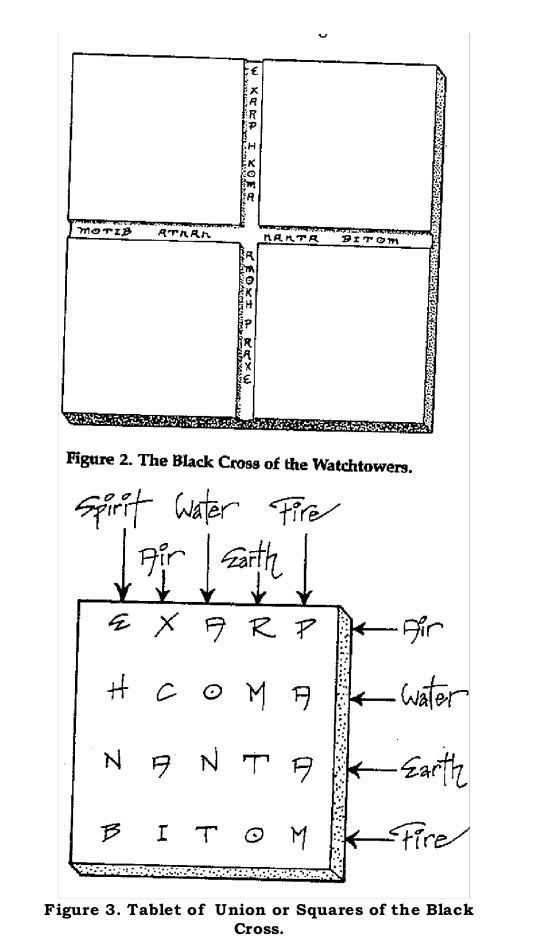
LAS ATALAYAS
Independientemente de su origen, estas Tablas y todo el sistema Enochiano representan realidades de los planos interiores. Su valor es indudable, como lo demuestran un poco de estudio y aplicación. Israel Regardie, Introducción al Sistema Enochiano
Un conocimiento de estas tablas podría entonces, si está completo, permitir una comprensión de las Leyes que rigen toda la creación. La Orden Hermética de la Aurora Dorada'. El Libro del Concurso de las Fuerzas
La Figura 1, Apéndice A, muestra las cuatro Grandes Atalayas conectadas por la Cruz Negra, tal como fueron construidas por John Dee y dadas al público por Aleister Crowley.
Cada Atalaya está construida de 12 cuadrados por 13 cuadrados. Este da un total de 156 cuadrados por Atalaya y 675 cuadrados en total, aunque sólo 644 son importantes (624 cuadrados de la Atalaya y 20 de la Tabla de Cuadros de la Unión).
Las 51 casillas de la Cruz Negra mostradas en la Figura 2, Apéndice A, se reduciden a 20 para conformar la Tabla de la Unión como se muestra en la Figura 3, Apéndice A.
La Figura 4, Apéndice A, muestra los cuadrados de la Gran Atalaya.
La figura 5, Apéndice A, muestra las casillas del Agua; la figura 6, Apéndice A, las de la Tierra;
y la figura 7, Apéndice B, las de la Tierra, Apéndice A, para la Tierra; y la Figura 7, Apéndice A, para el Fuego.
La figura 8, Apéndice A, muestra cómo se dividen las Cuatro Atalayas en los dieciséis subcuadrantes.
Hay que recordar que estos dibujos son sólo representaciones crudas de las Atalayas. Por ejemplo, las Atalayas reales no son bidimensionales, dos dimensiones como el
papel de este libro, sino que se extienden en al menos cinco dimensiones: altura, anchura, profundidad, tiempo y conciencia.
Cada plaza de la Atalaya representa una zona o región específica de los mundos interiores. Cada una está controlada por una jerarquía de deidades. Algunos tienen demonios, y otros están asociados con deidades egipcias clave y esfinges correspondientes. Los cuadrados de Sorne se asocian con signos astrológicos y cartas del Tarot. Los resultados detallados dese incluyen en los Apéndices de este manual (ver Apéndices A a D). No son fortuitos, sino que representan un esultado natural del axima hermético, "como es arriba, es abajo". La cartografía de las Atalayas incluye datos de correspondencias lógicas a través de la experimentación y la percepción intuitiva. Pretende ser una guía útil, como un mapa de carreteras para un país desconocido. Como mago, debes rellenar los detalles por ti mismo a medida que los descubras.
Figura1 : Las Cuatro Grandes Tablas conectadas por la Cruz Negra
LA TABLA DE LA UNIÓN
Las Tablas Enochianas son cuatro, cada una hace referencia a uno de los elementos Tierra, Aire, Fuego y Agua. Además de estas cuatro hay otra Tabla más pequeña, que se llama La Tabla de la Unión, dedicada al elemento Éter o Espíritu. Su función, como su su nombre indica, es unir las cuatro Tablas elementales.
La Orden Hermética de la Aurora Dorada El Libro del Concurso de las Fuerzas
La Cruz Negra se muestra en la Figura 1, Apéndice A, como la fila horizontal central y la columna vertical de cuadrados oscurecidos. Los dos brazos horizontales tienen 12 cuadrados cada uno y las barras verticales superior e inferior verticales tienen 13 cuadrados cada uno. El cuadrado central en el punto medio de la tablilla tiene un número total de 51 cuadrados. Este es el valor numérico de la palabra GOSA (Goh-sah), que significa extraño o inusual. Las letras dentro de esta Cruz Negra deletrean los cuatro Elementos elementos cósmicos de la siguiente manera:
EXARP (Ehtz-ar-peh) que significa Aire está escrito:
HKOMA (Heh-koh-mah) que significa Agua se escribe:
NANTA (Nah-en-tah) que significa Tierra se escribe:
BITOM (Bee-toh-meh) que significa Fuego:
Las 51 casillas de la Cruz Negra contienen casillas vacías así como letras repetidas (cada uno de los cuatro elementos se escribe dos veces en la Cruz Negra). Se suelen organizar en cuatro palabras de cinco letras cada una, como se muestra en laFigura 3, Apéndice A. Esta disposición de 20 casillas se denomina Tabla de la Unión. El nombre se deriva del hecho de que la Cruz Negra une las cuatro Atalayas en una sola Tabla como se muestra en la Figura 1, Apéndice A. Las letras de la Tabla de la Unión se utilizan para anteponer los nombres de los Ángeles de la Atalaya específic EHNB, XKAI, AONT, RMTO y PAAM.
Los valores numéricos de estos nombres indican el tipo y la naturaleza de la influencia. Por ejemplo, EHNB tiene el valor 66, que es igual a las palabras TOTO que significa "ciclos" e IA que significa "verdad". Las primeras casillas de la Tabla, por tanto, contienen fuerzas de la verdad que tienden a la expresión periódica. El elemento rector de la primera casilla es el Espíritu. El segundo archivo está regido por el Aire, lo que da a las casillas de ese archivo la cualidad de la inteligencia y la conciencia espirituales. La tercera fila está regida por el Agua, otorga la cualidad de las emociones y los sentimientos. El cuarto archivo está regido por la Tierra, dando forma y las primeras etapas de solidez a esas regiones. El último archivo está regido por el Fuego, que que da vida a estas regiones.os (ver Apéndice B).
Las letras de la Tabla de la Unión también se utilizan para anteponer los nombres de los Demonios. Esto se muestra en las dieciséis figuras del Apéndice B. Cada cuadrado de la figura 3 del apéndice A puede convertirse en una pirámide truncada. El resultado se muestra en la Figura 15, Apéndice A. Saber cómo se combinan los cuatro elementos cósmicos combinados dentro de un cuadrado suele arrojar luz sobre las características de esa región. Cada fila de la Tabla de la Unión está bajo la influencia del Elemento Cósmico cuyo nombre se deletrea con las letras. Por ejemplo, la fila superior está bajo la influencia del Aire. Las filas o columnas están bajo la influencia de los nombres deletreados por las letras de esa columna:
EHNB, XKAI, AONT, RMTO y PAAM.
DEIDADES PRINCIPALES DE LAS TORRES DE VIGILANCIA
Los Seres 'Astrales' poseen conocimiento y poder de un tipo diferente de los nuestros; su "universo" es presumiblemente de un tipo diferente del nuestro, en los mismos
aspectos ..... . Es más conveniente suponer la existencia objetiva de un "Ángel" que nos da nuevos conocimientos que alegar que nuestra invocación ha despertado un poder supernormaI en nosotros mismos.
Aleister Crowley, Magick in Theory and Practice
La figura 9, Apéndice A, muestra los cuatro Santos Nombres Secretos de la Divinidad, que son Nombres Sagrados de la Divinidad, que son dados por las Atalayas. Estos nombres se encuentran leyendo a través de la barra horizontal de las Grandes Cruces.
Los cuatro Nombres Sagrados son
1) Aire OROIBAHAOZPI (Oh-roh Ee-beh Ah-oh-zod-pee)
2) Agua MPHARSLGAIOL (Em-peh-heh Ar-ess-el Gah-ee-oh-leh)
3) Tierra MORDIALHKTGA (Moh-ar Dee-ah-leh Heh-keh-teh-gah)
4) Fuego OIPTEAAPDOKE (Oh-ee-peh Teh-ah-ah Peh-doh-keh)
La figura 10 del Apéndice A muestra los nombres de los cuatro Grandes Reyes de las Atalayas. Además, la correspondencia entre las cuatro Atalayas y los cuatro triunfos del Tarot.
Los cuatro Reyes son
1) Aire BATAIVAH (Bah-tah-ee-vah-heh)
2) Agua RAAGIOSL (Rah-ah-gee-oh-sel)3)
3) Tierra IKZHIKAL (E e-keh-zo d-he e-kal)
4) Fuego EDLPRNAA (Eh-del-par-nah-ah)
La figura 11 del Apéndice A muestra cómo se determinan los nombres de los 24 ancianos a partir de los brazos de las Grandes Cruces. Hay seis Seniors en cada Atalaya. La figura 11 también muestra la correspondencia entre las cuatro Atalayas y las cuatro sílabas del Tetragrammaton hebreo. Los nombres de los Seniors son:
Aire HABIORO (Hah-bee-oh-roh)
AAOZAIF (Ah-ah-oh-zodah-ee-feh)
HTNORDA (Heh-teh-noh-rah-dah)
AHAOZPI (Aha-oh-zodh-pee)
AVTOTAR (Ah-veh-toh-tah-rah)
HIPOTGA (Hee-poh-teh-gah)Agua
LSRAHPM (Less-rah-pem)
SAHNOV (Sah-ee-ee-noh-veh)
LAVAXRP (El-ah-vahtz-ar-peh)
SLGAIOL (Se1-gah-ee-oh-leh)
SOAIZNT (Soh-ahee-zoden-teh)
LIGDISA (Elee-geh-dee-sah)
Tierra
LAIDROM (E1-ahee-dar-oh-em)
AKZINOR (Ah-keh-zodee-noh-rah)
LZINOPO (E1-zodee-noh-poh)
ALHKTGA (Ah-leh-hek-teh-gah)
AHMLLKV (Ah-mel-el-keh-veh)
LIIANSA (Elee-ee-ah-ness-ah)
Fuego AAETPIO (Ah-ah-eteh-pee-oh)
ADAEOET (Ah-dah-eh-oh-eteh)
ALNKVOD (Ah-len-keh-voh-deh)
AAPDOKE (Ah-ah-ped-oh-keh)
ANODOIN (Ah-noh-doh-ee-neh)
ARINNAP (Ah-ree-neh-nah-peh)
Estos nombres son extremadamente importantes en la Magia Enochiana. Deben recitarse exteriormente y vibrar interiormente en la mayoría de las operaciones enoquianas.
FUERZAS GENERALES DE LAS ATALAYAS Y CARACTERÍSTICAS
Tuyo es el aire con su movimiento. Tuyo es el fuego con su llama intermitente. Tuya es el agua con su flujo y reflujo. ¡Tuya es la Tierra con su Estabilidad duradera!
La Orden Hermética de la Aurora Dorada
La Figura 13, Apéndice A, muestra las principales fuerzas que recorren los subcuadrantes de las cuatro Atalayas. La Figura 14, Apéndice A, muestra las principales características y signos astrológicos asociados con los dieciséis subcuadrantes de las Atalayas.
Las fuerzas de la Tierra comienzan con una violencia caótic que se transforma gradualmente en fuerzas formativas, que dan lugar a la creación de formas distintas. Las fuerzas del Agua comienzan con la energía emocional que se convierten gradualmente en fuerzas de cohesión y de creatividad.
Las fuerzas del Fuego se mueven con la violencia destructivas (deconstrucción). Estas fuerzas avanzan gradualmente hacia transformaciones creativas y la renovación de forma.
Es necesario estudiar estas figuras con detenimiento hasta conseguir una intuición de cómo estas diferentes fuerzas y energías recorren las Atalayas. Recorriendolas se pueden encontrar cuatro tipos principales de fuerzas creativa, destructiva, masculina y femenina.
Cruces, Gran Cruz, Subcuadrantes, wtf??? Aquí un dibujo explicativo de que es cada cosa.
NOMBRES DE PODER
Los Nombres Enochianos del Poder, o Nombres Bárbaros, deben ser pronunciados en voz alta para obtener efectos óptimos. La música es bien conocida por sus influencias psicológicas sobre el oyente. Durante las invocaciones y evocaciones siempre debes decir en voz alta los Nombres de Poder adecuados. Estos son los Cuatro Nombres Sagrados Santos, los nombres de los Cuatro Grandes Reyes, etc. La repetición de estos nombres en voz alta puede tener un efecto de exaltación de la conciencia. Esto es especialmente así cuando los Nombres se hacen vibrar. Para "vibrar" un nombre, hay que proyectar mentalmente el sonido hacia tu Universo Mágico al pronunciar cada sílaba en voz alta. Debes ser capaz de oír" psíquicamente cada sílaba resonar como "diez mil truenos" en todo tu Universo Mágico. Al hablar físicamente y vibrar mentalmene se crea un vínculo psico-raagnético entre usted y el objeto del nombre. Utilice el siguiente procedimiento de 6 pasos para hacer vibrar los Nombres de Poder:
PASO 1. Póngase de pie con las extremidades extendidas. Imagínese su cuerpo como totalmente vacío.
PASO 2. Inspire profundamente. Imagina el Nombre de la divinidad entrando en tu cuerpo con la respiración.
PASO 3. Deja que el Nombre descienda por tu cuerpo vacío. Imagina que pasa por la región del corazón, la zona del plexo solar, el abdomen, la zona de la pelvis, y luego tus piernas y llega a tus pies.
PASO 4. Cuando el Nombre toque tus pies, avanza tu pie izquierdo unos 30 centímetros. Luego, lleve las manos hacia atrás a los lados de tus ojos y luego inclínate hacia adelante. Mientras se inclina hacia adelante, dispare sus brazos (con los dedos juntos y apuntando hacia delante) hacia fuera en frente a ti e imagina que el Nombre se precipita hacia arriba a través de tu cuerpo vacío mientras exhala. PASO 5. Imagine que el Nombre sale de su cuerpo y truena hacia los confines del universo. Deja que vibre por todo el universo como "el retumbar de diez mil truenos". Tu mirada debe estar centrada en el Nombre.
PASO 6. Retira el pie izquierdo y ponte de pie. Deje que sus percepciones normales vuelvan lentamente. Tómese su tiempo. Nunca haga vibrar los Nombres Poder rápidamente.
Aunque estos pasos pueden parecer incómodos al principio, con la práctica verás que el procedimiento tiene una cierta gracia y facilidad natural asociada a él. Pronunciar el nombre de una deidad en voz alta no es suficiente para obtener los resultados
deseados. Al hacer vibrar el nombre de una deidad (o demonio) de acuerdo con este procedimiento establecerá un vínculo oculto con esa deidad que es esencial para el éxito. Si se hace correctamente, una sola vibración le dejará exhausto y drenado de energía.
PREPARACIÓN MÁGICA
Además de leer y comprender la Magia Enochiana así como otras obras sobre Magia, harías bien en asumir un nombre mágico, hacer un juramento mágico y comenzar un diario mágico. La iniciación en una organización mágica no es necesaria. La auto-iniciación es igual de fiable. Lo importante es moldear tu Cuerpo de Luz, o tu "Personalidad Mágica", tan real como sea posible. En circunstancias normales un Nombre Mágico y el Juramento ayudarán a este objetivo (un juramento hecho por ti mismo a ti mismo y para ti mismo es tan vinculante como cualquier otro tipo de juramento en lo que respecta al karma).
1. EL NOMBRE MÁGICO. Determina qué o quién te gustaría ser. Luego determina un nombre para esta meta mágica. Este puede ser en inglés, francés, latín, hebreo, egipcio o incluso Enochian. Cualquier idioma servirá. La única regla es que intuitivamente te parezca correcto. Los miembros de la Aurora Dorada adquirieron un nuevo nombre mágico en cada grado. Crowley, por ejemplo, se llamaba Perdurabo, "perdurará" porque deseaba que su mensaje sobreviviera. Cuando sientas honestamente que has estado a la altura de tu nombre mágico, entonces será el momento de adoptar uno nuevo.
2. EL JURAMENTO MÁGICO. Hacer un juramento es un asunto solemne. Si es sincero, activará una fuerza kármica en tu interior que puede tener consecuencias peligrosas si se rompe. Sólo tú sabrás con seguridad si eres sincero. Esto puede tener lugar en el interior como un simple compromiso mental y personal contigo mismo, o externamente en una ceremonia mágica diciendo las palabras adecuadas en voz alta. Se debe hacer un nuevo juramento en cada paso de tu desarrollo mágico. Un juramento mágico muy conocido es el Juramento del Abismo. Este Juramento debe ser tomado por cualquier mago que desee cruzar el Gran Abismo Exterior, el reino del archidemonio KHORONZON. Las palabras de este Juramento son: "Juro interpretar todo fenómeno como un trato particular de Dios con mi alma". Esto significa que usted prometes ver todo lo que te ocurra a partir de ese momento como la intercesión directa de tu dios interior (tu Santo Ángel de la Ángel de la Guarda). Este Juramento tiene muchas consecuencias terribles pero es esencial para poder cruzar el Abismo con seguridad. Te aconsejamos que retrases este juramento hasta estar suficientemente preparado mental y físicamente para aceptar sus amplias implicaciones.
3. EL DIARIO MÁGICO. Hay varias razones para comenzar y actualizar un Diario Mágico. Te permite comprobar tus progresos de forma sistemática y científica. Por ejemplo, cualquier experiencia repetitiva o encuentro mágico cíclico será más fácilmente comprobada si se dispone de un diario. También le permite registrar sus experiencias psíquicas mientras están frescas en la memoria, para poder con precisión señales y correspondencias en una fecha posterior. El mago moderno puede grabar sus experiencias en una cinta de casete o en un disquete, utilizando un ordenador de mesa. Los programas de bases de datos permiten almacenamiento y recuperación de reflexiones mágicas, y las impresiones proporcionarán copias impresas cuando se necesiten. Actualice su agenda tan a menudo como pueda, y te encontrarás con que estás creciendo. (nota del traductor, caundo se escribió este libr al parecer no había llegado aún la era del smartphone)
Capítulo 3 de 15
Preparación Mágica


DESARROLLO DEL CUERPO SUTIL
Para explorar las Atalayas y los Aethyrs es esencial poder viajar en el cuerpo sutil, conocido como el Cuerpo de Luz. Hay muchos buenos libros disponibles sobre este tema (el Liber O de Crowley es un excelente ejemplo) que pueden proporcionar detalles útiles. A continuación, un resumen de los pasos más importantes en el desarrollo de su cuerpo sutil:
ETAPA 1. Consagra un círculo y trabaja dentro de él. Olvídate de las deidades , Atalayas y Aethyrs por un tiempo y concéntrese sólo en abandonar mentalmente tu cuerpo físico. Intenta ver tu cuerpo como si estuvieras de pie frente a él.
ETAPA 2. Observe las contrapartes astrales de los objetos físicos. Cree su propio templo astral completo con muebles. Ejercite su Cuerpo de Luz y su imaginación mágica a intervalos regulares hasta que su templo astral sea tan real para usted como su templo físico.
FASE 3. Confirme el desarrollo de su Cuerpo de Luz hasta que sea tan real como tu cuerpo físico. Lenta y gradualmente, proyéctalo hacia el exterior desde tu templo astral hacia el entorno del Plano Astral.
ETAPA 4. Practica la "elevación en los planos", yendo cada vez más alto cada vez más alto. Intente alcanzar los planos espirituales más allá del mental.
NOTA: El desarrollo del Cuerpo de Luz es un proceso continuo. La clave del éxito es la práctica. El fruto de tus esfuerzos son las experiencias y lecciones que seguramente
encontrarás a medida que avance. Recuerda que tu cuerpo sutil ya existe; simplemente estás tomando conciencia de él.
ADVERTENCIA: No confundas los planos. Mantén siempre tu cuerpo sutil en los planos sutiles y su cuerpo físico en el plano físico. El desequilibrio mental puede resultar de confundir los planos. Este es probablemente el principal error que comete el mago novato.
HOJA DE TRABAJO: Utilice el siguiente ejemplo de hoja de trabajo para mantener un registro continuo de sus operaciones. Se sugiere que construya y utilice hojas de trabajo como como ésta para todas sus operaciones.
EJEMPLO DE HOJA DE TRABAJO
Fecha de la operación:
Hora de la operación:
Lugar de la operación:
Duración de la operación:
Objetivo de la operación:
Descripción de los preparativos:
Descripción de los resultados:
Resumen:
Sugerencias:
EJEMPLO DE HOJA DE TRABAJO COMPLETADA
Fecha de la operación: 14 de febrero de 1984
Hora de la operación: 9:30 p.m.
Lugar de la operación: Casa, en el estudio
Duración de la operación: 23. minutos
Objetivo de la operación: Tratar de mar la contraparte astral de la tabla de roble.
Descripción de los preparativos: Dibujo de un círculo psíquico alrededor de mí mismo mientras sentado en una silla confortable frente a una tabla baja de roble americano. Esta vez no se utilizaron perfumes ni rituales.
Descripción de los resultados: Cuando mis ojos se liberaron, vi unas 80 líneas alrededor de la tabla que podría haber sido su parte astral. Cuando mis ojos se enfocaron, sólo vi la mesa.
Resumen: Inconcluso. Probablemente vi la contraparte astral de la mesa pero no se puede asegurar.
Sugerencias: Hay que volver a intentar este ejercicio de pie. Mi mirada se desenfocó esta noche y tuve que esforzarme en mantener mi atención centrada.
INVOCACIÓN VS EVOCACIÓN
Te invoco a Ti, el Dios Terrible e Invisible: Que habitas enel Lugar Vacío del Espíritu.
Aleister Crowley, LiberSamekh
Os invoco a vosotros, ángeles de las esferas celestiales, cuya morada está en lo invisible. Vosotros sois los guardianes de las puertas del universo, los guardianes de esta esfera mística. Que mi esfera sea pura y santa para que pueda entrar y ser partícipe de los secretos de la Luz divina.
Ceremonia de la Atalaya de la Aurora Dorada
Técnicamente, invocar significa "llamar en", mientras que evocar significa "llamar hacia". En circunstancias normales, invocarás a una deidad cuando se quiere asumir su identidad. Se evoca a una deidad cuando quieras comunicarte con esa deidad sin perder tu propia identidad.
Debes dibujar un círculo a tu alrededor para protegerte durante durante una operación, así como para recordar simbólicamente que tú eres un microcosmos. Para atraer a una deidad enoquiana a este círculo (y por lo tanto en el microcosmos del mago) requiere una invocación. Se debe dibujar un triángulo fuera de su círculo para atraer a una deidad Enochiana a su macrocosmos (pero no a su microcosmos). Esta atracción requiere una evocación.
Un ejemplo de una evocación es la conocida materialización del demonio KHORONZON del décimo Aethyr, ZAX. Invitar a un ser así a su círculo podría ser perjudicial y no debe hacerse a la ligera. Cuando invoques, utiliza la Copa como símbolo de tu apertura y receptividad. Cuando invoques utiliza la Espada para mantener a la entidad separada de ti mismo. Al invocar, te identificarás con la deidad. Hablarás y actuarás con la autoridad de esa deidad. Así puedes:
1. Hablar o exponer la sabiduría de una cosa o alguien.
2. Bendecir a una persona o cosa en la narración de la deidad.
3. Comandar a las deidades o entidades que están legalmente bajo la jurisdicción de la deidad.
Al evocar, podrá encarnar la energía o virtud de la deidad evocada en:
1. Un talismán.
2 Cualquier instrumento o arma mágica.
3. Un sacramento, como una oblea o vino, que puede ser consumido en tu cuerpo o en el de otro.
Capítulo 4 de 15
Invocación y Evocación


TRES MÉTODOS PRINCIPALES DE INVOCACIÓN
Como mago, podrás recurrir a tres formas principales parainvocar a una deidad. Estas son:
1. DEVOCIÓN
Esta es la vía del corazón. La devoción sincera a una deidad, llenandote con las cualidades y atributos divinos conocidos, con el tiempo, provocará un encuentro con esa deidad. Este es el método más seguro, pero también el más lento. Estudia el Liber
Astarte de Crowley para conocer los detalles de este método. Este método es el equivalente occidental del Bhakti Yoga.
2. CEREMONIA
Es el método más directo que implica una llamada directa de la deidad deseada. El ritual debe ser tal que induzca un grado de Samadhi o concentración en un único punto.
3. DRAMA Este método es el camino del corazón combinado con el cuerpo. Es difícil de realizar por una sola persona, pero años de tradición atestigua su eficacia. El Liber 777 de Crowley puede utilizarse para determinar las correspondencias mágicas necesarias. Sin embargo, el hecho mismo de que se conozca poco de las deidades enochianas impide el uso de este método para la mayoría de las invocaciones. Puede utilizarse eficazmente para los dioses y diosas egipcios de los cuadrantes menores de la Atalaya. En este método se asume la forma de dios apropiada (es decir, se deja que el cuerpo de luz adopte la forma de dios) y luego se representan incidentes bien conocidos que involucran a la deidad deseada mientras asumiendo el papel de la misma.
ELEMENTOS DE UNA INVOCACIÓN
Todo mago debe componer su ceremonia de manera ue produzca un clima dramático En el momento en que la excitación se vuelve ingobernable, cuando todo el ser consciente del mago experimenta un espasmo espiritual, en ese momento debe pronunciar esa adoración suprema.
Aleister Crowley, Magick in Theory and Práctica El objetivo de una invocación es que te identifiques temporalmente con la deidad. El único instrumento mágico realmente necesario para una invocación (o evocación) es la varita mágica. Sin embargo, se puede utilizar una copa para en invocación (para unir) y una espada para la evocación (para mantener la separación). Para invocar con éxito una deidad enoquiana se requiere un grado de Samadhi (un estado avanzado de meditación trascendental).
A continuación se presenta un esquema de las etapas primarias.
1. LA FORMA. En primer lugar, el modelo simbólico de la deidad debe ser minucioso hasta que puedas mantener una imagen fija en tu mente. Los atributos de la deidad deben ser contemplados mientras asumes su forma.
2. LA VOZ. Entonces escucharás la voz de la deidad. La voz de la deidad debe estar en consonancia con su naturaleza característica.
3. LA ASERCIÓN. En la siguiente etapa debes afirmar su identidad con la deidad.
4. LA IDENTIDAD. En la última etapa debes convertirte en el vehícuo de la deidad. Esta etapa precede el objetivo original de la invocación.
UNA INVOCACIÓN/EVOCACIÓN EXITOSA
Las invocaciones, incluso de los dioses más positivos, son peligrosas, a menos que se tenga cuidado de mantener la personalidad del Dios distinta de la propia.
Aleister Crowley, Magick Without Tears
Para que una invocación o evocación tenga éxito debes ser capaz de elevar tu mente a otra dimensión. Debes ser capaz de ver y oír con el Cuerpo de Luz, porque las deidades y demonios de las Atalayas y los Aethyrs no son físicos, sino etéricos, astrales o psíquicos. El primer paso es la imaginación. Debes imaginar que la deidad se presenta ante ti. Las señales conocidas de la operación deben ser prácticas durante este paso. En el momento culminante de la operación, verá y/o escuchará a la deidad o al demonio invocado. Si un demonio te golpea, sufrirás el dolor correspondiente. Sin embargo, nadie a tu alrededor podrá ver u oír a la deidad, excepto usted mismo. Esto no disminuye la realidad del demonio o la deidad. Si hay un escriba tomando nota, debes decir en voz alta lo que ves y oyes. Si puedes formular tu cuerpo sutil y elevarte en los planos entonces puedes ir a la deidad en lugar de hacer que venga a ti. Los resultados serán los mismos, excepto que el recuerdo completo de las experiencias del viaje astral es difícil. Después de cada invocación o evocación exitosa, destierre siempre a la deidad a su residencia natural. Cada invocación o evocación establece un vínculo psico- magnético entre usted y esa deidad. Este vínculo debe ser debidamente desterrado después de la ceremonia, o la deidad podrá regresar a ti en cualquier momento. Las consecuencias de tal visita podrían ser perjudiciales.
La invocación más importante que debes realizar tú, el mago enochiano, es la de tu propio Santo Ángel de la Guarda. Un ejercicio de para tal invocación se presenta más adelante en este manual.
UN RITUAL DE INVOCACIÓN ENOQUIANO
El siguiente ritual ha sido adaptado del Ritual de Invocación llamado "Fórmula de Apertura por Atalaya" de Regardie.
PASO 1. Utiliza tu Espada para iniciar los Rituales de Destierro del Pentagrama y del Hexagrama. (Los Rituales Enochianos del Pentagrama y del Hexagrama se dan más adelante en este manual.)
PASO 2. Entra en tu Cuerpo de Luz. Sostén tu varita mágica ante ti. Póngase de cara a la Atalaya del Fuego en el Sur. Vea cómo irradia fuego de tu Varita y di:
He aquí que todos los fantasmas se han desvanecido, veo ese Fuego sagrado y sin forma; El Fuego que “flamea” y consume Las profundidades ocultas del universo, Y escucho la Voz del Fuego.
Traza el Pentagrama de Fuego ante ti, y luego traza una flamante letra roja. La letra Enochiana K (K) dentro de él. Mantén esta letra flameante y di,
OIP-TEAA-PDOKE
OIP-TEAA-PDOKE (Oh-ee-peh Teh-ah-ah Peh-doh-keh)
En los nombres y letras del Gran Cuadrilátero del Sur, yo os invoco, Ángeles de la Atalaya del Sur. Entonces vibra el Gran Sagrado Nombre de esta Atalaya. Sentid a los Ángeles e la Atalaya del Fuego subiendo desde tu interior.
PASO 3. Toma tu Copa en la mano. Gira hacia la Atalaya del Agua en el Oeste. Rocía un poco de agua y di,
Ahora eh aquí Yo, un Sacerdote del Fuego, rocía las aguas antiguas del mar, y escucha la ira de las olas en la orilla;
La Voz del Agua, ahora y por siempre.
Ponte frente a la Atalaya del Agua. Traza el Pentagrama del Agua frente a ti. Traza dentro de él una letra enochiana azul Q ( 1 j ). Enfréntate a la letra y di,
MPH-ARSL-GAIOL
MPH-ARSL-GAIOL (Em-peh-heh Ar-ess-el Gah-ee-oh-leh) En los
nombra las letras del Gran Cuadrilátero del Oeste,
YO os invoco, Ángeles De la Atalaya del Oeste. Entonces vibra el Gran Nombre Sagrado de esta Atalaya. Sentid a los Ángeles de la Atalaya del Agua subiendo desde dentro de ti.
PASO 4. Toma tu Daga en la mano. Gira hacia la Atalaya del Aire en el Este. Golpea el Aire tres veces y di,
Mi mirad ase extiende a través de los reinos del Aire. En el Aire sin forma viene la visión y la voz; destello que salta, que gira, Se arremolina, gritando en voz alta.
Ponte frente a la Atalaya del Aire. Traza el pentagrama de invocación del Aire ante ti. Traza dentro de él una letra enochiana amarilla H (~r ) ). Enfréntate a la letra y di,
ORO-IBAH-AOZPI
ORO-IBAH-AOZPI (Oh-roh Ee-bah Aah-oh-zod-pee)
En los nombres y letras del Gran Cuadrilátero Cuadrilátero, Yo os invoco, Ángeles De la Atalaya de Oriente. Entonces vibra el Gran Nombre Sagrado de esta Atalaya. Sentid a los Ángeles de la Atalaya del Aire subiendo desde tu interior.
PASO 5. Toma tu Pentagrama y gira hacia la Atalaya de Tierra en el Norte. Agita el Pentagrama tres veces y di,
Me inclino payasamente hacia un mundo de tinieblas en el que yacen profundidades desconocidas Y el Hades se envuelve en la penumbra Deleitándose en imágenes sin sentido; Un negro Abismo que no cesa de rodar, Una voz muda y vacía.
Ponte frente a la Atalaya de la Tierra. Traza el Pentagrama de la Tierra ante ti. Traza la letra Enochiana X ( ~ ) dentro de él. Enfréntate a la letra y di,
MOR-DIAL-HKTGA
MOR-DIAL-HKTGA (Moh-ar Dee-ah-leh Heh-keh-teh-gah)
En los nombres y letras del Gran Cuadrilátero del Norte, Os invoco, Ángeles De la Atalaya del Norte. Entonces vibra el Gran Nombre Sagrado de esta Atalaya. Sentid a los Ángeles de la Atalaya de la Tierra subiendo desde tu interior.
PASO 6. Ponte de cara al Este y traza los pentagramas de invocación activa y pasiva de los Pentagramas del Espíritu mientras dices:
EXARP (Ehtz-ar-peh) BITOM (Bee-toh-meh) NANTA (Nah-en-tah) HKOMA (Heh-koh-rnah)
En los nombres y letras de la Mística Tabla de la Unión, os invoco a vosotros, Ángeles que sois Fuerzas Divinas del Espíritu de la Vida. Entonces vibra los cuatro nombres de los elementos. Sentid a los Ángeles de la la Tabla de la Unión subiendo desde tu interior.
PASO 7. Haz los signos del Rasgado del Velo (referencia "Rasgar y cerrar el velo" más adelante en este manual) y di,
Os invoco, Ángeles de las esferas celestiales, cuya morada está en lo invisible. Vosotros sois los Guardianes De las Puertas del Universo. Que ustedes sean también los guardianes de esta mística esfera. Aleja el mal y los desequilibrados. Fortalecedme e inspiradme Para que 1 pueda preservar en pureza Esta morada de los misterios. Que mi esfera sea pura y santa para que pueda entrar y ser partícipe de los Secretos de la Luz.
Siente a todos los Ángeles de las Atalayas y la Tabla de la Unión elevándose juntos desde el interior de tu Cuerpo de Luz.
PASO 8. Gira tres veces hacia cada Atalaya mientras sostienes tu varita mágica. Luego mira hacia el Este y di, Yo soy el Señor del Universo. Yo soy Aquel a quien la Naturaleza no ha formado. Yo soy el Vasto y Poderoso. Señor de la Luz y de las Tinieblas. Señor y Rey de la Tierra. Véase a sí mismo como una encarnación de las fuerzas espirituales del universo.
PASO 9. Concluye sintiendo el poder y la fuerza de todas las deidades Enochianas que se elevan en tu Cuerpo de Luz. Mantén este sentimiento durante tanto tiempo como puedas. Que así asumas sus cualidades. De hecho, de esta forma puedes asumir
sus cualidades y poderes. Cuando tu identidad espiritual esté firmemente establecida, olvida todo repitiendo los Rituales de Destierro.
Capítulo 5 de 15
Rituales Elementales


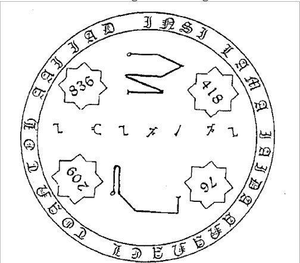
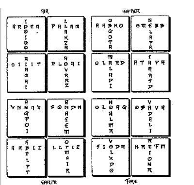
TALISMANES
Un talismán es un almacén de un tipo particular de energía, el tipo de energía que se necesita para realizar la tarea para la que se ha construido.
Aleister Crowley, Magick Without Tears
En la construcción de un talismán, el simbolismo debe ser exacto y en armonía con las fuerzas universales.
Talismanes de la Aurora Dorada
S.L. MacGregor Mathers, líder de la Aurora Dorada y tutor durante un tiempo de tiempo de Aleister Crowley, definió un talismán como "una figura mágica cargada. Un talismán es cualquier objeto que se construye y se carga con una fuerza mágica. para un propósito específico. Se "carga" con las fuerzas psíquicas que se canalizan a través de uno mismo para dicho propósito. Todo mago debe cargar sus propios talismanes, pero como con todo una fuerza kármica se infiltrará en el objeto y lo vinculará con su creador.
Con un uso adecuado, sus armas mágicas se convertirán automáticamente en armas de poder. Se cargarán con tus propias energías emocionales y psíquicas. Se pueden hacer talismanes adicionales para fines específicos pero todos deben estar bajo los siguientes títulos generales:
TIERRA: Tauro, Virgo, Capricornio, Venus, Luna, Pentáculo, negro, Norte.
AGUA: Cáncer, Escorpio, Piscis, Marte, Copa, Azul, Oeste.
AIRE: Géminis, Libra, Acuario, Saturno, Mercurio, Espada, amarillo, Este.
FUEGO: Aries, Leo, Sagitario, Sol, Júpiter, Varita, rojo, Sur.
Cuando practiques el ejercicio para obtener el Conocimiento y conversación de tu Santo Ángel de la Guarda, tendrás que diseñar y hacer su propio talismán de
ILIATAI.
La figura 5 muestra un ejemplo de dicho diseño de talismán.
Las Atalayas y la Tabla de la Unión pueden utilizarse para crear talismanes. Las figuras 15 a 31 en el Apéndice A pueden hacer cada una un excelente talismán de estas regiones. Técnicamente, los talismanes deben construirse y cargarse con fines especulares utilizando rituales de consagración apropiados. Utilice el Liber 777 de Crowley o las señales proporcionadas en la Magia Enochiana y en este manual para las correspondencias correctas. Como regla general para cargar un talismán debe estar siempre en harrnonia con el efecto que se quiere producir. El talismán cargado debe ser envuelto en seda blanca o tela fina para para evitar la contaminación o la fuga de la carga.
NOMBRES SEFIROTICOS
Los nombres de las deidades que presiden las dieciséis cruces sefiróticas (también llamadas cruces del calvario) se muestran en la figura 12, A péndice A. Estas
deidades deben ser dirigidas para todas las operaciones sobre cualquiera de las casillas de las Cruces Sefiróticas. La observación de la Figura 12, Apéndice A, muestra que en cada subcuadrante, se utiliza un cuadrado para los nombres horizontal y vertical de los Ángeles de la Cruz del Calvario. Estas 16 letras especiales se pueden organizar para deletrear la frase
ONDO-APIZE-BABALON (Oh-en-doh Ah-pee-zodeh Bah- bah-loh-en) que puede traducirse como "las regiones eternas de BABALÓN", donde BABALON es el nombre de una importante diosa. Es equivalente a Kali, Kundali, Isis y otras deidades femeninas que se asocian con el Sephira cabalístico de Binah. El valor gémarico de esta frase enoquiana, es decir, el valor de las 16 letras que se asignan a estas casillas, es de 318. Este es el valor de el cuadrado mágico de O L A P (nota: vemos este cuadro más adelante).Esencialmente, esto significa que estos 16 cuadrados contienen fuertes fuerzas de curación y bienestar.
PIRAMIDES
La Magia Enochiana explica los procedimientos específicos utilizados para convertir cada cuadro de la Atalaya en una pirámide truncada. La figura 15, Apéndice A, muestra los resultados de la conversión de la Tabla de la Unión en pirámides truncadas. Las figuras 16 a 31 muestran las pirámides de las cuatro Atalayas.
Además de proporcionar un efecto tridimensional al mirar las pirámides truncadas, también son útiles para mostrar cómo los elementos cósmicos se combinan en cada cuadro de la Atalaya. Por ejemplo, cuando se observa la O de NAKO (Figura 18, Apéndice A) se puede ver a simple vista que está compuesta por dos partes de Aire, una parte de Tierra y una parte de Agua.
Durante una visita a esta región, se espera ver mucho Aire, algo de Agua y algo de Tierra, pero nada de Fuego. Ahora mira la S de SHAL (también figura 18, apéndice A). Aquí se puede ver a simple vista que esta región tiene tres partes de Tierra y una parte de Aire. No es de esperar que haya evidencias de Agua o Fuego en esta región. De esta manera, las pirámides truncadas que se muestran en las figuras 15 a 31 del Apéndice A pueden ser especialmente útiles para resumir rápidamente el elemento cósmico de los cuadros de la Atalaya. La pirámide en sí misma es un poderoso simbolo mágico. Su base tiene cuatro lados , el cuatro es el número de la estabilidad y la firmeza, mientras que su cúspide es un único punto en lo alto. Representa el universo mágico como una expresión graduada en el tiempo, el espacio y la forma del SER, desde las más altas esferas espirituales hasta las esferas materiales más bajas. La pirámide también puede representarte a ti mismo; la base corresponde a tu cuerpo físico y el punto más alto a tu Santo Ángel de la Guarda.
Como ayuda en las operaciones mágicas con pirámides de la Atalaya, puedes hacer una pirámide de muestra de cartón de la siguiente manera: Corta la pirámide de cartón con una base de unos 10 centímetros. Utilice una forma como la que se muestra a continuación. Recorte la forma en el punto y pegue los bordes para hacer una pirámide truncada.
LAS GRANDES CRUCES
El elemento más importante de cada Tabla Angélica es la Gran Cruz cuyo eje desciende de arriba a abajo y cuya barra cruza la Tabla en el centro. Esta Cruz consta de 36 casillas, y tiene una doble línea vertical que se llama Línea Dei Patris Filii, 'la Línea de Dios Padre e Hijo, y "Linea Spiritus Sancti", la Línea del Espíritu Santo, que la cruza horizontalmente, La "Linea Spiritus Sancti" es siempre la séptima fila de letras desde arriba, mientras que las dos columnas verticales de las dos columnas verticales de la "Linea Dei Patris Filiique" son siempre la sexta y la séptima columnas contando desde la derecha o la izquierda.
La fila central de cada Tabla de la Atalaya, junto con las dos columnas verticales centrales, forrman lo que se llama las Grandes Cruces de las Atalayas. Los cuadrados de cada Gran Cruz pueden convertirse en pirámides truncadas como se muestra en el Apéndice D. Los brazos exteriores de estas cruces contienen las letras O, M, E y L y los brazos interiores contienen las letras O, M, I y A. En conjunto juntas forman las palabras OM-EL-OM-IA (Oh-meh el-oh meh- ee-ah), que significa: "la comprensión más elevada es la comprensión de la verdad". Las figuras del Apéndice D muestran que cada Gran Cruz contiene dos cuadrados que se utilizan para las barras verticales y horizontales. Las letras de estos cuadrados se pueden organizar para deletrear una importante palabra mágica de 8 letras: LAHALASA (Lah-hah-lah-sah). El valor gatémico de esta palabra es de 48, un número importante en la Magia Enochiana: es el número de la fórmula mágica de IAO (ver LA FÓRMULA DE IAO más adelante en este manual). Esta palabra puede también puede ser utilizada en operaciones mágicas en forma de un cuadrado mágico como se muestra a continuación. El valor gématricico de este cuadrado es 96 donde 96 = 48 X 2. Cada letra de la palabra LAHALASA se utiliza dos veces en el cuadrado.
LOS EFECTOS DE LAS LETRAS MÚLTIPLES EN UN CUADRO
Algunas de las casillas de la Atalaya tienen varias letras. Dos cuadrados (uno en Agua y otro en Tierra) tienen cuatro letras cada una, y dos cuadrados (uno en Agua y otro en Tierra), tienen tres letras cada una. Cincuenta y cinco casillas tienen dos letras cada una. Las letras múltiples expresan la variedad de fuerzas que actúan en estas regiones. Muchos de estos cuadrados pueden verse de varias maneras diferentes. Por ejemplo, el elemento Fuego es a la vez destructivo y creativo porque la vivificación del espíritu implica la muerte de la materia. De esta manera el Arcángel de la cuadratura T/L en MSAT (L) en Fuego de la Tierra se puede deletrear ALMSA o ATMSA donde, ALMSA = 117 = NANBA (espinas) ATMSA = 118 = CONO (fe)
Si se utiliza la letra L, se verá el cuadrado en su aspecto destructivo. Si utilizas la letra T, podrás ver el mismo cuadrado en su aspecto espiritual. Para complicar un poco más las cosas, la la letra T puede ser un 9 o un 3, de modo que el propio ATMSA tiene dos aspectos denotados por los números 118 y 112.
La última casilla de VSX(S)Y(L,N,H), en Agua de Agua tiene cuatro letras (Le., Y, L, N y H). Como regla general, la primera letra es la más importante. Así, el ángel YVSX es el principal regente de este cuadrado. Sin embargo, los ángeles LVSX, NVSX y HVSX también pueden encontrarse en este cuadrado. Cuando se miran los valores gematricos de estos nombres se ve:
YVSX = 537 LVSX =485 NVSX = 527 HVSX = 478
Además, como la letra X también puede ser una S también se encontraría
YVSS = 144 L V S S= 9 2 NVSS = 134 HVSS = 85
Esto da un total de ocho posibles Ángeles, Arcángeles y Demonios en este cuadro. Esta variedad de fuerzas gobernantes es coherente con la diosa egipcia que preside, Isis, que tiene muchos aspectos y roles. Sin embargo, cada gobernante será influenciado por Saturno y el Universo (Atu XXI). Las letras múltiples en cuadrados, resultan de la complejidad de estas regiones. Las fuerzas potenciales de cualquier cuadrado sólo pueden ser investigadas plenamente observando cada una de las letras que se le asignan.
LOS COLORES DE LA TORRE DE LAS ATALAYAS
Los colores simbólicos apropiados para hacer sus propias cartas o cartas son los siguientes:
AIRE = amarillo Aire de Aire = malva o púrpura Agua del Aire =letras azules Tierra del Aire = letras negras Fuego del Aire = letras rojas
AGUA = azul
Aire del Agua = letra amarilla Agua del Agua = letras naranjas Tierra de Agua = letras negras fuego de agua = letras rojas
TIERRA = negro Aire de Tierra = letra amarilla Agua de Tierra = letra azul Tierra de Tierra = letra verde o blanca Fuego de Tierra = letras rojas
FUEGO = rojo Aire de Fuego = letra amarilla Agua de Fuego = letra azul Tierra de Fuego = letra negra Fuego de Fuego = letra verde
Los colores de la Gran Cruz son
Aries, Leo, Sagitario = Fuego = rojo Cáncer, Escorpio, Piscis = Acuoso = azul Géminis, Libra, Acuario = aéreo = amarillo Tauro, Virgo, Capricornio = terrestre = negro
Los colores de las cruces sefiróticas se determinan utilizandocada pirámide truncada como:
Los colores de los cuadros de los Kerubines son determinados cómo:
donde,
T __ Color de la Tabla K = Color del elemento de la Carta de Corte del Kerubin S = Igual que el triángulo nº. 1 A = Color del ángulo VARAS= Fuego, Yod, rojo COPAS= Agua, He, azul ESPADAS = Aire, Vau, amarillo PENTACULOS= Tierra, He, negro
Los colores de las casillas de la Atalaya Menor se determinana partir de los signos astrológicos y planetarios como sigue:
ROJO = de fuego = Sol, Júpiter, Aries, Cáncer, Libra, Capricom AZUL = acuático = Marte, Tauro, Leo, Escorpio,Acuario AMARILLO = aéreo = Saturas, Mercurio, Géminis, Virgo, Sagitario, Piscis NEGRO = terrenal = Venus, Luna, Fuego, Aire, Agua, Saturno
Como función general, los colores complementarios deben utilizarse cuando se colorean los lados de las pirámides truncadas como sigue:
Los lados de las pirámides/cuadrados AZULES tienen letras anaranjadas. Los cuadrados/las caras de la pirámide de color AMARILLO tienen letras de color púrpura.
Los lados de las pirámides de color NEGRO tienen letras blancas.
NOMBRES DE ARCÁNGELES, ÁNGELES Y DEMONIOS
Las figuras 1 a 16, Apéndice B, muestran los nombres de las principales deidades principales de los 16 subcuadrantes de las Atalayas. Los cuatro cuadrados de la parte superior de estas figuras contienen los nombres de los ángeles querubines. No hay demonios ni ángeles menores en estos cuadrados superiores (es decir, son superiores en el sentido de que están situados encima de las columnas horizontales de la Cruz Sefirótica). Los nombres que aparecen en los recuadros de la parte superior de los cuadrados son los Arcángeles. Los Arcángeles residen sobre las respectivas filas de cuadrados que indican los kerubines. Como ejemplo, la Figura 1, Apéndice B, muestra Aire de Aire. Se debe ver que en el primer cuadrado el Arcángel ERZLA (Erah-zod-lah) gobierna al Ángel Querubín RZLA (Ra-zodIah) que gobierna los cuatro cuadrados en la fila o columna por debajo del primer cuadrado. EZLAR (Eh-zod-lahrah) es el Arcángel que gobierna a ZLAR (Zod-lah-rah) en la segunda fila. Las 16 casillas inferiores se llaman las Escuadras Menores del Aire del Aire. La primera de estas casillas está gobernada por el Ángel Menor Gobernante XKZNS (Tz-kehzoden-seh) y el Ángel Menor KZNS (Keh-zoden-seh). El demonio XKZ (Tz- keh-zod) también está en este cuadrado. Como otro ejemplo, mira la Figura 12, Apéndice B. Usted debería ver que el cuadrado T de STIM (referencia a la Figura 6, Apéndice A, letras foz) está gobernada por el Ángel Menor Gobernante ATIMS (Ah-tee-meh-seh) y el Ángel Menor TIMS (Tee-meh-seh). El demonio ATI (Ah-tee) también se encuentra en este cuadro que está presidido por el Ángel Querubín AOMI (Ah-oh-mee) y el Arcángel NAOMI (Nah-ohmee). Durante todas las operaciones mágicas en la Atalaya hay que dirigirse a la jerarquía apropiada de deidades todas las operaciones mágicas en los cuadrdros de la Atalaya.
Utiliza la siguiente jerarquía para tus invocaciones:
Reyes Ancianos Ángeles de la Cruz Sefirótica Kerúbica Ángeles Arcángeles Ángeles menores Demonios
Figura 1: Arcángeles, Ángeles y Demonios en Aire de Aire.
Figura 2: Agua de Aire.
Figura 3: Tierra de Aire.
Figura 4: Fuego de Aire.
Figura 5: Aire de Agua.
Figura 6: Agua de Agua.
Figura 7: Tierra de Agua.
Fogura 8: Fuego de Agua.
Figura 9: Aire de Tierra.
Figura 10: Aire de Tierra.
Figura 11: Tierra de Tierra.
Figura 12: Fuego de Tierra.
Figura 13: Aire de Fuego.
Figura 14: Agua de Fuego.
Figura 15: Tierra de Aire.
Figura 16: Fuego de Fuego.
SIGILOS DE LAS DEIDADES DE LAS ATALAYAS
Las Letras que se muestra en la Figura 6 es una adaptación de la Rosa Cruz de la Aurora Dorada, que está específicamente diseñada para el uso del alfabeto hebreo. La figura 6 contiene el equivalente enochiano. Hay tres filas que contienen un total de 21 regiones y 26 letras. El simbolismo de la Rosa es el siguiente.
1. Las tres regiones interiores que rodean el círculo central simbolizan los elementos cósmicos activos de Agua, Aire y Fuego que rodean, y operan sobre la Tierra.
2. La segunda fila de siete letras representa los siete planetas sagrados.
3. La tercera y más externa fila de once regiones representa el pentagrama y el hexagrama unidos (5+6=11).
4. Cada región de letras representa un pétalo de la Rosa. Utilizando AIK BKR (referencia AIK BKR Y LOS AETHYRS más adelante en este manual) los pétalos/regiones suman 3 (3+7+11 21=2+1=3), el número de filas de la Rosa.
La Rosa se utiliza para determinar los sigilos de las deidades de las cuatro Atalayas. Comienza con la primera letra en el pétalo correspondiente de la Rosa. Dibuje unes rectas de letra a letra como aparecen en la imagen. El patrón así dibujado es el sigilo de la deidad. Comienza siempre cada sigilo con un pequeño círculo. En la última letra, termine el sello con una flecha corta o guión. Si dos letras se juntan, represéntelo con una linea a ondulada en ese punto. Si un sello tiene tres letras a lo largo de una sola recta y la letra central es necesaria en el nombre, represéntela con un pequeño lazo o un círculo tangente a la linea en ese punto. siguientes cinco sigilos ofrecen ejemplos típicos de cómo utilizar la rosa.
TRAZADO DEL PENTAGRAMA
El Pentagrama trazado como símbolo del bien, debe colocarse con la punta hacia arriba, representando el gobierno del Espíritu Divino. Si lo escribes con las dos puntas hacia arriba, es símbolo del mal, afirmando el imperio de la materia.
El pentagrama de cinco puntas representa los cinco elementos cósmicos de las Atalayas. El siguiente diagrama muestra esta relación:
El pentagrama debe trazarse siempre con la punta de espíritu sobre los cuatro elementos inferiores. Cuando se destierra, el trazado comienza en el punto correspondiente y la primera linea se dibuja lejos de ese punto. Esto se muestra en detalle en la figura 7. En todos los casos, traza el pentagrama con tu varita en el aire delante de ti e imagina que cada línea frente a ti se dibuja en el color apropiado. Después de un trazado exitoso, usted debería ser ver claramente el pentagrama suspendido y brillando en el aire ante ti.
UN RITUAL DE PENTAGRAMA ENOQUIANO
Utilice el siguiente ritual en sus operaciones mágicas para destierro o invocación, o modifícalo como quieras. Es una adaptación enoquiana del Ritual Menor del Pentagrama de la Golden Dawn.
PASO 1. Toca tu frente y di ZAH (Zod-ah: dentro de es).
PASO 2. Toca tu pecho izquierdo y di ONDOH (Ohendoh: el Reino).
PASO 3. Tócate el hombro derecho y di MIH (Meeheh el Poder).
PASO 4. Tócate el hombro izquierdo y di BUZD (Boozod-deh: la Gloria).
PASO 5. Toca ambas manos juntas en tu pecho derecho y di PAID (Pah-ee-deh: para siempre).
PASO 6. Vuélvete hacia el Este, traza un pentagrama amarillo de Aire ante y diga EXARP (Etz-ar-peh: Aire).
PASO 7. Gira hacia el Sur, traza un pentagrama rojo de Fuego ante ti, y di y diga BITOM (Bee-toh-meh: Fuego).
PASO S. Gira hacia el Oeste, traza un pentagrama azul de Agua ante ti y di y diga HKOMA (Heh-koh-mah: Agua).
PASO 9. Gira hacia el Norte, traza un pentagrama negro de Tierra y diga NANTA (Nah-en-tah: Tierra).
PASO 10. Extiende tus arras hacia afuera en forma de cruz mientras todavía mirando hacia el Norte y diga;
ante mí KZHIKAL (Ee-heh-zod-hee-kal) detrás de mí EDLPRNAA (Eh-del-par-nah-ah) a mi derecha BATAIVAH (Bah-tah-ee-vah-heh) a mi izquierda RAAGIOSL (Rah-ah-gee-oh-sel) Contempla, los cuatro pentagramas en llamas y Yo(a ti) solo en el medio.
NOTAS: Durante los primeros cinco pasos, utiliza tu mano derecha para trazar un pentagrama empezando por la frente. La Gematría Enochiana revela que las cinco palabras pronunciadas en estos pasos suman un total de 449, el número de la palabra PARAKLEDA (Par-rah-kel-eh-dah) que significa “matrimonio” o “boda”. Esto demuestra la fuerza vinculante que hay detrás de estas palabras. Los cuatro elementos se abordan en los pasos del 6 al 9. Estos nombres son de la Tabla de la Unión.
El paso 10 llama a los nombres de las cuatro Grandes Reyess de las Atalayas. Mientras se ejecuta este ritual, debes ser capaz de "ver" los pentagramas flameantes en el aire tras trazarlos con la varita. Al final del paso 10 debe ser capaz de sentir a los cuatro reyes y a usted mismo juntos como un pentagrama vivo.
HEXAGRAMAS DE LOS ELEMENTOS
Al invocar, evocar o desterrar deidades de las Atalayas debes incluir siempre el trazado del hexagrama apropiado. Además de los hexagramas descritos en la Magia Enochiana, se pueden pueden utilizarse los siguientes:
FUEGO.
Mire hacia el Sur y trace el Hexagrama de Fuego de la siguiente manera:
NOTAS: Traza dos triángulos iguales apuntando hacia arriba. Trace primero el triángulo superior primero en la dirección indicada para invocar o desterrar. El segundo triángulo comienza en el centro del primero y se traza en la dirección indicada.
TIERRA. De cara al Norte y trazando el Hexagrama de la Tierra como como sigue:
NOTAS: Trace primero el triángulo superior en la dirección indicada. El segundo triángulo se cruza con el primero y apunta hacia abajo.
AIRE
Mira hacia el Este y traza el Hexagrama del Aire como como sigue:
NOTAS: Traza primero el triángulo superior en la dirección indicada. El segundo está invertido y las bases coinciden.
AGUA Rodea el Oeste y traza el Hexagrama del Agua como siguiente:
NOTAS: El primer triángulo se traza de la misma manera para todos los hexagramas. Aquí el segundo triángulo está invertido y los vértices coinciden.
UN RITUAL ENOQUIANO DEL HEXAGRAMA
Utiliza el siguiente ritual en tus operaciones mágicas de destierro o invocación, o modifícalo como quieras. Es una adaptación enoquiana Ritual Menor del Hexagrama de la Aurora Dorada y se realiza normalmente después del Ritual del Pentagrama.
PASO 1. Ponte de pie con los pies juntos, el brazo estirado a tu lado y tu brazo derecho cruzando tu cuerpo sosteniendo tu varita (u otra arma) en posición vertical frente a ti.
PASO 2. Gire hacia el Este y diga IVITDT ((Ee-veh-eeteh-deh-teh) mientras trazas el Hexagrama de Aire amarillo ante ti. Haz vibrar unaa una las letra sde esta fórmula de seis letras mientras trazas el lado correspondiente del hexagrama. Luego di,
Contempla los Sanos Ardientes de la Verdad que consumen el dolor, el pecado y la muerte.
PASO 3. Gire hacia el Sur y diga ZTZTZT (Zod-tehz-od-teh-zod- teh) mientras trazas el Hexagrama rojo del Fuego ante ti. Haz vibrar una a una las letra sde esta fórmula de seis letras mientras trazas el lado correspondiente del hexagrama. Luego di,
He aquí que el Camino del Amor es sacrificar todo en la COPA.
PASO 4. Gira hacia el Oeste y di IVITDT de la misma manera que en el PASO 2 pero trazando el Hexagrama azul del Agua.
PASO 5. Gire hacia el Norte y diga ZTZTZT de la misma manera como en el PASO 3 pero trazando el Hexagrama negro de la Tierra.
PASO 6. Extienda los brazos hacia afuera en forma de cruz mientras sigue mirando al Norte y diga,
Ante mí MORDIALHKTGA (Mohar Dee-ah-leh Hehkeh-teh-gah) Detrás de mí OIPTEAAPDOKE (Oh-eepeh Teh-ah-ah-Peh-doh-keh) A mi derecha OROIBAHAOZPI (Oh-roh Ee-bah Ahoh-zod-pee) A mi izquierda MPHARSLGAIOL (Em-pehheh Ar-ess-el Gah-eeoh-leh)
Sobre mi y debajo de mí, Mi Universo Mágico, Y he aquí que yo solo en medio.
NOTAS: Las fórmulas de IVI TDT y ZTZTZT se explican más adelante en este manual. Al trazar los hexagramas en el aire ante ti, debes vibrar las letras de estas fórmulas. Mientras se ejecuta este ritual, debes ser capaz de "ver" los hexagramas flameantes en el aire tras trazarlos con tu Varita. Los cuatro Santos Nombres de la Divinidad pronunciados en el PASO 6 se muestran en la Figura 9, Apéndice A. Estos cuatro Nombres del Poder, junto con la dualidad última de objeto (el universo) y el sujeto (su propio yo) constituyen un hexagrama vivo.
INVOCACIÓN DE LA VARA
El siguiente es un ritual que puedes realizar para consagrar tu varita mágica:
PASO 1. Consagre un círculo.
PASO 2. Sostenga su Varita en su mano derecha, mire hacia la Atalaya de Fuego y di,
EDLPRNAA (Eh-del- p ar-nah-ah) , te invoco desde la Atalaya del Fuego para que te acerques e infundas el Poder del Cambio dentro de mi Varita (ver el poder de producir cambios entrando en tu Varita).
PASO 3. Dirígete a los ancianos y di,
AAETPIO (Ah-ah-eteh-pee-oh), te invoco desde la Atalaya del Fuego para que te acerques y otorgues la Energía de Marte a mi Vara (vea la energía creativa entrando en su Varita).
ADAEOET (Ah-dah-eh-oh-eteh), te invoco desde la Atalaya del Fuego para que te acerques y otorgues el entusiasmo de Júpiter a mi varita (ver el entusiasmo energizadoentrando en tu Vara).
ALNKVOD (Ah-len-keh-voh-deh), te invoco desde la Atalaya del Fuego para que te acerques y otorgues la Imaginación de la Luna a mi Vara (ver el poder de la imaginación entrando en tu Vara).
AAPDOKE (Ah-ah- p ed-oh-keh) , Yo te invoco desde la Atalaya del Fuego para que te acerques y otorgues la Belleza de Venus a mi Vara (ver la belleza entrando en tu Vara).
ANODOIN (Ah-noh-doh-ee-neh), Yo te invoco desde la Atalaya del Fuego para que te acerques y otorgues la Movilidad de Mercurio a mi Vara (ver el poder del movimiento que entra en tu Vara).
ARINNAP (Ah-ree-neh-nah- peh) ,YO te invoco desde la Atalaya del Fuego para que te adelantes y otorgues la Ambición de Saturno en mi varita (ver las fuerzas de la ambición entrando en tu Varita).
PASO 4. Renoce tu Varita como la encarnación física de estas cualidades del fuego. Levante su Vara ante usted y diga,
KAB BITOM-ZIZOP (Kah-beh Bee-toh-meh-zodee-zodoh-peh) La Vara es un contenedor de Fuego.
PASO 5. Conoce tu Varita para que esté totalmente cargada con las fuerzas de los Ancianod del Fuego.
PASO 6. Termina la invocación con un Ritual de Destierro apropiado.
INVOCACIÓN DE LA ESPADA
El siguiente es un ritual que puedes realizar para consagrar tu Espada mágica:
PASO 1. Consagra un círculo.
PASO 2. Sostén tu Espada en tu mano derecha, mira hacia la Atalaya del Aire y di,
BATAIVAH (Bah-tah-ee-vah-heh), Yo te invoco desde la Atalaya del Aire para que te acerques e infundas el Poder del Discernimiento dentro de mi Espada (ver el poder de discernir y discriminar entrando en tu Espada).
PASO 3. Dirígete a los Ancianos y di,
HABIORO (Hah-bee-oh-roh), Yo te invoco desde la Torre de Vigilancia del Aire para que te acerques y otorgues el Coraje de Marte a mi Espada (ver el coraje entrando en tu Espada).
AAOZAIF (Ah-ah-oh-zodah-ee-feh), te invoco desde la Atalaya de Aire. para que te acerques y otorgues la Sabiduría de Júpiter a mi Espada (ver el poder de discernimiento de la sabiduría entrando en tu Espada).
HTNORDA (Heh-teh-noh-rah-dah), Yo te invoco desde la Atalaya de Aire para que te acerques y otorgues el Instinto de la Luna a mi Espada (ver el poder de discernimiento del instinto entrando en tu Espada).
AHAO ZP I (Ah a-oh-zod-pe e ), te invoco desde la Atalaya de Aire para que te acerques y otorgues la Armonía a mi Espada (ver la armonía de la correcta discriminación tu Espada).
AVTOTAR (Ah-veh-toh-tah-rah), Yo te invoco desde la Atalaya del Aire para que vengas y otorgues la Inteligencia de Mercurio a mi Espada (ver el poder discriminativo de la inteligencia entrando en tu espada).
HIPOTGA (Hee-poh teh-gah), Yo te invoco desde la Atalaya del Aire para que te adelantes y otorgues la Preservación de la Resistencia entrando en mi Espada (ver la cualidad de la resistencia entrando en tu Espada).
PASO 4. Reconoce que tu Espada es la encarnación física de estas cualidades aéreas. Levanta tu Espada ante ti y di,
NAZPZ TOL-TOH VAOAN (Nah-zod-peh-zod Toh-el-toh-heh Vah-oh-ah-neh) La Espada es la verdad que todo lo vence.
PASO 5. Sabed que vuestra Espada está totalmente cargada con las fuerzas de de los Ancianos del Aire.
PASO 6. Termina esta invocación con un Ritual de Destierro apropiado.
INVOCACIÓN DE LA COPA
El siguiente es un ritual que puedes realizar para consagrar tu Copa mágica:
PASO 1. Consagra un circulo.
PASO 2. Sostén tu Copa en la mano derecha, dirigete la Atalaya de Agua y di,
RAAGIOSL (Rah-ah-gee-oh-sel), Yo te invoco desde la Atalaya del Agua para que te acerques e insufles el Poder de Reflexión dentro de mi Copa (ver el poder entrando en tu Copa).
PASO 3. Dirígete a los Anciaanos y di
LSRAHPM (Less-rah-pem), te invoco desde la Atalaya del Agua para que te acerques y otorgues la Pasión de Marte a mi Copa (ver la pasión entrando en su Copa).
SAIINOV (Sah-ee-ee-noh-veh), te invoco desde la Atalaya del Agua para que te acerques y otorgues la Benevolencia de júpiter sobre mi Copa (ver la benevolenciae entrando en tu Copa).
LAVAXRP (El-ah-vahtz-ar-peh), te invoco desde la Atalaya de Agua para que te acerques y otorgues la Receptividad de la Luna sobre mi Copa (ver el poder pasivo de la receptividad entrando en tu Copa).
SLGAIOL (Sel-gah-ee-oh-leh), te invoco desde la Atalaya del Agua para que vengas y otorgues el Amor de Venus en mi Copa (ver las fuerzas del amor entrando en tu Copa).
SOAIZNT (Soh-ahee-zoden-teh), te invoco desde la Atalaya del Agua para que te acerques y otorgues la Autoexpresión de Mercurio en mi Copa (ver el poder de la auto-expresión entrando en tu Copa).
112LIGDISA (Elee-geh-dee-sah),Yo te invoco desde la Atalaya del Agua para que vengas y otorgues la Estabilidad de Saturno a mi Copa (ver las fuerzas de la estabilidad entrando en tu Copa). PASO 4. Reconoce que tu Copa es la encarnación física de estas cualidades acuáticas. Levanta tu Copa ante ti y di,
TALHO AFFA-ADPHANT (Tah-leh-ho Ah-feh-fah-ah-deh-peh-hah-en-teh) La Copa es un vacío indescriptible.
PASO 5. reconoce que tu copa está cargada con las fuerzas de los Ancianoss del Agua.
PASO 6. Termina esta invocación con un Ritual de Destierro apropiado.
INVOCACIÓN DEL PENTACULO
El siguiente es un ritual que puedes realizar para consagrar tu Pentaculo mágico:
PASO 1. Consagra un círculo.
PASO 2. Sostén tu Pentaculoe en tu mano derecha, mira hacia la Atalaya de la Tierra y diga,
IKZHIKAL (Ee-keh-zod-hee-kal), Yo te invoco desde la Atalaya de la Tierra para que te acerques e infundas el Poder de la fecundidad dentro de mi pentaculo (ver las fuerzas de la fecundidad entrando en tu Pentaculo).
PASO 3. Dirígete a los Ancianos y di,
LAIDROM (El-ahee-dar-ohem), Yo te invoca desde la Atalaya de la Tierra para que te acerques y otorgues el Deseo de Marte sobre mi pentáculo (ver las fuerzas del deseo entrando en tu pentáculo).
AKZINOR (Ah-keh-zodee-noh-rah), Yo te invoco desde la Atalaya de la Tierra para que te acerques y otorgues la Generosidad de Júpiter a mi Pentaculo (ver las fuerzas de la generosidad entrando en tu Pantacle).
LZINOPO (El-zodee-noh-peh), Yo te invoco desde la Atalaya de la Tierra para que te acerques y otorgues la Memoria de la Luna a mi Pentaculo(ver el poder de la memoria entrando en tu Pentaculo).
ALHKTGA (Ah-leh-hek-teh-gah), Yo te invoco desde la Atalaya de la Tierra para que vengas y otorgues la fecundidad de Venus a mi Pantacle (ver las fuerzas de fecundidad entrando en tu Pantacle).
AHMLLKV (Ah-rnel-el-keh-veh), te invoco desde la Atalaya de la Tierra para que te acerques y otorgues la Razón de Mercurio a mi Pentaculo (ver el poder de la razón entrando en tu Pentaculo).
LIUANSA (Elee-ee-ah-ness-ah) ,Yo te invoco desde la Atalaya de la Tierra para que te acerques y otorgues la Concentración de Saturno sobre mi Pentaculoe (ver las fuerzas de la concentración entrando en tu Pentaculo).
PASO 4. FReconoce a tu Pentaculo como la encarnación física de estas cualidades terrestres. Levanta tu Pentaculo ante ti y di,
KHR KAOSGN-KIIIDAO (Keh-har Kah-oh-seg-en-keh-hee-dah-oh) La Rueda es el Diamante de la Tierra.
PASO 5. Reconoce tu Pentaculo para estar completamente cargado con las fuerzas de el Ancianos de la Tierra.
PASO 6. Termina la invocación con un Ritual de Destierro apropiado.
(Anexos no enoquianos, o tal vez si) AIQ BKR
El método de AIQ BKR o "la Cábala de las Nueve Cámaras" se suele utilizar para reducir los números grandes a un solo número del 1 al 9. Para utilizar este método, sume los números individuales hasta reducirlo a un único digito.
Por ejemplo, el número 1234 se reduce a 10 (1+2+3+4=10) que a su vez se reduce a 1 (1+0=1). Una vez determinado el último dígito del 1 al 9 utiliza la siguiente tabla para deducir el significado oculto:
1. Unidad, unicidad, extensión, espíritu, yo. 2. Dualidad, voluntad divina, ego. 3. Materia, manifestación, inteligencia, espacio, alma. 4. Solidez, firmeza, tiempo, memoria. 5. Espíritu y materia mezclados, hombre, movimiento, voluntad. 6. Animación, Yo, mirid, imaginación. 7. Plenitud, satisfacción, totalidad, deseo. 8. Ciclos, espirales, creatividad, intelecto, razón. 9. Estabilidad en el cambio, ser animal, conciencia.
RASGAR Y CERRAR EL VELO
Los gestos puramente artificiales comprenden en su clase la mayoría de los signos definitivamente mágicos, aunque también simulan una acción natural -por ejemplo, el signo del Rasgar el Velo.
Aleister Crowley, Magick in Theary and Practice
Dos signos o posturas especiales son especialmente los que vale la pena aprender y utilizar.
RASGADO DEL VELO. Colóquese de frente con ambos brazos extendidos frente a ti, gire las palmas de las manos hacia abajo y junte los dedos. Tus manos deben estar separadas unos 30 cm. Ahora da un lento paso hacia delante. Esta postura significa forzar el paso a través de una barrera hacia la región del más allá.
CIERRE DEL VELO. Colóquese de frente con los pies juntos. Estire ambos brazos rectos frente a usted con las palmas hacia arriba y los dedod juntos. Junte las manos lentamente hasta que las palmas se toquen. Esta postura significa forzarse a salir de un area y cerrar la barrera detrás de ti.
Capítulo 6 de 15
Visión del Espíritu


VISIÓN DEL ESPÍRITU EN LAS TORRES DE VIGILANCIA
Un método para principiantes
Por lo tanto, es necesario que la técnica de la Magick sea perfeccionada. El Cuerpo de Luz debe ser capaz de ir a todas partes y hacer todo. Es, pues, siempre la cuestión de suma importancia.
Aleister Crowley, Magick in Theory and Practice
Para ayudar a desarrollar el Cuerpo de Luz para ver dentro de los cuadrados de la Atalaya utilizando la Visión del Espíritu, deberías probar los siguientes procedimientos de skrying:
PREPARACIÓN. Construir una tarjeta de la región deseada para ser vista, una por cada subcuadrante o cruz de las Cuatro Atalayas. Estas pueden ser similares a las figuras 1 a 16 de los Apéndices excepto que deben ser de colores brillantes. Si se desea, se pueden hacer los cuadrados en piramides pintadas como las que se muestran en las figuras 15 a la 31, Apéndice A. En cualquier caso, utilice los colores adecuados.
PASO 1. Consagre un área de trabajo realizando el Ritual del Pentagrama para desterrar. Enfrente la dirección correspondiente y con varita, traza el hexagrama de la Atalaya correspondiente en el aire ante ti en el color correspondiente de la Tabla.
PASO 2. Coloca la carta con la región deseada delante de ti. Es posible que tengas que fijarla a la pared o a un lienzo del color adecuado. Debe estar a la altura de los ojos.
PASO 3. Sostenga el instrumento mágico apropiado. Esto dependerá de la región que esté viendo y de la naturaleza exacta de su objetivo.
PASO 4. Mira suavemente, relajado pero alerta, a la carta y concentrate en el cuadrado o la pirámide truncada que quieres "ver".
PASO 5. Imagina mentalmente que el cuadrado o la pirámide se expande ante ti. Amplíelo en su mente hasta el tamaño de una puerta. Vea los detalles claramente.
PASO 6. Imagínese atravesando la puerta simbólicamente. Si es necesario, utilice el Rasgado del Velo. Mire a través de la puerta y vea lo que hay allí. Con la práctica deberías ser capaz de ver más y más de las regiones que se encuentran detrás de la puerta simbólica.
PASO 7. Vuelva visualizando la puerta que se cierra detrás de usted. Si es necesario, utilice El Cierre del Velo. Reconozcase de vuelta, que ha regresado.
Reduzca mentalmente la puerta a su tamaño original en la tarjeta. Cierre la operación con otro Ritual de destierro del Pentagrama.
NOTA: Si este método le resulta difícil, inténtelo sentado en una silla cómoda. Si puede "ver" que el cuadrado en expansión se convierte en una puerta real frente a ti, entonces estás muy cerca del éxito.
VISIÓN DEL ESPÍRITU EN LAS ATALAYAS
Un método avanzado
UN EJERCICIO PARA PRINCIPIANTES PARA EL DESARROLLO DEL
UN EJERCICIO PARA PRINCIPIANTES PARA EL DESARROLLO DEL
CUERPO SUTIL
Este ejercicio se proporciona para que lo practiques tan a menudo como sea necesario hasta que puedas viajar con éxito en la Visión del Espíritu.
PASO 1. Prepárate adecuadamente a ti mismo y a tu entorno.
PASO 2. Imagina que tu cuerpo está vacío. Vea su cuerpo como completamente vacío, pero con una silueta similar a la de su cuerpo físico y envolviendo su cuerpo físico.
PASO 3. Transfiera el centro de su conciencia a su cuerpo imaginado.
PASO 4. Avanza.
PASO 5. Levántate en el aire hasta una gran altura sobre la tierra.
PASO 6. Vuelva a su cuerpo físico y transfiera el centro de su conciencia a él.
PASO 7. Registra tus experiencias en su Diario Mágico.
NOTAS PARA EL PASO 1. Si tienes una túnica mágica, póntela. Si tienes un templo mágico, o una habitación especial con uso sólo para la Magia, úsala. Si no es así, ponte algo cómodo (o nada) y utiliza una habitación que sea tranquila y cómoda para ti. Sostén un arma mágica, si tiene una. Prueba con incienso de varios tipos. Pruebe el ejercicio de pie o sentado. Utiliza siempre un ritual de destierro ,pero por lo demás es una buena idea experimentar con diferentes cosas. Lo que funciona bien para una persona puede no funcionar para otra.
Tu Diario Mágico te mostrará lo que funciona o no funciona para ti.
NOTAS AL PASO 2. Esta técnica se utiliza en el Yoga Tibetano y es notablemente eficaz. Cuando "veas" tu cuerpo vacío coexistiendo con cuerpo físico, entonces serás capaz de experimentar tu cuerpo sutil o aura. Con la maestría descubrirás que este cuerpo sutil contiene los nadis y chakras del Kundalini Yoga.
NOTAS AL PASO 3. Este es el paso crítico de este ejercicio. Normalmente asocias tu cuerpo con lo físico. Ahora debes cambiar tu conciencia a un nuevo plano de orientación. Aunque esto pueda parecer difícil, lo haces automáticamente cada noche cuando te duermes.
NOTAS AL PASO 4. Si la transferencia de conciencia fue exitosa, podrá moverse en cualquier dirección pensando en ello. La única diferencia entre tu estado en este paso y un sueño es que aquí eres consciente de lo que estás haciendo. Si lo deseas, puedes ver tu cuerpo físico en la posición en que lo dejaste.
NOTAS PARA EL PASO 5. Este paso le permitirá observar la tierra desde la distancia. También te demostrará la capacidad de tu cuerpo sutil para dejar su cuerpo físico y la Tierra física sin daño.
NOTAS AL PASO 6.Haz que tu cuerpo sutil coincida con tu cuerpo físico de nuevo. Normalmente el deseo de hacerlo es suficiente.Descubrirá que este paso es exactamente como despertarse después de una siesta.
NOTAS AL PASO 7. Anote los resultados de cada uno de sus ejercicios. Documente qué preparaciones ha probado y los resultados que ha obtenido. Con el tiempo y la práctica debería ser capaz de encontrar una ceremonia que le produzca buenos resultados.
LOS CUATRO NOMBRES DE LA TABLA DE LA UNIÓN (extraído de EVM)
EXARP HCOMA NANTA BITOM
Estos son los cuatro nombres que aparecen en la Tabla de la Unión y gobiernan las cuatro Tablillas Elementales. Estos nombres aparecen posicionados en la tabla de 5*4. En su apariencia sencilla contiene la escencia jerárquica de toda la Gran tabla.
La cásica imagene del tarot del MAGO muestra un mago de pie delante de una mesa, en la cual hay varias herramientas mágicas, una vara, una copa, una espada y un disco. Estos objetos represnetan respectivamente los cuatro palos del tarot y los elementos, Fuego, Agua, Aire y Tierra. La carta maestra de cada palo es el As. El As es el Epíritu del palo, el espíritu del elemento. A las demás cartas les da vida el Espítiru del As, estas son esencialmente subdivisiones, componentes del As, todas ellas “viven” dentro del As.
Si pusierámmos el As en un microscopio magicko, podríamos ver que está compuesto de cuatro componentes Mayores. Estos son los cuatro componentes que contienen las cartas respectivamente habitualmnente llamdos Rey, Reina Principe y Princesa y a su vez representan Fuego, Agua, Aire y Tierra. Por ejemplo si ponemos el AS de Bastos (Fuego) en el microscopio podemos ver que este se compone del Rey de Bastos ( el aspecto ardiente del Fuego), la Reina de Bastos (el aspecto fluído del Fuego), el Principe de Bastos (el aspecto aéreo del Fuego) y la Princesa de Bastos (el aspeto terrano del Fuego)
En el modelo enoquiano ppodemos ver la influencia del Espíritu interpenetrando el centro y cada cuadrante de las Tablas Elementales en la Gran Cruz Central y en las cruces del calvario de los subángulos. La Gran Cruz Central revela la influencia del Espiritu en su mayor escala, literalmente mantiene juntas y separadas las cutro tablas Elementales. La Gran cruz es cómo el As de Ases. Todo esto está expresado de elegante forma en la Tabla de la Unión.
Volviendo a EXARP, HCOMA, NANTA, y BITOM, estos son los cuatro nombres que se encuentran en pares en la Gran Gruz de la Gran Tabla. Según el “sistema enoquiano moderno” estas letras representan el elemento Espiritu. Los cuatro nombres de la Tabla de la Unión no son meras llaves a los elementos del unvierso, si no que son los elementos del universo.
Comenzando por arriba, vemos EXARP , es el mundo elemengtal de Aire, HCOMA el mundo de Agua, NANTA, Tierra y BITOM, Fuego. (Memoriza si aún no los tienes de la manno los simbolos de los elementos en esta tablilla).
Ahora vamos a ver las cinco columnas de la Tabla de la Unión. La columna de la izquierda, EHNB,. El círculo sobre ella corrsponde al Espítiru, esto nos muestra que EHNB es la columna del Espítiru y la esencia del resto de la Tabla. Obviamente, le entidad angelical descrita por laas letras EHNB es profundamente poderosa. En nombre en si mismo contiene la Gran Tabla completa y todas sus fuerzas angelicas. La E representa la Tabla de Aire en su totalidad, H la Tabla de agua, N la tabla de Tierra y B la Tabla de Fuego. En el mismo sentido de lo que se explkica al comienzo del capítulo con el tarot, EHNB contienen el resto de letras. (cómo el As, comprensión lectora gente!) Si ponemos la E bajo el microscopio magicko vemos las letras XARP, bajo la letra H vemos COMA, bajo la N vemos ANTA y bajo la B vemos ITOM.
La siguiente a la derecha es XCAI, sus letras representan los cuatrro subangulos de Aire de las cuatro Tablas Elementales y sus respectivos ángeles de Aire. (XCAI comparandólo con el tarot podría representarse con la princesa.) AONT es lo mismo pero relacionado ccon el Agua (Reina del tarot), RMTO para la Tierra (Princesa) y PAAM para el Fuego (Reyes).
Creo que ya nos podemos ir haciemdo una idea del poder que reside en esta tablilla. Si nosotros denominamos cómo Arcángeles elementales a EXARP, HCOMA, NANTA y BITOM, podemos decir que EHNB es el Arcángel de Arcángeles Elementales. La Tabla de la Unión es la Gran Tabla que tu puedes poner en tu maleta, y EHNB es la Tabla de bolsillo. (debe ser un chisgte ingés porque se me ocurren mil ejemplos mejores :)
La tabla de la Unión y las Tablas Elementales son activadas mediante la entonacoón de las primeras 18 llamadas. Las primeras dos llamadas se dedican a la tabla de la Unión exclusivamente y nunca se usan para visitar a los Ángeles de las Tablas Elementales. Las siguientes cuatro llamadas (3 a 6) se usan con las letras de EXARP, HCOMA, NANTA y BITOM para activar los subángulos nátivos de las Tablas elemenatles. (aquí este autor denomina nátivas a las partes de las tablas que contienen el mismo elemnto que la propia Tabla, la parte de Aire de la Tabla de Aire, la de Agua de la Tabla de Agua etc.)
Las sigueintes 12 llamadas (7 a 18) se usan para activar el resto de subángilos de las Tablas Elementales.
Lo importante y esencial de este capitulo es tener mentalmente claro cómo funcina la Tabla de la Unión. No es necesario más que disponer de las cuatro tablas delante tuyo y la Tabla de la unión sobre ellas.
UN EJERCICIO AVANZADO PARA MOVERSE ENTRE PLANOS
El siguiente ejercicio para elevarse en los planos está destinado para su preparación mágica. Está adaptado del Liber O de Crowley, Capítulo VI. Realiza la operación tantas veces como sea necesario hasta que haya alcanzado la concentración unificada de Dharana o un grado de Samadhi. Antes de intentar este ejercicio deberías haber obtenido resultados con el ejercicio anterior. (UN EJERCICIO PARA PRINCIPIANTES PARA EL DESARROLLO DEL CUERPO SUTIL)
PASO 1. Prepárate adecuadamente a ti mismo y a tu entorno.
PASO 2. Proyecta tu cuerpo sutil hacia arriba en línea completamente perperdicular a tu cuerpo.
PASO 3. Continúe subiendo.
PASO 4. Cuando el cansancio o la inercia te superen, relájate y vuelve a sumergirte en yu cuerpo físico.
PASO 5. Anote sus experiencias en su Diario Mágico.
NOTA AL PASO 1. La preparación para este ejercicio es idéntica a la del Ejercicio para principiantes para el desarrollo del cuerpo sutil que se dió anteriormente.
NOTAS PARA EL PASO 2. Este paso supone un desarrollo previo del del cuerpo sutil. Deberías ser capaz de sentir que te elevas en el aire. Deberías sentir que atraviesas el techo y el tejado si estás en un edificio. "Ver" el suelo que se aleja de usted a medida que se eleva.
NOTAS PARA EL PASO 3. No importa lo que ocurra, no deje de elevarse. Siga subiendo sin parar. Es posible que vea figuras u objetos. Si es así, ignórelos y siga subiendo. El objetivo de este ejercicio es elevarse por encima de todas las formas hacia el vasto vacío de los planos cósmicos superiores. Este objetivo es mucho más difícil de alcanzar de lo que se puede pensar, pero con la práctica y la paciencia, es probable que se logre algún grado de éxito.
NOTAS AL PASO 4. Una operación exitosa resultará en un grado de Samadhi, un estado de profunda meditación trascendental. Esto equivale a entrar en los planos cósmicos sin forma de los Aethyrs superiores. Tanto si lo consigues como si no, inevitablemente llegarás a un punto en el que es insoportable seguir elevandóse más. Cuando se alcanza este punto (y variará de una persona a otra y de un día a otro) deberá comenzar a terminar la operación.
NOTAS AL PASO 5. Registre fielmente sus resultados. Con el tiempo podrá establecer patrones que no son reconocibles de otra manera.
Capítulo 7 de 15
Las Llamadas Enochianas


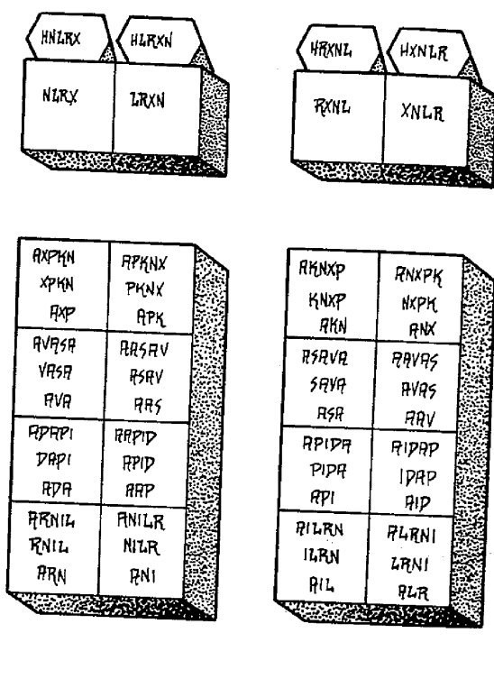
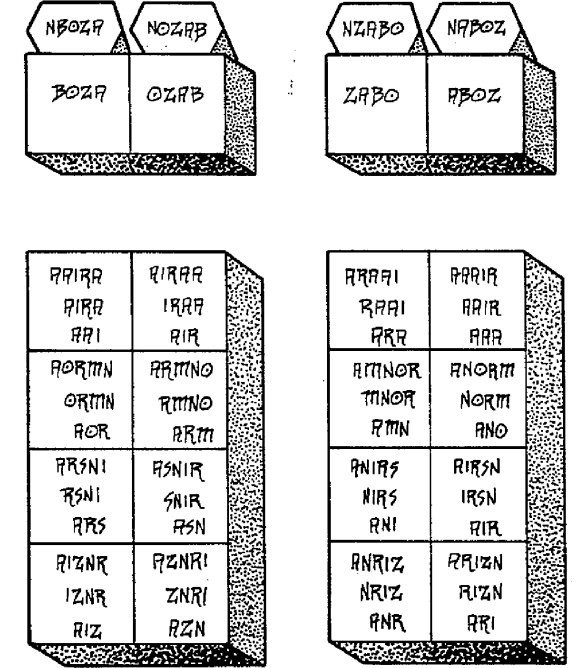
LAS LLAMADAS ENOCHIANAS
Llamada 1: (Tabla de la Unión), La primera llamada se usa para la invocación de los ángeles de la Tablaa de la Unión. De acuerdo a la Golden Dawn, nunca se usa para acuerdos con los ángeles de las Tablas Elementales.
Llamada 2: (Tabla de la Unión), La segunda llamada se usa (seguida de la llamada 1) para invocar el ángel EHNB de la Tabla de la Unión. Igualmente de acuerdo a la Golden Dawn nunca se usa para las Tablas Elementales.
Llamada 3: (Aire), La tercera llamada puede usarse de tres modos:
1. A continuación de lasllamadas1 y 2, se usa para invocar los angeles de EXARP de la Tabla de la Unión. 2. Para las primeras operaciones relacionadas con la Tabla de Aire. 3. Para invocar los Ancianos de la Tabla de Aire o los ángeles del subcuadrante de Aire de la Tabla de Aire.
Llamada 4 : (Agua),
1. Después de las llamas 1 y 2 para invocar ángeles de HCOMA de la Tabla de la Unión. 2. Para la primera operación relacionada a la Tabla Elemental de Agua, 3. Para invocar los Ancianos de la Tabla Elemental de Agua o los ángeles del subcuandrante de Agua de la misma Tabla.
Llamada 5: (Tierra),
1. Depués de las Llamadas 1 y 2 para invocar los Ángeles de NANTA de la Tabla de la Unión. 2. Para las operaciones relacionadas con la Tabla Elemental de Tierra. 3. Para invocar los Ancianos de la Tabla Elemental de Tierra o los ángeles del subcuadrande de Tierra de dicha Tabla.
Llamada 6: (Fuego),
1. Después de las Llamadas 1 y 2 para invocar los ángeles BITOM de la Tabla de la Unión. 2. Para las operaciones relacionadas de la Tabla Elemental de Fuego. 3. Usada para la invocación de los Ancianos de la Tabla de Fuego o los ángeles elementales de Fuego del sucuadrante de Fuego.
Llamada 7: (Aire), se usa para llamar o visitar los ángeles de Agua del subcuadrante de la Tabla Elemental de Aire.
Llamada 8: (Aire), se usa para llamar o visitar los ángeles de Tierra del subcuadrante de la Tablla Elemental de Aire.
Llamada 9: (Aire), se usa para llamar o visitar los ángeles de Fuego del subcuadrante Elemental de la Tabla de Aire.
Llamada 10: (Agua), se usa para llamar o visitar s los ángeles de Aire del subcuadrante de Agua.
Llamada 11: (Agua), Aire de Agua.
Llamada 12: (Agua), Fuego de Agua.
Llamada 13: (Tierra), Aire de Tierra.
Llamada 14: (Tierra), Agua de Tierra.
Llamada 15: (Tierra), Fuego de Tierra.
Llamada 16: (Fuego), Aire de Fuego.
Llamada 17: (Fuego), Agua de Fuego.
Llamada 18:(Fuego), Tierra de Fuego.
LLAMADA 1
La Primera Clave Enoquiana
Ol sonf vorsg, goho Iad balt, lansh calz vonpho: sobra z-ol ror i ta Nazpad Graa ta Malprg Ds hol-q Qaa nothoa zimz Od commah ta nobloh zien: Soba thil gnonp prge aldi Od vrbs oboleh grsam Casarm ohorela caba pir Od zonrensg cab erm Iadnah Pilah farzm zurza adna Ds gono Iadpil Ds hom Od toh Soba Ipam lu Ipamis Ds loholo vep zomd Poamal Od bogpa aai ta piap
piamo-i od vaoan ZACARe c-a od ZAMRAM Odo cicle Qaa Zorge, Lap zirdo Noco MAD Hoath Iaida.
Traducción fonética
Ol sonuf vaoresaji, gohu IAD Balata, elanusaha caelazod: sobrazod-ol Roray i ta nazodapesad, Giraa ta maelpereji, das hoel-qo qaa notahoa zodimezod, od comemahe ta nobeloha zodien; soba tahil ginonupe pereje aladi, das vaurebes obolehe giresam. Causarem ohorela caba Pire: das zodonurenusagi cab: erem Iadanahe. Pilahe farezodem zodenurezoda adana gono Iadapiel das home-tohe: soba ipame lu ipamis: das sobolo vepe zodomeda poamal, od bogira aai ta piape Piamoel od Vaoan! Zodacare, eca, od zodameranu! odo cicale Qaa; zodoreje, lape zodiredo Noco Mada, Hoathahe I A I D A!
Traducción moderno
Yo reinase sobre ti, dice el Dios de Justicia, en el poder exaltado sobre los firmamentos de la ira: en cuyas manos el Sol es como una espada y la Luna como un medio de empuje fuego: que mide tus prendas en medio de mis vestiduras, y usted atado juntos como las palmas de mis manos: cuyos asientos I adornado con el fuego de la reunión, y embellecido sus prendas con admiración. ¿A quién he hecho una ley para regular los santos y os libré una varilla con el arca del conocimiento. Por otra parte usted levantada hasta sus voces y juraste obediencia y fe para él que vive y triunfa, cuyo principio no es, ni fin no puede ser, que brilla como una llama en medio de su palacio, y reina entre vosotros como el equilibrio de la justicia y la verdad. Mueva, por lo tanto, y mostrar a vosotros mismos: abrir los misterios de la creación: Sea amigable a mí, porque yo soy el siervo de la misma, tu Dios, el verdadero adorador del Altísimo.
LLAMADA 2
La segunda clave Enochiano
Adgt v-pa-ah zongom fa-a-ip Sald vi-i-v L sobam I-al-prg I-za-zaz pi-adph cas-arma abramg ta talho paracleda Q-ta lors-l-q turbs ooge Baltch Giui chis lusd orri Od mi- calp chis bia ozongon Lap noan trof cors tage o-q manin Ia-i-don Torzu gohel ZACAR ca c-no-qod, ZAMRAN micalzo Od ozazm vrelp Lap zir Ioiad.
Traducción fonética
Adagita vau-pa-ahe zodonugonu fa-a-ipe salada! Vi-i-vau el! Sobame ial-pereji i- zoda-zodazod pi-adapehe casarema aberameji ta ta-labo paracaleda qo-ta lores-el-qo turebesa ooge balatohe! Giui cahisa lusada oreri od micalapape cahisa bia ozodonugonu! lape noanu tarofe coresa tage o-quo maninu IA-I-DON. Torezodu! gohe-el, zodacare eca ca-no-quoda! zodameranu micalazodo od ozodazodame vaurelar; lape zodir IOIAD!Adagita vau-pa-ahe zodonugonu fa-a-ipe salada! Vi-i-vau el! Sobame ial-pereji i-zoda-zodazod pi-adapehe casarema aberameji ta ta-labo paracaleda qo-ta lores-el-qo turebesa ooge balatohe! Giui cahisa lusada oreri od micalapape cahisa bia ozodonugonu! lape noanu tarofe coresa tage o-quo maninu IA- I-DON. Torezodu! gohe-el, zodacare eca ca-no-quoda! zodameranu micalazodo od ozodazodame vaurelar; lape zodir IOIAD!
Traducción moderno
¿Pueden las alas de los vientos entender sus voces de maravilla, oh la segunda de la primera, a quien las llamas ardientes han enmarcado dentro de la profundidad de mi paladar; quienes he preparado como Copas para una boda, o como las flores en su belleza por la Cámara de la justicia. Más fuerte son sus pies que la piedra estéril, y más fuertes son sus voces que los vientos del colector. Para usted se convierte en un edificio, como no lo es, pero en la mente del Todopoderoso. Levántate, dice la Primera: Mover, por tanto, a sus siervos: Mostraos en el poder: Y hazme un fuerte furioso porque yo soy de aquel que vive para siempre.
LLAMADA 3
La Clave Enoquiana Tercera
Micma goho Piad zir com-selh a zien biab Os Lon-doh Norz Chis othil Gigipah vnd-l chis ta-pu-im Q mos-pleh teloch Qui-i-n toltorg chis i chis ge m ozien dst brgda od torzul i li F ol balzarg, od aala Thiln Os ne ta ab dluga vomsarg lonsa cap-mi-ali vors cla homil cocasb fafen izizop od mi i noag de gnetaab vaun na-na-e-el panpir Malpirgi caosg Pild noan vnalah balt od vooan do o-i-ap MAD Goholor gohus amiran Micma Iehusoz ca-ca-com od do-o-a-in noar mi-ca-olz a-ai-om Casarmg gohia ZACAR vniglag od Im-ua-mar pugo plapli ananael Q a an.
Traducción fonética
Micama! goho Pe-IAD! zodir com-selahe azodien biabe os-lon-dohe. Norezoda cahisa otahila Gigipahe; vaunudel-cahisa ta-pu-ime qo-mos-pelehe telocahe; qui-i-inu toltoregi cahisa i cahisaji em ozodien; dasata beregida od toreodul! Ili e-Ol balazodareji, od aala tahilanu-os netaabe: daluga vaomesareji elonusa cape-mi-ali vaoresa CALA homila; cocasabe fafenu izodizodope, od miinoagi de ginetaabe: vaunu na-na-e-el: panupire malapireji caosaji. Pilada noanu vaunalahe balata od- vaoan. Do-o-i-ape mada: goholore, gohus, amiranu! Micama! Yehusozod ca-ca-com,
od do-o-a-inu noari micaolazoda a-ai-om. Casarameji gohia: Zodacare! Vaunigilaji! od im-ua-mar pugo pelapeli Ananael Qo-a-an.
Traducción moderno
He aquí, dice vuestro Dios, soy un círculo en cuyas manos se destacan 12 Reinos: Seis son los asientos de la respiración de estar: el resto son como hoces afiladas o los cuernos de la muerte, en la que las criaturas de la tierra son para no lo son, excepto el mío propia mano a los que durmieron y se levantará. En la primera te hice Stewards y te puse en 12 sedes de gobierno. dando a cada uno de encender sucesivamente sobre 456, las verdaderas edades del tiempo: a la intención de que a partir de los vasos altos y las esquinas de sus gobiernos es posible que el trabajo de mi poder, corría por el fuego de la vida y aumentar continuamente en la tierra: Así te has hecho las faldas de la Justicia y la Verdad. En el nombre de la misma, tu Dios, alza, digo, ustedes mismos. He aquí sus misericordias florecen y se convierten en Nombre poderoso entre nosotros. En él se dice: Mover, Descenso, y aplicamos a nosotros mismos, como a los participantes de la sabiduría secreta de su creación.
LLAMADA 4
La cuarta llave OTHIL Lusdi Babage De Dorpha Gohol. G-Chis-Gee Avavago Cormp P D Ds Sonf Vi-vi-IV? Casarmi Oali MAPM Soham Ag Cormpo Crp L. Casarmg Cro-Od-Zi Chis De Vgeg, Ds T Capmiali Chis Chis Capimaon De Lonshin Ta LO CLA, Torzu Nor-
Quasahi Od F Caosga Bagle Zire Mad Ds me Od Apila. De TI – A-Ip Qaal Zac De Zamran Obelisong Resto-El-Aaf Nor-MOLAP.
Traducción: pongo los pies en el Sur y miré a mi alrededor, diciendo: No son los truenos del creciente número 33, que reinan en el segundo ángulo? Bajo los pusieron 9639 que nunca fueron contados, a menos que uno, en el que el segundo principio de las cosas es fuerte y en crecimiento, que, a su vez, son también los temas de la época, y sus poderes son como el primer 456. Levántate ! Oh Hijos de placer, y visitai la tierra: porque yo soy Jehová tu Dios, que vive y es eterno! Y en el nombre del Creador, movible usted y revelar a usted como repartidores agradables, que le puede alabar entre los hijos de los hombres.
LLAMADA 5
La quinta clave Sapah Zimii debidamente od Noas ta Quanis Adroch, Dorphal Caosg desde faonts Piripsol Ta blior. Casarm am-ipzi nazarth AF desde dlugar zizop zlida Caosgi toltorgi: chis z Od y siasch L ta vi u od ds División thild Hubar PEOAL, chis Sobo-Cormfa Ta LA, VLS desde Q Cocasb. Yuck INI, od darbs qaas. F etharzi desde bliora. Cicles Ia- Ial Ednas. Bagle? Ge-lad I L. Traducción: Los poderosos hijos entran en el tercer ángulo y se están convirtiendo como las aceitunas en el Monte de los Olivos, mirando con alegría la Tierra y que habita en el brillo del cielo como edredones continuas. Para ellos fijado los pilares de la alegría, de 19, y dio vasos de regar la tierra con sus criaturas; y están adornadas
con lámparas perpetuas, 69636, cuyo número es igual que el principio, el propósito y el contenido de las veces. Así que, venga y obedecer a su creación: visítenos en paz y comodidad: Haznos tus misterios de receptores. Cómo? Nuestro Señor y Maestro es el Uno.
LLAMADA 6
La Sexta Clave Chis Gah S DIU pilzin micalzo: Sobam El hArg mir Babalon desde obloc Samvelg: Dlugar malprg Aire Caosgi desde ACAM Canal Sobol zar fbliard Caosgi, Chisa Netaab od od od Miam ta VIV D. Darsar Solpeth bi-en. Brita desde g-micalza zacam Sobol ath trian-lu la h desde ecrin Mad Qaaon.
Traducción: Los espíritus del cuarto ángulo son nueve poderosa en la extensión de agua. Que el primero formado como un tormento para los impíos y una guirnalda de los justos, dándoles flechas incendiarias para liderar la Tierra, 7699 y trabajadores incansables, cuya visita ruta con comodidad la tierra y están en el gobierno y la continuidad con la Segunda y la Tercero. Para que oigan mi voz! He hablado con todos ustedes y moverse en el poder y presencia, para que vuestras cosas sean un canto de honor y alabanza de tu Dios en su creación.
LLAMADA 7
La clave del Séptimo Raas i salman Paradiz oecrimi AAO Ialpirgah, Quiin Enay Butmon od I Noas NI Paradial casarmg vgear chirlan desde Zonac Luciftian corsag ta vaul tolhami Zirn. Sobol londoh desde miam chis ta I od ES vmadea desde pibliar, OTHIL Rit maullido od. Rit C noqol, Zac zamran oecrimi Qaada! desde 0 aaiom micaolz! Bagle papnor i dlugam Lonshi desde vmplif vgegi Bigl muchacho!
Traducción: El este es una casa de las Vírgenes cantando alabanzas entre las llamas de la primera gloria en el Señor abrió la boca; y se convirtió en las 28 salas de estar, donde la fuerza del hombre se regocija; y están vestidos con adornos brillantes que hacer maravillas en todas las criaturas; de reinos y continuidad son como la tercera y cuarta, fuertes torres y lugares de comodidad, los asientos de la misericordia y la continuidad. Oh, Siervos de la Caridad, móviles y saldrán, cantar alabanzas al Creador y el asiento de gran alcance entre nosotros, pis a este recuerdo se le da poder y su fuerza crecido y poderoso en su edredón.
LLAMADA 8
La Octava Llave Bazm ELO i ta Piripson OLN Nazavabh OX casarmg vran chis vgeg ds abramg baltoha goho muchacho, Soba mian trian ta lolcis Abaivovin od ni Aziagiar. Chis Irgil los ds paaox caosgo BUSD, ds chis, desde ipuran Teloch cacrg hi salman loncho desde voviva carbaf? Niiso! Bagle avavago gohon! Niiso! Bagle momao SiAlON desde mabza Lad 01 el Momar Poilp. SMF! Zamran bliors caosgo ciaofi od od Corsi ta abramig.
Traducción: Mediodía, la primera es que el tercer cielo, hecho de pilares Jacinto, 26, en la que los ancianos se hacen fuertes; Me preparé en mi propia justicia, dice el Señor, que tu largo plazo es como un escudo contra el Dragón curvo, y la manera de cosechar un viudo. ¿Cuántos son los que se quedan en la gloria de la tierra, lo que son y no ven la muerte hasta que este otoño la casa y el dragón hundir! Go! Debido truenos han dicho; ide, porque las coronas del templo y su túnica, la cual es, y fue, y será coronado, están divididas. ¡Ven! Mostraos al terror de la Tierra y para nuestra comodidad y aquellos que están preparados.
LLAMADA 9
La Novena Llave Micaolz bransg prgel napea lalpor, ds brin P Efafage Vonpho olani desde obza, Sobol vpeah chis tatan desde Tranan Balie, Orange lusda soboin desde chis holq c Noquodi CIAL. Unal alson mamá Caosgo ta les ollor gnay limlal. Chis Amma sobca madrid chis chis z ooanoan aviny drilpi caosgin, desde butmoni Parm zumvi cnila. Dazis childao ethamza, cieno desde Ozol chis pidiai collal. VCIM Vicinina sobam. Bagle? Lad Baltoh par chirlan. Niiso! De ip efafafe Bagle los cors cocasb i ta vnig blior.
Traducción: Un poderoso ejército con fuego llameante armas de doble filo (que contienen botellas, 8, Ira, y dos veces y media: cuyas alas son de ajenjo y sal ósea), puso el pie en el Oeste, y se miden con sus ministros de 9996. Estos recogen Tierra musgo, como el hombre del río hace que su tesoro. Malditos sean los que están inqüidades! En tus ojos son molinos de piedra de mayor tamaño que la Tierra, y sus bocas se ejecutan mares de sangre. Sus cabezas están cubiertas con diamantes, y en sus manos están los guantes de mármol. Dichoso aquel que no desaprueba. Cómo? El Dios de la Justicia les da la bienvenida! Salí y no sus botellas! Para el tiempo es uno que requiere comodidad.
LLAMADA 10
La clave Décima Coraxo chis cormp desde BLANS lucal aziazor PAEB chis ilonon Sobol OP VIRQ eophan desde raclir, Maasi caosgi Bagle, di ialpon Dösig desde basgim; De oxex dazis siatris desde saibrox, cinxir faboan. Chis Unal const ds DAOX cocasg ol oanio yorb voh m gizyax, desde matemáticas cocasg plosi Molvi ds página ip, larag om dron matorb cocasb Emna. L Patralx yolci MatB, nomig monons olora gnay angelard. Ohio! Ohio! Ohio! Ohio! Ohio! Ohio! Noib Ohio! Casgon, Bagle madrid i ck, desde Chiso drilpa. Niiso! Crip ip Nidali.
Traducción: La ira del juicio de Los Thunder están numeradas y el descanso en el norte, como un roble cuyas ramas son nidos, 22, de lamentos y lágrimas, caídos en la tierra, que arden día y noche, y los jefes de vómito de escorpiones y azufre ardiente mezclado con veneno. Estos son los truenos que 5.678 veces en la parte 24 de un rugido momento con cientos de terremotos y mil veces tantas ondas que no descansan, y no saben cualquier momento de calma. Aquí una piedra produce 1000, al igual que el corazón del hombre produce sus pensamientos. Maldita sea, maldita sea, maldita sea, maldita sea, maldita sea, maldita sea! Sí, maldita la Tierra debido a la iniquidad es, fue y será grande. Go! Pero no el ruido!
LLAMADA 11
La clave Undécimo Holdo Oxyiayal, desde zirom 0 coraxo dis zildar Raasy, Vabzir camliax od, bahal od. Niiso! Salman Teloch, hoiq casarman, ti desde ta Z soba me cormf GA. Niiso! Noncp Bagle Fuzzy. Zac ece desde zamran. Odo cicle QAA! Zorge zirdo regazo Mad NOCO, Hoath Laida.
Traducción: El Trono Poderoso gritaba y había cinco truenos que volaban hacia el este; y el Águila habló y gritó en voz alta: ¡Salid! Y ellos se reunieron y se convirtió en la casa de la muerte, que se mide, y así es como están, cuyo número es el 31. Me fui porque me he preparado para ustedes. Vosotros mismos móviles, por lo tanto, y mostrar a sí mismos! Abrid los misterios de vuestra creación. Bienvenidos a mí, porque yo soy el siervo de la misma, tu Dios, el verdadero adorador de la más alta.
LLAMADA 12
Ds Nonci Babage sonf, chis od B Hubardo tibibp, atraah allar od f! Drix Fafen MIAN, aire Enay ovof, Sobol ooain vonph. Zac gohus desde zamran. Odo cicle QAA. Zorge zirdo regazo NOCO Mad, Hoath IAIDA.
Traducción: ¡Oh vosotros que reinas en el Sur, y que son 28, el dolor de las linternas: afivelai sus carteras a visitarnos! Traiga su legión de 3663, que el Señor sea exaltado,
cuyo nombre entre vosotros es la Ira. Movable usted, me dice, y mostrar a sí mismos; abrir los misterios de su creación; sede amistosos conmigo, porque yo soy el siervo de la misma, tu Dios, el verdadero adorador de la más alta.
LLAMADA 13
La clave Decimotercera Napeai Babage ds brin VX ooaona iRING vonph doalim: EOLIS ollog orsba, chis ds AFFA. Micma ISRO Mad od Lonshi Tox, ds i VMD aai Grosb. Zac od zamran. Odo cicle QAA. Zorge zirdo regazo Mad NOCO, Hoath Laida.
Traducción: ¡Oh espadas del Sur, que tienen 41 ojos para provocar la ira del pecado, por lo que los hombres borrachos que están vacías: sellar la promesa de Dios en sus manos lo que se llama entre todos vosotros una picadura amarga. Movable mostrar a sí mismos! Abrid los misterios de vuestra creación! Bienvenidos a mí, porque yo soy el siervo de la misma, tu Dios, el verdadero adorador de la más alta.
LLAMADA 14
La clave Decimocuarta Noromi baghie, PASHS 0 muchacho, ds trint mirc OL thil, dods tol Hami caosgi homin, ds brin Oroch QUAR. Micma Bialo muchacho! ISRO tox ds I VMD aai Baltim. Zac od zamran. Odo cicle QAA. Zorge zirdo regazo Mad NOCO, Hoath Laida.
Traducción: ¡Oh Hijos de la ira, oh Filhad de los Justos, sentado en los asientos 24 y vexam todas las criaturas de la tierra que tienen la edad; que tiene en 1636: He aquí la voz de Dios y su promesa se llama Furia entre usted (o Extreme Justice). Movable mostrar a sí mismos! Abrid los misterios de vuestra creación! Bienvenidos a mí, porque yo soy el siervo de la misma, tu Dios, el verdadero adorador de la más alta.
LLAMADA 15
La clave Decimoquinta Ils tabaan lalpirt L, casarman vpaachi chis Darg ds oado caosgi orscor: Ds oman baeouib desde emetgis Iaiadix! Zac od zamran. Odo cicle QAA. Zorge zirdo regazo Mad NOCO, Hoath Laida.
Traducción: ¡Oh vosotros, Gobernador de la primera llama, bajo cuyas alas son 6.739, que se entrelazan la tierra con la esterilidad, que conocen el gran nombre de la Justicia y el sello de honor. Movable mostrar a sí mismos! Abrid los misterios de vuestra creación! Bienvenidos a mí, porque yo soy el siervo de la misma, tu Dios, el verdadero adorador de la más alta.
LLAMADA 16
La clave Decimosexta Ils viv Iaiprt, Salman Bait, ds la BUSD croodzi, bliorax desde Balit, ds insi caosgi iusdan EMOD, ds om od tiiob. Drilpa nos geh Zilodarp Mad. Zac od zamran. Odo cicle QAA. Zorge zirdo regazo Mad NOCO, Hoath Laida.
Traducción: ¡Oh vosotros segundo Llama, la Casa de Justicia, que tiene su inicio en la gloria y confortareis justo que camina sobre la tierra con 8.763 metros; que entienden y criaturas separables: Grandes son usted en Dios que va más allá y el logro. Movable mostrar a sí mismos! Abrid los misterios de vuestra creación! Bienvenidos a mí, porque yo soy el siervo de la misma, tu Dios, el verdadero adorador de la más alta.
LLAMADA 17
La clave Decimoséptimo Ils D lalpirt, dodseh chis vpaah soba Nanba zixiay, od ds brint taxs Hubardo tastax ILSI. Soba muchacho i vonpho vonph. Aldon dax toatar desde il. Zac od zamran. Odo cicle QAA. Zorge zirdo regazo Mad NOCO, Hoath Laida.
Traducción: Tercera usted Oh Llama, cuyas alas son espinas para provocar irritación, y que ha sido la Vida 7336 Fixtures contra usted; cuyo dios es gran ira: preparado su fuerza y movible mostrar ustedes mismos! Abrid los misterios de vuestra creación! Bienvenidos a mí, porque yo soy el siervo de la misma, tu Dios, el verdadero adorador de la más alta.
LLAMADA 18
Ils micaolz Olprt desde lalprt, bliors ds Odo Busdir El Iad ovoars caosgo, casarmg ERAN la lad brints cafafam, ds I VMD AGLO Adohi Moz od Maoffas. Bolp como bliort pambt. Zac od zamran. Odo cicle QAA. Zorge zirdo regazo Mad NOCO, Hoath Laida.
(español) O Tú, Luz poderosa y llama ardiente de consuelo, que en el centro de la Tierra develas la gloria de Satán; en quien permanecen los grandes secretos de la verdad; que en vuestro reino es conocido como "Fuerza a través de la Alegría," y que no ha de ser contenido. Séd para mí como una ventana de consuelo. Movéos pues, y apareced! Abrid los misterios de vuestra creación! Sed amistosos conmigo, porque soy el mismo!, el adorador verdadero del excelso e inefable Rey del Infierno.
LOS AETHYRS Y LOS GRADOS MÁGICOS
Muchas órdenes mágicas han enseñado que cada Sephiroth en el Árbol de la Vida corresponde a un grado mágico. Los diez Sephiroth suelen estructurar los grados de una Orden. Bajo las condiciones de autoiniciación, si pudieras elevar tu conciencia lo suficiente como para entrar en un Sephiroth (es decir, un subplano cósmico entre el más espiritual, Kether, y el más material, Malkuth), entonces alcanzarias efectivamente ese grado mágico. Lo mismo ocurre en la Magia Enochiana con los Aethyrs. (Para el autor, o según algúnas órdenes).ç
Por ejemplo, si elevas tu conciencia hasta el 21º Aethyr, ASP, y te encuentras con tu propio Ego Reencarnante y te ves a ti mismo en vidas pasadas, entonces habrás alcanzado efectivamente el grado de Adeptus Menor y puede ser considerado un Adepto Menor en Magia Enochiana. Si usted es capaz de entrar en el VTA y ver la Ciudad de las Pirámides sin quedar atrapado por ella, entonces habrás alcanzado efectivamente el grado de un Adepto Exento. Recuerde aquí que entrar en cualquier Aethyr supone que has dominado todos los Aethyrs por debajo de él y que has asimilado todas las lecciones y experiencias en ellos. Recuerda también que los Aethyrs no son exactamente equivalentes a los de los Sephiroth correspondientes, pero existen aproximadamente en el mismo subplano cósmico.
Muchas organizaciones pasan de grado a los candidatos simplemente porque han esperado el período de tiempo requerido y han parecido interesados en la organización. En algunos grupos, la amistad por sí sola es suficiente para pasar a un grado superior. La obtención formal de un grado en una organización mágica no garantiza que uno haya alcanzado realmente los conocimientos y habilidades de ese grado. Crowley, por ejemplo, pronto se dio cuenta de que muchos líderes de la Aurora Dorada no estaban realmente calificados. Ninguno, incluyendo a los líderes más altos, había cruzado realmente el Abismo. No fue hasta que el propio Crowley había
cruzado el Abismo que fue capaz de percibir este hecho. Por esta razón, los grados deben seguir siendo un asunto totalmente personal. Deja que tu propia conciencia (pero no tu ego) te guíe.
Capítulo 8 de 15
Los Aethyrs

EL SEXO EN LA MAGIA ENOQUIANA
El primer Aethyr, LIL, y todos los reinos inconcebibles por encima del primer Aethyr no tienen género, es decir que la masculinidad y la feminidad no existen como cualidades separadas en esas regiones sublimes. Sin embargo, por debajo de LIL cada subplano hacia abajo en el plano físico está cargado de fuerzas que son masculinas o femeninas o combinaciones de ambas. La masculinidad y la feminidad son dos lados de una dualidad. Su Gran Trabajo es unir todas las dualidades.
La unión del microcosmos y el macrocosmos, el subjetivo con su mundo objetivo, implica la unión de todas las dualidades, incluidas las polaridades sexuales. Es tu tarea como mago buscar dentro de ti todas las cualidades caracterizadas como masculinas o femeninas. La psicología moderna sugiere que todo hombre tiene un componente psíquico femenino y que cada mujer tiene un componente psíquico masculino (esta idea se expresa en las descripciones junguianas del ánima y el animus). En otras palabras, una persona exteriormente masculina es interiormente femenina y viceversa. Esta idea se hace eco del eorema magico de que cada individuo es esencialmente suficiente para sí mismo.
Una parte de la Gran Obra de todo mago es cultivar las virtudes y cualidades de las que es deficiente. Para ello un hombre puede invocar a una de las deidades femeninas enochianas o a una de las diosas egipcias que presiden algunos de los cuadrantes menores de la Atalaya, como Isis o Neftis. (nota: en un cápitulo anterior que no he traducido aún el autor muestra una correspondencia entre las Atalayas y los dioses Egipcios). Puede entonces identificarse con ella y adoptar sus cualidades como propias. Del mismo modo, una mujer puede llamar a una de las deidades masculinas e identificarse con él y adoptar sus cualidades como propias. El conocimiento de las corrientes sexuales que fluyen en las esferas sutiles que rodean nuestra Tierra será esencial si se quiere avanzar en la Magia Enochiana. La ignorancia de estas corrientes puede llevarle a una situación desastrosa. La historia dónde John Dee, Edward Kelly, se enfrenta directamente a las fuerzas sexuales en DEO, el séptimo Aethyr, se cuenta en Magia Enochiana. Kelly, totalmente desprevenido para tal encuentro, dejó a Dee y abandonó la Magia desde ese momento.
Crowley en cambio, estaba totalmente preparado y pudo experimentar directamente todos los Aethyrs hasta el LIL. El cuerpo físico es un organismo sexual. El sexo no puede ser evitado, ni debe serlo. El mago enochiano acepta la sexualidad como una parte importante de la vida. La Gran Obra es la unificación de los polos dualistas que constituyen la base de nuestro universo. Esta unificación incluye la dualidad de lo masculino y lo femenino. Tiene lugar en la mente, no en el cuerpo (es decir, en el cuerpo mental y no en el cuerpo físico). Todo acto sexual físico debe ser una expresión consciente creativa de la Gran Obra. Como tal, todo acto sexual físico debe ser un acto mágico.
EL USO DEL SEXO
El sexo es, directa o indirectamente, el arma más poderosa en el arsenal del mago; y precisamente porque no existe una guía moral, es indescriptiblemente peligroso.
Aleister Crowley, Magick Without Tears
El uso de técnicas sexuales para ayudar en las invocaciones, evocaciones o viajar en la Visión del Espíritu es una opción que usted tendrá que decidir por sí mismo. Del mismo modo, la decisión de practicar la Magia solo o con uno o más compañeros es es una decisión personal que debes tomar por ti mismo. Las técnicas sexuales para las operaciones mágicas no son esenciales ni deben preferirse siempre a otros métodos. El sexo es un arma mágica que es inherente a su arsenal mágico. Si decides usarlo o ignorarlo, que así sea. Cualquier elección tiene sus consecuencias kármicas, así como sus peligros y beneficios. Sin embargo, el sexo en sí mismo, en forma de corrientes y fuerzas sexuales, no puede ser ignorado. Si usted se dedica a la práctica de la Magia Enochiana inevitablemente se enfrentará a tales fuerzas tarde o temprano cualquiera que sea la técnica que utilices. Esto se debe a que las corrientes y atmósferas sexuales ya existen en los Aethyrs y en menor medida en ciertos uadrantes de las Atalayas. Cuando entres en estos lugares, te enfrentarás a tu propia naturaleza sexual y desencadenarás energías sexuales en tu interior ya sea que lo desees conscientemente
o no. La fuerza sexual es una de las más fuertes dentro de tu universo mágico. En sí misma, no es ni buena ni mala, pero como la mayoría de las cosas depende de ti utilizarla sabiamente y no dejar que te controle (la obsesión es una posibilidad muy real para el mago incauto).
Según Crowley, "el Falo es la base fisiológica del Sobrealma" (De la naturaleza de los dioses).
El padre supremo habría surgido de las profundidades y habría pronunciado la Palabra que condujo a la creación del mundo. No fue un acto deliberado y consciente, sino que fue una expesión espontánea de las fuerzas creativas internas inherentes. Lo mismo ocurre con el falo, al menos hasta cierto punto. El mundo entero surgió del impulso creativo del Padre divino en contacto con la naturaleza material de la Madre divina. El Padre es Chockmah, Sabiduría y Conciencia pura. La Madre es Binah, Entendimiento, el Mar, la Matriz, el Campo o el Espacio, en el que se encuentra la creación. El Ser es masculino. El No Ser es femenino. La subjetividad es masculina. La objetividad es femenina. Todo ser es un punto geométrico de conciencia (el Hadit masculino) que se asoma a un mundo de cosas y acontecimientos (la Nuit femenina). La fuerza sexual se encuentra, pues, en las de nuestra naturaleza esencial y es la misma fuerza creativa que originalmentedividió la No-dualidad en el universo dualista de Fuego, Aire, Agua y Tierra.
LOS TRES GRADOS DE LA MAGIA SEXUAL
La Magia Sexual tiene muchas variantes y expesiones. En conjunto con la Magia Enoquiana hay tres grados principales Estos tres grados son idénticos a los tres enseñados en el Tantra Tibetano como sigue:
1. KARMAMUDRA. que pueden significar posiciones simbólicas (es posible que ya estés familiarizado con los mudras como posiciones de las manos usadas en las meditaciones). Esta es la primera y más baja etapa. Se trata de Magia utilizando un interlocutor externo. Cualquier operación mágica realizada por dos o más personas que invoque o utilice fuerzas o corrientes sexuales es del tipo Karmamudra. Si está interesado en este grado, debería estudiar Sex Magick de Louis T. Culling y The Magick of Sex de Melita Denning y Osborne Phillips. Tenga en cuenta, sin embargo, que el nombre 'karma'-mudra no carece de significado aquí.
2. JNANAMUDRA. Esta es la segunda y mediana etapa. Es la magia que utiliza un socio mental o interno. Cualquier operación mágica que es conducida por un solo mago que invoque o utilice fuerzas o corrientes sexuales es del tipo Jnanamudra. En esta etapa debes crear tu propia "pareja" con tu imaginación y voluntad mágicas. Esto es especialmente fácil de hacer en Magia Enochiana porque los Aethyrs, y algunas de los cuadrados de la Atalaya, ya contienen compañeros dispuestos. En POP, por ejemplo, es la Sacerdotisa de la Estrella de Plata, en ZIP está la Hija de Babalon, y en ARN está la propia Babalon. Igualmente, te esperan "parejas" masculinas, si eres mujer, en otros Aethyrs (por ejemplo, Pan está en LIN), Júpiter está en KHR, Horus en ZEN y Hermes en VTA ) . Por lo tanto, son esenciales para ti los principios y las organizaciones del tipo Jnanamudra para avanzar en la Magia Enochiana.
3. MAHAMUDRA. Esta es la tercera y más alta etapa. Literalmente el nombre significa "Gran Símbolo". En este grado ya no se necesita un "compañero". Cuando alcances esta etapa te darás cuenta de que tanto la corriente femenina como la masculina son de igual intensidad dentro de ti. Esta etapa se llama a veces "unidad experimentada". La etapa del Mahamudra se realiza plenamente en el 4º Aethyr, PAZ, pero puede ser practicada con éxito después de cruzar el Abismo en el 10º Aethyr, ZAX. Para más detalles sobre el Mahamudra y un excelente yoga para practicar, lea Tibetan Yoga and Secret Doctrinas Secretas por W.Y. Evans-Wentz.
NOTA: A pesar de lo que puedas haber leído en otros lugares, la etapa de Karmamudra es la más baja y peligrosa para la práctica. Si tienes alguna reserva, sáltatela y pasa al Jnanamudra.
El único beneficio práctico del Karmamudra, en lo que se refiere a la Magia Enochiana, es que la práctica exitosa a menudo le permitirá que el avance hacia el Jnanamudra sea más fácil que intentar directamente el Jnanamudra. Sin embargo, su objetivo es el Mahamudra. Los dos primeros grados no son más que pasos hacia esta meta.
Capítulo 9 de 15
Sexo y Magia


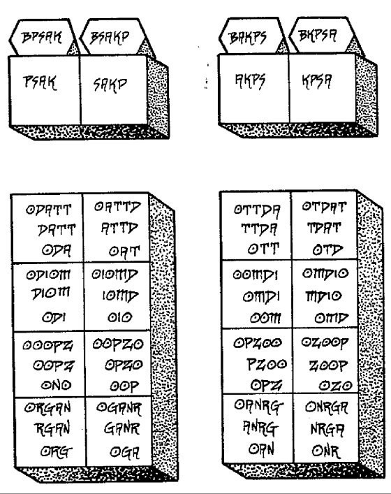
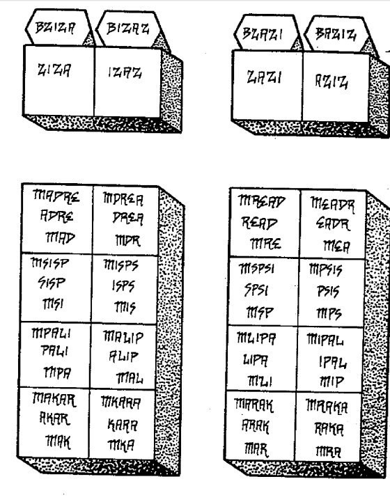
UNA MEDITACIÓN PREPARATORIA
Se recomienda hacer un juramento mágico de practicar la siguiente meditación de 15 a 60 minutos al día durante al menos seis meses. En cualquier momento conveniente del día o de la noche en que que se encuentre, siéntese tranquilamente y lleve a cabo la meditación descrita a continuación como la dió Crowley en el capítulo del Liber HIIH Chapter SSS, del que se ha extraído. Es muy importante no perder ni un solo día, independientemente de su horario o de su estado de salud. También es importante registrar los resultados de cada día en su Diario Mágico. Cuando termine su período de juramento, revise su diario y descubrirá que tuvo buenos resultados en algunos días y resultados pobres (o ningún resultado) en otros. Un gráfico de los resultados en función del tiempo mostrará su ciclo personal de meditación. Los resultados en sí pueden variar desde sudoración física y espasmos musculares hasta un aumento apreciable de la temperatura corporal (es una buena idea medir y registrar la temperatura antes y después de cada meditación para comprobar científicamente su progreso. Un aumento de 3 a 5 grados no es inusual) .
También puede oír sonidos o voces, y tener visiones de un tipo u otro. Pase lo que pase, anote exactamente lo que ha sucedido después de cada ejercicio. No haga más de una operación al día. El período de tiempo para cada operación debe variar en función del tiempo disponible y de los resultados. El objetivo principal de esta técnica de meditación es preparar sus cuerpos (tanto el físico como los sutiles) para recibir las fuerzas y energías de los Aethyrs superiores, especialmente las corrientes sexuales que fluyen a través de estos Si podéis poneros la túnica y si es posible relizar la operación en vuestro templo mágico.
PASO 1. Siéntate cómodamente con la columna vertebral erguida. Mantén los pies juntos. Mantenga las manos juntas.
PASO 2. Concéntrese en su columna vertebral. Comience por la base de la columna y "siente" cada vértebra hacia arriba, una por una.
PASO 3. Imagina que tu cerebro es un recipiente, la matriz de Isis, un receptáculo del Espacio Infinito. Imagina que tu columna vertebral es un l in gam , el Falo de Osi ri s.
PASO 4. Concéntrese en el centro de Samadhi . Sea consciente tanto del cerebro como de la columna vertebral. Imagina el hambre de uno por del otro. Imagina que esta hambre va en aumento. Continúe aumentando esta tensión todo lo que pueda.
PASO 5. Imagina que una corriente de luz del ancho de un fino pelo, del color del azul profundo salpicado de escarlata, pasa hacia arriba y por la columna vertebral.
PASO 6. Libere la tensión. Relájate. Imagina que tu cuerpo está completamente vacío. Revisa el ejercicio que acabas de terminar y considera sus implicaciones. Anota los resultados en tu Diario Mágico.
NOTAS SOBRE EL PASO 1. Es muy importante estar cómodo. El mudra o la posición exacta que adoptes depende de ti. La razón para las manos y los pies juntos es que esto permitirá que el prana fluya libremente a través de su cuerpo. Habrá fuerzas psicoeléctricas que se pondrán en marcha y se abrirán canales para ello. Después de establecer el éxito en el flujo de prana (medido por la tempertaura corporal, transpiración y experiencias psíquicas) separe sus manos y pies. Debería sentir una inmediata disipación del calor psíquico.
NOTA SOBRE EL PASO 2. Este es un ejercicio preparatorio. Si los resultados son pobres aquí, entonces usted puede terminar la meditación.
NOTAS SOBRE EL PASO 3. Utilice su imaginación mágica. Vea la región de cabeza como intensamente femenina. Vea la región de su columna y la base como in tensa y masculina. Elige tus símbolos propios para ayudar a tu imaginación. La columna vertebral masculina y la cabeza femenina deben verse como dos zonas separadas y distintas de tu cuerpo.
EN EL PASO 4. El samadhi es el estado de concentración en el que todo lo demás se disuelve. Tu mente debe concentrarse únicamente en el hambre mental de tu cabeza y tu columna vertebral. Si este paso es exitoso, deberías comenzar a transpirar y/o notar como tu cuerpo se agita. Si es así, no te preocupes. Deja que se retuerza. Estás abriendo canales no utilizados en sus cuerpos etérico y astral y simplemente son los efectos físicos. Si siente dolor, probablemente se está esforzando demasiado. Disminuya la tensión y progrese a un ritmo más lento pero más seguro.
NOTAS SOBRE EL PASO 5. Si la meditación ha tenido cierto éxito hasta este punto, este paso debería tener resultados físicos y psíquicos Intenta variar la amplitud de esta corriente de luz hasta que llene todo el cuerpo a su paso. El éxito completo debe sentirse como un orgasmo en todo tu cuerpo. No debe concentrarse en ninguna zona específica. La dicha orgásmica que resulta de esta
meditación es exactamente la misma dicha que encontrarás en el ZIP y no es más que un anticipo de lo que te espera en ARN. Es el Amrita de los Tantras y el Ananda del hinduismo y del budismo. Es causada por el llamado Cuerpo de la Dicha, el cuerpo espiritual que está detrás/por encima del cuerpo causal.
UNA MEDITACIÓN JNANAMUDRA
Bendito eres tú, que has visto, y sin embargo no has creído. Por eso se te ha dado el gusto, el olfato y el tacto y oír, y conocer por el sentido interno, y por el sentido más íntimo, de modo que tu éxtasis sea séptuple.
Aleister Crowley, La Visión y la Voz, el 9º Aethyr
Se recomienda hacer un juramento mágico para practicar la siguiente meditación (o una similar) diariamente durante un período de tiempo seleccionado. Asegúrese de registrar sus resultados en tu Diario Mágico. Esta meditación es específicamente para un hombre mago. Una mujer necesitará hacer los cambios apropiados para convertir la corriente femenina en masculina. Este ejercicio debe practicarse como preparación para entrar en el ZIP. Cruzarel Abismo de ZAX no te permitirá por sí mismo entrar en ZIP o ZID.
PASO 1. Consagrar un círculo, trazar el Pentagrama de Destierro y el Hexagrama de Fuego, y luego siéntate relajado dentro del círculo.
PASO 2. Concéntrate en la negrura. Llena tu mente con oscuridad sin forma.
PASO 3. Imagina que la negrura desciende como si te elevaras lentamente subiendo por encima de un inmenso acantilado negro. Suba lentamente por encima del borde del acantilado y ve a ti mismo en un exuberante jardín bien cuidado, colorido y fértil.
PASO 4. Imagina una doncella de tamaño gigante y perfectamente formada desnuda en el centro de este jardín. Ella debe ser tan sexualmente atractiva como su imaginación pueda formarla. En comparación, usted debe ser del tamaño de una mosca o un mosquito. Empieza por sus pies y lentamente, gradualmente, sube hacia su piel desnuda hasta hasta llegar a la parte superior de su cabeza. Mira los pelos y las células de su cuerpo.
PASO 5. Imagínese a sí mismo expandiéndose o a la dama disminuyendo de tamaño hasta que ambos sean comparables. Deje que ella le mire de frente y sonría de forma tentadora.
PASO 6. Deje que se acerque a usted lenta y seductoramente hasta que la parte delantera de su cuerpo toque el tuyo. Entonces deja que continúe hasta que su cuerpo se funda totalmente con el tuyo. Siente la combinación de su cuerpo y el tuyo como tu propio cuerpo.
PASO 7. Báñate en la felicidad de esta unión.
PASO 8. Deja que la mujer vuelva a su jardín. Ponte de pie y traza de nuevo el Pentagrama de Destierro y el Hexagrama de Fuego.
PASO 9. Anote los resultados en su Diario Mágico.
NOTAS PARA EL PASO 1. Es indiferente que lleves una túnica, ropa de calle o nada en absoluto durante este ejercicio. Lo más importante es que te relajes y seas más consciente de tu Cuerpo de Luz que de tu cuerpo físico.
NOTAS AL PASO 2. Esta es la negrura de ZAX. A medida que avances con este ejercicio, vea esto como el Abismo mismo.
NOTAS AL PASO 3. Esto simula la salida de ZAX hacia ZI P. Debido a que esto es una simulación y un ejercicio previo, no utilices las Llamadas ni los Nombres de poder en este momento.
NOTAS DEL PASO 4. Esta mujer simula a la Hija de Babalon que reside en ZIP. Ella debe representar todos los aspectos seductores de forma objetiva; todo lo que es deseable y atractivo para ti en el universo. Es la imagen proyectada de tu ánima, la parte femenina de tu propia psique.
NOTAS PARA EL PASO 5. En este paso debes tener la psicológia de poner a la Hija de Babalon y a ti mismo en igualdad de condiciones.
NOTAS PARA EL PASO 6. Durante este paso, no te concentres en ninguna parte específica de su cuerpo. Imagine que su cuerpo y el de ella están igualmente vacíos de contenido, excepto que tu cuerpo contiene la corriente masculina y la de ella la femenina. Dado que sus cuerpos son sutiles, no físicos, pueden realmente fusionarse juntos.
NOTAS AL PASO 7. El efecto principal de una meditación Jnanamudra será una intensa denominada (Ananda) en todo tu cuerpo sutil. Incluso el cuerpo físico se verá afectado. Deberías sentirlo como un orgasmo en cada parte de tu cuerpo simultáneamente.
NOTAS AL PASO 8. Siga este paso tal y como se indica al principio. A medida que vaya logrando el éxito, cámbialo dejando a la mujer dentro de ti. Al principio se irá
sola, pero poco a poco permanecerá durante más tiempo. Cuando ella se convierta en una parte normal de ti mismo, estarás listo para el Mahamudra.
M A H A M U D R A ESQUEMA PARA UN EJERCICIO DE PRINCIPIANTE
Mahamudra es el "Gran Símbolo" o la "gran Actitud". Es el principal sendero de meditación para alcanzar la concentración mental, o la unidad de la mente. El siguiente esquema puede usarse para hacer un ejercicio mágico apropiado para el mago principiante:
PASO 1. Elegir una sola idea de la Magia Enochiana sobre la cual realizar esta operación. Puede ser una deidad, un Aethyr, una Atalaya, cuadrado, o una forma simple como un círculo o un triángulo. Los símbolos de los elementos cósmicos son ideales para utilizarlos con este fin.
PASO 2. Reúna los instrumentos mágicos adecuados para que se correspondan con la idea de la operación. Usted puede utilizar el Liber de Crowley 777 de Crowley para determinar las correspondencias exactas, pero se le anima a a utilizar su propia intuición e imaginación. Lo importante en este paso es hacer que su entorno se "sienta bien" para usted.
PASO 3. Imagine el objeto, la deidad o el lugar que has elegido. "Vea" los colores y la forma claramente. Concéntrese tanto que ningún otro pensamiento entre en su mente durante todo el tiempo que pueda. a. PASO 4. Anote los resultados en su Diario Mágico. Estos deben incluir:
(1) El objeto elegido de la operación. (2) La fecha y la hora del ejercicio. (3) Descripción de los instrumentos utilizados, la postura adoptada y cualquier ritual realizado como preparación. (4) Períodos de tiempo en segundos (o minutos si es experto en este ejercicio) en los que ha podido concentrarse sin distracción. (5) Número de distracciones (es decir, el número de veces que un pensamiento no relacionado con el tema, como por ejemplo: "Me pregunto cuánto tiempo he estado en este ejercicio").
NOTA: Si realiza esta operación con regularidad y es honesto consigo mismo, pronto descubrirá lo que producirá resultados buenos y lo que producirá resultados malos.
Los buenos resultados son las meditaciones prolongadas sin distracciones.
MAHAMUDRA ESQUEMA PARA UN EJERCICIO INTERMEDIO
Después de tener éxito con la concentración en un punto, estarás listo para practicar el ejercicio que se describe a continuación. Este ejercicio le ayudará a permanecer consciente durante el sueño. Sus sueños son un barómetro mágico de tu progreso espiritual y este ejercicio está diseñado para permitirte sacar el máximo provecho de ellos. Usted Deberías hacer un Juramento Mágico para practicar este ejercicio cada noche durante un período de tiempo determinado. El objetivo último es ser capaz de mantener una continuidad ininterrumpida de la conciencia a lo largo de los estados de vigilia y de sueño. Normalmente, cuando uno se "duerme", la conciencia se rompe y caes en un estado inconsciente en el que se es víctima de las circunstancias en lugar de controlar los acontecimientos. Del mismo modo, cuando te "despiertas", la conciencia se recupera y olvidas las muchas experiencias que has vivido en tus sueños. Esta interrupción o ruptura en la continuidad de la conciencia perjudica el crecimiento.
También se produce en la muerte y de nuevo en la reencarnación. Esta es la razón por la que la mayoría de la gente no recuerda sus vidas pasadas. Si dominas la capacidad de recordar y controlar tus sueños, estarás preparado para recordar tus vidas pasadas y controlar los eventos de tu reencarnación.
PASO 1. Prepárate para dormir. Toma la decisión formal de recordar tus sueños. Toma el proposito de recordarlos cuando te despiertes.
PASO 2. Relájate, pero sigue siendo consciente de tu cuerpo y de tu entorno mientras te duermes. Observa mentalmente la mecánica del proceso. Observe cómo se adormecen sus extremidades. Intenta saber el punto exacto en el que te quedas dormido.
PASO 3. Considera cualquier sueño que tengas como una experiencia mágica. Como un mago, deseé controlar cada sueño a medida que se desarrolla.
PASO 4. En cuanto te despiertes, anota tus sueños y los resultados de este ejercicio en tu Diario Mágico.
NOTAS AL PASO 1. Esta resolución puede ser un juramento informal o un ritual mágico. Lo importante es hacer la resolución con sinceridad. Para recordar tus sueños cuando te despiertes, debes proponertelo firmemente antes de quedarse dormido. Si se dirige con la voluntad, actúa subconscientemente y es sorprendentemente eficaz.
NOTAS AL PASO 2. La mecánica de quedarse dormido es idéntica a dejar tu cuerpo físico en tu cuerpo sutil durante tus operaciones de Visión del Espíritu, así como durante la muerte. Sin embargo, normalmente se se hace automáticamente (es decir, subconscientemente). El punto exacto en el que te duermes es imposible de determinar. Sin embargo, intentarlo le pondrá en el marco mental adecuado para este ejercicio. Con la práctica, su cuerpo físico estará dormido mientras tu mente está plenamente consciente. Por la mañana te despertarás mentalmente como si no hubieras dormido, pero tu cuerpo físico estará renovado y descansado. Los adeptos nunca pierden el tiempo en los sueños. Utilizan el sueño para descansar sus cuerpos físicos mientras sus cuerpos sutiles están conscientemente activos en las regiones sutiles de las Atalayas o Aethyrs.
NOTA AL PASO 3. Los sueños son mágicos. Todo lo que se puede hacer durante una operación mágica, como visitar una Atalaya o Aethyr, también puedes hacerlo en tus sueños. En los sueños estarás desinhibido. La moral y la ética de la sociedad son despojadas. Una persona más auténtica se expresará y hará cosas que nunca haría durante el estado de vigilia. Con la práctica puedes mantener el control de tus sueños. Si está a punto de ocurrir algo contrario a tus deseos puedes cambiar el contenido del sueño (es decir, la trama) mediante un ejercicio de voluntad y así evitar la experiencia. La práctica de este ejercicio debería, como mínimo, eliminar las pesadillas o los sueños desagradables. Para tener una idea de cómo funciona este proceso intente soñar despierto y cambie deliberadamente los acontecimientos a su antojo. Descubrirá que sólo se necesita un pequeño grado de conciencia para hacer cambios significativos en el contenido de los sueños.
NOTAS PARA EL PASO 4. Es importante que registre sus sueños tan pronto como sea posible después de despertarse. Si su propósito es sincero, se despertará con plena memoria del último sueño que haya tenido. Sin embargo, los detalles suelen disminuir con el tiempo. Con la práctica, su capacidad de retención será mayor. Con el tiempo deberías ser capaz de revisar tu diario y ver patrones en tus sueños. Algunos sueños se destacarán como más vívidos y más realistas que otros. Algunos serán repetitivos. En algunos sueños te encontrarás con una personalidad totalmente diferente, familia, amigos y recuerdos que en tu estado de vigilia. Estos sueños podrían ser revisiones, en grado, de vidas pasadas.
M A H A M U D R A ESQUEMA PARA UN EJERCICIO AVANZADO
Después de haber tenido éxito con los ejercicios para principiantes e intermedios, estarás listo para practicar una operación mágica más avanzada. Este ejercicio te preparará para os demás. Si puede realizar con éxito el ejercicio que se describe a continuación, no debería tener muchas dificultades para entrar en los Aethyrs por encima de NIA.
PASO 1. Ponte tu túnica negra y sujeta tu Espada mágica.
PASO 2. Entra en tu cuerpo mental. Tan pronto como cualquier pensamiento venga a tu mente, córtalo con tu Espada. Esto se llama "cortar un pensamiento de raíz". No permitas que un solo pensamiento se aloje en tu mente. Continúa de esta manera durante todo el tiempo que puedas.
PASO 3. Relaje su mente y permita que los pensamientos entren como deseen. Preste atención a ellos, pero deje que sigan entrando y saliendo y se vayan como quieran. Fíjate en el flujo en serie de tus pensamientos mientras pasan por tu mente uno tras otro. Fíjate en el punto exacto en el que se produce un pensamiento y otro. Concéntrate en ese punto. Prolóngalo todo lo que puedas.
PASO 4. Relaja tu mente y observa el continuo fluir de tus pensamientos. Véase a sí mismo como un observador externo. Imagínate a ti mismo como un observador silencioso que descansa en la tranquila orilla de un río. Observa el río de tus pensamientos fluir junto a ti. Observate separado de tus pensamientos. Esta "orilla" se llama estado de tranquilidad. Permanece en él mientras observas cómo tus pensamientos suben y bajan. Concéntrate en la orilla, no en el río. Cualquier pensamiento que venga a tu mente, no reacciones a él, sino déjalo pasar. Cualquier reacción despertará emociones y te arrastrará a tu cuerpo astral. Permanece en el cuerpo mental, sin ninguna emoción. No controles ni dirijas tus pensamientos, sino que deja que te lleguen que vengan a ti como lo hagan. Obsérvelos. No reaccione ante ellos. No los juzgues. No intentes detenerlos ni cambiarlos. Continúa en el estado de tranquilidad durante todo el tiempo que puedas.
PASO 5. Vuelva al PASO 2 y repita los ejercicios hasta el PASO 4 tantas veces como pueda.
PASO 6. Registra tus resultados en tu Diario Mágico.
NOTAS. El paso 2 provocará tensión. El paso 3 comienza con relajación y luego termina con tensión. El paso 4 provocará relajación. Experimentará continuos
cambios entre los estados de tensión y relajación a medida que avanza por estos pasos. Esto evitará que tu mente se vuelva demasiado tensa o demasiado relajada.
UN VISTAZO A LA TABLA DE NALVAGE (ex de EVM)
La tabla de Nalvage está aquí dividida en cuatro zonas o continentes. Esta tabla fue engtregada a Dee y Kelly poco antes de las Llamadas.
El ángel dijo a Dee y Kelly que los continentes 1 y 2 “dignificaban” mientras que 3 “no es digno aún, pero será dignificado” y 4 es “sin gloria ni dignidad”. La Tabla se desribe en Latin del siguiente modo:
1. Vita Suprema (vida elevaada), el continente de “alegría”;
2. Vita (vida), el continente de la “potencialidad”;
3. Vita non dignifivata, sed dignificanda (vida no digana, pero la cúal será dignificada), el continente de la “creación”; y
4. Vita este etiam haec, sed quae perperit mors (esto es también la vida, pero la vida la cuál pagará con la muerte), el continenete de la “discordia”.
Cada continente contiene nueve letras que leídas en varias direcciones, muestran diferentes palabras enochianas. Esto se muestra en la siguientes tablas.
Leído en el sentido contrario al reloj se leen los nombres de los cuatro aángeles: luah (alabando ángeles), lang (ministrando ángeles), sach (confirmando ángeles) y urch (confundiendo ángeles). Estos ángeles circunscriben y contienen las fuerzas ángelicas que trabajan dentro de los continentes. Nalvage muestra los siguientes significados en Latin de lasf eurzas contenidas en los continentes leídas horizontalmente de izquierda a derecha.
idz aoi mzr
bna daz iab
sai god urr
fos sea rdi
Gaudium Praesencia Laudantes
Alegría Presencia Alabando
Potestas Motus Ministrantes
Poderoso Movimiento Ministrar
Actio Factum Confirmantes
Acción Eventos Confirmando
Luctos Discordia Confundantes
Lamentación Discordia Confundiendo
A continuación la siguiente figura muestra como las letras de los continenetes piueden leerse para revear la naturaleza de los poderes divinos que residen en esta Tabla.
Leído en el sentido contrario al reloj se leen los nombres de los cuatro aángeles: luah (alabando ángeles), lang (ministrando ángeles), sach (confirmando ángeles) y urch (confundiendo ángeles). Estos ángeles circunscriben y contienen las fuerzas ángelicas que trabajan dentro de los continentes. Nalvage muestra los siguientes significados en Latin de lasf eurzas contenidas en los continentes leídas horizontalmente de izquierda a derecha.
idz aoi mzr
bna daz
Gaudium Praesencia Laudantes
Alegría Presencia Alabando
Potestas Motus
Poderoso Movimiento
iab
sai god urr
fos sea rdi
Ministrantes
Ministrar
Actio Factum Confirmantes
Acción Eventos Confirmando
Luctos Discordia Confundantes
Lamentación Discordia Confundiendo
Observa cómo las tres letras de cada esquina de los continenetes muestra la palabra iad (Dios). Las tres siguientes palabras son moz (alegria), bad ( poder), sor (acción) y ser (lamentación). Finalmente las tres letras interiores de los continentes muestran las palabras zir (Yo soy), zna (movimiento), gru (hechos), y osf (discordia).
Continentes:
1. iad moz zir 2. iad bab zna 3. iad sor gru 4. ia serosf (La Discordia y Lamentación de Dios)
(Yo soy la Alegría de Dios) (El Poder de Dios en Movimiento) (Los Resultadoos de la Acción de Dios)
El rico tapiz de la alegría, el movimiento, la creación y el dolor está contenido y rodeado por un torbellino de ángeles en sentido contrario a las agujas del reloj, luah, lang, sach y urch.
En relación a lo contiente la Tabla en su totalidad el Ángel Nalvage dijo, “La Substancia se atrubuye a Dios el Padre) Enn referencia a las letras de las palabras exteriores dijo, “EL primer motor circular, la circunferencia, Dios el Hijo, el dedo del Padre, y motor de todas las cosas” Referente a los continentes dijo “El orden y unión de las partes en su debida y perfecta proporción, Dios el Espiritu Santo”
Una vez decodoficada, esta tabla al igual que La Tabla Bendita (the Holy Table), muestra palabras divinas y ángelicas en perpertuo movimiento cómo si fuese un camino a modo de coro de ángeles. Como trabajo en grupo se pueden hacer dos coros uno que repita:
luah lang sach urh y otro, iad moz zir, iad bab zna, iad sor gru, iad ser osf
Esto produce un efecto poderoso cuando estoy solo en medio de la noche, yo lo canto a la vez con una sola voz.
Una v ez descritas las dinamicas de la Tabla a uno le surgen las preguntas de para que se puede usar esta Tabla, ¿un talismán?, ¿usado cómo lamen?, ¿colocarse en la Tabla bendita?, no lo sabemos.
Alguno magos especulan que esta Tabla podría ser la llave misterios y inexpresada denominada (primera llamada) o quizá simplemente es una llamada en si misma.
Capítulo 10 de 15
Fórmulas Mágicas

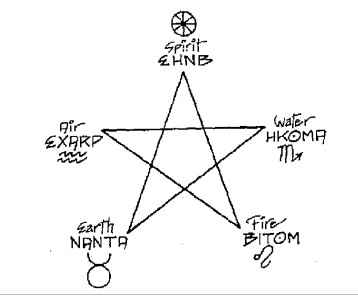


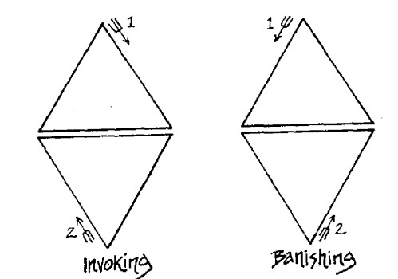
ALGUNAS FORMULAS EN EL SISTEMA ENOQUIANO
Nombre
Correspondencia númerica
Tipo de Operación
KAL 314 Manifestaciones, precipitaciones. La corriente masculina.
IAO 96 Mejorar el karma, cancelar las deudas kármicas.
QAA 52
Procesos creativos, la corriente solar.
KIKA
666 Progreso gradual, cualquier cosa de naturaleza cíclica.
TOOG
77, 71
infinidad, libertad, espacio. La corriente femenina.
MZKZB
VOVIN
413 Cambio, renovación, progreso brusco. 401 Éxtasis, dicha, alegría. 280 Sabiduría, perspicacia, movilidad, poderes mágicos.
VRELP
197 Un verdadero vidente, habilidades psíquicas.
IVITDT
212 Salud, larga vida, purificación. 200 Éxtasis, felicidad, alegría.
NTAKOD 450 Entrar y/o atravesar el Abismo.
ZTZTZT
54 36, 18
Sacrificio, compasión, ayuda a los demás.
ILIATAI
20 Conocimiento y conversación con 9
tu Santo Ángel Guardián.
LA FÓRMULA DE KAL
La palabra enoquiana KAL, pronunciada ya sea Kah-leh o Kah- el, se compone de las primeras letras de las palabras, ICICLE AAI-LNNIA que significa, "los misterios de la Bestia dentro de ti". La frase completa suma 924, el número de LUKIFTIASKHIDAO que significa "el brillo de los diamantes". AIQ BRK reduce 924 a 6 que es el número de los diamantes amarillos (véase el Liber 777 de Crowley). También, 924= 77x12 donde 77 es el número para ED-NAS (uno que recibe) así como THIL (asiento) . También es el número de la 5ª Aethyr, LIT, así como el número de TOOG y su fórmula mágica.
Las letras de KAL suman 314 que es la suma de BABALON (110) y la Bestia (LNNIAO = 204). En enochiano, la palabra KAL significa "solidificar".
La fórmula de KAL está asociada al misterio de Babalon y la Bestia y su unión final. Esto se muestra en el número 314 que es" igual a IA-IDON- TOANT que significa "unión todopoderosa". Esta unión mística no es otra que la Gran Obra. También 314= 157x2 donde 157 es el número de ZORGE que puede significar amor, amistad o bondad, y el número de BATAWAH, el Rey de la Atalaya del Aire.
La fórmula de KAL se expresa en sus letras: El Hierofante de Tauro (A) con el Fuego del juicio (K) a su izquierda y el Carro de Cancer (L) a su derecha. En otras palabras, es la fórmula de la conciencia que actúa a través de la atención adecuada. La Bestia es la conciencia espiritual en desarrollo dentro de ti, el mago. Esta conciencia actúa de acuerdo con sus percepciones, que cambian a medida que la visión espiritual. KAL es el camino de la Magia blanca. Es 175 el proceso del yogui cuyas meditaciones diarias solidifican gradualmente en el espíritu interior. Es la fórmula de la verdadera alquimia. Las letras Veh, un, y ur se escriben:
LA FÓRMULA DE IAO
Soy como una doncella que se baña en un claro estanque de agua fresca.
Aleister Crowley, Liber VII
La palabra enochiana IAO, pronunciada Ee-ah-oh, está compuesta de las tres primeras letras de las palabras, IADNAH ATH OLORAT que significa: "la obra más elevada es el hombre". La frase completa suma 326, el número de la palabra YARRY que significa "destino" o "providencia" en el sentido de karma. También 326= 163x2, donde 163 es el número de RIT que significa "misericordia". AIQ BKR reduce 326 a 2, el número de la dualidad. Esta frase también suma 314 (la T puede ser 9 o 3), el número de la fórmula KAL. Las fórmulas de KAL y lAO están por lo tanto,, estrechamente relacionadas. Las letras de IAO suman 96, el número de QAA- OBZA, "creación de la dualidad" y ELZAP-TALHO, "el camino de la Copa", donde Copa debe tomarse en su sentido magi-co. También 96 = 48x2, donde 48 es el número de TALHO que significa "copa". El simbolismo de la copa explica el carácter pasivo de esta fórmula.
AIQ BKR reduce 96 a 6, el número de la vida. IAO es la fórmula de una aceptación pasiva de la vida en el sentido de una acción sin karma. La fórmula de IAO es la capacidad espiritual/mágica (Templanza/Arte en Sagitario) junto con la visión espiritual (Hierofante en Tauro) dará como resultado el mejor karma (Justicia en Libra). La fórmula es, por tanto, la que se utiliza para mejorar la propia carga kármica. Las letras gon, un, med, se escriben.
LA FÓRMULA DE QAA
La palabra enochiana QAA, pronunciada Qah-ah, está compuesta de las primeras letras de las palabras QUASAHI-ATH-AR que significa "el deleite en las obras del
sol". La frase completa suma 312 que es el número de ANANAEL-BASGIM que significa "la sabiduría secreta del día". Esto muestra la naturaleza solar de esta fórmula. AIQ BKR reduce 312 a 6, el número de la vida. Esta frase también se suma a 306, el número para DAMPLOZ OLPRT, que significa "una variedad de luz". AIQ BKR reduce 306 a 9, el número de la estabilidad en el cambio. La propia fórmula suma 52 y 52x6=312. AIQ BKR reduce 52 a 7, el número del deseo, el ingrediente más esencial en cualquier proceso creativo. La fórmula de QAA está estrechamente asociada a la fórmula de VRELP porque 52x 13 = 676 (véase la fórmula de VRELP).
Las siguientes son pistas para entender esta fórmula:
52x2 = 104 = MAL (flecha)
52x3 = 156 = DAMPLOZ (variedad) 52x4 = 208 = SA-ETHARZI (en paz) 52x5 = 260 = FISISMOZ (actuar con alegría)
Las letras de la palabra QAA sugieren que la verdadera creación es el proceso mágico del Colgado Hombre Colgado en 178 Agua seguido de una doble dosis de perspicacia espiritual (Hierofante en Tauro). Así, la creación bajo la fórmula QAA implica la entrega consciente de uno mismo.
Las letras ger, un, un se escriben:
THE FORMULA OF KIKA
La palabra enochiana KIKA, pronunciada Key-kah, está compuesta por las primeras letras de las palabras KAFAFAM IA KOMSELHA AP que significa "la verdad duradera del círculo inmutable". La frase completa suma 947, el número de NIB M TA KH R PARRY, que significa "un giro igual de la rueda del destino". Esto se reduce a 2 por AIQ BKR, el número de la voluntad divina. Las dos palabras principales de la frase (es decir, KAFAFAM KOMSELHA) se reducen a 8 66, los nombres de los tres gobernadores de KHR, el 20º Aethyr. (ZILDRON= 255, PARZIBA=189, TOTOKAN=422 y255+189+422=866). AIQ BKR reduce 866 a 2. Las letras de KIKA se añaden hasta 666 que Crowley adoptó como su propio número, siendo el de la Bestia del Nuevo Testamento. La palabra KIKA significa "misterio". AIQ BKR demuestra lo cerca que está esta fórmula de MZKZB: 1746 y 666 se reducen a 9 porque ambas son fórmulas de lento pero seguro desarrollo espiritual cíclico. El número 666 es equivalente a ELZAP-MI KA-LN N I A que significa "el camino de la Gran Bestia". La palabra LNNIA (bestia) es 174 que es el número de OLORA que significa "hombre". El número 666 también es igual a IA- KHORONZON que significa "la verdad de KHORONZON" donde KHORONZON es el archidemonio del Abismo. La naturaleza exacta de esta fórmula está expresada por las letras mismas:
Tu juicio (el Fuego del Juicio/Aeón) debe estar envuelto en la experiencia (Templanza/Arte de Sagitario) para tener una verdadera visión (Hierofante de Tauro). Esta fórmula expresa la actitud científica de atemperar el juicio con la experiencia real para ver las cosas sin prejuicios. Dos sigilos para KIKA de la Atalaya de la Tierra son:
Las letras veh, gon, veh, un se escriben:
LA FORMULA DE TOOG
La palabra enochiana TOOG, pronunciada Toh-oh-geh, está compuesta por las primeras letras de la frase TABGES ORS-OXEX GRAA que significa "una emanación de los oscuros recovecos de la luna". Esta frase suma 1142, que es la suma de los nombres de los tres gobernadores del 19º Aethyr, POP:
TORZOXI
ABRAIOND
OMAGRAP
= 1142
=
=
=
632
261
249
Además, 1142 es el número de KA-KAKOM BABALON que significa "la naturaleza vigorosa de BABALON". AIQ BKR reduce 1142 a 8, el número de los ciclos. Esta frase también suma 1136 que AIQ BKR reduce a 2, el número de la dualidad. La palabra TOOG suma 77 con un valor alternativo de 71 (la letra T puede ser 9 o 3). Esto conecta la fórmula con el 5º Aethyr, que AIQ BKR reduce 77 a 5 mientras que 71 se reduce a 8 (nótese la recurrencia de 5 y 8 en muchas de estas fórmulas). Además, 71x 16=1136, lo que conecta la fórmula con su frase madre.
Las palabras T-OOG significan "como una cámara". Tanto 77 como 71 son valores para la palabra T-IL que significa "como un Aethyr". La fórmula de TOOG está asiociada a la corriente femenina. No es de extrañar que el 77 sea el número de ODOSA que significa "abrir lo que está dentro". El propio nombre sugiere la lujuria (el deseo creativo de Leo) unida al movimiento (el carro de Cáncer) por los dos modos de retribución kármica (la justicia de Libra). El karma es tanto personal como colectivo y puede dar lugar a la armonía o al conflicto, al bien o al mal. Esta naturaleza dualista de la justicia fue personificada por la diosa egipcia Maati (Maati era el doble aspecto de Maat, diosa de la verdad y la justicia, consorte del dios Thoth, cuyo Salón de Maati contenía la balanza donde todos eran pesados con su pluma de la justicia).
Un sigil de TOOG de la Atalaya de la Tierra es:
Un sigil de TOOG de la Atalaya del Agua es:
Un sigil de TOOG de la Atalaya del Aire es:
Un sigil de TOOG de la Atalaya del Fuego es:
Las letras gisa, med, med, ged están escritas;
LA FÓRMULA DE MZKZB
La palabra enochiana MZKZB se pronuncia Em-zodkeh- zod-beh. Estas son las primeras letras de las palabras MADRID-ZOKH KHIRLAN ZAKARE BAEOUIB que significa, "las iniquidades del pasado cambiando por la alegría de la justicia". La frase completa suma 1746 que es la suma de los nombres de los tres gobernadores de LEA:
KUKUARPT = 864
LAUAKON = 470
SOKHIAL = 412
= 1746
Además 1746=873x2 donde 8873 es el número de YOLKI-HKRA.L ("el que produce alegría"). 1746582x3 donde 582 es el número de IOLKAMBALIT ("el que da a luz a los justos"). 1746 = 291x6 donde 291 es el número de GNETAABISRO ("gobernar con esperanza"). 1746 =194x9 donde 194 es el número de GNETAABT MAD ("ser gobernado por tu propio dios"). Además, 194 es el número de BITOM (fuego). 1746= 97x18 donde 97 es el número de TABBANZA ("el gobernante interior"). También AIQ BKR reduce 1746 a 9, el número de la estabilidad en el cambio. Las letras de la fórmula suman 413, el número para TOANTAH-IA-VAOAN-IAL que significa "el deseo de la verdad que es verdaderamente consumidora". Además, la abreviatura de esta frase/ 1711, suma 199, el número de GOSAORSBA que significa "intoxicación extraña" (este es un ejemplo de una fórmula dentro de una fórmula). Obsérvese que la idea de progreso cíclico se transmite a través de esta fórmula. Para reforzar esta idea, 413 se suma a 88 por AIQ BKR y 8 es el número de los ciclos y espirales. Un segundo número para MZKZB es 401 (porque la letra Z puede ser 9 o 3). Este es el número para KHR, el 20º Aethyr, La fórmula enoquiana de MZKZB expresa el impulso espiritual que es cíclico y a la vez continuo. El aspecto especial de esta fórmula se refiere a los efectos embriagadores de la verdad en el mago. Las letras de esta fórmula tocan un aspecto especial de la doctrina cabalística El Emperador (M) y la Estrella (B) son los dos extremos de esta fórmula. Crowley cambió los lugares de estos dos caminos del Tarot en el Árbol de la Vida para que concuerden mejor con su mensaje. Según la fórmula de MZKZB, no importa
la posición que tomen porque BZKZM es una fórmula idéntica. El Emperador y la Estrella actuando conjuntamente, rodean el impulso de crear (Z) que está templado por el juicio experimentado (K).
El sigilo de MZKZB de la Atalaya de la Tierra
La lettras tal, ceph, veh, ceph, pe se escriben:
LA FÓRMULA DE VOVIN
La palabra VOVIN puede pronunciarse como Voh-veeneh o Voh- vee-en. Se deriva de las primeras letras de las palabras VPAAH OXI VABZIR IN NISAN que significa "las poderosas alas del águila que te llevan a través el Vacío". Esta frase suma 1175, el número de la suma de los tres gobernantes del 24º Aethyr, NIA:
ORAKAMIR = 692
KHIASALPS = 404
SOAGEEL = 79
= 1175
AIQ BKR reduce 1175 a 5, el número del hombre y del movimiento. La palabra VOVIN significa "dragón"" y su fórmula es la fórmula del Dragón Mágico. La palabra VOVIN suma 280 donde 28 es el número de BALT que significa "justicia". También 280=140x2 donde 140 es el número de IL-IA que significa "consumir con la verdad", y AIQ BKR reduce 140 a 5. Además, 280=70x4, donde 70 es el número de IAD, "un dios", y 280x2 560, el número de OMP-ZAKARE que significa la comprensión de la movilidad". El Dragón Mágico es un mago de muy alto rango, su divinidad interior, su Santo Ángel de la Guardián. Es alguien que ha cruzado el Abismo. Su fórmula es moverse incesantemente a través de las Atalayas y Aethyrs impartiendo justicia y proclamando su palabra. La fórmula revela su metodología en sus letras: El sentido de la justicia (Justicia en Libra) es el núcleo de un sano amor a la vida (el Diablo en Capricornio) que es controlado por la experiencia (Templanza/Arte en Sagitario) pero que permite cambio constante de expresión (Muerte en Escorpio).
El sigilo de VOVIN de la Rosa (Figura 6) es:
Las letras vau, hied, gon, drun se escriben:
LA FÓRMULA DE VRELP
La palabra enochiana VRELP, pronunciada Var-ee-elpeh, está compuesta por las primeras letras de las palabras VRAN ROR-ELZAP LAIAD PLAPLI que significa "ver la órbita del sol y participar de los secretos de la verdad". La frase completa suma 676 que es el número de la suma de los nombres de los tres Gobernadores del 14º Aethyr, VTA:
TEDOAND VOANAMB VIVIPOS
= = =
113 257 306
=676
El 14º Aethyr contiene la Ciudad de las Pirámides y la fórmula de VRELP puede ayudar a entrar en esta ciudad exaltada. También 676=26x26, donde 26 es el número de ATHZAH que significa "las obras que están dentro". La palabra VRELP significa "un vidente fuerte" y de hecho esta es la fórmula para desarollar capacidades psíquicas. La Gematria da un valor de 197 para VRELP que es también el número de la palabra LAS- OLLOR que significa "un hombre rico". Sin embargo, el tesoro almacenado por que tiene la fórmula VRELP no es dinero, sino riqueza espiritual. Las palabras OMP-IL significan "comprensión de los Aethyrs" y suman 197, así como T -IL-OM, "los Aethyrs tienen conocimiento". La naturaleza exacta de la fórmula se obtiene de las letras y su disposición. En el centro de la palabra está el Ermitaño de Virgo flanqueado a la izquierda por las fuerzas de reflexión lunar de la Luna en Piscis, y a la derecha por las fuerzas creadoras solitarias de la Luna en Leo. Además tiene a su izquierda el amor a la vida expresado por el Diablo en Cápricornio y la movilidad expresada por el Carro en Cancer a su derecha. VRELP es, pues, la individualidad que aprendió a equilibrar las fuerzas de la dualidad en su vida. Con la comprensión de esta fórmula, se puede entrar en la Ciudad de las Pirámides sin quedar atrapado en ella (la letra vau asegurará que no lleves el desapego al extremo). El suspiro de VRELP de la Rosa (Figura 6) es:
Las letras vau, graph, ur, orals se escriben:
LA FÓRMULA DE IVITDT
La palabra enochiana IVITDT se pronuncia Ee-veetehdeh-teh. Se compone de las primeras letras de las palabras IAL-PRG VAOAN IAL TIBIBP DOALIM TELOK que significa, "las llamas ardientes de la verdad que consumen el dolor, el pecado y muerte". La frase completa suma 1130, el número de la suma de los nombres de los tres gobernantes del 15º Aethyr, OXO:
TAHAMDO =140
NOKIABI=511
TASTOXO = 479
= 1130
AIQ BKR reduce 1130 a 5, el número del hombre y del movimiento. También 1130=565x2, donde 565 es el número de TOH-KHIRLAN que significa "el triunfo de la alegría". Las letras de IVITDT suman 212. Esto se reduce a 5 por AIQ BKR, con un número alternativo de 200 (T puede ser Leo=9 o Caput Draconis=3). El número 212 es igual a TORZU LIALPRT , " la Primer Llama ". Además, 212=106x2 y 106 es el número de AR, "el sol". Todos estas correspondencias demuestran que el IVITDT es un formula solar relacionada a la purificación mediante el fuego. Las palabras I-VI-I-D-T pueden traducirse como "el Segundo es semejante al tercero". En otras palabras, las fuerzas polares de de la dualidad (dos) han de manifestarse (tres) mediante esta fórmula. La ejecución correcta de esta importante fórmula es expresada por sus letras como sigue: la alegría de vivir (el Diablo en Capricornio) debe ser controlada por la habilidad mágica (la Templanza/Arte en Sagitario) mientras que el fruto de la Obra
(Espíritu de la Emperatriz) se encontrará centrado en la alegría de la creatividad (Fuerza/Lujuria en Leo). Esta fórmula de seis letras expresa un doble concepto: por un lado, la existencia es una delicia y la dicha es una condición natural de la vida, mientras que, por otro lado, el jolgorio excesivo debe ser atemperado por la visión espiritual. IVITDT sugiere un equilibrio entre la alegría del impulso espiritual y los deseos del mundo.
El sigilo de IVITDT de la Atalaya de Fuego es:
Las letras gon, vau, gon, gisa, gal, gisa se escriben:
LA FÓRMULA DE NIAKOD
La palabra enochiana NIAKOD se pronuncia Nee-ahkoh-deh. Se compone de las primeras letras, de las palabras NAZPS IL-AMNIA KIAOFI ORS DODRMNI que significa, "una espada para el maldito Aethyr del miedo, la oscuridad y la confusión". Esta frase suma 1275 que es la suma de los nombres de los tres gobernadores del 10º Aethyr, ZAX:
LEXARPH = 534
KOMANAN =532
TABITOM = 209
= 1275
Además, 1275 -=51x25, donde 25 es el número de la palabra BESZ que significa "materia" y 51 es el número de la palabra GOSA que significa "extraño", "nuevo" u
"original". Además, 1275 es el número de ZIRN MIKA KHORONZON que significa "la maravilla y poder de KHORNZON" donde KHORONZON es el nombre del demonio del Gran Abismo Exterior de ZAX. AIQ BKR reduce 1275 a 6 y también reduce 600 (KHORONZON=600) a 6. Además, la fórmula se compone de seis letras. Las letras de NIAKOD suman 450 que es igual a EFAFAFE-ZAX que significa "vasos de ZAX" donde ZAX es el 10º Aethyr. La palabra KOMO, "una ventana", también es igual a 450. Además, 450=45x10, donde 45 es el número de la palabra TABGES que significa una cueva o un hueco y 10 es el número de ZAX. Estas correspondencias muestran 192 y el viaje a través del Abismo de ZAX. Las palabras enochianas NIA-KOD pueden ser traducidas como "viaje seguro, o un medio "de paso". La forma correcta de utilizar esta fórmula es sugerida por sus letras: Usted debes enfrentar su aniquilación personal (Muerte en Escorpio) en ZAX usando tu capacidad mágica (Templanza/ Arte en Sagitario) y la conciencia iniciada (Hierofante en Tauro). Cuando tu juicio mágico (el Eón ardiente) te diga que estás preparado, entonces podrás entrar con seguridad en ZAX. Si tu karma (Justicia en Libra) lo permite, tendrás éxito (Espíritu de la Emperatriz). NIAKOD es una espada mental que debe acompañarte cuando entras o cruzas el 10º Aethyr, ZAX. El grado de protección que ofrece NIAKOD está en proporción directa a tu comprensión de esta fórmula.
El sigil de NIAKOD de la Atalaya de Fuego:
Las letrs drun, gon, un, veh, med, gal se escriben:
LA FÓRMULA DE ZTZTZT
Esta palabra mágica se pronuncia Zod-teh-zod-tehzodteh. La fórmula se deriva de las primeras letras de las palabras ZAR-TOANT ZEN TOL ZA TALHO que significa "el camino del amor es sacrificar todo en la Copa" donde la
Copa se refiere al Sangreal del 12º Aethyr, LOE. La frase suma 404 o 362. Esta fórmula es universal porque 404= 101x4, donde 101 es el nombre de la palabra LONSA que significa “todos”. . El número 404 es el valor de TELOK-SOE que significa "la muerte de un salvador" y, por tanto, relaciona esta fórmula con la de los dioses. El número 362 es el valor de las palabras ZIZOPMONONS que significa "vasos del corazón" AIQ BKR reduce 404 a 8 y 362 a 2. La palabra ZTZTZT se reduce a 54, el número de TALHO, "una copa". La palabra Talho también puede sumar 48, el número de LOE, el 16º Aethyr. ZTZTZT también puede sumar 36, el valor de la palabra ELZAP, que significa "camino" o "curso" y 18, el valor de la palabra AFFA, "vacío". ZTZTZT es, pues, una fórmula femenina. AIQ BKR reduce 54 ,36 y 18 a 9, el número de la estabilidad en el cambio . Es interesante establecer que 1 8x 2 = 3 6 y 18x3=54. Como Z y T pueden ser ambos 9 (Leo) o 3 (Caput Draconis) la propia fórmula puede tener tres modos de funcionamiento. El primero, que actúa a través del número 54, es el modo del amante. El segundo, que actúa a través del número 36, es la vía del del adherente. La tercera, que actúa a través del número 18, es la del ermitaño (Ver Magick Without Tears de Crowley para una explicación detallada de estos tres tipos de magi-cal, y también ZIM, El Jardín de Nemo más adelante en este manual). Esta fórmula es un juego con la mezcla de las cualidades de Leo (creatividad) y la conciencia iniciática de la Gran Sacerdotisa (Caput Draconis). Uno es el impulso creativo descendente, el otro el impulso espiritual ascendente. ZTZTZT expresa el equilibrio adecuado necesario entre estas dos fuerzas complementarias.
El sigil de ZTZTZT de la Atalaya del Aire es:
Las letras ceph, gisa, ceph, gisa, ceph, gisa se escriben:
LA FÓRMULA DE ILIATAI
La palabra enochiana ILIATAI, pronunciada Ee-lee-ahtahee, está compuesta por las primeras letras de la enseñanza, INSI LAMA-IAIDA ANANAEL TOANTOH AAI- IAD que significa, "recorrer el camino más elevado de la Sabiduría secreta es unirse con el dios dentro de ti". La frase completa suma 836 (se reduce a 8 porAIQ BKR) . La fórmula misma suma 209 y 209x4=836. La fórmula está, pues, directamente relacionada con su frase madre. El número 209 es también igual a la palabra BLIORA que significa "comodidad" También 209x2=418, el número en el sistema de Crowley para la palabra del Eón, Abrahadabra. Además, 209= 11x19 donde 19 es el 19 es el número de SA-A, que significa "dentro de mí", lo que mismo que la operación de esta fórmula. Esta poderosa fórmula está conectada con el primer Aethyr, LIL, a través del número 76 (UL= 76) porque 76x11=836. Esta es probablemente la más importante de las fórmulas enochianas. Sólo debe utilizarse para las operaciones directamente relacionadas con la Gran Obra. ILIATAI es la fórmula para el Conocimiento y la Conversación con su Santo Ángel de la Guarda. Las letras demuestran la naturaleza exacta de la fórmula: El Movimiento (el Carro de Cáncer) está custodiado por la Templanza/Arte, y, de hecho, todo el funcionamiento de esta fórmula está englobado por Templanza/Arte. También, el deseo de creatividad (Fuerza/Lujuria en Leo) está cuidadosamente custodiado por la conciencia (Hierofante en Tauro).
El sigilo de ILIATAI de la Atalaya de la Tierra
El Sigilo de ILIATAI de la Atalaya de Agua
Las letras gon, ur,gon, un, gisa, un, gon se escriben:
Capítulo 11 de 15
Cuadros Mágicos


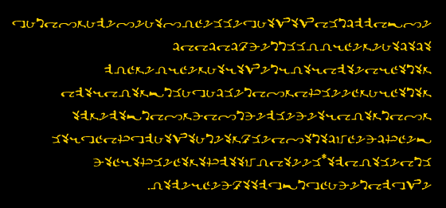
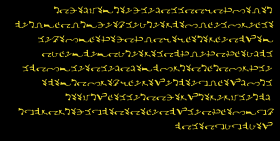
CUADROS MÁGICOS
La teoría de los cuadrados mágicos es muy antigua. Su uso se deriva del principio del poder de las palabras para nombrar las cosas, y que conocer el nombre de algo te da un grado de poder o control sobre ello. Consulte La magia sagrada de Abramelin el Mago traducido por Mathers para conocer la teoría y el uso de de estos cuadrados Mgágicos.
La Magia Enochiana también incluye los Cuadros Mágicos. Pueden ser utilizados como ayudas en la meditación o como talismanes. Cinco de los más importantes de estos cuadrados se presentan a continuación.
N EMO . Este cuadrado suma 516, el número de MIKA-SOESA significa "el poderoso salvador interior " . Por lo tanto 516= 129x4 donde 129 es el número de
MOZ que significa "alegría". Además, 516= 12x43 donde 43 es el número de BALT- ZA que significa "en justicia". AIK BKR reduce 516 y 129 a 12 que se reduce a 3, "el hijo o la suma de uno" (el padre de padres) y "dos" (la madre suprema). Este es el cuadrado de NEMO, el Magister Templi o Maestro del Templo.
AMMA. Este cuadrado se suma al 625 que es el número de YRPOIL- TELOKH que significa "la separación de la muerte". También 625=25x25 donde 25 es el número de BESZ, la materia. La palabra AMMA significa "maldito", MTIF puede significar "una visita como ninguna otra", MIRE puede significar "una visita de tormento", y AFFA significa "vacío". Este cuadrado refleja la idea de la limitación y la mortalidad inherentes a la materia y a toda la existencia física. Debe utilizarse con cuidado.
ROR. Este cuadrado suma 524, el número de IALKOMO que significa, "rueda que quema" y KHR TOANT BESZ que es, "rueda que une la materia". AIQ BKR reduce 524 a 2, el número de "Voluntad Divina". ROR es la palabra enochiana para "el sol" y ODO significa "abrir". El nombre del dios solar egipcio, Ptah, significa "el abridor" y este cuadrado mágico expresa las mismas fuerzas creativas que se asocian a Ptah. Este cuadrado encarna las fuerzas de la corriente solar.
GRAA _ Este cuadrado suma 618, el número de ZIN- DOBIX que significa "una cascada", y PARADIZ-KNILA que es "sangre virgen". AIQ BKR reduce 618 a 6, el número de imaginación. GRAA es la luna y este cuadrado encarna las fuerzas de la corriente lunar. Nótese que la 251palabra GRAA, que significa "luna", es un anagrama de A G - A R que significa "no el sol". Cada una de las cuatro palabras de este cuadrado tiene o implican las palabras RO R o A R, que significan "el sol". La segunda palabra, RAOR es un anagrama de A-ROR que significa "el del sol" y la última palabra AR-SA significa "dentro del sol", y es un anagrama de RAAS, que significa "el este", la ubicación tradicional del sol naciente. Pero la palabra ORS significa "oscuridad" y, por tanto, todo el cuadrado es un juego con el concepto de que la luna es una especie de sol, un sol oscuro o un sol de la noche.
BABALON. Este cuadrado suma un total de 1183, el número de KA-KAKOM- ZORGE que significa "hacer florecer". También 1183=169x7, donde 169 es el número de RIT que significa "misericordia" y PIR, "brillante". AIQ BKR reduce 1183 a 4. BABALON es la corriente femenina encontrada en los Aethyrs, ADNA-ODO implica la apertura al concepto de obediencia; BAHA [L]-NOQ [01 es "el grito de un siervo fiel"; ANANAEL significa "la sabiduría secreta"; LONSA-MI sugiere el poder o energía que está latente en cada uno; ODO-EMNA puede puede significar "abrirse en adelante" y NOQ[01-L-IAlD puede significar "el siervo supremo (o ministro) de Dios". Una interpretación de este cuadrado mágico es:
O BABALON
(me) Reverencio ante ti Recíbeme, Tu fiel servidor Que proclama tu Sabiduría Secreta. Tú eres el poder que reside en todos. Recíbeme, por ahora y para siempre.
Además de estos cinco cuadrados, cada Atalaya está asociada a un cuadrado mágico, como sigue:
NANTA. Esta Atalaya puede ser traducida como fuerzas de la
oh Tierra Soy como tú; Una precipitación de eventos.
HKOMA. Este cuadrado suma 1227 y encarna las fuerzas de la Atalaya del Agua. Se puede traducir como:
oh Agua, eres mi propia sangre; tu nombre es como el mío.
EXARP. Este cuadrado suma 1488 y encarna las fuerzas de la Atalaya del Aire. Se puede traducir como:
oh Aire, Vienes a mí Con la misma misericordia que tienes Para todos Seres divididos.
BITOM. Este cuadrado suma 786 y encarna las fuerzas de la Atalaya del Fuego. Se puede traducir como:
oh Fuego, Tu verdad me consume, como mandíbulas de llama ardiente.
NOTA. Los valores gematricos de cada uno de los cuatro Cuadros de Magia de las Atalayas se reducen por AIQ BKR a 3, el número de la manifestación.
CÓMO UTILIZAR LOS CUADRADOS MÁGICOS
Cuando se utiliza para la meditación, cada letra representa una fuerza. La naturaleza y las posiciones de relación de cada letra una con otra, en cada cuadrado, comprenden una declaración que describe una parte importante de su universo mágico. Estas afirmaciones mágicas pierden a menudo su poder cuando se ponen en palabras o cuando son definidas lógicamente por la mente racional. Los significados de las letras enoquianas se muestran en la Tabla II. En la meditación, deja que tu mente pase por las letras de un cuadrado. Observe las relaciones y correspondencias ocultas a medida que que se mueve entre las letras, pero no intente poner sus observaciones en palabras hasta después de la meditación.
Como ejemplo, medite en el cuadrado de ROR. Verá que el cuadrado contiene sólo tres letras diferentes:
R---Luna en Piscis O---Justicia en Libra D-- Emperatriz en Espíritu
La letra D conecta la letra masculina O con la letra femenina R. Un fuerte sentido de la justicia impregna este cuadrado. Es interesante observar que la letra R, que aparece en todas las esquinas, es la letra de la luna la que rige, aunque el cuadrado general es para la corriente solar. (ROR es la palabra enoquiana para el sol). Así, el sol tiene la luna de la misma manera que el cuadrado de la luna de GRAA contiene referencias al sol en su interior. Esto refleja la máxima oculta de que toda verdad contiene su opuesto dentro de ella. Otra vista del cuadrado de ROR mostrará al Espíritu (D) dentro de áreas iguales de Aire (O) y Agua (R). Esto sugiere el creativo surgimiento de conciencia de su Fuente
inconsciente. Este escenario está simbolizado en la naturaleza por el sol naciente, y en Magia por el escarabajo o dios con cabeza de escarabajo de los egipcios, Khepera. Una mayor reflexión sobre esta cuadratura nos dará más correspondencias solares. Como ejercicio, deberías meditar sobre todos los cuadrados de Magiak de este manual.
OPERACIONES MÁGICAS DEL VRELP
El VRELP (Var-el-peh), el Vidente místico de la Enochian Magick, es aquel que aspira a convertirse en un Magus. Magus es aquel que ha dominado el tercer Aethyr, ZOM. El VRELP es una etapa importante en el desarrollo de cualquier mago enochiano y en la que cada mago se esfuerza por alcanzar . Para ayudar a este desarrollo, utilice el cuadrado mágico para VRELP como talismán. Este cuadrado mágico se suma gematricamente a 680, donde 68 es el número de la palabra ADNA que significa "obediencia" (68x 10=680). AIQ BKR reduce el 680 a 5, el número del hombre. El cuadrado es un juego de palabras palabras VRELP-ARF- EL-E AFE que implica que el VRELP es un vehículo ideal para unirse a la creatividad divina (literalmente, "el VRELP es un recipiente supremo para visitar el sol"). VRELP obedece a la Ley divina, no a la sociedad humana. De hecho, a menudo es considerado un renegado o un excéntrico por la sociedad e históricamente ha sido temido y rechazado por incomprensión. Se le representa como el mago malvado con un sombrero puntiagudo y una barba ondulada que habla con ambigüedades y que habla con ambigüedades y lanza maldiciones y hechizos malignos a la gente del pueblo a su antojo. La literatura de la Edad Media lo ha estereotipado como brujo o
hechicero dependiendo del sexo. Porque siempre habla en contra del cristianismo, es ipso facto' malo. La verdad, como suele ocurrir, no es lo que parece en la superficie. El VRELP equivale a un Adepto Exento (el Adeptus Exemptus de la Aurora Dorada). Como tal, él (o ella) se ha dado cuenta de que el bien y el mal son son puntos de vista relativos y que la moralidad en sí misma es una vara de medir concebida por la sociedad y utilizada por la sociedad para la sociedad. Se ve a sí mismo como una encarnación en el tiempo, el espacio y la forma del sol, no el sol físico, que no es más que una encarnación, sino el sol espiritual, el Sol del sol (en las enseñanzas egipcias en las enseñanzas egipcias era conocido como el dios oculto, Amen), que es la Fuente de toda manifestación. Todas las cosas están vivas (es decir cosas= seres) porque todas las cosas expresan este Sol vivo. Todas las cosas son conscientes porque todas las cosas expresan el Sol consciente. Algunos seres ya no son conscientes de estos hechos y por ello ha surgido la ignorancia ha surgido en el mundo. Pero todas las cosas/seres están bajo la Ley del Karma y por lo tanto crean su propia verdad y su propia ignorancia. El VRELP ve que algunas personas crean sus propios cielos, mientras que otros crean sus propios infiernos según sus creencias. Luego los observa experimentar sus creaciones y sus experiencias refuerzan sus creencias. Observa esto como un círculo continuo cuyo principio se pierde en el tiempo pero cuyo final puede llegar en cualquier momento. El final de este círculo se llama iluminación y el VRELP es aquel que siente que el final de su propio Ciclo de la Ignorancia se acerca rápidamente. Los siguientes ejercicios se proporcionan para que practiques en tu camino hacia el VRELP:
Una Meditación Intermedia.
PASO 1. Medita sobre las numerosas correspondencias entre tu cuerpo físico y la Atalaya de la Tierra.
PASO 2. Medita en las numerosas correspondencias entre tus sentimientos y emociones (cuerpo astral) y la Atalaya de Agua.
PASO 3. Medite en las numerosas correspondencias entre tus pensamientos y los procesos de pensamiento (cuerpo mental inferior) y la la Atalaya del Aire.
PASO 4. Medita sobre las numerosas correspondencias entre tu conciencia y tu sentido del ser (cuerpo mental superior) y la Atalaya del Fuego.
PASO 5. Medite en las numerosas correspondencias entre su espíritu (cuerpo espiritual) y la Tabla de la Unión.
PASO 6. Véase a sí mismo como la encarnación viviente de todas las ideas y energías que están en las Atalayas. Concéntrese en esta en esta idea durante todo el tiempo que puedas.
El Ritual de Dedicación del VRELP.
PASO 1. Ponte una túnica blanca. Haz tus propios talismanes de los cuadrados mágicos de ARSOE y LAHA. Consagra un círculo.
PASO 2. Enfréntate al Mundo de la Fe. Visualize los Aethyrs de ZIM y LOE. Sostén tu Vara en tu mano derecha y tu Talismán de ARSOE en la mano izquierda. Traza un suspiro rojo de ARSOE en el aire ante ti y di, ARSOE-OXI-AR-SIBIS (Ar- soh-eh-Oh-tzeeAh-rah- See-bee-seh) Contempla, LOE (Loh-eh), El Aethyr de la Copa, La Región del Salvador, La Casa de SOE (Soh-eh) Quién es ARSOE (ah-rah-soh-eh) Que se sienta sobre ZIM (Zodee-meh) Más allá del Jardín de NEMO (Neh-moh) SAH- OMA-EL (Sah-Oh mah-Eleh)
PASO 3. Sostenga su Copa en su mano derecha y el Talismánde LAHA en tu mano izquierda. Deja tu cuerpo físico y viajaen tu Cuerpo de Luz a los Aethyrs de ZIM y LOE. Enfréntate aBABALON en la forma de una hermosa mujer de pie ante ti. Extiende tu Copa hacia ella y di,
LAHALASA-IAO(Lah-hah-lah-sah-Ee-ah-oh) Yo te presento mi Copa, el Santo Grial, Lleno de la Sangre de los Santos, Que es mi vida. No he guardado ni una gota. LAHALASA-IAO(Lah-hah-lah-sah-Ee-ah oh)
Ve tu propósito de vida (tu Verdadera Voluntad) en la forma de tucopa siendo recibido por BABALON y resuelve dedicar tu vida a ayudar a otros en su nombre.
PASO 4. Regresa a tu cuerpo físico. Realiza los rituales de destierro.
Una meditación VRELP avanzada.
PASO 1. Medita sobre el significado y las correspondencias del Cuadrado mágico de VRELP. Considera sus similitudes con los cuadrados mágicos de ARSOE y LAHA.
PASO 2. Medita sobre el propio cuadrado mágico de VRELP. Considere el equilibrio de sus letras. Considera las cuatro esquinas que que incluyen la V (el Diablo en Capricornio) y la P (la Lujuria creativa de Lujuria de Leo).
PASO 3. Medita sobre ti mismo como expresión solar. Considera las similitudes entre la luz del sol y la luz de la conciencia.
PASO 4. Transfiera las fuerzas mágicas encarnadas en el Talismán del Cuadrado Mágico de VRELP a ti mismo. Considera tu propio Cuerpo de Luz como un posible vehículo en el que visitar el sol.
PASO 5. Imagina que tu conciencia es una con la luz del sol. Mantén esa imagen durante todo el tiempo que puedas.
OPERACIONES MÁGICAS DEL DRAGÓN
A medida que se avanza en la Magia Enochiana se llega a un nivel en el que puedes trabajar legalmente por el título de un Dragón Mágico cuya fórmula es VOVIN. Será útil en este punto hacer una Daga Mágica inscrita con la fórmula y su sigilo. Esta Daga debe ser consagrada con una ceremonia apropiada (para incluir un juramento mágico) y darle el nombre de "verdad que consume" (IA-IAL). Deberá construir un talismán similar al mostrado en la Figura 8 y cargarlo adecuadamente.
Las pruebas requeridas por VOVIN son:
1. Dominio de los modos de viajar a través del tiempo y del espacio, y por lo tanto dominio del 24º Aethyr, NIA.
2 . Dominio de la Ciudad de las Pirámides, y por lo tanto dominio del 14ª Aethyr, VTA.
3. Habilidad para cruzar el Abismo, y por lo tanto el dominio del 10º Aethyr, ZAX.
4. Conocimiento y conversación del Santo Ángel de la Guarda, y por tanto dominio del 8º Aethyr, ZID.
5. Comprensión del amor en todos sus aspectos, y por lo tanto la maestría del 7º Aethyr, DEO.
Estas cinco pruebas deben ser objetivos específicos dentro de su Gran Trabajo. Implican una importante comprensión de la Magia Enochiana un impresionante logro de poderes mágicos. La primera prueba otorgará el poder de viajar con seguridad a través del tiempo y el espacio. La segunda prueba le otorgará el poder de trascender su humanidad y alinearse con la divinidad. La tercera prueba le otorgará el poder de entrar en los reinos espirituales a voluntad. Tendrás pleno control sobre el demonio KHORONZON. La cuarta prueba le otorgará el poder de la visión espiritual. Asumirás tu identidad espiritual y obtendrás conocimientos sobrenaturales. La quinta prueba te otorgará el poder del amor. Su único vínculo que te queda con este mundo será tu compasión por los demás.
Si tiene éxito, las cinco ordalías darán al VOVIN las siguientes características necesarias:
1. Movilidad 2. Desprendimiento 3. Conocimiento 4. Comprensión 5. Compasión
Además de adquirir un nuevo Nombre Mágico, necesitarás también una Palabra Mágica. Como VOVIN debes ser capaz de condensar tu entendimiento mágico (es decir, lo que está dentro de tu Copa Mágica) en una sola palabra. Tu deber como VOVIN es recorrer los Aethyrs y las Atalayas proclamando tu palabra a todos los que la escuchen. También eres un "de la justicia" y por ello debes esforzarte constantemente por expresar tu Palabra dondequiera que vayas. Puede que tengas que usar tu Daga para evitar que los demonios deshagan tu obra, pero el poder que comandarás debería permitirte ganar tales encuentros. Por supuesto, tu celo misionero debe ser templado por el amor y el respeto por los demás que aprendiste en DEO.
Como Dragón Mágico, tendrás mucho en común con NEMO. Sin embargo, NEMO permanece en el 13º Aethyr, ZIM, prefiriendo esperar a que los candidatos vengan a él. Como VOVIN eres móvil, y recorres los subplanos cósmicos para establecer tu Palabra dondequiera que puedas. Puedes exhalar Fuego (tu Palabra espiritual), Aire (tu palabra intelectual) y Agua (tu palabra emocional), así como Tierra (tu palabra literal o física).
NOTAS ADICIONALES SOBRE VOVIN
El VOVIN es muy similar al VRELP, pero hay una distinción importante. El VRELP es en gran medida una expresión de la corriente solar, mientras que VOVIN es en gran medida una expresión de la corriente lunar. El VRELP utiliza la corriente masculina para su trabajo. El VOVIN trabaja principalmente a través de la corriente femenina. Sin embargo, se recuerda al estudiante que el trabajo final en sí, es decir, la Gran Obra, es el mismo y a su vez la Gran Obra. El VOVIN y su trabajo es una parte extremadamente importante dla Magia Enochiana. Para su estudio debemos usar el siguiente Cuadrado Mágico como talismán:
El cuadrado mágico de VOVIN se suma gematricamente a 1876, donde 1876=67x28 y 28 estáasociadocon elVOVINporque la palabra VOVIN es 280 y 280=28x10. La palabra VOVIN y su Cuadrado Mágico están por tanto relacionados a través del número 28. El cuadrado es
un juego de palabras VOVIN-OL-OXI- VO-IOV que puede traducirse como "el Dragón es aquel que ha fortificado su alma" (literalmente, "el Dragón ha hecho que su su alma interior sea poderosa"). El Dragón, o VOVIN, se dice entonces que es uno que está muy avanzado en la Magia. Ha sido capaz de fortalecer sus cuerpos sutiles(el "alma" es un término general que se refiere aquellos cuerpos sutiles entre lo físico y lo espiritual). AIQ BKR reduce 1876 a 4 y reduce 1068 (este es el valor de las palabras VOVIN-OL- OXI-IOV) a 6. En general, los números impares (1, 3, 5, 7 y 9) son masculinos mientras que los números pares (2, 4, 6 y 8) son femeninos. AIQ BKR revela así la naturaleza femenina de la VOVIN. El VRELP se ocupa en gran medida de elevar la conciencia humana hacia las esferas superiores de la conciencia espiritual. El VOVIN se ocupa en gran medida de llevar la conciencia espiritual a las esferas inferiores de la conciencia humana. La fórmula del VRELP incluye las técnicas del Raja Yoga. La fórmula de VOVIN ncluye las técnicas de Kundalini Yoga. Hay al menos cuatro Órdenes específicas del Dragón como sigue:
1. VOVIN-TELOKH, el Dragón de la Muerte cuyo número es el 638. Este Dragón está estrechamente relacionado con TORZ OXI, un gobernador del 19º Aethyr, POP.
2. VOVIN-TOANT, el Dragón del Amor cuyo número es el 384. Este Dragón está estrechamente relacionado con PAKASNA, un Gobernador del 2º Aethyr, ARN.
3. VOVIN-MATORB, el Dragón de los Ciclos cuyo número es el 514. Este Dragón está estrechamente relacionado con TOKARZI, un Gobernador del 17º Aethyr, TAN.
4. VOVIN-BALT, el Dragón de la Justicia cuyo número es el 308 y 302. Este Dragón está estrechamente relacionado con ONIZIMP, un Gobernador del 23º Aethyr, TOR
El siguiente ritual debe ser conducido para cargar su Cuadrado mágico de VOVIN en un poderoso talismán.
PASO 1. Haz tu propio cuadrado mágico de VOVIN.
PASO 2. Ponte una túnica negra. Consagre un círculo. Coloca tu Cuadrado Mágico, la Varita, la Espada, la Copa y el Pantáculo ante ti en el altar.
PASO 3. Sostenga su Pentaculo en ambas manos ante usted, mire el Cuadrado mágico y diga,
MORDIALHKTGA (Moh-ar-Dee-ah-leh-Hehkeh-teh-gah) IKZHIKAL (Ee-keh-zod-hee-kal)
Mientras vibra repetidamente la palabra NANTA, visualice el Poder de la Tierra siendo transferido en forma de un rayo negro desde tu Pentaculo al cuadrado mágico
de VOVIN. Mantén esto hasta que el Cuadrado Mágico aparezca negro por la energía de la Tierra que lo está cargando.
PASO 4. Sostén tu Copa con ambas manos ante ti, mira el Cuadrado Mágico y di,
MPHARSLGAIOL (Em-peh-heh-Ar-ess-elGah-ee- oh-ieh) RAAGIOSL (Rah-ah-gee-oh-sel)
Mientras vibra repetidamente la palabra HKOMA, visualice el Poder del Agua siendo transferido en forma de un rayo azul desde tu Copa al cuadrado mágico de VOVIN. Mantén esto hasta que el cuadrado mágico aparezca azul por la energía del Agua que lo está cargando.
PASO 5. Sostén tu Espada con ambas manos ante ti, mira el Cuadrado Mágico y di,
OROIBAHAOZPI (Oh-roh-Ee-bah-Ah-oh-zod-pee) BATAIVAH (Bah-tah-ee-vah-heh)
Mientras vibra repetidamente la palabra EXARP, visualice el Poder del Aire siendo transferido en forma de un rayo amarillo desde tu Espada hasta el Cuadrado Mágico de VOVIN. Mantenga esto hasta que el Cuadrado Mágico aparezca amarillo por la energía del Aire que lo está cargando.
PASO 6. Sostén tu varita mágica con ambas manos delante de ti, mira el cuadrado mágico y di,
OIPTEAAPDOKE (Oh-ee-peh-Teh-ah-ah- Peh-doh-keh) EDLPRNAA (Eh-del-par-nah-ah)
Mientras vibra repetidamente la palabra BITOM, visualice el Poder del Fuego siendo transferido en forma de un rayo rojo desde tu varita mágica al cuadrado mágico de VOVIN. Mantén esto hasta que hasta que el cuadrado mágico aparezca rojo por la energía del fuego que lo está cargando.
PASO 7. Sostenga el Cuadrado Mágico de VOVIN en su mano derecha y diga,
VOVIN-OL-OXI-VO-IOV (Voh vee-neh Oh-leh-Oh-tzee-Voh-Ee-oh-veh)
Conoce a fondo tu Cuadrado Mágico para que sea un talismán totalmente cargado que incorpora todos los poderes de las Atalayas.
PASO 8. Realiza los rituales de destierro.
El siguiente es un ejercicio de meditación avanzado de VOVIN:
PASO 1. Meditar sobre el significado y las correspondencias de el cuadrado mágico de VOVIN.
PASO 2. Medita sobre el propio cuadrado. Considere el equilibrio de sus letras. Considera las cuatro esquinas que incluyen V (el Diablo en Capricornio ) y N ( Muerte en Escorpio). Consideremos las dos diagonales de la letra 0 (justicia en Libra). Considera el centro y las dos diagonales de la letra I (Arte en Sagitario). Considera la colocación de la L (Carro en Cáncer) y la X (Universo en el elemento Tierra). Considera el cuadrado como una expresión de la Fórmula del Dragón.
PASO 3. Medita sobre ti mismo como una expresión lunar. Considera las similitudes entre la luz reflejada y cíclica de la luna con la condición humana.
PASO 4. Transfiera las fuerzas mágicas encarnadas en las fichas de la Plaza Mágica de VOVIN a ti mismo. Considera que tus cuerpos son una serie de vehículos cíclicos, cada uno de ellos un reflejo en tiempo, espacio y forma del otro, desde el espíritu hasta tu cuerpo físico. Considera tu cuerpo físico como un Templo del Cuerpo de Luz.
PASO 5. Medita sobre la naturaleza lunar de tu serie de cuerpos. Considera la relación entre el sol y la la relación que existe entre tu conciencia y tus cuerpos. Mantén esa idea durante todo el tiempo que puedas. que puedas.
EL SALVADOR DEL SOL
Un salvador del sol en la Magia Enochiana es llamado un ARSOE (Ahrah-soh- eh). El salvador del sol es equivalente al avatar hindú, al Bodhisattva budista y el Colgado del Tarot. Es una manifestación de las fuerzas y energías solares en el hombre. La tradición dice que el Salvador Solar se encarna a sí mismo periódicamente en la tierra para aliviar los sufrimientos del hombre y para mantener la luz de la verdad encendida en los corazones de los hombres. El concepto sublime del SOE (salvador) y especialmente del ARSOE (sol-salvador) es uno de los más venerados en la tradición oculta. Es nada más y nada menos que una deidad deliberadamente encarnada en la carne como resultado de la compasión. Es el Hijo de Dios hecho a sí mismo en el Hijo del Hombre.
En la Magia Enochiana la palabra SOE (pronunciada Soh-eh) es la fórmula mágica del Mesías o Salvador. SOE se deriva de la frase madre, SAH-OMA-EL (Sah- hehohrn ah -el ) que significa "el mejor sistema está en el interior". Esta frase tiene un
valor gemátrico de 158, el número de NOQOL que significa "servidores". El SOE no sólo es el Hijo del Hombre, sino que también es el sirviente del Hombre.
Este cuadrado suma un valor gematrico total de 158. AIQBKR reduce 158 a 5 (1+5- +8=14=1+4=5), el número del hombre. El cuadrado es un juego de palabras sobre la palabra SOE, "salvador" y la palabra ODO, "abrir" que en este contexto también significa "estar abierto". La misión del salvador es abrir los corazones de los demás y también estar abierto o receptivo a ellos. El cuadrado mágico para ARSOE es:
El cuadrado ARSOE es mágicamente muy poderoso. Suma un valor gematrico de 1637, un número primo que AIQ BKR se reduce a 8, el número de los "ciclos". Las palabras ARSOE significan "salvador del sol". OXI-AR significa "sol poderoso" y SIBIS (una variante de SIBSI) significa "pacto". El cuadrado sugiere, pues, que el salvador del sol es aquel que es capaz de vincular las fuerzas creativas solares de la divinidad con el hombre.
El sigilo del salvador del sol de la Atalaya del Fuego es:
Las letras de SOE ilustran la fórmula básica del sol salvador en la Magia Enochiana. Los Amantes de Géminis (S), la Justicia de Libra (0) y el Ermitaño de Virgo (E). Esto
es lo que se conoce como las poderoraa fuerzas del amor y del karma que se manifiestan en todos con una sola personalidadd individual. La invocación de tal ser es un paso importante en la realización de la Gran Obra.
CURACIÓN ENOQUIANA
Dentro de cada hombre y mujer hay una fuerza que dirige y controla todo el curso de la vida. Utilizada correctamente, puede curar todas las aflicciones y y dolencias de las que la humanidad es heredera.
Israel Regardie, El arte de la verdadera curación
La Magia Enochiana tiene una fórmula mágica que se utiliza principalmente para la curación de enfermedades y dolencias. La fórmula es GONO (pronunciado goh-noh). Esta es una palabra enoquiana que significa "fe" La fórmula se deriva de la frase
GIGIPA-OLLO G-NAPZS-OLPRT
que significa "El aliento vivo de cada hombre es una Espada de Luz". El término "aliento vivo" debe tomarse en el sentido de la totalidad-aurica lo que es el hombre menos el cuerpo físico. El aura en sí misma es a menudo llamada el Cuerpo de Luz y es la naturaleza estelar del aura lo que motivó la designación de "cuerpo astral". La curación del cuerpo físico debe comenzar en el aura que lo rodea y lo impregna. El valor gémico de la frase madre es 472. El valor gematrico de la fórmula GONO es 118 y 118x4=472. Las letras de esta forma preveen que el movimiento o la acción (el carro de Cáncer) está a la izquierda, mientras que la muerte (Muerte en Escorpio) está a la derecha, lo que permite una elección clara. Sin embargo, alrededor de la muerte en cada lado está el karma de uno (la Justicia en Libra). La fórmula implica, pues, que la decisión de aceptar la muerte (el resultado final de la enfermedad) o restablecer la salud (el resultado final de alejarse de la muerte) es puramente kármica. La fórmula para la curación en la Magia Enochiana debe, por lo tanto, tomar el karma y la carga kármica personal del paciente. Este hecho se sostiene aún más cuando consideramos que 118 =59x2, donde 59 es el número de BALTOH que significa "recto" o "justo". El siguiente cuadrado mágico está especialmente relacionado con la sanación y puede ser un poderoso talisman si se utiliza correctamente:
Este cuadrado establece el mensaje
OL-A' LAMA A-MAD PA-DO
que significa: "Restablece el camino a tu dios cuyo nombre es “siendo” o lo que termina”. La palabra PA en la última línea se traduce como "ser" o "lo que que perdura". Obsérvese que la línea superior del cuadro contiene la palabra AP que significa "lo mismo como antes" y es el reverso de PA. La palabra PA también se encuentra en la primera palabra de la frase madre, GIGIPA (una variante ortográfica de de GIGIPAH) que significa "aliento vivo". Cuando este talismán se utiliza como encarnación del deseo de devolver la conciencia a su fuente interior, la divinidad dentro de cada ser humano, puede ser utilizada como un curación. El mago lo utiliza para curar la mente o el alma del paciente. La curación física seguirá entonces automáticamente.
El valor gematrico del cuadrado mágico de OLAP es 318. AIQ BKR reduce 318 a 3, el número de la manifestación del alma en la materia (es decir, la enfermedad o la salud del alma se expresa en la salud del cuerpo físico). Además, el número 318 es igual a las palabras EOLIS BLIOR que significa "hacer cómodo". Un punto fmal de interés es que el número 318 es igual al nombre del Ángel Menor Gobernante NRLMU y sus tres co-gobernantes de las casillas RLMU en el subcuadrante Agua de la Tierra. El número 472 es igual al ángel IZXP y sus tres co-regidores en Fuego de Tierra (ZXPI, XPIZ y PIZX cuyos nombres suman cada uno 472). También el nombre del Arcángel NIAOM en el Fuego de la Tierra suma 236 donde 236x2=472. Como era de esperar, todas estas casillas de la Atalaya contienen fuertes fuerzas de crecimiento y curación.
TÉCNICAS DE CURACIÓN DE LA MAGIA ENOCHIANA
Volviendo el ardiente poder de penetración de la mente hacia el interiory exaltando el sistema emocional a un nivel de conciencia,podemos encontrar un mundo de corrientes de fuerza antes insospechadas. Corrientes, además, casi eléctricas en su sensación interior, curativas e integradoras en su efecto. Es el uso intencionado de tal fuerza lo que es capaz de traer salud al cuerpo y a la mente.
Israel Regardie, El arte de la verdadera curación
Las técnicas mágicas de curación que siguen requieren que primero construyas, y cargues, un talismán del Cuadrado Magico de OLAP. En cada caso, registre cuidadosamente los resultados de sus operaciones mágicas en tu Diario. Ritual de curación para principiantes.
Este ritual está dirigido a la autocuración, pero puede ser fácilmente modificarse para la curación de otros.
PASO 1. Consagre un círculo mágico utilizando los Rituales del Pentagrama y del Hexagrama. Sostén tu Talismán de OLAP en tu mano derecha y tu Pentaculoe en la mano izquierda. Considera el significado mágico de cada uno
PASO 2. Enfréntate a la Atalaya de la Tierra con tu brazo derecho extendido ante ti y di,
MOR DIAL-HKTGA (Moh-ar-Dee-ah-leh-Heh-keh-teh-gah)
Te invoco, IKZHII(AL, (Ee-keh-zod-hee-kal) Gran Rey de la Tierra Sanadora, infunde tu Tierra Sanadora dentro de mi talismán.
Mientras vibra el nombre de este Rey, visualiza una niebla fría y seca de color negro de energía curativa entrando en tu talismán desde la Torre de Vigilancia de la Tierra.
PASO 3. Enfréntate a la Atalaya del Fuego con el brazo derecho extendido ante ti y di,
OIP-TEAA-POKE (Oh-ee-peh-Teh-ah-ah- Peh-doh-keh)
Te invoco, EDLPRNAA, (Eh-del-par-nah-ah) Gran Rey del Fuego Sanador,
Infunde tu Fuego Sanador dentro de mi talismán.
Mientras vibra el nombre de este Rey, visualiza una niebla roja y caliente de energía curativa entrando en tu talismán desde la Atalaya de Fuego.
PASO 4. Ponte frente a la Atalaya del Aire con tu brazo derecho extendido ante ti y di, ORO-IBAH-AOZPI (Oh-roh-Ee-bah-Ah-oh-zod-pee) Te invoco, BATAIVAH, (Bah-tah-ee-vah-heh) Gran Rey del Aire Sanador, Infunde tu Aire Sanador dentro de mi talismán.
Mientras vibra el nombre de este Rey, visualiza una niebla cálida y amarilla de energía curativa entrando en tu talismán desde la Atalaya del Aire.
PASO 5. Enfréntate a la Atalaya del Agua con tu brazo derecho extendido ante usted y diga: MPH- ARSL-GAIOL (Em peh-heh-Ar-ess-el-Gah-ee-oh-leh)
Te invoco, RAAGIOSL, (Rah-ah-gee-oh-sel) Gran Rey del Agua Curativa, infunde tu Agua Curativa dentro de mi talismán.
Mientras vibra el nombre de este Rey, visualiza una niebla azul y fresca niebla azul y húmeda de energía curativa entrando en tu talismán desde la Atalaya del Agua. Sepa que su talismán está completamente cargado.
PASO 6. Enfréntate a la Atalaya de la Tierra. Visualiza las fuerzas curativas de las cuatro Atalayas saliendo de tu talismán cargado mágicamente y cubriendo lentamente todo tu cuerpo. Véase a sí mismo rodeado por una niebla de color rosa de energía curativa y di,
GIGIPA-OLLOG-NAPZS-OLPRT (Gee-gee-pah-Oh leh-geh-Nah-peh-zodessOh-leh- par-teh) Contempla el aliento vivo De todo ser que respira Es una Espada de Luz.
OLAP-LAMA-AMAD-PADO (Oh-lah-peh-Lahmah-Ah-mah-deh-Pah-doh) Restituyo el Camino interior a mi dios Cuyo Nombre Secreto es SER. Que esta niebla de brillante sigilo Bañe mi cuerpo y acelere la salud.
PASO 7. Siente el efecto curativo de esta fuerza mágica. Visualiza que estás sano y completo. Descansa en la energía psíquica de esta visualización durante todo el tiempo que pueda mientras repite las dos fórmulas enochianas: GIG1PA-OLLOG-NAPZS-OLPRT y OLAP-LAMA-AMAD-PADO.
PASO 8. Destierra las fuerzas que has invocado utilizando el Ritual de destierro del pentagrama y del hexagrama.
Ritual intermedio de curación. La curación de uno mismo.
PASO 1. La Consagración. Consagra un círculo utilizando el Ritual del Pentagrama y del Hexagrama.
PASO 2. Los Nombres del Poder. Sostén tu Talismán de OLAP en tu mano derecha y tu Pentaculo en tu mano izquierda. Enfréntate a la Atalaya de la Tierra y haz vibrar lentamente los siguientes Nombres de Poder:
GIGPA-OLLOG-NAPZS-OLPRT
GIGPA-OLLOG-NAPZS-OLPRT Oh-leh-par-teh)
(Gee-gee-pah-Oh-leh-loh-geh-Nah-peh-zodess-
MOR-DIAL-HKTGA (Moh-ar-Dee-ah-leh-Heh-keh-teh-gah)
IKZHIKAAL (Ee-keh-zod-hee-kal)
LAIDROM (II-ghee-dar-oh em)
AKZINOR (Ah-keh-zodee-noh rah)
LZINOPO (el-zodee-noh-poh)
ALHKTGA (Ah-leh-hek-teh-gah)
AHMLLKV (Ah-nnel-el-keh-veh)
LIIANSA (elee-ee-ah-ness-ah)
OPMNIR (Oh-pem-nee-ar)
LLPIZ (Eel-pee-zod)
NIAOM (Nee-ah-oh-meh)
IAOM (Eeah-oh-meh)
AIZXP (Ahee-zodtz-peh)
AZXPI (Ah-zod-tz-pee)
AXPIZ (Ah-tz-pee-zod)
APIZX (Ah-pee-zod-tz)
IZXP (Eezodtz-peh)
ZXPI (Zod-tz-pee)
XPIZ (Tz-pee-zod)
PIZX (Pee-zod-tz)
PASO 3. El destierro de los demonios. Mientras que usted vibra lentamente los Nombres del Poder enumerados en el Paso 2, vea su cuerpo en su totalidad, saludable y completo. Realiza el pensamiento o la sugerencia de que el cuerpo está en peligro de enfermedad/discordia (es un demonio) y entonces exorcizalo con tu voluntad. Después de que estés descansado, di,
En el nombre del Ángel IZXP (Ee-zodtz-peh), yo destierro al Demonio AIZ (Ah-ee-zod). Ve que el dolor abandona tu cuerpo físico en forma de una fría niebla negra.
En el nombre del Ángel ZXPI (Zod-tz-pee), destierro al demonio AZX (Ah-zod-tz).
Ve cómo la enfermedad abandona tu cuerpo físico en forma de una fría niebla gris oscura.
En el nombre del Ángel XPIZ (Tz-pee-zod), destierro al demonio AXP (Ahtz-peh).
Mira cómo la discordia abandona tu cuerpo físico en forma de una fría niebla gris.
En nombre del Ángel PIZX (Pee-zodtz), destierro al Demonio API (Ah-pee).
Ve los últimos vestigios de malestar dejando tu cuerpo físico en la forma de una niebla fría de color gris humo.
PASO 4. La visualización. Vea las fuerzas curativas de los Nombres del Poder como abandonan el Cuadrado Mágico de OLAP y entran en tu Pentaculo. Deja que estas fuerzas se irradien hacia afuera de tu Pentaculo a través de tu brazo hasta que todo tu cuerpo se vea envuelto en un tono rosa de niebla curativa. Siente este poder curativo como una corriente eléctrica que te atraviesa en un amplio círculo. Deja que la niebla circule desde el talismán hasta el Pentaculo , a través de ti y de regreso al talismán (si es necesario, junte los brazos hasta que el el talismán toque justo el Pentaculo). Siente este Círculo de Fuerza. Báñate en él todo el tiempo que puedas. Repite el Santo Nombre MOR-DIALHKTGA durante toda esta operación como un mantra sagrado.
PASO 5. La conclusión. Destierra todas las fuerzas del círculo y sabed que estáis curados.
Ritual de curación intermedio. Sanar a otros a distancia
PASO I. La Consagración. Consagra un círculo utilizando los Rituales del Pentagrama y del Hexagrama.
PASO 2. Establecer el vínculo. Sostenga su Talismán de OLAF en tu mano derecha y tu Pentaculo en tu mano izquierda. Enfréntate a la Atalaya de la Tierra. Deja tu cuerpo físico y observate a ti mismo en tu Cuerpo de Luz. Observe al paciente y fíjese en su cuerpo de Luz ( alternando: establezca y sostenga una visualización muy detallada del paciente que tiene ante usted).
PASO 3. La visualización. Mientras se cantan continuamente las cuatro palabras de Cuadrado mágico de OLAP, visualice un vórtice de Poder sobre el paciente. Este Vórtice de Poder debe extenderse desde más allá del Abismo hacia abajo a través de los Aethyrs hacia el paciente. Consiste en una fuerza arremolinada en forma de embudo de energía curativa y limpiadora. El paciente debe ser visto claramente como resultado de este Vórtice de Poder.
Deje que el Vórtice se mezcle con los cuerpos sutiles del paciente y harmonice sus elementos. Sepa que usted controla este Vórtice de Poder a través de tu voluntad mágica.
PASO 4. Continúe repitiendo el PASO 3 hasta que el paciente se vea curado.
PASO 5. Vuelve a tu cuerpo físico. Destierra el Vórtice de Poder y reconozca a su paciente curado.
Un Ritual de Curación Avanzado.
PASO 1. La Consagración. Consagra un círculo. Sostenga su Talismán de OLAF en tu mano derecha y tu Pentaculo en tu mano izquierda. Enfréntate a la Atalaya de la Tierra.
PASO 2. La Vibración Física. Vibra los cuatro grandes secretos y las cuatro palabras del Cuadrado Mágico de OLAP.
PASO 3. La Vibración Sutil. Deja tu cuerpo físico y repite el PASO 2 en tu Cuerpo de Luz.
PASO 4. La Visualización. Visualiza claramente al paciente (o a ti mismo si este ritual se realiza para su propia curación) ante ti en su totalidad y saldudable.
S TEP 5. Vuelva a su cuerpo fisicco. Sepa ahora que se ha producido una curación, ha tenido lugar. No destierres las fuerzas curativas que que has invocado, sino que deja que permanezcan contigo.
Una meditación curativa avanzada.
PASO 1. Medita sobre el equilibrio y la armonía que existe entre las letras de tu Cuadrado Mágico de OLAP.
PASO 2. Medita en el equilibrio y la armonía que existen entre los órganos y otros componentes de tu cuerpo físico.
PASO 3. Medita en que tu cuerpo físico es un cuadrado mágico. Sq ua re , una expresión en el tiempo, espacio y forma de una idea espiritual. i dea espi ritual . Sepa que esta imagen es su propio Angel Guardián Sagrado.
PASO 4. Medite en la correspondencia mágica entre el Cuadrado mágico de OLAP y el cuerpo. Transfiere mágicamente la armonía del OLAP a tu cuerpo.
LA ALQUIMIA DEL CUERPO
La práctica de la alquimia se ha asociado a menudo con el proceso químico de convertir los metales comunes en oro. Sin embargo, la Magia Enoquiana reconoce otro importante proceso de alquimia, convertir la enfermedad en salud y la mortalidad en longevidad. Se le llama simbólicamente la piedra filosofal, la piedra del mago, y funciona a través de un proceso mágico de transmutación. No es sólo un proceso físico, sino también mental. El "metal base" es el cuerpo y la mente humana, y el oro puro" es el cuerpo inmunizado contra la enfermedad y la edad con una mente ilustrada acerca de la verdadera naturaleza de las cosas.
Dentro y alrededor del cuerpo humano hay un aura, un sutil cuerpo de Luz con varias gradaciones. El más bajo de ellos se llama cuerpo etérico. El cuerpo etérico consiste en un campoelectromagnético. Como cualquier imán, hay un polo norte y un polo sur. En el cuerpo masculino, el polo norte se encuentra en la región de las piernas, mientras que el polo sur está en el pecho. En el cuerpo cuerpo femenino los polos se invierten; el polo Norte está en el pecho, mientras que el polo sur está en las piernas. El polo Norte es una región de salida. El polo Sur es una región de entrada. El polo Norte es pasivo y saliente. El polo Sur es pasivo y receptivo. Como en cualquier imán, los polos iguales se repelen y los opuestos se atraen. La tarea del mago consiste en controlar conscientemente este campo magnético y dirigir sus fuerzas mágicas a través del cuerpo físico que es su expresión en la carne. La "piedra" es el fuego mágico que irradia a través del cuerpo y, con el tiempo, efectúa la transmutación. Este fuego mágico (a veces llamado calor psíquico) se produce mediante los ejercicios combinados de meditación y respiración que siguen a continuación. El fuego mágico que transmuta el cuerpo físico se conoce en el Tantrismo como Kundalini y en el Tíbet como Fohat.
Es la fuerza natural de la evolución del hombre que yace latente en el Cuerpo de Luz en un punto que corresponde a la base de la columna vertebral en el cuerpo físico. Con el tiempo, esta fuerza hará que el hombre florezca y crezca desde el ser humano hasta un Hijo divino del Sol. La Magia Enoquiana, al igual que Kundalini Yoga, enseña que este desarrollo evolutivo puede ser acelerado con técnicas meditativas y mágicas adecuadas.
Un ejercicio de meditación intermedio.
PASO I. Siéntese cómodamente. Esté relajado y preparado para concentrarse.
PASO 2. Visualiza tu cuerpo como si contuviera las cuatro torres de vigilancia y la Tabla de la Unión, como se indica a continuación:
Visualiza la región de tu cabeza como la Atalaya del Aire. Visualiza la región de tus muslos como la Atalaya del Fuego. Visualiza tu lado izquierdo como la Atalaya del Agua. Visualiza tu lado derecho como la Atalaya de la Tierra. Ve tu columna vertebral como la Tabla de la Unión.
PASO 3. Coloca tus manos juntas en tu regazo y tus pies juntos. Comprenda que esto es la unión de las Atalayas de la Tierra y del Agua.
PASO 4. Mientras inhalas lentamente, observa tu respiración descendiendo por las Atalayas para entrar en la Atalaya del Fuego. Al exhalar, véalo subiendo a la Tabla de la Unión y que el aire sale por la nariz, pero que la esencia de ese aire entra en la Tabla de la Unión).
PASO 5. Al respirar, siente cómo el aliento de vida se precipita hacia abajo a través de las cuatro Atalayas hasta que entre en la Atalaya de Fuego. Deja que esta Atalaya agite el aire hasta alcanzar un gran calor. Comprenda que esto es calor psíquico, el fuego mágico del mago. Haz que este fuego mágico entre en la Tabla de la Unión y resida allí.
PASO 6. Deja que el fuego mágico irradie desde fuera de la Tabla de la Unión hacia todas las regiones del universo (deja que fluya desde la columna vertebral hacia todas las partes del cuerpo, transmutándolo).
Una variación avanzada.
Los estudiantes avanzados deben practicar el ejercicio anterior mientras realizan también lo siguiente:
1. Visualiza la letra Enochiana T (o Z) en la Atalaya de Fuego. Véala caliente y brillando con el color del rojo.
2. Visualiza la letra enoquiana A en la Atalaya del Aire. Véala fría y blanca.
3. Durante los ejercicios de respiración, deja que la T (o Z) se caliente y derrita la A blanca. Véala goteando hacia abajo sobre las Atalayas y acelerándolas.
4. Cada gota del A que se derrite hará que el fuego mágico se encienda en todas las Atalayas y en la Tabla de la Unión.
Que así sea.
Una meditación para principiantes.
1. Ponte de pie, con las manos a los lados y los pies juntos.
2. Visualiza las líneas de fuerza del cuerpo etérico. Véalas como si fueran desde la parte superior de la cabeza hacia abajo, a lo largo del exterior de su cuerpo y luego fluyendo de vuelta a su cuerpo desde sus pies y hacia arriba.
Una meditación para principiantes.
1. Ponte de pie, con las manos a los lados y los pi
2. Visualiza las líneas fuerza del cuerpo etérico. Véalas como si fueran desde la parte superior de la cabeza hacia abajo, a lo largo del exterior de su cuerpo y luego fluyendo de vuelta a su cuerpo desde sus pies y hacia arriba por el centro del cuerpo para volver a a la cabeza. Debería tener una forma de gel en el exterior y una forma de columna en el interior.
3. Mantenga esta visualización hasta que sienta la corriente que fluye por tu cuerpo. Debe tener una sensación masculina.
4. Deje que la dirección de la corriente se invierta. Mantenga el flujo y nota la clara sensación femenina de esta corriente.
5. Continúe oscilando entre las dos corrientes polarizadas y deja que se filtren por todo tu cuerpo durante todo el tiempo que puedas.
Sigillum Dei Aemeth
"Alabado sea Dios en todos Sus Misterios y Santificado en todo Su trabajo. Este Sello no debe ser observado sin gran reverencia y devoción. Oh, Gran Sello de
Verdad y Misterio, que las corrientes de poder que Tú simbolizas fluyan en paz y armonía a través de las fuerzas angélicas que Túrepresentas!"
El Sigillum Dei Aemeth es un gran disco grabado sobre el cual hay inscritos varios nombres de Dios y Angeles, dentro de un diseño de Heptágonos y Heptagramas. El Sigilo debía ser colocado en el centro de la Tabla Sagrada, bajo la Bola de Cristal. Réplicas más pequeñas eran colocadas bajo la copa, así como en los finales de las patas de la mesa, aparentemente para aislar a la mesa de influencias terrestres.
El Sigilo es la única parte del trabajo de Dee que tiene una correspondencia directa con los sistemas mágicos más tempranos; aparecen versiones en el Liber Juratis y en Eodipus Aegypticus, entre otro tomos. Dee fue inicialmente instruido para copiar el Sigilo de un libro en su biblioteca, pero encontró conflictos entre las versiones y no pudo decidir entre ellas. Cuando le preguntó a los Angeles, ellos le dieron el diseño para una nueva y más detallada versión. Aunque la mayoría de los nombres del Sigilo no son reconocibles inmediatamente, casi la mayoría de ellos deriva de dos grupos de familias de nombres angélicos. El primer grupo está formado por los Angeles que Agrippa lista como "los Siete que se paran en la presencia de Dios". Los nombres de Dios fuera del hexagrama en el Sigilo están formados por la transposición de las letras de estos nombres, seguidos por un método consistente y elaborado. El segundo grupo pertenece a los Arcángeles Planetarios, cuyos nombres son mostrados en el centro del Sigilo. Estos son usados para formar los cuatro grupos de siete nombres angélicos dentro del hexagrama, llamados los "Hijos de la Luz", "Hijas de la Luz", "Hijos de los Hijos", e "Hijas de las Hijas". Es interesante notar que los nombres derivados fueron dados primero, y luego fueron mostrados los significados de las derivaciones.
El anillo exterior del Sigilo contiene 40 pares de letras y números. Estos fueron presentados secuencialmente a Dee y a Kelly. En la mayoría de los casos, la presentación de la letra era precedida por una frase en la Latín comenzando con esa letras. Todas las letras juntas fueron consideradas como el más grande nombre de Dios. Los números suman 440. Michael completó la presentación del anillo exterior mostrando un número 1, rodeado de muchos círculos concéntricos. Al agregar este número 1, llegamos a un total de 441 números presentados, y 441 es la numeración de la palabra Aemeth de acuerdo a la gematría hebrea. Siete de las letras son mayúsculas, indicando las primeras letras de ciertos nombres angélicos ocultos. Para encontrar los nombres de estos ángeles, se instruyó a Dee para utilizar los números conectados con cada una de las letras. En donde el número estaba sobre la letra, él debía contar esa cantidad de letras en el sentido de las agujas del reloj para encontrar la siguiente letra del nombre; donde el número estaba debajo de la letra, debía contar en el sentido contrario al de las agujas del reloj. Cada nombre terminaba cuando llegaba a una delas seis letras sin un número.
Así fueron descifrados los siete nombres:
†Thaaoth
†Galaas
†Gethog
†Horlwn
†Innon
†Aaoth
†Galethog
Se le dijo a Dee que tachara las primeras a de las dobles a en los primeros dos nombres, para producir los nombres Thaoth y Galas. Cuando esto se ha hecho, los siete nombres comprenden cuarenta letras, la misma cantidad que las letras en el anillo exterior del Sigilo.El ángel Uriel dijo de estos siete nombres: "cada letra conteniendo un Angel de Luz: comprendiendo los siete poderes ocultos de Dios, conocidos para nadie más excepto Él mismo: un lazo suficiente para ligar a todas las criaturas a la vida o a la muerte, o cualquier otra cosa contenida en este mundo."
Galas Gethog Thaooth Horlwn Innon Aaoth Galethog
Estos sigilos eran puestos alrededor del Sigilo de Aemeth en sentido contrario a las agujas del reloj, uno para cada arco. Uriel dijo sobre estos sigilos: "Aquellas siete letras son los Siete Asientos del Unico y eterno Dios. Sus siete ángeles secretos
procedentes de cada letra y cruz así formadas: hacen alusión en la esencia al Padre: en la forma al Hijo: y ocultamente al Espíritu Santo.”
Las letras en el heptágono externo, justo dentro de los arcos, derivan de los nombres de los Siete Angeles quienes se paran ante la presencia de Dios que están listados en Tres Libros de Filosofía Oculta de Agrippa. Los nombres de estos ángeles están escritos verticalmente en una grilla de siete por siete. En el último cuadrado se halla una cruz que representa a la Tierra. El heptágono se completa leyendo las hileras horizontalmente de izquierda a derecha, aplicando una hilera a cada segmento del heptágono en sentido de las agujas del reloj. Siguiendo el proceso usual, los ángeles presentaron las letras de las hileras primero, y sólo después mostraron cómo éstas formaban los nombres de los Angeles.
Los nombres angélicos y divinos restantes en el Sigilo derivan todos, de varias maneras, de los nombres de los Arcángeles Planetarios tradicionales, los cuales se encuentran escritos dentro y al rededor del pentagrama central del Sello. Como sucede con la tablilla anterior, la derivación fue mostrada sólo después de que los nombres fueron dados. Esto sirvió para demostrar que los ángeles estaban trabajando desde un conocimiento que no estaba al alcance de Dee y Kelly, y por lo tanto fueron más que un producto de la imaginación de los magos.
Los nombres de los Arcángeles Planetarios fueron ubicados en una tablilla de siete por siete, y escritos diagonalmente desde la esquina superior izquierda en un orden cabalístico tradicional, comenzando con el Arcángel de Saturno. La «L» final de cada nombre fue reemplazada en la tablilla por números, usualmente agregados a la letra precedente.
Los siete nombres, entre el heptágono exterior y el heptagrama, son "Nombres de Dios, desconocidos para los Angeles; que tampoco pueden ser pronunciados o leídos por el Hombre". Se derivan de esta tablilla leyendo las hileras de izquierda a derecha, y se colocan en sentido de las agujas del reloj alrededor del Sigilo. Según los Angeles, la derivación que se muestra aquí es lo contrario de la verdad. Estos nombres de Dios, más que producir los Angeles Planetarios "producen siete ángeles: los Siete Angeles y Gobernantes en los cielospróximos a nosotros". Así el Sello, desde su anillo exterior hasta su centro, representa un descenso del poder de Dios hacia el mundo.
Existen cuatro grados adicionales de seres dentro del Sigilo, que se ubican entre estos Nombres de Dios y los Arcángeles Planetarios. Aun cuando están fuera de los Arcángeles (y por lo tanto son presumiblemente superior a ellos) parecen ser de algún modo los hijos de éstos:
"Cada letra de los nombres de los Arcángeles, da a luz siete hijas. Cada hija produce a su hija, con lo cual son siete. Cada hija de hija da a luz un hijo. Cada hijo en sí mismo es siete. Cada hijo tiene su hijo, y su hijo es siete."
Nota: Este texto y los siguientes has sido extraidos de una libro sobre la Golden Dawn sobre sus métodos. Es una introducción a la Magia Enochiana. Más adelante profundizaré en todo ello. Ahora me interesa terminar de una vez con la base de todo el Sistema para comenzar a contruir después a partir de ello.
Nota: El Sigilo debe verse y entenderse cómo un engranaje donde la rueda completa gira para encontrar los nombres Angelicos.
Capítulo 12 de 15
Rituales Avanzados
HEPTARCHIA MYSTICA
El primer sistema de Magia dada a Dee fue la Heptarchia Mystica. Esta es Magia Planetaria independiente y moderadamente compleja, similar en estilo pero no en contenido a varios Grimorios Salomónicos de la época. Los documentos de su presentación pueden ser encontrados en el Misteriorum Libri Quinti de Dee; un Grimorio de trabajo, compuesto de extractos de Dee de ese documento, es conocido como De Heptarchia Mystica.
La presentación de este trabajo fue remarcadamente secuencial y ordenada, comparada con posteriores partes. El equipamento físico necesario fue descrito en detalle, seguido por una jerarquía angélica de 49 "Angeles Buenos", y además información concerniente a los Reyes y Príncipes de la jerarquías y sus respectivos ministros. La mayor parte de la información fue dada durante 1582; correcciones importantes con respecto al equipamento fueron dadas para la primavera del año siguiente, después de un alto en el trabajo y la presentación del Liber Loagaeth.
Con respecto al equipamento que debía utilizarse en la Magia Heptárquica, los ángeles dijeron que el anillo que ellos designaron para Dee era el mismo que Salomón usó para controlar a los demonios. Tenía una banda plana, a la cual era adosado una placa rectangular. Las letras PELE estaban inscriptas en las cuatro
esquinas. En el centro había un círculo con una línea horizontal que la atravesaba, con la letra V arriba y la letra L abajo.
Dos lamenes diferentes fueron dados a Dee. El primero de estos mantenía una semejanza genérica con varios sigilos goéticos, siendo una variedad de líneas de formas libres y letras extrañamente ubicadas. El ser que los dio indicó que debían ser hechas en oro y usadas en todo tiempo y lugar con propósito de protección. Al año siguiente se le dijo a Dee y a Kelly que era un lamen falso dado por un "espíritu engañador". Se les dio una Tabla de 12 X 7 formada con los nombres de los Reyes y Príncipes Heptarchicos; el nuevo Lamen consistió por completo de letras tomadas de esta Tabla y colocadas en forma rectilínea. A diferencia del primer Lamen, el propósito del segundo fue solamente "dignificar" al Mago, mostrarle su mérito para operar la Magia Heptarquica.
La Tabla Sagrada o Tabla de Covenant fue la pieza central de la Magia Heptarquica. Su propósito fue ser un "instrumento de conciliación"; esto se refiere a los medios por los cuales el poder que simboliza son portados junto con el Mago. Como sucedió con el Lamen, posteriormente se dijo que la versión original de esta Tabla era incorrecta, y un nuevo diseño fue proveído. La Tabla debía ser de un cuadrado de dos codos de largo por dos codos de alto (aprox. en 34 y 44 pulgadas o aprox entre 86 y 93 cm). Las patas descansaban sobre copas invertidas, bajo las cuales eran colocadas pequeñas copias del Sigil Dei Aemeth. Tenía un borde de una pulgada, en el cual se dibujaban ciertas letras, 21 por lado. Dentro del borde era dibujado un Hexagrama, y en el centro del Hexagrama un cuadrado de seis pulgadas dividido en una grilla de 3 X 4, conteniendo más letras. En la parte superior de la Tabla eran colocados siete Talismanes Planetarios, llamados "las Insignias de la Creación". En el centro, una versión más grande del Sigil de Aemeth. Cuando se usaba la Tabla, el Sigil y los Talismanes debían ser cubiertos por una tela de seda roja. La Bola de Cristal se colocaba entonces encima de la tela, directamente sobre el Sigil. Las letras alrededor
del borde la Tabla, y en la grilla central, eran tomadas de la misma Tabla de 12 X 7 usadas para la formación del Lamen. La intención de esto era dignificar la Tabla, para consagrarla al trabajo Heptárquico, de la misma manera que el Lamen dignificaba al Mago. Muchos Magos han asumido que la Tabla Sagrada es también necesaria en operaciones relacionadas con las Llamadas y Tablillas dadas a Dee y Kelly en 1584. Es cierto que ellos han hecho uso de la Tabla para operaciones en las que obtuvieron el material antes mencionado. De todas maneras, la Tabla está claramente diseñada para usarse con los poderes Heptarchicos, parece poco probable que hubiese sido adecuada para la naturaleza cuasi-elemental de los poderes de las Tablillas.
Existe una pieza faltante en la Magia Heptárquica. En varias partes de la documentación de Dee se hace referencia al "Gran Globo", aparentemente un diagrama de cierta clase, que no encuentra entre los manuscritos publicados hasta la fecha. Desde el contexto, parecería que puede ser una variación de la Tabula Bonorum, o las siete Tablas desde las cuales el Bonorum fue hecho. Como Dee lo describe: "...existen letras mayúsculas bajo los nombres de los Reyes y caracteres: y también hay otras letras con números: ...y por otra parte, algunas son adversas y otras favorables. " Esta Tabla debía ser usada en la creación de talismanes para invocaciones de Angeles Heptárquicos. Un ejemplo de este tipo de talismanes muestra el sigilo de uno de los Hijos de la Luz en su centro, con el nombre de un Rey Heptárquico en un círculo alrededor de este. Un círculo externo de letras invertidas y normales de este diagrama perdido forma la circunferencia del talismán.
En la Primavera, durante las sesiones de 1583, los Angeles indicaron que una sesión estaba planeada en lacual instrucciones detalladas serían dadas para el uso de la Magia Heptárquica. Si esta sesión se llevo a cabo, no se encuentra registrada en los
manuscritos que han quedado, pero cierta idea de la técnica general puede ser reunida de comentarios en otras partes de el registro. El Mago debía sentarse frente a la Tabla Sagrada, usando el Anillo y el Lamen. La Insignia del Rey que está siendo invocado es colocado en la Tabla delante del Mago. Deberá sostener en una mano el talismán del Rey Heptárquico apropiado, con un talismán de los Ministros del Rey colocado bajo su pie. Luego, el Mago deberá llamar al Rey por medio de ruego y plegaria, seguida de ruegos a su Príncipe, e invocaciones a los seis Ministros Mayores. Ellos deberían aparecer en la Bola de Cristal, después de lo cual, el Mago les encargará que realicen la tarea que él desea.
Bonorum Angelorym Heptarchicorum
Los 49 "Angeles Buenos" son los primeros poderes angélicos "dignos" presentados en este sistema. Los listados en el Sigilo Dei Aemeth se encuentran aparentemente de alguna manera sobre los mundos en los cuales los hombres viven, como lo están las Insignias. Habiendo presentado las Insignias, el Arcángel Michael introduce a los 49 Angeles diciendo:
"Ahora tocas el mundo, y las obras sobre la tierra. Ahora te mostramos el mundo inferior: Los Gobernadores que trabajan y regulan debajo de Dios".
Le fueron mostradas a Dee y a Kelly siete Tablas de 7 X 7. Cada cuadrado de cada Tabla contenía una letra y un número desde el 1 a 49. Uniendo las letras con el mismo número en una cierta secuencia, fueron producidos los nombres de los Angeles. La lista de los nombres, dividida en grupos de siete, fue llamada Tabula Collecta. Dee acomodó estos nombres en una Tabla circular, llamada la Tabula Bonorum, dividiendo a los Angeles en grupos de siete, con un Rey y un Príncipe encabezando cada grupo.
Cada una de las siete Tablas originales fue asociada con un poder sobre un aspecto particular de existencia, a esto le siguió que cada nombre angélico controla cierta parte de cada uno de esos aspectos. Los poderes atribuidos a cada Tabla o letra son:
•1. Ingenio y Sabiduría.
•2. La exaltación y gobierno de los Príncipes.
•3. Prevalecencia sobre el consejo y sobre la nobleza.
•4. La ganancia y el comercio de la mercadería. Esto fue cambiado a posteriori por el Agua por Dee, por razones poco claras.
•5. Las cualidades de la Tierra y el Agua.
•6. Conocimiento del Aire y de aquellos que se mueven en él.
•7. El gobierno del Fuego.
De esta lista de poderes parecería que a lo largo de al menos una dimensión, la Magia Heptárquica no es de naturaleza completamente planetaria. Los poderes coincidirían más con la concepción de un mundo elemental cuádruple regularizado por un espíritu triplemente manifiesto, como en las siete Sephiroth menores de la Qabalah.
Dee asigno retroactivamente un atributo planetario a cada grupo de siete Angeles, basado en las conexiones entre los Reyes y los días de la semana. Posteriormente, estudiantes del tema han incorporado un sistema de atributos dual, basándose en el hecho de que el Príncipe de un día determinado se encuentra en un grupo diferente que el del Rey del día.
Con respecto a los 49 Angeles, aparece un vacío en los registros de aproximadamente seis meses; posiblemente no se realizaron operaciones en este período. Elias Ashmole
cree que Dee y Kelly tuvieron algún desacuerdo sobre si continuar el trabajo. Este punto de vista parecería razonable. El registro pre-hiatus termina con Kelly expresando su desacuerdo y su descreimiento de los espíritus por sugerir que él tome acciones que no iban de acuerdo con su naturaleza. El registro post-hiatus comienza con la siguiente nota:
"Después de la reconciliación con Kelly...".
El material en esta parte es más confuso que en las previas. El discurso de los Angeles es más elaborado e impactante, los aspectos visuales se caracterizan por una calidad de mal gusto. Tal vez la continua hostilidad de Kelly por los Angeles sea la responsable por el cambio.
Los poderes de los Príncipes son presentados primero, seguidos por sus sigilos. Luego aparecen en sucesión los Reyes Heptárchicos. Ellos describen sus poderes, y cada uno presenta a sus 42 Ministros. Los Ministros a su vez presentan sus nombres en dos formas: una Tabla de seis columnas por seis hileras, cada una conteniendo una letra; y un talismán con sus nombres escritos en la circunferencia.
Los poderes atribuidos a los Reyes parecen estar en mayor armonía con la naturaleza planetaria que con aquella asignada a las letras individuales de sus nombres. No obstante, hay ciertas instancias donde los poderes parecen inapropiados al Planeta asignado, y otras donde el poder del Príncipe no está de acuerdo con el del Rey.
Sol
El día atribuído al Sol es el Domingo. El Rey del Sol es Bobogel, el Distribuidor de la Sabiduría y de la Ciencia. Se le atribuye la enseñanza de la Verdadera Filosofía, el verdadero entendimiento de todo aprendizaje nacido de la Sabiduría. Revelador de grandes Misterios necesarios para el advenimiento de la Gloria de nuestro Dios y Creador. Su Príncipe es Borongo, el que altera la corrupción de la Naturaleza hacia la Perfección. El conocedor de los metales.
Luna
El día atribuído a la Luna es el Lunes. El Rey de la Luna es Blvmaza, el Revelador de los Misterios de Dios.
Se le atribuye la comprensión de todas las ciencias pasadas, presentes y futuras.Su Príncipe es Bralges, el que enseña los nombres sin números. Da el conocimiento de las criaturas supeditadas a él. Maneja el aire y los espíritus invisibles.
Marte
El día atribuído a Marte es el Martes. El Rey de Marte es Babalel, Rey de las Poderosas y Maravillosas Aguas, cuyo poder se encuentra en sus profundidades. Su Príncipe es Befafes, Príncipe de los Mares. Quien midió el movimiento de las aguas y las salinidad de los mares. Brinda el éxito en batallas marítimas. Distribuye el Juicio Divino sobre las aguas que cubren la Tierra y distribuye los tesoros de la desconocida substancia del mar.
Mercurio
El día atribuído a Mercurio es el Miércoles. El Rey de Mercurio es Bnaspol, a quien se le entrega la tierra con sus profundidades y secretos. Su Príncipe es Blisdon, a quien se le entregan las llaves de los misterios de la tierra.
Jupiter
El día atribuído a Júpiter es el Jueves. El Rey de Júpiter es Bynepor, el distribuidor y medidor de la vida de todas las cosas. Su Príncipe es Bvtmono, quien crea la vida y el aliento en las criaturas vivas. Todas las cosas viven por él, y su Gloria es su sello.
Venus
El día atribuído a Venus es el Viernes. El Rey de Venus es Baligon, quien puede distribuir y otorgar a gusto todo lo que puede ser forjado en acciones aéreas. Su Príncipe es Bagenol.
Saturno El día atri buído a Saturno es el Sábado. El Rey de Saturno es Bnapsen, quien disipa el poder de todos losespíritus maléficos. Nos permite conocer los hechos y las prácticas de los hombres malos. Su Príncipe es Brorges, quien se muestra de manera terrible con ardientes corrientes flamígeras y dice Yo conozco la puerta de la muerte.
Los 42 Ministros asignados a cada Rey están divididos en seis grupos cuyos siete miembros tienen nombres formados de las mismas letras. Cada grupo regula una sección de cuatro horas de el día, comenzando a la medianoche.El primer grupo está
típicamente representado como expresando una forma más pura de el poder de los Reyes que los cinco grupos restantes. Como en el caso del Lamen y de la Tabla Sagrada, los nombres de los Ministros están derivados de la Tabla de los 49 Angeles. Con respecto a los Ministros, un método diferente fue utilizado para extraer los nombres de cada grupo de los Reyes. Como antes, los nombres fueron dados a los magos antes de que el método de extracción fuera explicado.
Lamen Heptárquico
Capítulo 13 de 15
Heptarchia Mystica

LIBER SCIENTIAE
Liber Scientiae, Auxilii, Et Victoriae Terrestris (Anno 1585) El Libro del Conocimiento del Poder y de la Victoria Terrestre. De las diez columnas del Liber Scientiae sólo se tratan seis en este lugar. Estas se describen en el MS original tal como sigue (las traducciones son Aurum Solis): Columna I.- Nonaginta et unius partium, series continua. La sucesión ininterrumpida de las 91 partes.
Columna II.- Partium terrae nomina ab hominibus imposita. Nombres de las partes de la tierra tal como han sido dadas por el hombre.
Columna III.- Partium terrae nomina divinitus imposita. Nombres de las partes de la tierra tal como han sido dadas por la divinidad.
Columna V.- Bonorum principium aeroorum ordines sphaerici. Órdenes Esféricos de los Buenos Príncipes Etéricos.
Columna VI.- Bonorum ministrorum uniuscuiusque ordinis numerus tripartitus. Triple número de Buenos Ministros en cada uno de los Órdenes.
Columna VIII.- Angeli reges ipsis 30 ordinibus praedominantes. Ángeles Reyes que rigen los dichos treinta Órdenes. El texto de estas columnas, que se da a continuación, es verbatin con el MS Sloane 3191, salvo la Columna III que se ha conformado a la revisión de 1587 de las Tablillas Enochianas.
TAROT ENOQUIANO
También están las Tablas Elementales de Sir Edward Kelly y del Dr. John Dee. De ellas se puede extraer un cuadrado para realizar casi cualquier operación concebible si se comprende la virtud de los diversos símbolos que manifiestan. En realidad son una expansión del Tarot.
Aleister Crowley, Magick Without Tears
Los treinta Aethyrs y el Árbol de la Vida cabalístico son ambos, mapas de las mismas regiones sutiles. Aunque varían en detalles constituyen una estructuración de los planos sutiles y de los subplanos que se encuentran entre el espíritu y la materia. Porque el Árbol de la Vida y los Aethyrs tienen una correspondencia tan llamativas no es de extrañar que los Aethyrs puedan ser usados con un rol adivinatorio . El Tarot Enochiano es por lo tanto un sistema adivinatorio válido y viable y puede ser utilizado en el mismo modo que el Tarot estándar. Los treinta Aethyrs pueden ser utilizados para hacer una baraja de treinta cartas, una por cada Aethyr: un Tarot Enochiano. Como baraja de cartas es similar a los arcanos mayores del Tarot estándar y puede utilizarse para la adivinación o la meditación. Uno de los retos de la Magia Enochiana es entrar en cada uno de los Aethyrs y aprender directamente las lecciones de la vida. La iniciación, en el sentido estricto, es una confrontación directa con la realidad o el hecho. Cada uno de los Aethyrs es una iniciación a uno de los misterios de la vida. La meditación sobre una carta específica es una técnica excelente para entrar en esa región. Las cartas del Tarot Enochiano tendrán los siguientes significados:
30 TEX Restricción, deseo, silencio, miedo Invertido: Libertad, satisfacción, valor
29 Rh Purificación del juicio, decisión, justicia Invertida: Indecisión, retraso, impureza, injusticia
28 BAG Culpa, duda, desconfianza, pecado Invertida: Fe, valía, confianza
27 ZAA Soledad, soledad, separación, aislamiento, vacío, vacío F ulf]lencia; compartir
26 DES Lógica, razón, intelecto, pensamiento Invertido: Ignorancia, irracionalidad, locura
25 VTI Intuición, inspiración, perspicacia, humildad Invertida: Prejuicio, orgullo, vanidad
24 NIA Libertad, movimiento, viaje Anulado: Limitación, restricción, confinamiento
23 TOR Energía, fuerza, trabajo, esfuerzo, trabajo Invertida: Falta de energía, alegría, frivolidad
22 UN Meditación, ideas, música, trascendencia Invertida: Pensamientos, solidificación, manifestación
21 ASP Causa, propósito, sentido Invertida: Desolación, vacío, inutilidad
20 KHR Naturaleza cíclica, ciclos, espirales, repetición, suerte, destino Invertido: Unicidad, desigualdad, rareza, diferencia, suerte, azar
19 POP Vida, cambio, lucha Invertido: Muerte, estancamiento, paz
18 ZEN Sacrificio, crucifixión, desinterés Invertida: Seguridad, egoísmo, descanso
17 TAN Moralidad, ética, armonía, equilibrio Invertido: Inmoralidad, discordia, desequilibrio
16 LEA Cambio a mejor, impulso espiritual, previsión, ajuste Invertida: Cambio a peor, impulso material, seducción, engaño
15 OXO
Alegría, felicidad, bailes, canciones, música Invertida: Pena, dolor, sufrimiento, discordia
14 VTA Desapego, egoísmo, desinterés, falta de deseo distanciamiento Invertida: Apego, deseo, preocupación, compasión
13 ZIM Servicio, deber, amor, compasión, responsabilidad, dedicación al deber Invertido: Egoísmo, irresponsabilidad, odio, egoísmo
12 LOE Compasión, amor, sacrificio, dedicación a los demás Invertida: Egoísmo, egocentrismo, seducción, presunción
11 IKH Anticipación, tensión, esperanza, expectativa, disposición Invertida: Miedo, sorpresa, falta de preparación
10 ZAX Confusión, incoherencia, locura, desquiciamiento, sub control subconsciente Invertida: Orden, estructura, racionalidad, control consciente
9 ZIP Dicha, éxtasis, feminidad (doncella) Invertida: Dolor, discordia, feminidad (arpía, bruja)
8 ZID Verdad, identidad, realidad, masculinidad (amante, marido) Invertida: Irrealidad, engaño, masculinidad (niño)
7 DEO Amor a los demás, libertad Invertida: Amor a uno mismo, restricción
6 MAZ Poder creativo, acción sin karma Invertida: Poder destructivo, acción con karma
5 UT La verdad, el resultado, el éxito, el camino correcto Invertido: El error, el fracaso, el camino equivocado
4 PAZ Buenas relaciones, atracción de los opuestos, amantes Invertido: Malas relaciones, repulsión de los opuestos, enemigos
3 ZOM Creatividad, control, dominio Invertido: Destrucción, esclavitud, falta de control
2 ARN Destrucción, esclavitud, falta de control Invertido: Dicha intensa, alegría intensa, felicidad, armonía
1 LIL Dolor intenso, sufrimiento intenso, discordia intensa, pureza, plenitud, satisfacción, totalidad, inocencia Invertida: Deseo, incompletud, impureza, inmadurez, insensatez
Esta configuración puede proporcionar una disposición útil del Tarot utilizando la baraja de 30 cartas.
El número 13 corresponde gematricamente a la palabra SA que significa "dentro" o interior y 13x6= 78 donde 78 es el número de cartas de una baraja de Tarot tradicional.
1. El ambiente actual del que pregunta.
2. Influencias masculinas (padre, hijo, marido, hermano, amigo, etc.)
3. Influencias femeninas (madre, hija, esposa, hermana, amiga, etc.)
4. Aspectos armoniosos: lo mejor que se puede esperar en las las circunstancias actuales.
5. Aspectos discordantes: lo peor que se puede esperar en las las circunstancias actuales.
6. Aspectos creativos-el potencial creativo del preguntante en presente.
7. Aspectos emocionales: atmósfera emocional del cuestionador en la actualidad.
8. Aspectos intelectuales: atmósfera mental/conciente del del interrogador en la actualidad.
9. Aspectos ocultos/reprimidos-Influencias presentes pero no conscientes del interrogador en la actualidad.
10. El resultado probable de la pregunta en las actuales circunstancias actuales.
11. Influencias y tendencias generales del pasado.
12. Influencias y tendencias generales del presente.
13. Influencias y tendencias generales futuras.
NOTA. Como en cualquier forma de adivinación, la capacidad psíquica del mago para "ver" los significados aplicables de las cartas en el contexto la disposición general es la clave para una lectura fiable.
FIGURAS TELESMÁTICAS
El método de la Aurora Dorada para crear Figuras Telesmáticas de las deidades también puede ser utilizado en la Magia Enochiana. Cada letra del nombre de la deidad corresponde a una parte de la forma de esa deidad. La primera letra corresponde a la cabeza. La última a los pies. Las lletras intermedias corresponden al cuerpo. La correspondencia exacta depende del número de letras del nombre. Para construir una Imagen Telesmática, puedes utilizar tu imaginación mágica para construirla en los planos etérico o astral, o bien dibujarla primero en el papel, de una en una. La Aurora Dorada dividió estas imágenes en cuatro tipos, según el mundo (es decir, Atziluth, Briah, Yetzirah o Assiah). En general, los Reyes, los mayores y los gobernantes deben considerarse arquetípicos y por lo tanto, no se pueden aplicar las Figuras Telesmáticas. Arcángeles y Querubines son creativos y originales. Las Figuras Telesmáticas sólo se aplican a a estos en un sentido restringido. Por ejemplo, deben ser sombríos y apenas perceptibles. Los Ángeles Mayores y Menores de las Atalayas sin embargo, son formativos. Las Figuras Telesmáticas se aplican bastante bien a estas deidades (así como a los demonios). Para construir una imagen, utilice la información contenida en la Tabla IX. El sexo de la figura se depende de la predominaciçon de letras masculinas o femeninas del nombre. En realidad, cada letra participa de ambos sexos, pero para formar estas imágenes, la tabla IX indica el sexo predominante.
TABLA IX
ATRIBUCIONES TELEMÁTICAS DE LAS LETRAS
Carta
A B C, K D E F G H I,J,Y L
Atribuciones
Masculino, espiritual, con alas. Masculino, activo. Hombre, grande, fuerte. Mujer, hermosa, atractiva. Mujer, feroz, ardiente. Masculino, pesado, torpe. Mujer, hermosa, cambiante. Mujer, indefinida. Mujer, delicada. Femenino, elegante.
M N O P Q R S T U, V, W X Z
Femenino, reflexivo, onírico. Masculino, oscuro, decidido. Masculino, mecánico. Femenino, feroz, decidido, fuerte. Femenino, reflexivo, intelectual. Masculino, pesado. Masculino, orgulloso, dominante Masculino, feroz, activo Hombre, oscuro. Hombre, expresivo, delgado. Hombre, delgado, inteligente.
Capítulo 14 de 15
Tarot Enochiano


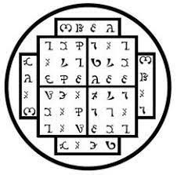
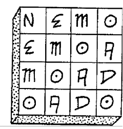
RITUALES ENOQUIANOS
Las ceremonias de magia propiamente dichas no son más que intentos organizados y concentrados de imponer nuestra voluntad en ciertas partes del Cosmos.
Aleister Crowley, Los Comentarios de LY
Los trece rituales siguientes que terminan este manual sintetizan todos los elementos principales de la Magia Enochiana. Todos los talismanes armas y fórmulas de la Magia Enochiana pre sentadas en este libro se utilizan en estos rituales. La ejecución exitosa otorgará una amplia gama de poderes y conocimientos mágicos. El grado de poder mágico obtenido será proporcional al grado de éxito.
Cada uno de estos rituales está diseñado para ser realizado por un único mago. Cada ritual combina meditaciones, visualizaciones, acciones y discursos para que todos sus diversos componentes (es decir, el cuerpo, la palabra y la mente) se comprometan juntos en una simulación dinámica de las experiencias reales de la Visión del Espíritu en los Aethyrs. No servirá de nada limitarse a los movimientos y discursos físicos. Tu mente es la llave de oro que puede abrir las puertas de los Aethyrs. Para ello, debes ser capaz de emplear tu imaginación mágica. Realiza estos rituales a solas. Silencia tu mente racional y lógica por un tiempo. Tómate tu tiempo. No podrás concentrarte adecuadamente si estás preocupado al mismo tiempo.
Comienza lenta y cuidadosamente cada ritual con los Rituales de Destierro del Pentagrama y del Hexagrama como se ha indicado anteriormente en este manual. Esto no sólo preparará tu círculo, sino que (y esto es mucho más importante) preparará tu mente y el cuerpo para el ritual que viene. Para ejecutar estos rituales eficazmente es necesario un cierto grado de experiencia mágica. Practique los ejercicios dados para el desarrollo del cuerpo sutil y el Mahamudra antes de realizar estos rituales. Estudia cuidadosamente cada ritual antes de ejecutarlo. Si los resultados son pobres, vuelve a practicar los ejercicios para un buen desarrollo mágico. No esperes tener éxito completo en el primer intento. Este es el trabajo de muchas vidas y no es algo que deba apresurarse. En cada caso tendrás que adquirir y cargar tus propios talismanes. Los talismanes pueden ser tan elegantes o tan simples como te sientas cómodo. Para cargar un talismán, sostélo en tus manos y concentrate en el significado/idea que hay detrás de él. Haz que la fuerza/energía que hay detrás de la idea fluya a través de tu mente hacia tu cuerpo y a través de él hacia el talismán como una corriente psíquica. Un talismán es la encarnación física de la idea/entidad que representa. En los rituales, tu mente y tu cuerpo deben cooperar al unísono. Tu cuerpo es una cristalización en la materia de tu mente. Así que tu talismán es una cristalización en la materia de la energía/ fuerza psíquica que hay detrás. A medida que tu mente se concentra/enfoca en las ideas específicas del rituall , tu mente se concentra/enfoca en las ideas específicas de la realidad, tus manos se dirigen a la manifestación física de esa idea. De este modo, todo tu ser entrará en el ritual y su efectividad será mucho mayor que si tu mente o tu cuerpo estuvieran participando solos.
RITUAL DE TEX
Este ritual está destinado a los principiantes en el Magia Enochiana. Simula un viaje en la Visión del Espíritu al Aethyr más bajo, TEX (Teh-etz).
PARTE 1. Preparación. Ponte la túnica blanca. Consagra un círculo. Sostén tu Espada en tu mano derecha. Deja tu cuerpo y entra en tu Cuerpo de Luz (imagina que estás en tu cuerpo sutil y no en tu cuerpo físico).
PARTE 2. Mira hacia el Norte y levanta tu Espada ante ti. Traza el sigilo de TAOAGLA:
Observa este sigilo resplandeciente de un vívido color azul y luego di,
NOR-M OLAP-SA-LUKAL
NOR-M OLAP-SA-LUKAL (Noh-rah-Moh-lah-peh-Sah-Lu-kah-leh)
Oh poderoso TAOAGLA, (Tah-oh-ah-geh-lah) Cuya orden es AMBZ: (A h-meh -beh-zod) Ven y quita mi karma.LAMA BABALON (Lah-mah Bah-bah-loh-en)
Mientras vibra el nombre TAOAGLA, siente tus cargas kármicas para ser entregadas a este Gobernador de TEX. Medita durante unos instantes sobre el significado de que tu karma pasado sea expresado en las oscuras regiones del norte de TEX.
PARTE 3. Mira hacia el Este y levanta tu Espada ante ti. Traza el sigilo de GEMNIMB:
Observa este sigilo resplandeciente de un vivo color azul y luego di,
IAIADIA-SA-RAAS
IAIADIA-SA-RAAS (Ee-ah-ee-ah-dee-ah-Sah-Rah-ah-seh)
Oh poderoso GEMNIMB, (Geh-em-nee-em-beh) Cuya Palabra es ABFMA: (Ah-beh-feh-mah) Ven llévate mi deseo. LAMA BABALON (Lah-mah Bah-bah-loh-en)
Mientras vibras el nombre de GEMNIMB, siente tus egoístas deseos como se entregan a este gobernador de TEX. Medita durante unos momentos sobre el significado de tus deseos personales que se expresan en las regiones aéreas del este de TEX.
PARTE 4. Mira hacia el Sur y levanta tu Espada ante ti. Traza el sigilo de ADUORPT:
Observa este sigilo resplandeciente de un vivo color azul y luego di,
KIKLE-ATH-BABAGE
KIKLE-ATH-BABAGE (Ke e-keh-leh-Ah-teh-heh-Bah-bah-geh) Oh poderoso ADUORTO, (Ah-du-oh-rah-peh-teh) Cuya Palabra es el Silencio; Ven y quita mi ignorancia. LAMA BABALON (Lah-mah Bah-bah-loh-en)
Mientras vibra el nombre ADUORPT, siente tu inquieto y siempre parpadeante cerebro/mente como se entregua a este Governador de TEX. Medita te para unos momentos sobre el significado de que tus pensamientos se expresen en las ardientes regiones del sur del TEX.
PARTE 5. Mira hacia el Oeste y levanta tu Espada ante ti. Traza el sigilo de DOZIAAL:
Observa este sigilo resplandeciente con un color azul vivo y luego di,
MIKA-OMP-SA-SOBOLN
MIKA-OMP-SA-SOBOLN (Mee-kah-Oh-meh-peh-Sah-Soh-boh-leh-neh) Oh poderoso DOZIAAL; (Doh-zodee-ah-ah-leh) Cuya palabra es AN; (Ah-neh) Ven y quita mis limitaciones. BALT (Bah-leh-teh) ZA-TOL (Zodah-Toh-leh) LAMA BABALON (Lah-mah Bah-bah-loh-en)
Mientras vibra el nombre DOZIAAL, creconoce todas sus auto restricciones impuestas por ti mismo para que se entreguen a este Gobernador de TEX. Medita por unos momentos sobre el significado de tus limitaciones que se expresan en las aguas de las regiones occidentales de TEX.
PARTE 6. Coloca tu Espada ante ti en el Altar. Con las manos extendidas ante ti, di,
Por el poder de BALTOH pronunciado siete veces, he ganado el dominio sobre TEX. Por el poder de la Palabra de TAOAGLA me elevo sobre las Fuerzas del Karma.
Por el poder de la Palabra de GEMNIMB, me elevo sobre las Fuerzas del Deseo. Por el poder de la palabra de ADUORP, me elevo por encima de las Fuerzas de la Ignorancia. Por el poder de la Palabra de DOZIAAL, me elevo por encima de las Fuerzas de la Restricción. Me elevo arriba a través de las cuatro regiones radiantes de TEX. Conservo la plena conciencia en todo momento. Que nunca olvide los Reinos de TEX y siempre mantenga la Sabiduría de los Cielos.
PAPNORLONDOH-TEX
PAPNORLONDOH-TEX (Pah-peh-noh-ar-Loh-en-doh heh-Teh-etz)
ANANAEL-PIRIPSOL
ANANAEL-PIRIPSOL (Ah-nah-nah-el-Pee-ree-peh-soh leh)
¡TEX! ¡TEX! ¡TEX! ¡TEX!
Que las cuatro fuentes del cielo derramen los Siete para formar los Once.
PARTE 7. Imagínate sin karma (es decir, sin culpa o arrepentimiento), sin deseos egoístas de ningún tipo, en plena conciencia y sin limitarse de ninguna manera. Permanezca en este estado todo el tiempo que pueda.
PARTE 8. Vuelve a tu cuerpo físico. Destierre las fuerzas que le rodean y anota los resultados en tu Diario.
RITUAL ENOCHIANO DE IAO
Este ritual es para los magos de todos los niveles de la Magia Enochiana. Emplea la fórmula de IAO. Realízalo para transmutar tus deudas kármicas dejando que se proyecten desde ti y luego disipadas. El ritual invoca primero una corriente femenina y luego utiliza la corriente masculina de MAZ para equilibrar y complementar.
PARTE I. La preparación. Cargue sus talismanes para IAO, ZTZTZT, NIAKOD y el cuadrado mágico de LAHALASA. Pónte de pie con tu túnica blanca. Coloca tu Copa y Espada (o Daga) en tu Altar. Sosten tu Vara en tu mano derecha. Consagra un círculo con los Rituales de Destierro del Pentagrama y del Hexagrama. Sustituye la Varita por una Espada o una Daga.
PARTE 2. La Cruz. Levante su arma hacia arriba delante de usted y diga,
IA.DNAH (Ee-ah-deh-nah-heh)
Baja tu arma hacia el suelo trazando una línea vertical blanca y diga,
ATH (Ah-teh-heh)
Traza una línea horizontal blanca de izquierda a derecha que intercepte la línea horizontal en su centro y formando una cruz blanca brillante blanca y diga,
OLORA (Oh-loh-rah)
Observa esta cruz blanca brillando claramente ante ti.
PARTE 3. Subiendo a través de los Aethyrs. Reemplaza tu Espada o Daga con el Talismán de NIAKOD. Sosténgalo ante usted y diga,
Por el poder imperante de NIAKOD, (Nee-ah-kohdeh) En el vacío infinito de ZAX; (Zod-ahtz) paso a salvo más allá del reino de las tinieblas del poderoso KHORONZON (Keh hoh-roh-en-zodoh-en) Y llego a la mística MAZ, (Mah-zod) Donde el Seis está en el Nueve. Que el Desvelador de todos los Misterios vuelva y me guíe ahora al Templo de la Urna.
Mientras dices estas palabras, imagínate elevándote lentamente por encima del Abismo en el 6º Aethyr, MAZ. Déjate elevar a lo alto por encima de la cruz blanca.
PARTE 4. La Urna. Con tus sentidos mágicos,oberva la urna plateada de MAZ flotando sin suspender ante ti. Visualiza la Urna claramente. Que sea de mercurio fijo. Mantén tu Copa hacia la Urna mística y di, Contempla la Urna de la Culpa y la Gracia en el mismo centro del Espacio Infinito.
PARTE 5. La Nube. Deja que se forme una nube oscura sobre la Urna/ Crea esta nube usando todo tu Karma pasado. Deja que tus culpas y tus fracasos y tus males hechos a otros dejen tu aura y se alojen en esta nube. Deja que la nube oscura se llene de tu Karma. Continúa hasta que tu cuerpo esté completamente vacío como como tu Copa está vacía. Con el poder de tu Voluntad Mágica, deja que el ruido que es tu karma, descienda lentamente a la Urna.
PARTE 6. El Consumo del Karma. Sostenga el Talismán de IAO ante ti en tu mano derecha y sostén tu Talismán de LAHALASA en tu mano izquierda y di, I, A, 0 (Ee Ah Oh) IADNAH ATH OLORA
(Ee-ah-deh-nah-heh Ah-teh-heh Oh-loh-rah) Contempla, las obras más elevadas del hombre. IADNAHMAD AR OLLAR (Ee-ah-deh-nahheh-mah- deh Ah-rah Oh-leh-lar-rah He aquí que el dios de tu dios es el Sol del Hombre.
IAD AAI OIAD
IAD AAI OIAD (Ee-ah-deh Ah-ah-ee Oh-ee-ah-deh) Y he aquí que el dios que llevas dentro es un dios. I,A,O LAHALASA (Lah-hah-lah-sah) Que el poder penetrante de las cuatro Grandes Cruces Consuma mi Karma-Nube.
LAHA-ALAH-SALA- ASAL
LAHA-ALAH-SALA- ASAL (Lah-hah-Ah-lah-heh-Sah-lah-Ah-sah-Ieh) Que sea así ahora y siempre. LAHALASA (Lah-hah-lah-sah) Que el poder de estas palabras consuma la nube de tu karma pasado. Deja que la nube sin la urna se queme completamente hasta que sólo quede un pequeño montón de polvo en la Urna. Mira esto con mucho cariño.
PARTE 7. El Perdón. Sostén el Talismán de ZTZTZT en tu mano derecha y tu Copa en la mano izquierda y di, Por el poder perdonador de IAO (Ee-ah-oh) y de ZTZTZT (Zod-teh-zod-teh-zod-teh) KNILA SAH TALHO (Keh-nee-lah Sah-heh Tah-leh-hoh) Contemplo la Sangre en la Copa. Y es la Vida de los Santos. Que mi copa se llene ahora Con el Amor bajo la Voluntad. Contempla, la Urna que guarda mi polvo. He aquí, la Copa que contiene mi confianza. IA-IAL-A-ZOKH (Ee-ah-Ee-ah-Ieh-Ah-Z odoh-keh-heh) Consumo mi pasado con la verdad. ZTZTZT (Zod-teh-zod-teh-zod-teh)
PARTE 8. El regreso. Con tu Espada o Daga traza el sigilo de ZTZTZT en blanco resplandeciente ante ti y deja que este sigilo destierre la Urna. Deja que regreses por debajo del Abismo.
PARTE 9. El destierro. Con tu varita, destierra las fuerzas (inteligentes y de otro tipo) que hayas atraído durante esta operación con los rituales de destierro del Pentagrama y del Hexagrama.
RITUAL ENOQUIANO DE LA SACERDOTISA DE LA ESTRELLA DE
RITUAL ENOQUIANO DE LA SACERDOTISA DE LA ESTRELLA DE PLATA
Este ritual está diseñado para el mago intermedio y experimentado. Simula los procesos iniciáticos que se encuentran en el 19º Aethyr POP. Si se realiza correctamente, se puede conseguir un proceso de iniciación característico de POP.
PARTE 1. La preparación. Ponte tu bata blanca. Carga tus Talismanes para IAO, QAA y TOOG. También haz y carga talismanes para los cuadrados mágicos de ROR y GRAA. Coloca tu Copa y tu Pentaculo en tu Altar. Sostensu Varita en tu mano derecha y consagra un círculo con los Rituales de Destierro del Pentagrama y Hexagrama.
PARTE 2. La Invocación. Levante el Talismán de IAO en su mano izquierda, tu Copa en la mano derecha y di,
IAO, ELO-TALHO
IAO, ELO-TALHO (Ee-ah-oh, El-oh-Tah-leh-hoh)
La obra más elevada es el hombre
IAO, ELZAP TALHO
IAO, ELZAP TALHO (Ee-ah-oh, El-zodaah-peh Tah-leh-hoh)
Adoro en el cuerpo las cosas del cuerpo. Adoro en la mente las cosas de la mente. Adoro en el espíritu las cosas del espíritu. IAO, (Ee-ah-oh) TALHO (Tah-leh-hoh)
PARTE 3.El Árbol. Entra en tu Cuerpo de Luz. Deja que se vacíe y haz que pase a través de las cuatro Atalayas de Tierra, Agua, Aire y Fuego, una a la vez. Imagina una cruz dorada ante ti. Mientras observas, deja que se convierta en una pequeña puerta estrecha. Entra lentamente por esta puerta. Mírese de pie ante una amplia colina sobre la que se encuentra un viejo y nudoso Árbol. Deja que la atmósfera que te rodea esté cargada de el deseo de de vida y de muerte mezclados como si una gran batalla se hubiera recientemente librado bajo el árbol.
PARTE 4. La vida. Conoce el Árbol como el Árbol de la Vida. Sostén tu Talismán de QAA en tu mano izquierda y tu Talismán de ROR en mano derecha. Enfréntate al Árbol y di
OM-QUASAHI-ATH-AR
OM-QUASAHI-ATH-AR (Oh-meh-Que-ah -sah-hee-Ah-teh-heh-Ah-rah) Sé deleite en las obras del sol. OMA-DAMPLOZ-OLPRT (Oh-mah-Dah-meh-peh- loh-rod-Oh-leh-par-teh)
Conozco las sombras de la luz. Al final de toda destrucción se encuentra la creación Porque el fin de la muerte es el nacimiento de la vida. ROR-ODO-ROR (Roh ar-Oh-doh-Roh-ar) TOANT TOTO-QAA-KAL (Toh-ah-en-teh Tohtoh-Qah-ah-Kah-leh) El Sol es el abridor; El Sol es el Amor, Los ciclos del Sol Son la creación y la solidificación. Sostén tu Vara ante ti y di, KAB-HOM (Kah-beh-hoh-meh) Contempla, la Vara de la Vida. Siente la vida mágica que yace encarnada en tu Vara.
PARTE 5. Detrás del Árbol se encuentra un vasto Desierto. Enfréntate a este ligar interminable y sin vida. Sostén los Talismanes de TOOG y GRAA en tus manos y di, Que los tres gobernantes, TORZOXI, (Toh-ra- zodoh-tree) ABRAIOND, (Ahbar-ahee-oh-en deh) OMAGRAP, (Oh mah-gar-ah-peh) Iniciadme en el Misterio de POP (Poh-peh) TAB GES-ORS-OXEX-GRAA(Tah-beh-geh-seh-Oh-ar-seh-Ohtz-etz- Geh-rah-ah) Al final de toda la creación está la destrucción Porque el fin de la vida es el nacimiento de la muerte.
GRAA-RA-OR-A-ORS-AR-SA-A
GRAA-RA-OR-A-ORS-AR-SA-A (Geh-rah-ah-Rah-Oh-ar-Ah-Oh-ar-seh-Ah-ra Sah-Ah) Contempla la luna, el Sol Oscuro, Y he aquí que conozco la Oscuridad Que está detrás del Sol. Sostén tu Pantacle ante ti y di,
KA-KAKOM BABALON
KA-KAKOM BABALON (Kah-Kah-koh-meh Bah-bah-Ioh-en) Contempla la vigorizaciónn de BABALON (Bah-bah-loh-en). Conozco la lucha que comprende la vida.
DRJX-L-IOU DAX
DRJX-L-IOU DAX (Deh-ree-etz-El-Ee-oh-ue-Dahtz) El Alma Suprema yace en los lomos. Conozco el fuego que comprende el deseo.
PARTE 6. Isis. Visualiza una gigantesca figura de la diosa Isis, joven y hermosa ante ti. Mírala de pie con un pie descalzo en la hierba fresca y húmeda cerca del Árbol y el otro en la arena caliente y arena del desierto. Que su larga cabellera fluya al viento. Deja que irradie amor y una paciente aceptación.
PARTE 7. El discurso. Colócate frente a Isis (Asi) con tu varita en tu mano derecha y tu Copa en la mano izquierda y di, Asi, he visto tu Luz
Asi, he visto tus tinieblas. Tú eres el Dador de la Vida Y el Dador de la Muerte, Isis, la gobernante de POP (Poh-peh) Isis, DAZIS-POP (Dah-zodee-seh-Poh-peh) Eres el Ángel de la Luna. Tú eres el Amor de lo Desconocido. Eres el dolor ciego en el corazón del hombre ISIS, DAZIS-POP (Dah-zodee-seh-Poh-peh) Eres la Sacerdotisa de la Estrella de Plata, La Sacerdotisa de la Estrella de Plata. THIL-QUASAHI (Tehhee-leh-Que-ah-sah-hee) Tú eres Isis, la fuente infinita del deleite.
PARTE 8. Cierre. COmprende que ella es una parte de ti mismof. Permanece en en su presencia el mayor tiempo posible y luego vuelve a tu cuerpo físico. Utiliza tu Varita para ejecutar los Rituales de Destierro del Pentagrama y el Hexagrama.
RITUAL DE LA PIRÁMIDE DE ENOCHIANA
Este ritual está diseñado para el mago experimentado. A los principiantes se les aconseja estudiar cuidadosamente el ritual, sus significados simbólicos y las correspondencias gematricas antes de practicarlo. Simula los procesos iniciáticos que se encuentran en el 18º Aethyr, ZEN, e invocará la fuerte corriente masculina que impregna la Bóveda de Zen. Todos los nombres y los patrones enochianos deben ser vibradoss adecuadamente durante la ejecución de este ritual.
PARTE 1. Preparación. Ponte la túnica negra. Cargue sus Talismanes para MZKZB, VOVIN, IVITDT, VRELP, ZTZTZT y ILIATAL Coloca tu Copa, Pentaculo, Espada y Daga en el Altar ante ti. Coloca también allí un Talismán para cada una de las cuatro Atalayas que cargalas tú mismo. Por último, cargue un Talismán del Cuadrado Mágico de AMMA. Sostenga su Vara en su mano derecha y consagre un círculo con los Rituales del Pentagrama y del Hexagrama.
PARTE 2. Colocate frente a la Atalaya de la Tierra en el Norte con el Talismán de MZKZB en tu mano izquierda y tu Espada en tu mano derecha. Con tu Espada, traza el sigilo de MZKZB en negro ante ti y di,
MZKZB (Em-zod-keh-zod-beh) He aquí que las iniquidades del pasado son ahora las alegrías de la Justicia.
TOANTAH-VAOAN-IAL- TOTO
(Toh-ah-neh-fah-heh-Vah-oh-ah-neh- Ee-ah-leh-Toh-toh) La lujuria de la verdad que consume los ciclos es el poder de MZKZB.
PARTE 3. Todavía mirando al Norte, visualiza una enorme pirámide de piedra como la de Keops, ante ti. Ponte de cara a la única apertura hacia ella. Que esta abertura sea un cuadrado negro que conduce hacia abajo en las entrañas de la Pirámide. Sosten el Talismán de la Atalaya de la Tierra en tu mano izquierda y tu Pentaculo en tu mano derecha y di, IKZHIKAL, (Ee-keh-zod-hee-kal) Gran Rey de la Tierra, ven, acepta mi ofrenda.
O-KAOSGO NANTA
O-KAOSGO NANTA (Oh-Kah-oh-seh-goh Nah-en-tah) De la Tierra a la Tierra, NAMBAOMI (Nah-bah-oh-ranee) ZAFASAI (Zodah-fah-sahee) VALPAMB (Val-pah-meh-beh) Vosotros, gobernantes del ZEN, (Zod-en) Venid, aceptad mi cuerpo. PATRALX, (Pah-teh-rah-letz) Piedra de Piedra. PATRALX. (Pah-teh-rah-letz)
PARTE 4. Deja que tu cuerpo físico sea entregado al Rey de la Tierra. Entra en tu Cuerpo de Luz y entra en la Pirámide a través de la apertura. Deja que tu Cuerpo de Luz descienda por el pasaje inclinado hasta que entres en una cámara profunda debajo de la Pirámide. En el lado oeste de esta cámara hay un profundo estanque de agua. Mira hacia la piscina. Sosten el Talismán de la Atalaya del Agua en yu mano izquierda y tu Copa en la mano derecha y di, RAAGIOSL, (Rah-ah-gee-oh-sel) Gran Rey del Agua, ven, acepta mi ofrenda.
ZJN-A HKOMA
ZJN-A HKOMA (Zodee-en-Ah-Heh-koh-mah) Agua a Agua. Aquí en las Ocho Cámaras Exteriores del ZEN, Ven, acepta mi cuerpo.
ZUMVI-PARM TALHO-A
ZUMVI-PARM TALHO-A (Zodue-em-vee-Pah-rameh Tah-leh- hoh-ah) Que mi Copa se desborde. Sostén el Talismán de VRELP ante el estanque y di, Por el poder de VRELP (Vah-ra-el-peh) te doy este cuerpo Y paso a través Z I N - L A I A D , (Zodee-en-Lah-ee-ah-deh) Ahora paso a través de las Aguas de los Secretos de la Verdad.
PARTE 5. Que tu cuerpo astral sea entregado al Rey del Agua. Asume tu cuerpo mental y pasa por encima del estanque. Deja que tu cuerpo mental suba por un estrecho pozo cortado en la roca de la Pirámide. Que se eleve a una
habitación luminosa y espaciosa. Deja que la pared este muestre un pequeño pozo de aire cortado hacia el exterior de la Pirámide. Enfréntate al pozo de aire. Sosten el Talismán de la Atalaya del Aire en tu mano izquierda y tu Daga en tu mano derecha y di, BATAIVAH, (Bah-tah-ee-vah-heh) Gran Rey del Aire, ven, acepta mi ofrenda.
GIGIPA-GA EXARP,
GIGIPA-GA EXARP, (Gee-gee-pah-Gah Etz-ar-peh) De aire a aire. Aquí en las Diez Cámaras Internas del ZEN, Ven, acepta mi cuerpo. MIKALZO-ZrLDAR (Mee-kah-Ieh-zodohZodee-leh-dar) Mío es el poder de volar. Levanta el Talismán de VOVIN ante el pozo de aire y di,
VOVIN TORZU-ANGELARD
VOVIN TORZU-ANGELARD (Voh-vee-neh Toh-ra-zodue-Ah-neh-gel-ar-deh) El Dragón se eleva por encima de sus pensamientos. Te doy este cuerpo y paso por SALMAN-LUKIFTIAS, (Sah-leh-mah-neh-Lue-kee-feh-tee-ah-seh) Ahora paso a través de La Casa de la Luminosidad.
PARTE 6. Deja que tu cuerpo mental se entregue al Rey del Aire. Asume tu cuerpo espiritual y pasa hacia arriba a través de un estrecho pozo en el techo. Sube hasta que llegues a una cámara roja y ardiente en el centro geométrico de la Pirámide. Que haya un sarcófago de piedra a lo largo de la pared sur. Que el sarcófago no tenga tapa y que contenga la Llama Eterna. Colocate enfrentee de la llama en el sarcófago. Sostén el Talismán de la Atalaya del Fuego en tu mano izquierda y tu Varita en la mano derecha y di, EDLPRNAA, (Eh-del-par-nah-ah) Gran Rey del Fuego, ven, acepta mi ofrenda.
O-PRGE BITOM,
O-PRGE BITOM, (Oh-Par-geh Bee-toh-meh) Fuego a fuego. Aquí dentro del Parapeto de Cinco Paredes de la Bóveda del ZEN, Ven, acepta mi cuerpo.
IAL-A MALPRG OBZA,
IAL-A MALPRG OBZA, (Ee-ah-leh-Ah Mah-leh-par-geh Oh-beh-zodah) Que seaconsumido por las llamas ardientes de la Dualidad. Sostén el Talismán de VITDT ante la Llama Eterna y di,
IVITDT, LIALPRT MA-OF-FAS,
IVITDT, LIALPRT MA-OF-FAS, (Ee-vee-tehdeh-teh, Lee-ah-Ieh-par-teh Mah-Ohfeh-Fah-seh) La primera llama no se puede medir; Un fuego purificador que hay que atesorar. Te doy este cuerpo y paso a través de POAMAL-PRGE-ZEN (Poh-ah-mah- Ieh-Paz-geh-Zod-en) Ahora pasoa través de El Palacio del Fuego Sacrificial.
PARTE 7. Deja que tu cuerpo espiritual se entregue al Rey del Fuego. Sientete a ti mismo como un sin forma, sin cuerpo y sin conciencia. Sube directamente a través de las piedras oscuras del techo. Deja que este ascenso se abra en una pequeña cámara silenciosa en el corazón de la Pirámide. Que esta cámara esté vacía, sin entradas o salidas. Sosten el Talismán de ZTZTZT en tu mano izquierda y el Talismán de ILIATAI en tu mano derecha y di, Por el poder de ZTZTZT (Zod-teh-zod-teh-zod-teh) Y por el poder de ILIATAI (Ee-lee-ah-tah-ee) Contempla la Bóveda de los Siete Lados del ZEN. Mi cuerpo yace en la Atalaya de la Tierra. Mis emociones se encuentran en la Atalaya del Agua. Mis pensamientos se encuentran en la Atalaya del Aire. Mi vida se encuentra en la Atalaya del Fuego. Así soy verdaderamente El Hijo del Universo. Así soy verdaderamente El Padre del Universo y la fuerza de ILIATAI (Ee-lee-ah-tah-ee) yo me elevo hasta el Padre. Por la virtud de ZTZTZT (Zod-teh-zod-teh-zod-teh) yo desciendo al Hijo.
PARTE 8. Sostén el Talismán de AMMA ante ti y di: Contempla el Vacío de la Forma es el Fondo de
ZEN-IF-ZEN
ZEN-IF-ZEN (Zod-en-Ee-peh-Zod-en) He aquí el sacrificio que no es un sacrificio.
OTHIL-A-LUSDI TELOKH,
OTHIL-A-LUSDI TELOKH, (Oh-teh-hee-Ieh-Ah-Lue-seh-dee Teh-Ioh-keh-heh) He aquí que pongo mispies en la muerte. En el Vacío estáescrito: Maldita sea la forma. En la Forma está escrito: Maldito es el Vacío.
ZEN-I-T-ZEN,
ZEN-I-T-ZEN, (Zod-en-Ee-Teh-Zod-en) He aquí el sacrificio que es realmente un sacrificio.
IPSI-A HOM TELOKH,
IPSI-A HOM TELOKH, (Ee-peh-see-Ah Hoh-meh Teh-loh-keh-heh) He aquí que yo uno la vida y la muerte juntas.
PARTE 9. Alcanza el Samadhi y mantenlo durante el mayor tiempo posible (que parezca que son tres días y tres noches).
PARTE 10 . Desciende a través de la piramide y reanuda cada uno de sus cuerpos mantenidos al cuidado por protector por los Reyes de las Atalayas.
PARTE 11 . Limpia la zona con los Rituales de Destierro del Pentagrama y Hexagrama.
RITUAL DEL DRAGÓN ENOCHIANO
Este ritual es para aquellos Magos Enochianos que buscan el título de Dragón Mágico. Se basa enteramente en la fórmula de VOVIN. Al ejecutar este ritual, asegúrese de vibrar cada palabra enochiana correctamente.
PARTE 1. La preparación. Ponte tu túnica negra. Cargue sus talismanes para las fórmulas de VOVIN, VRELP, TOOG, NIAKOD ILIATAI y ZTZTZT. Coloca éstos y tus armas en tu Altar junto con un talismán para cada uno de los cuatro cuadrados de las Atalayas y un talismán del cuadrado mágico de BABALON. Sostén tu Varita en tu mano derecha y consagra un círculo con los Rituales de Destierro del Pentagrama y del Hexagrama.
PARTE 2.Tierra. Colocate frente la Atalaya de la Tierra en el Norte con tu Pentaculo en la mano derecha y tu Talismán de NANTA en la mano izquierda. Fija tu mente en la Atalaya de la Tierra y di,
NANTA-A-NOAN-NONKP-TA-KAL-AN-PLA
NANTA-A-NOAN-NONKP-TA-KAL-AN-PLA (Nah-en-tat-Ah-Noh-ah-neh-Noh-.en-keh-peh-Tah-Kah-leh-Ah-neh-Peh-lah)
Contempla la Tierra: El lugar donde mis pensamientos y emociones se solidifican. Traza un pentagrama de facturación negro y un hexagrama de Tierra.
PARTE 3.Agua. Enfréntate a la Atalaya del Agua en el Oeste con tu Copa en la mano derecha y tu Talismán de HKOMA en la mano izquierda. Fija tu mente en la Atalaya del Agua y di,
HKOMA-KNILA-O-IODI-M L-DO-T-AAI-TA
HKOMA-KNILA-O-IODI-M L-DO-T-AAI-TA (Heh-koh-mah-Keh-nee-Iah-Oh-Ee-oh-dee-Em-El-Doh-Teh-Ah-ah-ee-Tat)
He aquí el agua:
Donde mi nombre original es la propia sangre que fluye dentro de mí. Traza un Pentagrama de Invocación azul y un Hexagrama de Agua.
PARTE 4. Aire. Enfréntate a la Atalaya del Aire en el Este con tu daga en la mano derecha y el talismán de EXARP en la mano izquierda. Fija tu mente en la Atalaya del Aire y di,
EXARP-XFA-IO-AAI-TI-RIT-OL-POILP
EXARP-XFA-IO-AAI-TI-RIT-OL-POILP (Etz-ar-pet-Etz-efah-Ee-oh-Ah-ah-ee-Tee-Ree-teh-Oh-let-Poh-ee-let-pet)
Contempla el aire: Donde lo que está dentro se vuelve hacia afuera con misericordia y con discriminación. Traza un pentagrama de invocación amarillo y un hexagrama de Aire.
PARTE 5. El Fuego. Enfréntate a la Atalaya del Fuego en el Sur con su Varita en la mano derecha y su Talismán de BITOM en tu mano izquierda. Fíjate en la Atalaya del Fuego y di,
BITOM-IA IAL-T-IADP-OAD-PR-MLPRG
BITOM-IA IAL-T-IADP-OAD-PR-MLPRG (Bee-tot-metEe-ah-Ee-ah-leh-Teh-Ee-ah-deh-peh Oh-ah-dehPar-Em-el-par-get)
Contempla el fuego: Donde las llamas ardientes se entrelazan con la divinidad y todo se se consume con la Verdad. Traza un Pentagrama de Invocación rojo y un Hexagrama de Fuego.
PARTE 6. Movilidad. Sostén el Talismán de TOOG ante ti. Enfoca tu mente en el 24º Aethyr y di, Por el poder de TOOG (Toh-oh-geh) entro en el Aire de NIA (Nee-ah). Me subo al Carro de los Dioses, Movilidad.
Parte 7. Desprendimiento. Sostén el Talismán de VRELP ante ti. Enfoca tu mente en el 14º Aethyr y di, Por el poder de VRELP (Var-el.-peh) entro en el Aethyr de VTA (Veh-tah). Descanso en la Ciudad de las Pirámides, y paso con Desapego.
PARTE 8. El conocimiento. Sostén el Talismán de NIAKOD ante ti. Enfoca tu mente en el 10º Aethyr y di, Por el poder de NIAKOD (Nee-ah-koh-deh) entro en el Aethyr de ZAX (Zod-ahtz) Contemplo el rostro del poderoso KHORONZON, (Keh-hoh-roh-en-zod-oh-en)
Y paso con el Conocimiento.
PARTE 9. La comprensión. Sostén el Talismán de ILIATAI ante ti. Enfoca tu mente en el 8º Aethyr y di, Por el poder de ILIATAI (Ee-lee-ah-tah-ee) entro en el Aethys de ZID (Zodee-deh). Me comunico con mi propio Santo Ángel de la Guarda, Y paso con el Entendimiento.
PARTE 10. Compasión. Sostén el Talismán de ZTZTZT ante ti. Enfoca tu mente en el 7º Aethyr y di, Por el poder de ZTZTZT (Zod teh-zod-teh-zod-teh) entro en el Aethyr de DEO (Deh-oh). Abrazo el cuerpo de BABALON (Bah-bah-loh-en) Y paso con Compasión.
PARTE 11 . La Diosa. Sostén el Talismán de BABALON. Enfoca tu mente en la diosa BABALON como un reflejo de NUIT y di, BABALON (Bah-bah-loh-en) Hija del Espacio Infinito,
ADAN-ODO-BAHA-NOQ
ADAN-ODO-BAHA-NOQ (Ah-dah-neh Oh-doh-Bah-hah-Noh-qeh) doy obediencia a tu naturaleza receptiva y te invoco como tu fiel servidor. ANANAEL-LONSA-MI (Ah-nah-nah el-Lohen-sah-Mee) Tú eres la Sabiduría Secreta, el poder Inherente a todos los seres. ODO-EMNA-NOQ-SiLAD (Oh-doh-Em-nah-Noh-qeh-El-Ee-ah-deh) Estoy abierto a ti, oh Diosa. Soytu siervo favorito.
PARTE 12. El Dragón. Sostén el Talismán de VOVIN ante ti. Enfoca tu mente en las Atalayas y Aethyrs como una totalidad y di,
VPAAH-OXI-VABZIR NISAN-IN
VPAAH-OXI-VABZIR NISAN-IN (Veh-pah-ah-heh-Oh-tzee-Vah-beh-zodee-ar-Nee-ee-sah-neh-Ee-neh) He aquí que las alas del águila Me llevan a través del Vacío. Recorro las Atalayas y los Aethyrs.
INSI-A-LAMA-VOVIN-AX-L -IAL-PRT
INSI-A-LAMA-VOVIN-AX-L -IAL-PRT (Ee-neh-see-Ah-Lah-mah-Voh-vee-neh-Ahtz-El-Ee-ah-leh-Par-teh) Recorro el Camino del Dragón Cuyo nombre es la Primera Llama. VOVIN (Voh-vee-neh)
BABALON-L-SONF-AAI
BABALON-L-SONF-AAI (Bah-bah-loh-en-II-Sohneh-feh-Ahah-ee) VOVIN (Voh-vee-neh) Véase a sí mismo como un Dragón Mágico y mantenga ese concepto durante un tiempo.
PARTE 13. El destierro. Limpia la zona con los Rituales de Destierro del Pentagrama y del Hexagrama.
RITUAL ENOCHIANO DE VRELP
Este ritual es para aquellos Magos Enochianos que buscan entrar con seguridad en la Ciudad de las Pirámides. Se basa enteramente en la fórmula de VRELP. Debe realizarse en la oscuridad, y preferiblemente de noche.
PARTE 1. Preparación. Ponte tu túnica negra. Cargue sus talismanes para las fórmulas de VRELP, KAL e IVITDT. Cargue también sus talismanes para los cuadrados mágicos de NEMO, AMMA y ROR. Coloca éstos y tu Espada en tu A lt a r. Sostén tu vara sobre tu cabeza y consagra un círculo con los Rituales de Destierro del Pentagrama y del Hexagrama.
PARTE 2. Haz vibrar el nombre TEDOAND (Teh-doh-ah-endeh) mientras trazas su sigilo con tu Varita:
Vibra el nombre VIVIPOS (Vee-vee-poh-seh) mientras trazas su sigilo con tu Varita:
Vibra el nombre VOANAMB (Voh-ah-nah-em-beh) mientras trazas su sigilo con tu Varita:
Observa estos tres sigilos brillando en rojo ante ti y di lo siguiente (coloca tu propio Nombre Mágico en los espacios en blanco):
TEDOAND (Teh-doh-ah-en-deh) Demandante de la Obediencia, Ven,
Y quita mi orgullo, porque soy_____________________ VIVIPOS (Vee-vee-poh-seh) Hacedor de Ciclos, Ven, Y quita mi Karma, porque soy____________________________________________ VOANAMB (Voh-ah-nah-em-beh) Vidente de la Relatividad, Ven, Y quita mi Ignorancia, Porque soy ___________________________________________ Que estos mandatos se lleven a cabo.
Observa el orgullo, el karma y la ignorancia como aspectos de tu propio ego y elévate por encima de ellos asumiendo tu Nombre Mágico y tu Personalidad Mágica.
PARTE 3. Sostenga el Talismán de ROR en su mano derecha y el Talismán de AMMA en su mano izquierda y di, He aquí que he combinado Cada cuadrado de AMMA (Ah-meh-mah) Con las tres letras de ROR (Roh-ar) Y he visto así los Diecinueve Caminos. He entregado mi pecado a BAG (Bah-geh) - Y mi Orgullo a VTI (Veh-tee) Y mi trabajo kármico a TOR (Toh-ra). Estoy listo para entrar en VTA (Veh-tah), Y para unirme al espíritu de LIL (Lee-leh) Con la tensión de IKH (Ee-kehheh). En mi mano derecha La Luz del Sol En mi mano izquierda La Oscuridad del Abismo. Dentro de mí, el Sol de mediodía Y el Sol de media noche Son un solo Sol. Estoy listo para entrar en el dominio Del Grande De la Noche del Tiempo.
PARTE 4. Sostén el Talismán de KAL ante ti y di,
KIKLE-AAI LNNIA (Kee-keh-Ieh-Ah-ah-eeEl-en-nee-ah) Por el poder de KAL (Kah-leh) entro en las corrientes de VTA (Veh-tah), yo renuncio a mi Nombre, Me siento en la Ciudad de las Pirámides, Soy uno con los Adeptos, yo renuncio a mi Nombre. Vease a si mismo cómo un punto de conciencia geométrico sin forma o definición. Debes eliminar cualquier rastro de ego o de tu personalidad humana.
PARTE 5. Imagina las cuatro Atalayas en la oscuridad ante ti. Vea cada Atalaya como una región de forma cuadrada que contiene 156 pirámides (12x13). La Cruz Negra que las divide es un Abismo sin fondo. Este cuadro de la Atalaya debe ser visto como una pirámide. Que toda la escena esté envuelta en la oscuridad de la región. Que las cuatro regiones de pirámides estén rodeadas por el interminable Mar de la Negrura. Al contemplar esta escena con tu vista mágica, ve cada pirámide como un Maestro de túnica negra sentado en meditación. Cada una es idéntica a a la otra. Sostenga el Talismán de VRELP y diríjase a los 156x4 maestros y di:
VRAN ROR-ELZAP LAIAD PLAPLI
VRAN ROR-ELZAP LAIAD PLAPLI (Veh-rah neh Roh ra-El-zodah-peh Lah-ee-ahdeh Pel-ah-peh-lee)
Por el poder de VRELP (Var eI-peh) yo contemplo la Ciudad de las Pirámides y los Maestros que la habitan. Verdaderamente la pirámide es un templo de Iniciación. En verdad la pirámide es una tumba. He dejado de lado mi Nombre. he dejado de lado mi deseo. he dejado de lado mi vida. Soy un montón de polvo En la Ciudad de las Pirámides. Cincuenta son las Puertas del Entendimiento; Esta es mi doble naturaleza. Ciento seis son sus estaciones; EOPHAN (Esto me colorea de Dolor.
MI-L DOSIG-KOKASB
MI-L DOSIG-KOKASB (Mee-El Doh-see-geh-Koh-kah-ess-beh)
PARTE 6. Permanece en la Ciudad de las Pirámides todo el tiempo que puedas. Cuando esté listo para irse, sostenga el Talismán de IVITDT ante usted y diga lo siguiente (coloque su propio Nombre Mágico en los espacios en blanco) :
IAL-PRG VAOAN IAL TIBIBP DOALIM TELOK
IAL-PRG VAOAN IAL TIBIBP DOALIM TELOK (Ee-ah-leh-Par-geh Vah-oh-ah-neh Ee-ah-lehTee-bee-beh-peh Doh-ah-lee-meh Teh- loh-keh) Por el poder de IVITDT (Ee-vee-teh-deh-teh);
Recupero mi vida. Recupero mi deseo. Recupero mi nombre. Yo soy_____________ Vuelvo al mundo y a los Caminos del Hombre. Yo soy_____________
Sostén el Talismán de NEMO en tu mano izquierda y tu Espada en tu mano derecha y di,
NEM O-EM OA-M OAD-OADO
NEM O-EM OA-M OAD-OADO (Neh-moh-Eh-moh ah-Moh-ah-deh-Oh-ah-doh) Yo soy NEMO (Neh-moh). Por lo tanto, soy el Señor De la Ciudad de las Pirámides, Y Príncipe en el Palacio del Entendimiento. Con mi penetrante Espada de la Verdad, soy como una Espada Flamígera. Yo caeré a través del Abismo Y apareceré en el cielo de Júpiter como una estrella de la mañana, O como una estrella de la tarde. Y mi luz brillará sobre la tierra y traerá ayuda a los que habitan en las tinieblas del pensamiento y que beben del veneno de la vida.
PARTE 7. Vuelve a tu cuerpo físico y a tu entorno. Utiliza tu varita para ejecutar los rituales de destierro del pentagrama y del Hexagrama.
EL RITUAL DE LAHALASA
El ritual de LAHALASA se basa en las letras que figuran en los cuadrados centrales de las cuatro grandes cruces. Este ritual puede utilizarse para evocar el poder de estas regiones y transformarlo en el mago, que puede utilizarlo para sus propios fines.
PASO 1. Ponte la túnica blanca. Coloca un talismán cargado de LAHALASA en el Altar ante ti. Prepara ocho talismanes, uno para cada una de las plazas centrales de las Grandes Cruces (una pirámide truncada es un talismán adecuado). Prepara cuatro pasteles pequeños (magdalenas, por ejemplo); uno negro y pesado como el de chocolate; uno azul y frío, como el de pudín o nata; uno amarillo y ligero, como el de malvavisco, y uno rojo y caliente, como el de especias o canela. Coloca estos pasteles, convenientemente decorados, en el Altar. Consagra un círculo utilizando los Rituales de Destierro del Pentagrama y del Hexagrama.
PASO 2. Sostén el Talismán del Cuadrado A de la Torre de Vigilancia de la Tierra en tu mano derecha. Sostén el pastel negro en tu mano izquierda. Enfréntate a la Atalaya de la Tierra y di,
MORDIALHTGA (Moh-ar-Dee-ah -leh-Heh-keh-teh-gah) IKZHIKAL (Ee-keh-zod-hee-kal)
Gran Reyde la Tierra Que gobierna la plaza A En la Gran Cruz de la Tierra, Ven a mí.
ALHKTGA (Ah-leh-hek-teh-gah) AKZINOR (Ah-keh-zodee-noh-rah) AHMLLKV (Ah-mel-el-keh-veh)
Poderosos ancianos de la plaza A en la Gran Cruz de la Tierra, Venid a mí. Traed el Poder firme de Acuario y receptividad lunar hacia a mí. Concéntrate en el Cuadrado A de la Gran Cruz de la Tierra. Observael poder que abunda en esta región fluyendo hacia afuera desde la Gran Cruz de la Tierra hacia el pastel negro en forma de una espesa niebla negra.
PASO 3. Sustituye el Talismán del Cuadrado A por el del Cuadrado L y di,
MORDIALHTGA (Moh-ar-Dee-ah -leh-Heh-keh-teh-gah) IKZHIKAL (Ee-keh-zod-hee-kal)
Gran Rey de la Tierra Que gobierna el Cuadrado L En la Gran Cruz de la Tierra, Ven a mí.
LAIDROM (El-ahee-dar-oh-em) LZINOPO (El-zodee-noh-poh) LIIANSA (Elee-ee-ah-ness-ah) Poderosos ancianos del cuadrante L En la Gran Cruz deTierra, Ven a mí. Traed el Poder punzante de Escorpio y el poder de los Maestros de la Tierra, venid a mí. Concéntrate en el Cuadrado L de la Gran Cruz de la Tierra. Vean el poder que abunda en esta región que fluye hacia fuera de la Gran Cruz de la Tierra hacia el pastel negro en forma de una espesa niebla negra.
PASO 4. Sostenga el Talismán del Cuadrado S del centro de la Gran Cruz del Agua en tu mano derecha. Sostén el pastel azul en tu mano izquierda. Enfréntate a la Atalaya del Agua y di,
MPHARSLGAIOL (Em-Peh-heh-Ar-ess-elGah-ee-oh-leh) RAAGIOSL (Rah-ah-gee-oh-sel)
Gran Rey del Agua que gobierna la plaza S En la Gran Cruz del Agua, Ven a mí.
SLGAIOL (Sel-gah-ee-oh-leh) SOAIZNT (Soh-ahee-zoden-teh) SAIINOV (Sah-ee-ee-noh-veh)
Poderosos ancianos del cuadrante S En la Gran Cruz del Agua, Ven a mí. Trae el Poder creativo de Leo y la Energía ilimitada de Marte hacia a mí. Concéntrate en la S cuadrada de la Gran Cruz del Agua. Ve el poder que abunda en esta región fluyendo desde la Gran Cruz del Agua hacia el pastel azul en forma de una niebla azul pálido.
PASO 5. Sustituye el Talismán del Cuadrado S por el del Cuadrado L y di,
MPHARSLGAIOL (Em-Peh-heh-Ar-ess-elGah-ee-oh-leh) RAAGIOSL (Rah-ah-gee-oh-sel)
Gran Rey sobre el Cuadrado L En la Gran Cruz del Agua, Ven a mí.
LSRAHPM (Less-rah-pem) LAVAXRP (el-ah-vahtz-ar-peh) LIGDISA (Elee-geh-dee-sah) Poderosos ancianos de la Plaza L En la Gran Cruz del Agua, ven a mí.
Trae el Poder estabilizador de Tauro Y la Velocidad de Mercurio hacia mí. Concéntrate en el cuadrado L de la Gran Cruz del Agua. Ver el poder que abunda en esta región fluyendo desde la Gran Cruz del Agua hacia el pastel azul en forma de una pálida
PASO 6. Sostén el Talismán del Cuadrado A del centro de la Gran Cruz del Aire en tu mano derecha. Sosten el pastel amarillo en tu mano izquierda. Enfréntate a la Atalaya del Aire y di,
OROIBAHAOZPI (Oh-roh-Ee-bah-Ah-oh-zod-pee) BATAIVAH ( Ba h -t a h -e - v a h -h e h )
Gran Rey sobre la Plaza A, Ven a a mí.
AHAOZPI (Aha-oh-zod-pee) AAOZAIF (Ah-ah-oh-zodah-ee-feh) AVTOTAR (Ah-veh-toh-tah-rah)
Poderosos los ancianos de la plaza A en ea Gran Cruz de Aire, Ven a mí. Trae el Poder punzante de Escorpio y la Armonía de Venus hacia mi.
Concéntrate en el Cuadrado A de la Gran Cruz del Aire. Observa el poder que abunda en esta región que fluye desde la Gran Cruz del Aire hacia el pastel amarillo en forma de una ligera niebla amarilla.
PASO 7. Sustituye el Talismán del Cuadrado A por el del Cuadrado H y di,
OROIBAHAOZPI (Oh-roh-Ee-bah-Ah-oh-zod-pee) BATAIVAH ( Ba h -t a h -e - v a h -h e h )
Gran Rey sobre el Cuadrado H en la Gran Cruz del Aire, Ven a mí.
HABIORO (Hab-bee-oh-roh) HTNORDA (Heh-teh-noh-rah-dah) HIPOTGA (Hee-poh-teh-gah)
Poderosos Ancianos del cuadro H En la Gran Cruz del Aire, Ven a a mí. Trae el Poder creativo de Leo y la Estabilidad de Saturno hacia mi. Concéntrate en la H cuadrada de la Gran Cruz de Aire. Ve el poder que abunda en esta región que fluye desde la Gran Cruz del Aire hacia el pastel amarillo en forma de una niebla de color amarillo claro.
PASO 8. Sosten el Talismán del primer Cuadrado A del centro de la Gran Cruz de Fuego en tu mano derecha. Sostenel pastel rojo en tu mano izquierda. Enfréntate a la Atalaya del Fuego y di,
OIPTEAAPDOKE (Oh-ee-peh-Teh-ah-ah Peh-doh-keh) EDLPRNAA (Eh-del-par-nah-ah)
Gran Rey sobre el primer cuadro A en la Gran Cruz de Fuego, Ven a mí.
AAPDOKE (Ah-ah-peh-doh-keh) ADAEOET (Ah-dah-eh-oh eteh) ANODOIN (Ah-noh-doh-ee-neh)
Poderosos ancianos del primer cuadroa A en la Gran Cruz de Fuego, Ven a a mí. Traed el Poder equilibrador de Libra y la receptividad lunar hacia mi. Concéntrate en el primer Cuadrado A de la Gran Cruz de Fuego. Observa que el poder que abunda en esta región fluye desde la Gran Cruz de Fuego hacia el pastel rojo en forma de una niebla roja ardiente.
PASO 9. Sustituye el Talismán del primer Cuadrado A por el del del segundo Cuadrado A y diga,
OIPTEAAPDOKE (Oh-ee-peh-Teh-ah-ah Peh-doh-keh)
EDLPRNAA (Eh-del-par-nah-ah)
Gran Rey sobre el segundo Cuadrado A En la Gran Cruz de Fuego, Ven a mí.
AAETPIO (Ah-ah-eteh-pee-oh) ARINNAP (Ah- ree-neh-nah-peh) ALNKVOD (Ah-len-leh-voh-deh)
Poderosos ancianos del segundo cuadro A en la Gran Cruz de Fuego, Venid a mí. Trae el Poder móvil de Géminis y el Entusiasmo de Júpiter, ven a mí. Concéntrate en el segundo Cuadrado A de la Gran Cruz de Fuego. Observa que el poder que abunda en esta región fluye desde la Gran Cruz de Fuego hacia el pastel rojo en forma de una ardiente fuego.
PASO 10. Sosten el Talismán de LAHALASA en tu mano derecha ante ti y di, Por el poder negro de MORDIALHKTGA que estabiliza los Cuadros AL
Recibo ahora, según mi Voluntad, La energía entusiasta de la Tierra. (ahora come el pastel negro)
Por el poder azul de MPHARSLGAIOL Que se refleja en las Escuadras SL Recibo ahora, según mi Voluntad El Bienestar Desesperado del Agua. (ahora come el pastel azul)
Por el poder amarillo de OROIBAHAOZPI que recorre los Cuadros AH yo recibo ahora, según mi voluntad, la Acción Autorizada del Aire. (ahora come el pastel amarillo)
Por el poder rojo de OIPTEAAPDOKE Que enciende los Cuadros AA Ahora recibo, según mi Voluntad, La Acción Autorizada del Aire. recibo, según mi voluntad, la Ferocidad contundente del Fuego. (ahora come el pastel rojo)
Por el poder de LAHALASA,, Las Ocho Zonas del Tesoro Supremo De las Cuatro Atalayas; Siendo la energía creativa central De las cuatro Grandes Cruces
Y los ocho Lagos de Poder De los que brotan Los Planos Cósmicos de la Manifestación: Ahora estoy lleno. Ahora estoy fijado. Ahora estoy fortificado. Ahora estoy refrescado.
L-AI-IA-LAS-A L-AHA-A-LAHSA-
LA-A-SA-L
L AHA-LAS-A
Observael rico poder mágico, que es a la vez creativo y curativo, que ha entrado en tu cuerpo a través de los cuatro pasteles. Al terminar, vibra la palabra mágica, LAHALASA, cuatro veces y siente el poder de estas regiones sutiles de la Atalaya irradiando a través de tu cuerpo desde los pasteles.
PASO 11. Destierre cualquier fuerza no deseada con los Rituales de Destierro del el Pentagrama y el Hexagrama.
RITUAL ENOCHIANO DEL ELIXIR MÁGICO
Este ritual es para magos de todos los niveles. La potencia del elixir producido pasa por la experiencia y el entrenamiento del mago.
PASO 1. Ponte la túnica blanca. Prepara dieciséis talismanes, uno para cada uno de los subcuadrantes de las Atalayas. Vierte el vino en tu Copa y colócala en el Altar para que sirva de base para el elixir. Consagra un cirio.
PASO 2. Sosten el Talismán de la Tierra de Tierra en alto sobre su Copa y di, Que los Ángeles de la Tierra que la sostienen vengan a mí ahora. Aquellos que dan dolor A lo que mantienen; Por el poder de NRONK (En-roh-en-keh) Y el dios guerrero Cuernos, el protector del hombre, Te lo ordeno. Vean un grueso rayo de luz negra emanar del talismán y golpear el contenido de la Copa. Comprende que el poder de los Ángeles de la Tierra que lo sostienen ha entrado en tu Copa.
PASO 3. Mantén el Talismán del Agua de la Tierra en alto sobre tu Copa y di, Que los Ángeles Generadores de la Tierra vengan a mí ahora.
Aquellos que arraigan lo que mantienen por el poder de NPHRA (En-peh-har-ah) Y el gran dios Tuamautef, el protector de las madres, yo te ordeno. Observa un rayo de luz negro moteado de azul que emana del talismán y golpea el contenido de la Copa. Comprende que el poder de los Ángeles Generadores del Agua de la Tierra ha entrado en tu Copa.
PASO 4. Sostén el Talismán del Aire de la Tierra en lo alto de tu Copa y di, Que los Ángeles Sustentadores de la Tierra vengan a a mí ahora. Los que sostienen Lo que mantienen; Por el poder de NBOSA (En-boh-ess-ah) Y el dios guía Anubis, el iniciador del templo, te ordeno. Visualiza un rayo de luz negro moteado de amarillo emanar del talismán y golpea el contenido de la Copa. Sabed que el poder de los Ángeles Sustentadores de la Tierra ha entrado en tu Copa.
PASO 5. Mantén el Talismán de Fuego de la Tierra en alto sobre tu Copa y di, Que los Ángeles Deseantes de la Tierra vengan a mí ahora. Aquellos que recuperan lo que ellos mantienen; Por el poder de NIAOM (Nee-ah-oh-meh) Y el dios toro Apis, la lujuria de la sangre, te lo ordeno. Observa un rayo negro de luz salpicado de rojo emanar del talismán y golpear el contenido de la Copa. COmprende que el poder de los Ángeles Deseantes de la Tierra ha entrado en tu Copa.
PASO 6. Mantén el Talismán de la Tierra del Agua en lo alto de la Copa y di, Que los Ángeles Coherentes del Agua vengan a mí ahora. Aquellos que se mantienen fieles a lo que renuevan; Por el poder de HMAGL (Heh-mah-gel) Y la diosa vaca Hathor, La madre del cielo, os lo ordeno.
Visualiza un rayo de luz azul pálido moteado de negro emanar del talismán y golpea el contenido de la Copa. Comprende que el poder de los Ángeles Cohesivos del Agua ha entrado en tu Copa.
PASO 7. Sostén el Talismán del Agua del Agua en lo alto de la Copa y di Que los Ángeles Regeneradores del Agua vengan a a mí ahora. Los que revisan lo que renuevan Por el poder de HTDIM (Heh-teh-dee-meh) Y la diosa de la luna Isis, La amorosa Señora del Cielo, Os lo ordeno
Visualiza un rayo de luz azul pálido emanar del talismán y golpear el contenido de la Copa. Comprende que el poder de los Ángeles Regeneradores del Agua ha entrado en tu Copa.
PASO 8. Sostén el Talismán del Aire del Agua en lo alto de la Copa y di, El Poder delos Ángeles de la Ilusión del Agua vengan a mí ahora. Aquellos que malinterpretan lo que renuevan Por el poder de HTAAD (Heh-tah-ah-deh) Y el niño dios Harpócrates, el Señor del Silencio, Te lo ordeno. Visualiza un rayo de luz azul pálido moteado de amarillo emanar de del talismán y golpear el contenido de la Copa. Comprende que el poder de los Ángeles de la Ilusión del Agua ha entrado en tu Copa.
PASO 9. Sostén el Talismán del Fuego del Agua en lo alto de la Copa y di, Que los Ángeles Apasionados del Agua vengan a mi ahora . Aquellos que persiguen Lo que renuevan; Por el poder de HNLRX (Heh-nel-artz) Y la diosa desnuda Sothis La Dama de la Estrella del Perro, Yo te lo ordeno. Visualiza que un rayo de luz azul pálido moteado de rojo emana del talismán y golpea el contenido de la Copa. Comprende que el poder de los Ángeles Apasionados del Agua ha entrado en tu Copa.
PASO 10. Sostén el Talismán de la Tierra del Aire en lo alto de la Copa y di, Que los Ángeles Cambiantes del Aire vengan a a mí ahora. Aquellos que se desesperan De lo que comparan Por el poder de ETNBA (Eh-ten-bah) Y el dios guía Anubis, El iniciador del templo, te lo ordeno. Visualiza un rayo de luz amarillo pálido moteado de negro emanar del del talismán y golpea el contenido de la Copa. Comprended que el poder de los Ángeles Cambiantes del Aire ha entrado tu Copa.
PASO 11. Sostén el Talismán del Agua del Aire en lo alto de la Copa y di, Que los Ángeles Relativos del Aire vengan a mí ahora. Aquellos que atrapan Lo que comparan; Por el poder de EYTPA (Eh-yeh teh-pah) Y el poderoso dios Hapi El señor de los lugares secretos, te lo ordeno. Visualiza un rayo de luz amarillo pálido moteado de azul emanar del talismán y golpear el contenido de la Copa. Comprende que el poder de los Ángeles Relativos del Aire ha entrado tu Copa.
PASO 12. Sosten el Talismán del Aire de Aire n lo alto de la Copa y di, Que los Ángeles Inteligentes del Aire vengan a mí ahora. Aquellos que son conscientes de lo que comparan
Por el poder de ERZLA (Er-zod-el-ah) Y el antiguo dios Ur-Heru, El poderoso Anciano Horus, os lo ordeno. Observa un rayo de luz amarillo pálido emanar del talismán y golpear el contenido de la Copa. Comprende que el poder de los Ángeles Inteligentes del Aire ha entrado en tu Copa.
PASO 13. Sosten el Talismán del Fuego del Aire en lo alto de la Copa y di, Que los Ángeles Armoniosos del Aire vengan a mí ahora. Los que son justos a lo que se comparan Por el poder de EXGZD (Ehtz-egg-zod-deh) Y la diosa gata Bast La Dama de la Noche, te lo ordeno. Visualiza un rayo de luz amarillo pálido salpicado de rojo emanar de del talismán y golpear el contenido de la Copa. Comprended que el poder de los Ángeles Armoniosos del Aire ha entrado en tu Copa.
PASO 14. Sostén el Talismán de Tierra de Fuego en lo alto de la Copa y di, Que los Ángeles iracundos del Fuego vengan a mí ahora. Aquellos que encienden lo que pueden nombrar Por el poder de BPSAK (Beh-pess-ah-keh) Y el gran dios Qebhsennuf, El Señor de la Restauración, te lo ordeno. Visuliza que un brillante rayo de luz rojo salpicado de negro emana de del talismán y golpea el contenido de la Copa. Comprendeed que el poder de los Ángeles de Fuego iracundos ha entrado en tu Copa.
PASO 15. Sostén el Talismán del Agua de Fuego en lo alto de la Copa y di, Que los Ángeles Transformadores del Fuego vengan a mí ahora. Aquellos que avergüenzan lo que pueden nombrar Por el poder de BANAA (Bah-nah-ah) Y el dios protector Mestha, El primer Hijo de los Cuernos, te lo ordeno. Visualiza que un brillante rayo de luz rojo moteado de azul emana de el talismán y golpea el contenido de la Copa. Comprende que el poder de los Ángeles Transformadores del Fuego ha entrado tu Copa.
PASO 16. Sostén el Talismán de Aire de Fuego en lo alto de la Copa y di, Que los Ángeles Transformadores del Fuego Vengan a mí ahora. Los que mutilan lo que pueden nombrar Por el poder de BDOPA (Beh-doh-pah) Y el todopoderoso dios Osiris, El Señor de los Muertos, te lo ordeno.
Visualiza un rayo de luz rojo brillante salpicado de amarillo emanar del del talismán y golpear el contenido de la Copa. Comprende que el poder de los Ángeles del Fuego ha entrado en en tu Copa.
PASO 17. Sostén el Talismán de Fuego del Fuego en lo alto de la Copa y di, Que los Ángeles Violentos del Fuego vengan a mí ahora. Aquellos que culpan a lo que pueden nombrar; Por el poder de BZIZA (Beh-zodee-zodah) Y la hermosa diosa Neftis, la Dama de la Dispersión, te lo ordeno. Visualiza un brillante rayo de luz roja emanar del talismán y golpear el contenido de la Copa. Sabed que el poder de los violentos Ángeles del Fuego ha entrado en tu Copa.
PASO 18. Sosten la Copa con ambas manos ante usted y diga Que este Elixir Mágico Mantenga mi salud y longevidad. Que esta Destilación Mágica De las Fuerzas de las Atalayas Bendiga mi cuerpo con sus poderes. Bebe el elixir consagrado completamente y siente las energías y poderes de los dieciséis subcuadrantes de la Atalaya como entran en tu cuerpo y lo elevan.
PASO 19. Reza una breve oración de agradecimiento. Cierre con un ritual de destierro apropiado.
RITUAL ENOCHIANO PARA LA INVISIBILIDAD
La siguiente versión enoquiana del Ritual de Invisibilidad del Ritual de Invisibilidad de la Aurora Dorada es para que los magos avanzados obtenga un estado temporal de invisibilidad. Después de un cierto grado de éxito en un entorno mágico (túnica, armas, instrumentos, círculo mágico, etc.) el mago avanzado puede utilizar las técnicas básicas empleadas para invocar mentalmente una condición de invisibilidad temporal en cualquier momento. Todos los nombres de este ritual se deben vibrar cuando se pronuncian.
PASO 1. La preparación. Ponte la túnica negra. Consagre un círculo con su Vara. En tu Altar, coloca los talismanes de las cuatro Atalayas y la Tabla de la Unión de tal manera que se encuentren de cara al Universo Mágico.
PASO 2. La Invocación. A su vez, invoca las fuerzas de los cuatro Reyes de las Atalayas.
PASO 3. La Carga. Sostenga su Varita en su mano derecha. Enfréntate a el Universo Mágico en su Altar y diga:
En el nombre de KAOS (Kah-oh-seh) Y en el nombre de KOZMOS (Koh-zod-moh-seh) Con los 92 Gobernadores de los 30 Aethyrs, invoco tu poder, Te encomiendo, Luz Invisible, Y Luz Intangible, Con lo cual todos los pensamientos y las acciones de todos los hombres están escritas, Te encomiendo, por todos los Símbolos y las Palabras del Poder, Por la luz de mi Divinidad; que dejéis vuestros lugares que habitais Y os concentréis en torno a mí, Invisible, Intangible; un Sudario de Oscuridad, una fórmula de defensa; Para que me vuelva invisible, Para que que al verme, los hombres no vean, ni entiendan lo que contemplan.
Visualiza las fuerzas dualistas del Caos rodeando tu cuerpo y se unen en una nube oscura. Entonces di,
Señora de las Tinieblas, Que mora en la Noche a la que ningún hombre puede acercarse Donde hay Misterio y Profundidad impensable Y un Silencio espantoso: Te encomiendo, En el nombre del Espacio Infinito, La Señora NUIT (Nu-ee-teh), que concedas mi petición. Revísteme con tu Velo Tejido de esa silenciosa Oscuridad Que rodea tu morada De eterno descanso, Oh Diosa del Cielo Nocturno; Nuestra Señora NUIT (Nu-ee-teh).
Siente cómo la nube oscura que te rodea se intensifica al vibrar el nombre de la diosa, NUIT (Nu-ee-teh).
PASO 4. Los Gobernadores de la Paz. Sube en tu Cuerpo de Luz hasta el Aethyr cuarto, PAZ, y dirígete a los tres Gobernadores como se indica a continuación:
O THOTANF, (Teh-hoh-tah-neff) [traza su sello ante ti] Aquella cuya venida significa la Victoria;
BAMS, BAMS, BAMS (Bah-meh-seh) Por tu poder, todos los que me ven olvidarán lo que ven, para que yo pase sin ser notado.
Oh AXZIARG, (Ahtz-zodee-ah-rah-geh) [traza su sigilo ante ti] Aquel cuyo Nombre es Llama;
OVKHO OOAONA (Oh-veh-heh-hoh Oh-oh-ah-oh-nah) Por tu poder, todos los que me vean confundirán sus ojos, para que yo pase desapercibido.
O POTHNIR, (Poh-teh-henee-ar) [traza su sigilo ante ti] Hijo del del Trono Triple;
MAZBA ORS (Mah-zod-bah Oh-rah-seh) Por tu poder, todos los que me miran verán tu manto de oscuridad Para que yo pueda pasar desapercibido.
PASO 5. La Formulación. Enfréntate a los tres gobernadores de PAZ y di, Así formulo una barrera Sin mi forma astral Para que sea para mí un Muro Y como una Fortaleza, Y ahora declaro que está formulada así Para ser base y receptáculo Para el Sudario de la Oscuridad, El Huevo de Azul Que envuelve mi forma física. Así lo hago y os encargo, Reúnanse en torno a mí, Y revestir esta mi forma astral Con un Huevo de Azul, Un sudario de oscuridad, Y envuelve mi forma en tu sustancial Noche. Vísteme y escóndeme, Pero a mi control. Se oscurecen los ojos de los hombres para que no me vean. Reúnanse en mi palabra, Porque vosotros sois los Vigilantes,
Y mi alma es el Santuario. Ahora llevo un manto de noche, Una mortaja para oscurecer la Luz Para repeler los ojos, Y confundir la vista.
Visualiza claramente un Sudario de Oscuridad envolviéndote a una distancia de 18 pulgadas de la superficie de tu cuerpo.
PASO 6. El Sudario. Sepa que este Sudario de Oscuridad está bajo tu control, listo para ser dispersado y formado de nuevo en tu palabra. Entonces, encarga a estos Gobernadores:
Por el poder de las palabras OVKHO EXARP (Oh-veh-keh-hoh Eh-tzar-peh) yo os encargo, Gobernadores de PAZ (Pah-zod) Para confundir el Aire Sobre mi cuerpo Mientras lo necesite.
OVKHO EXARP (Oh-veh-keh-hoh Eh-tzar-peh) En el nombre de EXARP (Eh-tzar-peh) En nombre de HKOMA (Heh-koh-mah) En el nombre de NANTA (Nah-en-tah) En nombre de BITOM (Bee-toh-meh) Te encomiendo E invoco el Sudario de Ocultación. Reúnanse, Oh copos de luz astral, para envolver mi forma En vuestra sustancial Noche.
PASO 7. La práctica. Deja que tu Cuerpo de Luz entre en tu cuerpo físico físico. Siente que la mortaja de la oscuridad te rodea. de las tinieblas. Mira hacia el Norte y di,
Me he envuelto a mí mismo En el misterio y la ocultación. Podré penetrar el Camino de las tinieblas. Soy el único ser En un Abismo de Tinieblas.
Mira hacia el Oeste y di,
Invisible, ahora paso por
La Puerta de lo Invisible En virtud del Nombre de la Oscuridad. La oscuridad es mi nombre. Yo soy el Gran Invisible en los Caminos de las Sombras.
Mira hacia el Este y di,
Invisible, ahora paso por La Puerta de lo Invisible En virtud del Nombre de la Luz. Soy la Luz envuelta en la Oscuridad. Soy el Portador De las fuerzas del Gran Equilibrio.
Mira hacia el Sur y di,
Así he formulado Este sudario de oscuridad y de misterio Como una ocultación y guardia. Estoy oculto a los ojos de todos los hombres De todas las cosas De la vista y del sentido.
PASO 8. El Destierro. Después de invocar y utilizar la Mortaja de las Tinieblas, destiérrala diciendo:
Sudario de las Tinieblas y del Misterio Que ha servido bien a mi propósito, Ahora puedes partir a tus antiguos caminos. Pero prepárate para volver a mí Rápidamente y a la fuerza, a mi petición, para volver a ocultarme de los ojos de los hombres. Y ahora te digo, Vete en paz Con mi bendición, Y prepárate para venir Cuando se te llame de nuevo.
Usa los Rituales de Destierro del Pentagrama y del Hexagrama para enviar el Sudario de vuelta a su propia esfera.
RITUAL DE EVOCACIÓN DE LAS DEIDADES DE LAS ATALAYAS
RITUAL DE EVOCACIÓN EL ÁNGEL DE LA TIERRA AXIR
La siguiente evocación es un ritual típico para evocar a las deidades de las Atalayas. Se proporciona para su uso por parte de los magos avanzados. Este ritual está diseñado específicamente para el Ángel de la Tierra AXIR, pero los principios incorporados aquí pueden ser aplicados a cualquier deidad de la Atalaya.
PASO 1. Construye un círculo mágico. Hacia el Norte crea un triángulo de manera que el triángulo se encuentre justo fuera del círculo. La deidad debe ser evocada en este triángulo mientras tú, el mago, permaneces en el círculo. Consagra tu círculo usando los Rituales de Destierro del Pentagrama y el Hexagrama. Utiliza un incienso fuerte de cuerpo pesado (por ejemplo, almizcle) para este ritual. Crea un pantáculo con la inscripción del nombre
AXIR, el número 566, y su sigilo de la Rosa. Colócalo en el Altar ante ti.
PASO 2. Abre el ritual como sigue:
Sosten su Vara en la mano derecha, mire hacia el Sur y di:
Veo el Fuego sagrado y sin forma Que se lanza a través de las profundidades ocultas del universo. Oigo la Voz del Fuego. OIP-TEAA-PDOKE (Oh-ee-peh Teh-ah-ah-Peh-doh-heh) Os invoco a vosotros, Ángeles de la Atalaya del Sur.
Sosten tu Copa en la mano derecha, mira hacia el Oeste y di:
veo el Agua santa y sin forma Que fluye por las profundidades ocultas del universo. Oigo la Voz del Agua. MPH-ARSL-GAIOL (Em-peh-heh-Ar-ess-el-Gah-ee-oh-leh) Yote invoco, Ángeles de la Atalaya del Oeste. Sostened vuestra Daga en la mano derecha, mirad hacia el Este y di: Yo veo el Aire santo y sin forma Que sopla en las profundidades ocultas del universo. Oigo la Voz del Aire. ORO-IBAH-AOZPI (Oh-roh-Ee-bah-Ah-oh-zod-pee) Yo tos invoco, Ángeles de la Atalaya del Este.
SostePentaculo en la mano derecha, mira hacia el Norte y di,
Veo la Tierra santa y sin forma que se encuentra en las profundidades ocultas del universo.
Oigo la Voz de la Tierra. MOR-DIAL-HKTGA (Moh-ar-Dee-ah-leh-Heh-keh-teh-gah) Os invoco a vosotros, Ángeles de la Atalaya del Norte.
Levanta tu Incensario en la mano derecha y usalo para trazar los dos pentagramas de invocación del Espíritu:
Al trazar estos, digamos,
EXARP (Eh- tzar-peh) BTTOM (Bee-toh-meh) NANTA (Nah-en-tah) HKOMA (Heh- koh-mah)
En los nombres de las letras de la Tabla de la Unión os invoco a vosotros, Fuerzas Divinas del Espíritu de la Vida. Oh Guardianes de las Puertas del Universo, Sed también guardianes De este Círculo de Magia Para que pueda entrar y convertirme en partícipe De los secretos de la Luz Divina.
PASO 3. Sostén tu Pentaculo de AXIR ante ti, mira hacia la Atalaya de la Tierra y di,
MOR DIAL-HKTGA (Moh-ar-Dee-ah-lehHeh-keh- teh-gah) IKZHIKAL (Ee-kehzod-he e-kal)
Oh, Rey de la Tierra, que usas la Tierra como escabel, que solidifica el pasado; Te invoco en mi corazón Para que me ayudes en esta invocación Para ayudarme en la Gran Obra Y así ayudar a los demás.
PASO 4. Haz vibrar los nombres de los seis Ancianos de la Tierra. Siente la presencia del Rey y de los Ancianos de la Tierra. Luego vibra lod nombres de la Cruz del Calvario:
ABAFT (Ah-bah-leh-peh-teh) ARBIZ (Ar-bee-zod)
Vibra los Ángeles de la Tierra de la Tierra:
NRONK (Neh-roh-en-heh) RONK (Roh-en-keh) TAXIR (Tah-etzee-ar) AXIR (Ah-tzee-ar)
PASO 5. Sostén tu daga en la mano derecha, el Pentaculo de AXIR en tu mano izquierda, y di,
Oh Señores de la Tierra de la Vida Escuchad esta llamada mía Al Ángel AXIR (Ah-tzee-ar) En el ángulo Ángulo de la Tierra Del Cuadrilátero Norte Por cuyo Sello Mágico me ato ahora con un triple cordón de servidumbre. Traza el sigilo de AXIR en el aire ante ti mientras vibra su nombre:
PASO 6. Siente la presencia deAXIR. Continúe la evocacióndiciendo:
0h poderoso Ángel AXIR (Ah-tzee-ar) te llamo Yo te unifico. En nombre de tu Rey IKZHIKAL (Ee-keh-zod-hee-kal) te te llamo. Yo te unifico. En el nombre de la fórmula MIKA BABALON (Mee-kah Bah-bah-loh-en) Cuyo número es el tuyo; Quinientos, seis y sesenta. Te llamo. Yo te ato. PIRIPSOL, PIRIPSOL (Pee-ree-pess-oh-leh) MIKA BABALON (Mee-kah Bah-bah-loh-en) Te llamo. Te ato. Desde tu Cuadro A de la Tierra Negra Donde Cuernos ordeñan su Vaca Donde la influencia del elemento Agua Produce el Hombre Colgado, Ven y aparece en este triángulo. En el nombre de TAXIR (Tah-etzee-ar) te llamo. Yo os unifico a vosotros.
Por estos nombres te evoco. Deja tu morada en el Reino de la Tierra y aparece ante mí aquí En el Triángulo Mágico sin este Círculo En forma y verdadero. Ven a AXIR (Ah-etzee-ar) y manifiéstate ante mí.
PASO 7. Deberías poder ver al Ángel AXIR formándose en el aire sobre el triángulo. Si no es así, repite el PASO 6 hasta que aparezca. Mientras se materializa ante ti, di:
Oh poderoso AXIR (Ah-etzee-ar) Realiza todas mis demandas Ayúdame en la Gran Obra. Purifica mi ser terrenal Y fija aquí la gloria De mi Santo Ángel de la Guarda Para que pueda encontrar la Piedra Oculta En la que se escribirá un nuevo Nombre espiritual. Enséñame el misterio del ser terrenal Y cómo puede hacerse creativo. Lo uro por el poderoso sello que sostengo ante ti Que tú lo harás por mí. Siempre que te invoque
Por palabra o voluntad o ceremonia mágica Serás un enlace perpetuo de comunicación entre los Señores de la Tierra Y mi alma humana.
PASO 8. Comunícate con este Ángel, que debe aparecer claramente ante ti. Aprende de él según tu voluntad.
PASO 9. El destierro. Ahora destierra al Ángel diciendo:
Te ordeno que a partir de hoy No traerás ningún daño a mí o a mi casa O a mi familia O a mis amigos Y que no me engañes. AXIR (Ah-tzee-ar) Parte en paz a tu morada En el Reino de la Tierra Que haya paz entre nosotros Y que vuelvas a salir Cuando seas llamado.
PASO 10. Realiza los Rituales de Destierro del Pentagrama y del Hexagrama.
RITUAL DE PRECIPITACIÓN ENOQUIANO
La capacidad mágica de hacer visibles los objetos invisibles es bien conocida. Se trata de la precipitación consciente de objetos psíquicos y/o astrales en la manifestación física. Todos los objetos físicos son tales precipitaciones, siguiendo la ley natural de manifestación. El mago puede utilizar esta ley según su propia voluntad, y hacer sus propias precipitaciones físicas. Para que se manifieste, el mago debe dirigir y acelerar conscientemente la tendencia natural de un objeto astral a asumir una forma física. El siguiente ritual se ofrece a los magos avanzados.
PASO 1. Ponte la túnica negra. Consagra un círculo. Coloca un Talismán cargado de LAHALASA en el Altar ante ti. Observa el objeto a precipitarse claramente en tu mente. Dale un nombre. Reserva un lugar para él en el Altar donde aparecerá.
PASO 2. Sostenga su Vara en la mano derecha y el talismán LAHALASA en tu mano derecha. Frente aa la atalaya de Fuego concentrate en sus dos cuadros centrales y di,
OIP-TEAA-PDOKE (Oh-ee-peh-Teh-ah- ah-Peh-doh-keh) Que el poder En los cuadrados A (Ah) y A (Ah) Venga a mí ahora y me asista. AA (Ah-ah)
Frente el Altar visualiza una imagen del objeto a precipitar en la posición deseada.
PASO 3. Colocate frente a la Atalaya del Aire. Concéntrate en los dos cuadrados centrales de esta Atalaya y di, 3 ORO-IBAH-AOZPI (Oh-roh-Eo-bah-AhBah-Zod-pee) Que el poder En los cuadrados A (Ah) y H (Heh) Venga a a mí ahora y me ayuden. AH (Ah-heh)
Frente al Altar visualiza ve la imagen del objeto claramente y con mayor detalle.
PASO 4. Colocate frente a la Atalaya del Agua. Concéntrate en los dos cuadrados centrales de esta Atalaya y diga,
MPH-ARSL-GAIOL (Em-peh-heh-Ar-ess-elGah-ee- oh-leh) Que el poder En los cuadrados S (Seh) y L (Leh) Venga a mí ahora Y me ayuden. SL (Seh-leh)
Frente al Altar visualizave la imagen del objeto con gran claridad y detalle.
PASO 5. Enfréntate a la Atalaya de la Tierra. Concéntrate en los dos cuadrados centrales de esta Atalaya y di,
MOR-DIAL-HKI'GA (Moh-ar-Dee-ah-lehHeh-keh-teh-gah) Que el poder En los cuadrados A (Ah) y L (leh) Venga a mí ahora y me ayude. AL (Ah-leh) Enfréntate al Altar y ve el objeto precipitado en perfecto detalle.
PASO 6. Haz vibrar las letras de la palabra LAHALASA mientras trazas su sigilo en el aire ante ti.
Observa el sigilo resplandeciente en los cuatro colores enoquianos ante ti como sigue:
L-negro A-rojo H - amarillo A-rojo L-azul A-amarillo S-azul A-negro
Haz que este sigilo se condense lentamente en una nube y deja que esta nube se hunda y entre en el objeto del Altar. Que las cuatro fuerzas de las Atalayas impulsen el objeto a una apariencia visible.
PASO 7. Mientras está de frente al objeto en el Altar, llame a las fuerzas del 23º Aethyr, TOR, como sigue: Haz vibrar el nombre RONOAMB (Roh-noh-ah-meh-beh), mientras trazando su resplandeciente sigilo negro ante ti, Y luego di,
RONOAMB,
Protector de todas las precipitaciones,ven a mí ahora, y salvaguarda esta manifestación. Ven
Vibra el nombre ONIZIMP (Oh-nee-zodee-em-peh),
mientras trazans su ardiente sigilo negro ante ti,
Y luego di, 0ONIZIMP Hacedor de todas las obras, Ven a mí ahora Y realiza esta manifestación.
Haz vibrar el nombre ZAXANIN (Zod-ahtz-ah-nee-en), mientras trazas su ardiente suspiro negro ante ti
Y luego di,
O ZAXANIN,
O ZAXANIN, Nombre de todos los nombres, Ven a mí ahora Y define esta manifestación De__________ _ (di el nombre del objeto) Siente la presencia de estos gobernantes en el círculo con usted.
PASO 8. Diga lo siguiente
Por mi voluntad, el poder de LAHALASA (Lah-hah-lah-sah)Se multiplica por el poder de BESZ (Bess-zod) Donde el Producto es la fuerza de RONOAMB (Rah-noh-ahembeh) Y de ONIZIMP (Oh-nee-zodee-empeh) Y de ZAXANIN (Zod-ahtz-ahnee-en) Cuyo producto es uno y dos, cuya Suma es Tres,
Cuyo número final es la manifestación inteligente de Materia y Espacio.
MIKALZO-KAFAFAM PIRIPSOL
MIKALZO-KAFAFAM PIRIPSOL (Mee-kah-leh-zodoh-Kah-fah-fah-meh Pee-ree-peh-soh-leh) El poder de TOR (Toh-roh) sostiene los Cielos mientras sostiene la Tierra. Por este poderoso Poder Creativo Cumplo mi Voluntad.
El objeto debe estar ahora completamente materializado en el Altar. Si no, repite los pasos 6, 7 y 8.
PASO 9. No utilice un ritual de destierro para no eliminar su precipitación con él. En su lugar, da la gratitud apropiada a aquellos poderes que han cumplido fielmente con tu Voluntad.
RITUAL ENOQUIANO DEL ABISMO
El siguiente ritual está previsto para aquellos magos que quieran enfrentarse al Abismo y se atrevan a cruzar más allá de él. Puede ser utilizado en la preparación de cualquiera de los oficios de VRELP o Dragón. A lo largo del ritual, donde se utiliza una línea en blanco, sustituya su propio Nombre Mágico.
PASO 1. Ponte la túnica blanca. Coloca el Altar en el centro del círculo. Coloca tu Espada en el Altar. Prepara un Talismán de NIAKOD y colócalo en el Altar. Coloca cuatro pequeñas mesas en el círculo alrededor del Altar. Coloca cada mesa en una de las cuatro direcciones. Coloca un talismán de la Atalaya de la Tierra en la mesa situada al norte del Altar. Coloca un talismán de la Atalaya del Agua en la mesa situada al oeste del Altar. Coloca un talismán de la Atalaya del Aire en la mesa situada al este del Altar. Coloca un talismán de la Atalaya del Fuego en la mesa al sur del Altar. Estos cuatro talismanes deben estar en la forma de las cuatro Tablas de la Atalaya. Coloca una vela encendida en cada una de las cuatro mesas. Utilice una vela negra en el Norte, una vela azul en el Oeste, una vela amarilla en el Este y una vela roja en el Sur. Que no se vea ninguna otra luz. Consagra un gran círculo alrededor de esta zona utilizando un ritual de destierro/limpieza. La luz de las velas como las Atalayas debe iluminar el interior del círculo. Fuera del círculo debe haber una oscuridad total (este ritual se realiza mejor por la noche).
PASO 2. Comienza mirando hacia el Altar. Toma tu Espada en tu mano derecha. Sostenga el Talismán de NIAKOD en su mano izquierda y diga,
Es mi Voluntad tocar y besar El impresionante vacío del Abismo Exterior.
Concéntrate en el objetivo de este ritual. Haz que tu mente se vuelva calma y receptiva.
PASO 3. Abandona el Altar y ponte delante de la Atalaya de Tierra. Apunta tu espada a esta Tabla y di,
En el santo nombre de MORDIALHKTGA Yo, ,______________ , te ordeno, Poderoso IKZHIKAL, Gran Rey de la Tierra: Déjame pasar a través de Tu Atalaya de la Tierra.
Concéntrate en la Tierra. Rodea esta mesa mientras vibra el nombre TEX. Luego rodea la mesa por segunda vez mientras vibra el nombre nombre RII.
PASO 4. Abandona el Norte y ponte delante de la Atalaya de Agua. Apunta tu espada a la Tabla y di,
En el santo nombre de MPHARSLGAIOL Yo, ______________ , te lo ordeno, Poderoso RAAGIOSL, Gran Rey del Agua; Déjame pasar ahora a través de Tu Atalaya del Agua.
Concéntrate en el Agua. Haz un círculo alrededor de esta mesa cinco veces. Con cada circuito, haz vibrar a su vez los nombres de BAG, ZAA, DES, VTI y NIA.
PASO 5. Abandona el Oeste y ponte delante de la Atalaya del Aire. Apunta tu espada a esta Tabla y di, En el santo nombre de OROIBAHAOZPI I, _____________ , te lo ordeno, Poderoso BATAVIAH, Gran Rey del Aire; Déjame pasar a través de Tu Atalaya del Aire. Concéntrate en el Aire. Haz un círculo alrededor de esta mesa siete veces. Con cada circuito, vibra los nombres de TOR, UN, ASP, KHR, POP, ZEN y TAN a su vez.
PASO 6. Abandona el Este y colócate ante la Atalaya del Fuego en el sur. Apunta tu Espada a esta Tabla y di,
En el sagrado nombre de OIPTEAAPDOKE yo, __________________, te ordeno Poderoso EDLPRNAA, Gran Rey del Fuego; Déjame pasar a través de Tu Atalaya de Fuego.
Concéntrate en el Fuego. Da seis vueltas a esta mesa. Con cada circuito , vibra los nombres de LEA, OXO, VTA, ZIM, LOE, IKH por turnos.
PASO 7. Ve a la Tabla del Norte. Póngase entre la Tabla de Tierra y el arco de su círculo, de espaldas a la Tabla. Salga del círculo hacia la negrura del Abismo. Introduce tu espada en esta oscuridad. Deja que atraviese el Abismo, pero asegúrate de permanecer dentro del círculo. Entonces di,
Oh Poderoso KOMANAN Yo, ____________ _ , estoy ante ti. Yo te conozco. Conozco tu nombre. Conozco tu naturaleza formuladora. Te entregas a todas las formas y reprendes el vacío. Tuyo es el Conocimiento de la estructura. Yo, ____________ _ , te conozco a ti, que estás sentado en el Norte Donde todas las cosas están vestidas. Por el poder de N I A K O D Tú me obedecerás.
PASO 8. Muévete hacia el Este y ponte de espaldas a la Tabla allí. Empuja tu Espada en la oscuridad fuera del círculo y di,
Oh Poderoso LEXARPH Yo, __________ _ , estoy ante ti. Te conozco. Conozco tu nombre. Conozco tu naturaleza catalizadora. Estás entre la forma y el vacío; una virgen sin ser tocada por ninguno de los dos. Una ramera íntima con ambos. Tuyo es el conocimiento de los medios. Yo, __________ _ , te conozco el queue se sienta en el Oriente
Donde todas las cosas se inician. Por el poder de NIAKOD Me obedecerás.
PASO 9. Muévete hacia el Sur y ponte de espaldas a la Tabla. Empuja tu Espada en la oscuridad fuera del círculo y di,
Oh Poderoso TABITOM Yo, ____________ _ estoy ante ti. Te conozco. Conozco tu nombre. Conozco tu naturaleza dispersa. Te entregas a la vacuidad y reprendes a todos los agregados. Tuyo es el Conocimiento de la Talidad. Yo, __________ _ , te conozco el que se sienta en el Sur Donde todas las cosas se consumen. Por el poder de NIAKOD Me obedecerás.
PASO 10. Muévete hacia el Oeste y ponte de espaldas a la Tabla. Empuja tu Espada en la oscuridad fuera del círculo y di,
Oh Poderoso KHORONZON Yo,____________ _ , estoy ante ti. Te conozco. Conozco tu nombre. Conozco tu naturaleza incoherente. Tú eres el gran demonio, el diablo de los Ángeles, cuyo beso es locura y cuyo toque es la muerte. Tuyo es el conocimiento de la forma. Yo, ______________ , te conozco a ti, el que se sienta en el Oeste donde todas las cosas se completan. Por el poder de NIAKOD Tú me obedecerás. Incluso tú, el Archidemonio obedecerás mi voluntad.
PASO 11. Apunta tu Espada hacia abajo, hacia el círculo. Levanta el Talismán de NIAKOD ante ti y di,
Verdaderamente he pisado el Camino Para pararme por fin en el borde
Y desafiar el aliento de la ira del demonio. ¡Miro fijamente! Yo ¡me inclino! ¡Salto! ¡Me hundo! En el nombre de NIAKOD KOMANAN ayúdame. TABITOM sostenme. KHORONZON apártate por mí.
Mira las profundidades del Abismo que te rodean protegido en tu círculo. Que los demonios del Abismo sean como nubes negras que se arremolinan sobre un mar de medianoche pero incapaces de dañarte. Mantente en este estado todo el tiempo que puedas.
PASO 12. Regresa al Altar y realiza un ritual de destierro apropiado.
RITUAL ENOCHIANO DE LA MUERTE
El siguiente ritual enoquiano está previsto para magos avanzados.. Establece procesos naturales y es, por tanto, un poderoso ritual de iniciación a la vida. Si se lleva a cabo correctamente, tú, el mago, te enfrentarás directamente a tu propia muerte y la trascenderás. Comprenderás que la muerte es una parte necesaria de la vida.
PASO 1. Ponte la túnica negra. Realiza una ceremonia de apertura apropiada, como por ejemplo la apertura de Enochiana de la Atalaya. Entra en tu Cuerpo de Luz.
PASO 2. Enfréntate a la Atalaya de la Tierra y di:
MOR-DIAL-HKTGA (Mor-ar-Dee-ah-lehHeh-keh-teh-gah) [KZHIKAL (Ee-keh-zod-hee-kal) Te devuelvo mi cuerpo En la Atalaya de la Tierra TELOKH, TELOKH (Teh-loh-keh-heh) SIATRISNANTA (See-ah- teh-ree-seh-Nah-en-tah) PI-BLIAR BABALON (Pee-Beh lee-ar Bah-bah loh-en) Oh Muerte, te llevas mi cuerpo A los Escorpiones de la Tierra Pero yo escapo de ti Al Gran Lugar del Consuelo; El Palacio de Nuestra Señora Babalon.
Visualiza al Señor de la Muerte viniendo ante ti. Ve tu cuerpo físico como muerto y frío. Visualiza que lo dejas para siempre.
Visualiza que dejas la Tierra detrás de ti mientras dices estas palabras. Vea ahora su identidad desde su cuerpo, que ahora se enfrenta a la desintegración.
PASO 3. Enfréntate a la Atalaya del Agua y di:
MPH-ARSL-GAIOL (Em-peh-heh-Ar-ess-el-Gah-ee-oh-leh) RAAGIOSL (Rah-ah-gee-oh-sel) Te devuelvo mi sangre En la atalaya de Agua . TELOKH (Teh-loh-keh-heh) NAZPS-TELOKH (Nah-zod-pess-Teh-loh-keh-heh) HKOMA (Heh-koh-mah) E-KNILA (Eff-Keh-nee-lah) PI-BLIAR ZEN BABALON (Pee-Beh-lee-ar Zod-en Bah-bah-loh-en) Espada de la Muerte Atraviesas hasta mi sangre Pero yo escapo de ti Al Gran Lugar del Consuelo El Palacio de Nuestra Señora Babalon.
Observa que todo apego a tu cuerpo y a tu vida pasada llega a su fin Separa claramente tu sentido de identidad de tu personalidad que ahora se enfrenta a una desintegración segura.
PASO 4. Enfréntate a la Atalaya del Aire y di:
ORO-IBAH-AOZPI (Oh-roh-Ee-bah-Ah-oh-zod-pee) BATAIVAH (Bah-tah-ee-vah) Te devuelvo mi aliento a ti En la Atalaya del Aire TELOKH, TELOKH (Tel-oh-keh-heh) ADPHANT-ORS TELOKH (Ah-deh-peh hah-en teh-Oh-ra-seh Tel-oh-keh-heh) EXARP (Ehtz-ar-peh) PI-BLIAR SALMAN BABALON (Pee-Beh lee-ar Sah-leh mah-neh Bah bah-loh-en) Oh oscuridad indescriptible de la muerte escondes mi aliento Pero me escapo de ti al Gran Lugar del Consuelo; El Palacio de Nuestra Señora Babalon.
observa que todo el pensamiento normal del cerebro/mente llega a su fin. La lógica y la razón de tu cerebro/mente ha muerto con tu cuerpo. Separe claramente su sentido de identidad de su mente inferior que ahora se enfrenta a una desintegración segura.
PASO 5. Enfréntate a la Atalaya del Fuego y di:
OIP-TEAA-PDOKE
OIP-TEAA-PDOKE (Oh-ee peh-Teh-ah-ah-Peh-doh-keh) EDLPRNAA (Eh-deb par-nah-ah) Yo te devuelvo mi vida En la Atalaya del Fuego TELOKH, TELOKH (Teh-loh-keh-heh) NOQOLBITOM(Noh-quo-leh-Bee-toh-meh) PI-BLIAAR BABALON (Pee-B eh-lee-ar Bah-bah-loh-en) Oh Muerte, das mi vida A los siervos del fuego Pero yo escapo de ti Al Gran Lugar del Consuelo; El Palacio de Nuestra Señora Babalon. Mira cómo la conciencia humana llega a su fin para ti. Tu memoria se ha ido. Tu personalidad se dispersa. Tu nombre es olvidado.
PASO 6. Vacía tu mente de su contenido y di:
TELOKH (Teh-loh-keh-heh) Oh Muerte, para mí es la Victoria. Te has llevado mi Cuerpo y mi Mente, Pero mi Espíritu permanece; Una luz en la oscuridad.
ABAI-MALPIRG
ABAI-MALPIRG
ABAI-MALPIRG ABAI-MALPIRG (Ah-bah-ee-Mahleh-pee-rah-geh)
Soy la chispa de la vida encorvada En un pozo de oscuridad. Yo soy la Luz de la Sabiduría Y la Luz de la Misericordia. He aquí que hay curación en mis alas. La vida de mi Espíritu brota. Yo soy el que tiene vida y está muerto. El que de la vida a la vida es conducido. Yo tengo las llaves de marfil del infierno. Tengo las llaves de la Muerte también. BLIORB-OLPRT (Beh lee-oh-ra-beh-Oh-leh-par-teh) El Consuelo de la Luz está sobre mí. Descanso en el Gran Lugar del Consuelo; El Palacio de Nuestra Señora, BABALON (Bah-bah-loh-en) Yo soy el Señor de la Vida, El abridor del día. Triunfante sobre la Muerte, Yo preparo un Camino A través de la oscuridad. Yo
soy el Bennu. Soy el que no ha nacido. La vida y la muerte habitan en mí. Yo soy el Bennu, El Alma de Rai El Guía de los Dioses. Osiris viene Como Maestro de la Tierra Para hacer lo que su ka desea. Yo soy el Hijo de Osiris Y un Maestro de la Tierra. Y he aquí que haré Lo que mi ka desee.
ABAI-MALPIRG
BLIOR-OLPRT
BLIOR-OLPRT TELOKH.
Quédate en este estado de muerte sin forma y sin pensamientos todo el tiempo que puedas.
PASO 7. Regresa lentamente a través de los Planos de Manifestación. Pasa a través de la Atalaya de aire y di:
Aquí recibo mi vida.
Recupera tu sentido del ser. Pasa por la Atalaya del Aire y di:
Aquí recibo mi aliento.
Recupera el sentido de la mente. Pasa por la Atalaya de Agua y di:
Aquí recibo mi sangre.
Recupera el sentido de la personalidad. Pasa por la Atalaya la Tierra y di:
Aquí recibo mi cuerpo.
Recupera tu sentido del cuerpo y vuelve a tu Cuerpo de Luz.
PASO 8. Vuelve a tu cuerpo físico. Destierra las fuerzas invocadas con los Rituales de Destierro del Pentagrarn y del Hexagrama.
EL LAMEN (EVMC8)
El Lamen y la Mesa Sagrada (Holy Table) están inextricablemente unidos. Al llevar el Lamen sobre el corazón, el mago se vincula a la Mesa Sagrada. No puedo decirlo más claramente. Pero ponerse el Lamen y sentarse a la Mesa Sagrada son gestos vacíos a menos que el mago tenga alguna idea de lo que representan estos objetos y de cómo están conectados. Los diseños para el Lamen y la Mesa Sagrada fueron destilados de tablas compuestas por las letras de los nombres de los ángeles planetarios de la Heptarchia. Tradicionalmente, un Lamen es una coraza que se cuelga del cuello por una cadena o cinta. El peto del sumo sacerdote de Israel es el arquetipo bíblico de esta importante pieza de adorno mágico. Se trata de una placa cuadrada, de 15 x 4 cm, con doce preciosas piezas, representando las 12 tribus de israel y los signos del zodiaco. El Lamen que los ángeles entregaron a Dee y Kelley no contenía piedras preciosas, sino que mostraba ochenta y cuatro cartas angélicas dispuestas de la manera más curiosa y exigente. Dee y Kelley recibieron dos versiones del Lamen. La primera, entregada en 1582, era un surtido bastante extraño de líneas, garabatos y letras que recordaban a los sigilos salomónicos o goéticos. Este Lamen, se les dijo, debía ser hecho en oro y llevado como un dispositivo de protección. Después de recibirlo, los magos pasaron el resto del año y parte de 1583 recibiendo material relacionado con los cuarenta y nueve ángeles buenos planetarios de la Heptarquía (véase la figura 5). Se recibieron los nombres de siete letras de estos ángeles (para gran deleite de Dee) mediante la compleja manipulación y disolución de las letras de una cruz compuesta por siete tablas de 7 x 7 (343 cuadros en total, cada uno con un número y una letra). Este proceso fue dictado por el arcángel Miguel durante una agotadora sesión de tres horas. Para que te hagas una idea de la forma y el tamaño de esta tabla, he incluido una imagen aproximada sin las letras y los números.
Figura 4: Cruz de 343 letras y números.
Los magos fueron entonces instruidos en cómo organizar y ordenar estas 343 cartas para revelar la jerarquía de los ángeles buenos planetarios. A cada una de las siete esferas planetarias se le asignó un rey, un príncipe y cinco ministros. La figura 5 muestra cómo las 343 letras forman los nombres de los cuarenta y nueve ángeles buenos y cómo las letras están dispuestas de acuerdo al planeta (comenzando por la parte superior de la rueda, en sentido contrario a las agujas del reloj): Venus, Luna, Saturno, Mercurio, Júpiter, Marte, Sol) Nótese también que sólo los nombres de los reyes y principes están en mayúsculas.
Figura 5: Los 49 ángeles buenos (7 reyes, 7 príncipes, 35 ministros)
Es obvio, a partir del material conservado, que alguna técnica de magia práctica estaba destinada a convocar a los reyes, príncipes y ministros heptarquicos, y ministros. Las ilustraciones de discos planos de madera que contienen los nombres de los reyes y otros personajes inexplicables nos hacen vislumbrar de un sistema mágico organizado. Pero la triste realidad es que importantes documentos que podrían arrojar luz sobre esto no han sobrevivido al paso a los siglos. Sin embargo, al igual que el ámbar encapsula y conserva la esencia de un insecto prehistórico (hasta el ADN), también el Lamen y la Mesa Sagrada capturan la esencia destilada de la jerarquía y el sistema heptarquico.
Tras recibir los nombres, los sigilos y las estructuras jerárquicas de los cuarenta y nueve ángeles buenos, los magos fueron informados de que el primer Lamen que recibieron durante sus acciones el año anterior era falso, entregado a ellos por un "espíritu ilusorio". Se les dio instrucciones para crear uno nuevo, que no debía usarse como protección en sí, sino para "dignificar" a los magos como dignos practicantes de esta forma de magia. Voy a tratar de ilustrar (de la forma más indolora posible) cómo tanto el Lamen y la Mesa Sagrada fueron creados y por qué creo que su uso en la magia enoquiana es importante. Ahora, el lector podría estar tentado a a hojear el siguiente material, invocando mi lema, "No intentes duplicar la magia que Dee y Kelley hicieron para recibir el sistema, sólo use el sistema que recibieron". Pero le ruego que resista esa tentación. Para tratar de ilustrar esto (aunque sea a medias) los métodos con los que se construyeron estas herramientas mágicas, te deslizarás, aunque sea sutilmente, en la divinidad que los produjo. Te convertirás en parte del mismo proceso que programó y preparó a Dee y Kelley. La clave para la construcción del Lamen era una tabla de 12 x 7 que contenía... las letras de los nombres (menos la inicial b51) de los siete reyes planetarios y sus príncipes (véase la figura 6). Imitando las fases de enfriamiento de la creación del Big Bang, este cuadro de 12 x 7 se condensó a partir de los 343 cuadrados de letras de la mucho más grandecruz. (véase la figura 4).
Figura 6: La tablilla del Lamen 12x7
Como puedes ver, los nombres de los reyes se encuentran en la mitad derecha de la tabla, los nombres de los príncipes en la mitad izquierda. Los nombres de esta tabla se leen de derecha a izquierda. Se notará de inmediato que los reyes de un planeta no coinciden en la misma línea que el príncipe del mismo planeta (por ejemplo, el rey del sol , Bobogel, está colocado en la misma línea con el príncipe de Venus, Bornogo, en lugar de en la línea del príncipe del sol, Befafes). Esta extraña yuxtaposición de rey y príncipe planetarios pone en aprietos la sensibilidad de los que nos gusta el orden de nuestro universo agradable y simétrico. Sin embargo, esta es la disposición que los ángeles insistieron en la mesa de 12 x 7 de la que debía formarse el Lamen. Como pronto veremos en el siguiente capítulo, rectificarán el desequilibrio de la tabla 12 x 7 para crear la Tabla Sagrada. Pero primero vamos a seguir viendo cómo se construye el Lamen. La forma básica del Lamen es una mesa de veinticuatro cuadrados (dispuestos de arriba a abajo: 2-4-6-6-4-2) encerrados dentro de un cuadrado de diamante, encerrado por un cuadrado, encerrado por un cuadrado más grande.
Figura 7: Forma vacía del Lamen.
Las letras de la tabla 1 2 x 7 se aplicaron al Lamen mediante un ejercicio que primero dividió la tabla en tres secciones, descritas como carne, corazón y piel. A continuación, las letras se transfirieron al Lamen en blanco en tres pasos.
Primer paso: Las letras de la carne se añadieron al perímetro del Lamen en sus mismas posiciones relativas a la tabla de 12 x 7.
Figura 8: Letras de la carne.
Figura 9: Letras de la carne en el Lamen.
Segundo paso: Las letras del corazón se añadieron a las esquinas del siguiente cuadrado interior del Lamen de una manera curiosamente incoherente. (He añadido flechas indicando cómo se aplican las letras).
Figura 10: Letras del corazón.
Figura 11: Letras del corazón en el Lamen.
Paso 3: En primer lugar, se añadieron las esquinas de las letras de piel a las esquinas del cuadrado de diamante más interno del Lamen de forma de manera coherente con sus posiciones relativas en la tabla de 12 x 7. En segundo lugar, las veinticuatro letras restantes del cuadro de 12 x 7 se trenzaron en los cuadrados restantes en el centro del Lamen.
Figura 12: Letras de la piel del Lamen.
Figura 13: Letras de la piel en Lamen.
Figura 14: Lamen completo con letras latinas.
A Dee se le dijo que las letras latinas del Lamen terminado debían ser trasladadas a la escritura angélica. La figura 15 muestra el Lamen terminado con letras angélicas. Al igual que con el Anillo, el oro fue el material sugerido para el Lamen, El Lamen que utilicé por primera vez está pintado por ambas caras (letras latinas en una cara, escritura angélica en la otra) y laminado en plástico. En la zona justo por encima de la parte superior central perforé un agujero por el que ensarté una cinta negra.
Figura 15: Lamen completo en letras ángelicas.
Al ponerme el Lamen pronuncio la oración:
Contempla el Lamen. Como la Santa Mesa concilia el Cielo y la Tierra, que este Lamen que coloco sobre mi corazón me concilie a la Santa Mesa. Amén.
Para entender lo que quiero decir con esta oración, necesitaremos volver nuestra atención a la Santa Mesa.
La Llave de Plata - El Ritual de la Decimonovena Puerta.
"Zin está en la Tierra de los Sueños, así que una antigua ciudad sin nombre, habitada por gigantes aterradores que también recuerdan la edad de las Criaturas Antiguas, pero no recuerdan el Símbolo de los Dioses Más Antiguos ... Las Puertas son un camino alternativo a la Tierra de los Sueños, el otro son los escalones eternos hacia el Portal del Sueño Profundo. No se conoce el número de Puertas a transponer, pero debes permanecer en el camino hasta que se manifieste la oscuridad de Zin, lo que puede suceder después de cruzar por solo dos puertas, o extenderse hasta cruzar no menos de ocho de ellas. También se sabe que al tener la llave correcta, la puerta puede llevar al mago al lugar que desee en Dreamland". – El Libro de Chavy
El propósito de esta operación es permitir que el operador entre dentro de todos los aethyrs y desde allí extraer visiones. Los 30 Aethyres dibujan el mapa del universo conocido en forma de anillos concéntricos. El 30º TEX es el más interno y el 1º LIL es más externo. Si necesita una fuerte afluencia de inspiración y creatividad, esta es la forma más potente de avanzar, especialmente si está buscando conocimiento del llamado Ocultismo que aún no está disponible en la literatura actual o de difícil acceso.
Este es el mismo mecanismo utilizado por John Dee, Aleister Crowley y Michael Aquino. Gran parte del plan de estudios de Amanecer Dorado fue creado a partir de enseñanzas extraídas de las visitas a los Aethyres. Aleister Crowley también buscó entrar en ellos y describió sus resultados en "La Visión y la Voz", Liber 418 donde afirma que "El conocimiento de los Éteres es más profundo que el de los Sephiroth, porque en los Éteres está el conocimiento de los eones y el Thelema". No es ningún secreto que las ideas principales de su sistema de magia sexual provienen de esta operación. Michael Aquino también usó un método similar en su llamado de "Palabras Establecidas" y a partir de lo que obtuvo creó muchos materiales utilizados tanto en la Iglesia de Satanás como en el Templo de Set.
Requisitos para el ritual
Debe asegurarse de que antes de comenzar tendrá mucho tiempo disponible y no será interrumpido. Lo ideal es llevar a cabo la operación en algún lugar alejado de la contaminación acústica de las ciudades.
Has decorado el nombre de los Aethyrs que quieres llamarte a ti mismo así como el de sus gobernantes. Los nombres son los que se encuentran en las tablillas enoquianas.
Se recomienda el ayuno para aumentar los resultados de las visiones. El estado ideal es aquel en el que el cuerpo ya ha dejado de quejarse de hambre, de lo contrario, el hambre en sí misma será una distracción. Si no se usa el ayuno, se realiza una comida ligera aproximadamente una hora antes de la operación. las comidas pesadas deben evitarse de cualquier manera.
Una ceremonia nocturna está más indicada porque el estado de somnolencia leve es apropiado. No debería ser necesario enfatizar, pero el entrenamiento adecuado de la concentración y la visualización mental son requisitos previos.
La llave de plata
La llave de plata no es un requisito para la operación, pero ha demostrado ser muy útil como herramienta de protección. Crearla no es difícil. El practicante debe acostarse en un lugar cómodo y tranquilo, pudiendo encender un incienso si lo desea. Después de relajarse unos momentos, el cuerpo se volverá pesado y la mente al ver la oscuridad debe formarse en silencio, habiendo guardado previamente en la memoria su apariencia.
Luego debe ver los rayos de la luna reflejados en la Llave, convirtiéndola gradualmente en plata. El procedimiento debe repetirse durante unos días para que la clave se visualice fácilmente con todos los detalles cuando lo desee.
Los gobernantes de los Aethyrs
No es prudente avanzar hacia Aethyrs más externos sin pasar por los anteriores y el comienzo obvio es TEX. Un retiro de un mes dedicado a invocar a los 30 Aethyrs es algo absolutamente transformador.
1. LIL
Occodon Pascomb Valgars
1. ARN
Doagnis Pacasna Dialioa
1. ZOM
Samapha Virooli Andispi
1. PAZ
Thotanp Axziarg Pothnir
1. LIT
Lazdixi Nocamal Tiarpax
1. MAZ
Saxtomp Vavaamp Zirzid
1. DEO
Opmacas Genadol Aspiaon
1. ZID
Zamfres Todnaon Pristac
1. ZIP
Oddiorg Cralpir Doanzin
1. ZAX
Lexarph Comanan Tabitom
1. ICH
Molpand Usnarda Ponodol
1. LOE
Tapamal Gedoons Ambriol
1. ZIM
Gecaond Laparin Docepax
1. UTA
Tedoond Vivipos Ooanamb
1. OXO
Tahamdo Nociabi Tastoxo
1. LEA
Cucarpt Lauacon Sochial
1. TAN
Sigmorf Avdropt Tocarzi
1. ZEN
Nabaomi Zafasai Yalpamb
1. POP
Torzoxi Abriond Omagrap
1. CHR
Zildron Parziba Totocan
1. ASP
Chirzpa Toantom Vixpalg
1. LIN
Ozidaia Paraoan Calzirg
1. TOR
Ronoomb Onizimp Zaxanin
1. NIA
Orcanir Chialps Soageel
1. UTI
Mirzind Obvaors Ranglam
1. DES
Pophand Nigrana Bazchim
1. ZAA
Saziami Mathula Krpanib
1. BAG
Labnixp Poclsni Oxlopar
1. RII
Vastrim Odraxti Gmziam
1. TEX
Taoagla Gemnimb Advorpt Doxmael Laxdizi
Capítulo 15 de 15
Apéndices y Tablas


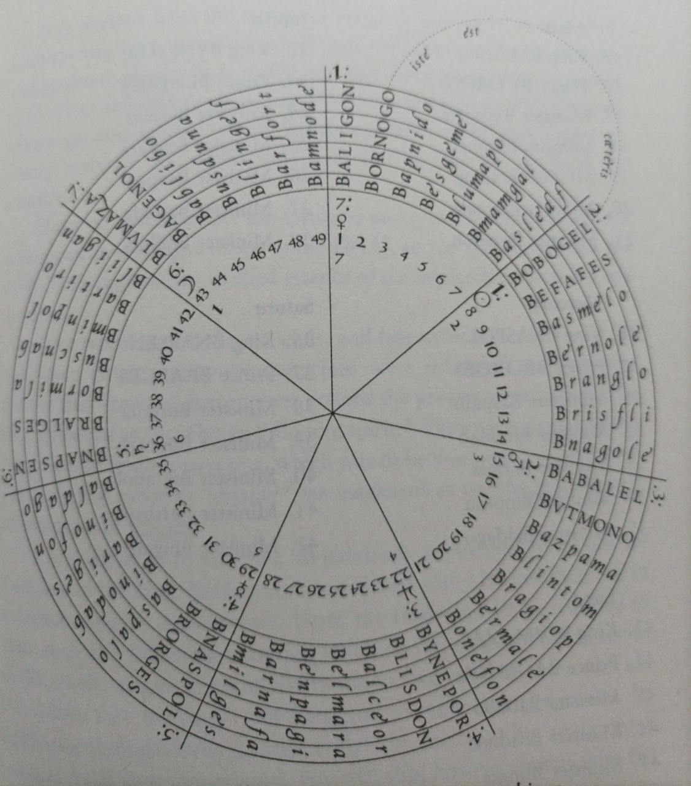
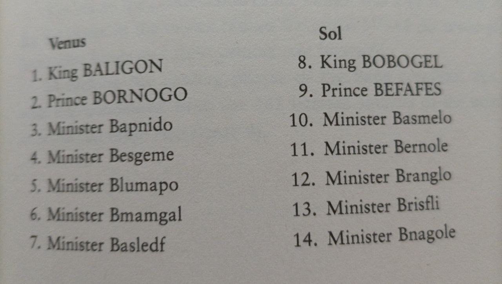
EL RITUAL
1 – El altar está dispuesto como de costumbre con una silla frente a él y se siguen los primeros siete pasos descritos en la Biblia satánica. Los nombres infernais leídos deben ser los nombres de los gobernadores de la aethyr.
3 - Lectura en voz alta de la Decimonovena Llave Enoquiana
* El celebrante debe sentarse cómodamente en una cadena con la espalda recta, los pies firmemente en el suelo y las manos en los muslos.
4 – Toma nueve respiraciones profundas mientras cantas en tu mente a una Llave de Plata.
5 – Cantar la XIX Llave Enoquiana. El celebrante debe permitir que su sentido estético lo guíe hacia la entonación. Es importante que la tercera palabra de la clave LIL sea reemplazada por el nombre de los Aethyrs que se está abriendo.
6 - Entonces cierra los ojos y vacía tu mente para que puedas ver en la oscuridad.
7 – Con la imagen de la llave creada en la mente ahora se debe ver una puerta detrás de ella, el diseño de la puerta no importa, basta con que sea lo suficientemente grande como para pasar a través de ella. La llave debe colocarse en la una para que se abra y se pueda cruzar.
8 – Al cruzar deja la mente lo más receptiva posible a las imágenes, sonidos o ideas y sentimientos que vayan a surgir. La experiencia debe ser similar a un sueño, con la diferencia de que tendrás el control y estarás de acuerdo. Ahora se pueden encontrar las cosas más hermosas, extrañas, horribles y maravillosas.
Si la visión se debilita, esfuercese para ver que la Llave de Plata aumenta su brillo para despejar la mente y aumentar su enfoque. Cría una nueva puerta y entra a través de ella como lo hiciste. Si la situación se complica y caes en las garras del miedo debes abandonar el viaje lo antes posible antes de encontrarte en una situación de peligro real.
7 – Para finalizar el viaje debes volver a coger la Llave de Plata y dejar que su resplandor irradie con intensidad creciente hasta que no se pueda ver nada más que su luz plateada. Entonces el brillo debe reducir su intensidad y estarás seguro de volver a tu propia esfera. Finalmente, mantén los ojos abiertos, canta una vez más los nombres de los gobernantes.
8 - Ritual del Pentagrama invertido en destierro.
9 – La ceremonia se cierra de acuerdo con el procedimiento estándar, tocando la campana y diciendo las palabras "Así se hace".
Consejos prácticos
La paciencia es clave a la hora de verlo. Para ayudar a la mente después de cruzar se pueden imaginar otras puertas que se abren, un inmenso laberinto o un bosque, por ejemplo, creando así un ambiente para demostraciones. Pero esto debe ser tanto como la imaginación activa debe crear.
Es posible que no veas nada en los primeros diez o incluso veinte minutos. Cualquier sensación de perder el tiempo o esforzarse demasiado puede arruinar la operación. Mantén tu postura relajada, tu mente tranquila y espera.
En grupos algunas personas serán más fáciles de practicar que otras. En estos casos uno de ellos puede asumir el papel de escriba mientras que el otro describe las imágenes e impresiones que surgen en su mente. En los practicantes solitarios no se debe escribir para no perder el enfoque, porque interrumpir visiones es similar a interrumpir sueños y rara vez se recuperan.
En estos casos, una grabación para la transcripción futura es más apropiada.
LA SAGRADA MESA
La propia mesa se convierte en el Santo de los Santos, el lugar donde la tierra y el cielo se tocan. Los dibujos de la época muestran al mago de rodillas, con los brazos extendidos ante una mesa mágica protegida por una tienda cónica. Dee ya utilizaba una mesa de práctica antes de que Edward Kelley entrara en escena, pero después, a medida que los elementos de la magia heptarquica se desarrollaron, quedó claro que los espíritus comunicantes querían que Dee personalizara su mesa de una manera muy específica. Los ángeles querían que la Mesa Sagrada fuera un "instrumento de conciliación", hecho de "madera dulce", y que se construyera de dos codos de lado y de dos codos de alto. La mesa debía estar sobre una alfombra de seda roja lo suficientemente grande para acomodar la silla del medium.
La piedra de adivinación o el espejo negro se colocaba entonces sobre el Sigillum de Aemeth sobre la mesa. La primera visión pública de la Mesa Sagrada (a veces denominada la Mesa de la Alianza o la Mesa de la Práctica) fue publicada en 165 Esta fué la imagen bque se reprodujo en 1912 en la revista de Aleister Crowley The Equinox y en numerosos libros desde entonces. Puede resultar sorprendente para muchos (y muy divertido para otros) que la imagen impresa está en orden inverso, la figura 16 y 19 muestran la disposición crrecta de las las letras.
Figura 16. Arriba.
La Mesa Sagrada y el Lamen están inextricablemente unidos. Al llevar el Lamen, el mago se vincula, o se concilia, con la Mesa Sagrada. El objeto que forma este vínculo mágico y sirve de denominador común entre el denominador común entre la Mesa Sagrada y el Lamen es la misma mesa de 12 x 7 que se utilizó para construir el Lamen, la misma mesa que los nombres de los siete reyes planetarios y de los siete príncipes planetarios de la jerarquía heptarquica. ¿He dicho la misma tabla de 12 x 7? Eso no es del todo exacto. Recordemos que cuando hablábamos de la tabla 12 x 7 en el capítulo anterior, algo parecía estar fuera de lugar. Los nombres de los reyes planetarios no compartían las mismas líneas que su homólogo planetario (por ejemplo, el rey sol O, Bobogel, está en la misma línea que el príncipe Venus 9, Bornogo). Venus 9, Bornogo, en lugar de su sol O, Befafes). Este desajuste planetario en la construcción de la tabla de 12 x 7 no parece propio de los ángeles, y de hecho el "defecto" parecía ser un carácter vital de los Lamen. Como se puede ver en la figura 17, la versión de la mesa de 12 x 7 que es la clave de la Tabla Sagrada "corrige" este desequilibrio reordenando los nombres de los reyes planetarios para que coincidan con los de los príncipes del mismo planeta. Además, la tabla se invierte, de modo que los reyes ocupan ahora el lado izquierdo de la tabla y los príncipes el derecho.
Actualmente nos encontramos "en la tierra", atrapados en una tumba de materia y, en apariencia, separados de las grandes realidades del "cielo" espiritual. Los cabalistas nos dicen que hemos sido creados a imagen y semejanza de la Deidad, somos, en el sentido más verdadero, un pequeño reflejo (un microcosmos) de la gran
inteligencia y fuerza creadora que crea, sostiene y destruye todas las cosas del universo (el macrocosmos). Como dijo Hermes Trismegisto, "Como es arriba, es abajo". Eso está muy bien, y yo me dedico a mis asuntos mágicos como si fuera cierto. Pero honestamente, aunque estoy compuesto del mismo material que componen el sol y la luna y las estrellas y los ángeles y la Deidad suprema, aunque me esfuerce por ser y hago todo lo que puedo para ser un individuo divinamente creativo, todavía no me siento mucho como la Deidad macrocósmica. En comparación con el macrocosmos cósmico, mi microcosmos está muy desajustado. Mi vida es una mezcla de estrés y desequilibrio. Desde mi punto de vista, hay una ruptura muy grande entre la Deidad de arriba y el Humano Que Soy de abajo. Soy como la mesa de 12 x 7 de la que se crea el Lamen: Tengo todos los componentes condensados de un universo perfectamente afinado, pero están lo suficientemente desincronizados como para para que no sea el reflejo perfecto del gran "como son las cosas". Me identifico mucho con la forma en que está construido el Lamen. Me gusta, mi jerarquía de planetas está desajustada y desequilibrada. Al igual que las curiosas incoherencias que caracterizan la forma en que las letras individuales se transfieren de la mesa de 12 x 7 al Lamen, mis componentes individuales son una una letanía de curiosas incoherencias. Es como si el macrocosmos mostrara al microcosmos cómo se hace. Cuando me siento ante la Mesa Sagrada con el Lamen sobre mi corazón, casi puedo sentir el orden y la perfección de la Santa Mesa tirando magnéticamente de mi corazón a través del Lamen conectándome con una corriente eléctrica casi tangible con el Santo de los Santos, atrayendo mi corazón y mi atención hacia el lugar sagrado de mi vida, donde el cielo toca la tierra. La Mesa Sagrada es, en efecto, un instrumento de conciliación, un instrumento de reunión". Las letras del cable 1 2 x 7 se refieren a la Mesa Santa de la siguiente manera.
Fig.18
El borde de la Santa Mesa se segmenta primero en veintiuna Células por lado. Según las instrucciones de los ángeles, la letra sagrada B se coloca en las esquinas, y luego las letras de la tabla de 12 x 7 se insertan en las celdas como indican los cuatro conjuntos de flechas de la figura 18. El cuadrado en el centro de la Tabla Sagrada se extrae del corazón central como se destaca en la figura 18. Los cuatro rodillos que forman el borde de la Mesa Sagrada circunscriben los demás objetos de la mesa con un eterno movimiento en sentido contrario a las agujas del relo alrededor del hexagrama de la mesa (símbolo del macrocosmos). En el interior, las doce letras angélicas del cuadrado de 3x4 en el centro del hexagrama de la Mesa Sagrada se agitan con la dinámica del movimiento arriba- abajo/derecha-izquierda sugerido por sus cuatro filas de tres letras en red con sus tres columnas de cuatro letras.
Figura 19
Sigilum Dei Aemeth
El diseño del Sigillum Dei Aemeth de Dee ("el sello de la verdad de Dios") es quizás la imagen más reconocible de la magia enoquiana. Es un dispositivo mágico poderoso, vivo, con las fuerzas angélicas del universo ordenadas en el que "Siete, descansan en Siete: y los Siete, viven por Siete: Los Siete gobiernan a los Siete: Y por Siete es todo el Gobierno".
A diferencia de las jerarquías del Lamen y de la Santa Mesa, la jerarquía de los ángeles del Sigillum no fue condensada, destilada o generada a partir de las siete tablas de 12 x 7 de las que se extrajeron los nombres de los cuarenta y nueve ángeles buenos. Sin embargo, el Sigillum es la pieza central de la magia heptarquica y es el objeto a través del cual emana toda la energía heptárquica . El Sigillum en sí mismo era un disco de nueve pulgadas de diámetro y aproximadamente una pulgada y media de grosor. Estaba hecho de cera de abeja pura. Se colocaba en el centro de la Mesa Sagrada. Sobre él se colocaba el “cristal visionario” o el espejo negro.
Cuatro versiones de cera más pequeñas se colocaban debajo de cajas pequeñas, sobre las que estaban las cuatro patas de la Mesa Sagrada. A Dee se le dijo primero que simplemente copiara el diseño de un libro que ya tenía en su biblioteca. Pero Dee tenía al menos dos volúmenes que contenían diseños de sigilos. No podía decidir cuál usar, así que pidió más aclaraciones. El ángel entonces le dio instrucciones de cómo construir un sigillum completamente nuevo basado en el formato de los otros pero añadiendo un conjunto de personajes celestiales: siete nombres de dioses encerrando siete conjuntos de nombres angélicos. Es claro para mí que la construcción del Sigillum fue un paso vital en el programa de preparación de Dee y Kelley y esa construcción puede servir ese mismo propósito importante para el mago moderno también. Voy a explicar los pasos de cómo se construye, porque espero que los lectores se tomen en serio el hacer magia, en lugar de que simplemente la estudien. Les he proporcionado un sigillum en blanco (figura 21), y les animo a que hagan varias fotocopias del mismo. Si lo desea, puede ampliarlo hasta 15 centímetros de diámetro. A continuación, siga las instrucciones paso a paso. Como no sólo estarás construyendo este mágico dispositivo en papel, sino que también lo instalará en su interior, construir su propio propio Sigillum Dei Aemeth es la forma más rápida y fácil que conozco para conocer y conectar con las fuerzas angelicas que residen en el diseño. Puede llevar varios intentos, pero creéme que el esffuerzo merece la pena.
Figura 21.
Construyendo el Sigillum.
Paso 1: Los Siete Nombres de Dios
Los siete nombre de dios son extraidos de los números y letras que aparecen en las cuarenta celdas del perímetro exterior del anillo.
I os siete nombres de dioses fueron extraídos de números y letras que aparecen '" i yacen cuarenta celdas que conforman el perímetro del Sigillum. El magi- Los magos debían dividir el perímetro exterior de un anillo en blanco en cuatro secciones. Después de dividir cada una de las cuatro secciones en diez partes Kelley tuvo entonces una dramática y colorida visión, facilitada por el arcángel Miguel, con la ayuda de Uriel y el ángel Semiael. En esta visión, cuarenta ángeles salieron a la vez y se separaron de sus vestimentas para revelar una de las siguientes tres cosas:
1. Un número colocado sobre una letra, 2. una letra colocada sobre un número, o 3. una sola letra.
Algunas de las letras eran mayúsculas, pero la mayoría eran minúsculas. A medida que mostraban las letras y números, cada uno de los cuarenta ángeles pronunciaba también una declaración piadosa diferente en latín, como: "Oh Dios, Dios, nuestro Dios bendito seas, ahora y siempre" o "Y eres verdadero en tus obras". Luego el ángel desaparecía o se consumía en destellos de fuego u otros dramas similares. Los magos se quedaron entonces con una cadena de números y letras, que he ordenado en una tabla (véase la figura 22).
En primer lugar, asegúrese de que su Sigillum en blanco está orientado de forma que el pentagrama del centro apunte hacia la parte superior de la página. A continuación, consulte la figura 23 y localiza la celda más alta del perímetro exterior del Sigillum - la celda que contiene el número 4 sobre la letra T mayúscula-. A continuación, tomando la tabla (figura 22) y moviéndose en el sentido de las agujas del reloj, rellene las restantes treinta y nueve celdas del perímetro exterior de su Sigillum en blanco tal y como las ves en la figura 23.
A partir de las letras y números del perímetro se dibujan los siete nombres de dioses y sus sigilos. Los puntos de partida para los nombres de los dioses son las celdas que contienen letras mayúsculas. Éstas también se identifican en la figura 22 con asteriscos debajo de ellas.
Figura 23
Desde esos puntos de partida, observa el número dentro de la célula y para encontrar la siguiente letra en el nombre de dios. Debes contar en el sentido de las agujas de l reloj cuando el número en la célula se coloca encima de la letra, y contar en sentido contrario a las agujas del reloj cuando las letras se posicionan por encima del número. Sigue contando hasta que llegues a una celda que contenga una letra pero ningún número. Esa será la última letra de ese nombre de dios en particular. Es como girar el dial de una cerradura de combinación, y, de hecho, eso es lo que estás haciendo. No copies los nombres ya extraidos anteriormenete, sigue las instrucciones y hazlo tu mismo.
Empezando por la casilla con 9/G (cerca de la parte superior del círculo), cuenta nueve celdas en el sentido de las agujas del reloj (porque el número está arriba) hasta 6/a. A partir de ahí cuenta seis celdas en el sentido de las agujas del reloj hasta 1/8. Cuenta ocho casillas en sentido contrario a las agujas del reloj (porque la letra está arriba) hasta 20/a. Cuenta veinte casillas en el sentido de las agujas del reloj hasta 8/a. Cuenta ocho casillas en el sentido de las agujas del reloj hasta la letra única s. Como no hay ningún número asignado a la celda s, sabemos que s es la última letra de este nombre de dios. Una vez realizado el recuento, hemos deletreado el nombre de dios Galaas. El arcángel Miguel aconsejaría más tarde a Dee y Kelley que se alterase la ortografía (una prerrogativa del arcángel) a Galas. Miguel asignó a Galas un sigilo característico y un número 5. También instruyó que el sigilo y el número de Galas debían aparecer en el Sigillum, en la zona comprendida entre el perímetro de las celdas y la barra exterior del heptágono, aproximadamente en la posición de las once (véase la figura 32). Aunque la conexión no se menciona abiertamente en el material original, el nombre del dios Galas y su sigilo son generalmente se asocia con la esfera planetaria de Saturno.
Empezando por 7/G (cerca de la parte inferior del círculo), cuenta siete casillas en el sentido de las agujas del reloj hasta e/21. Cuenta veintiún casillas en sentido contrario a las agujas del reloj hasta t/9. Cuenta nueve casillas en sentido contrario a las agujas del reloj hasta h/14. Cuenta catorce celdas en el sentido contrario a las agujas del reloj hasta catorce celdas hasta las letras sin numerar og para terminar el nombre de dios Gethog.
Miguel asignó a Gethog el sigilo y el número 24 y le ordenó que los colocara en el Sigillum en la zona entre el perímetro de las celdas y la barra exterior del heptágono a aproximadamente las nueve en punto (véase la figura 32). Aunque la conexión no se menciona abiertamente en el material original, el nombre del dios Gethog y su sigilo son generalmente considerados por muchos magos enochianos modernos a la esfera planetaria de Júpiter.
Comenzando en 4/T (cerca de la parte superior del círculo), cuente cuatro celdas en el sentido de las agujas del reloj hasta 22/h. Cuenta veintidós casillas en el sentido de las agujas del reloj (porque el número 22 está en la parte superior) hasta 11/A. Cuenta once casillas en el sentido de las agujas del reloj hasta a/5. Cuenta cinco casillas en sentido contrario a las agujas del reloj hasta o/lO. Cuenta diez celdas en sentido contrario a las agujas del reloj hasta t/11. (cuenta once casillas en sentido contrario a las agujas del reloj hasta la casilla que contiene la única letra h para terminar el nombre del dios ThAaoth. Nuevamente usando su prerrogativa de arcángel, Miguel aconsejó más tarde a Dee que alterara ligeramente la ortografía a Thaoth. También asignó a Thaoth el número 30 y le ordenó que se colocase en el Sigillum en el área entre el perímetro de las celdas y la barra exterior del heptágono, aproximadamente a las siete en punto (véase la figura 12). Aunque la conexión no se menciona abiertamente en el material original original, el nombre del dios Thaoth y su sigilo son generalmente considerados por muchos magos enochianos modernos con la esfera planetaria de Marte.
Partiendo de H/12 (cerca de la parte inferior del círculo), cuente doce celdas en sentido contrario a las agujas del reloj hasta el 22/o. Cuenta veintidós celdas en el sentido de las agujas del reloj hasta el r/16. Cuenta dieciséis celdas en sentido contrario a las agujas del reloj hasta el 26/1. Cuenta veintiséis seis casillas en el sentido de las agujas del reloj hasta llegar a la letra n, lo que da lugar al nombre de dios Horlωm. Miguel asignó a Horlωm el sigilo y el número 21 y ordenó que se colocaran en el Sigillum en el espacio entre el perímetro de las celdas y la barra exterior del heptágono a las seis en punto (véase la figura 32). Aunque la conexión no se menciona abiertamente en el material original, el nombre del dios Horlωm y su sigilo son generalmente asociados a la esfera planetaria qabalística de Sol.
Empezando por 15/1 (cerca de la parte izquierda del círculo), cuente quince casillas en el sentido de las agujas del reloj hasta 7/n. Cuenta siete casillas en el sentido de las agujas del reloj hasta 14/n. Cuente catorce celdas en el sentido de las agujas del reloj hasta o/8. Cuenta ocho casillas en sentido contrario a las agujas del reloj hasta la única letra n, produciendo el nombre Innon. Miguel asignó a Innon el sigilo y el número 9 y ordenó que se colocaran en el Sigillum en la zona entre el perímetro de las celdas y la barra exterior del heptágono a las aproximadamente a las cuatro en punto (véase la figura 32). Aunque las conexiónes no se menciona nabiertamente en el material original, el nombre del dios Innon y su sigilo son generalmente considerados por muchos magos Enochianos modernos la esfera planetaria qabalística de Venus.
Miguel asignó a Aaoth el sigilo y el número 14 y ordenó que se colocaran en el Sigillum en el espacio entre el perímetro de las celdas y la barra exterior del heptágono a aproximadamente las dos en punto (véase la figura 32). Aunque la conexión no se menciona abiertamente en el material original, el nombre del dios Aaoth se asocia a la esfera planetaria de Mercurio.
Miguel asignó a Galethog el sigilo anterior y ordenó que se colocara en el Sigillum en la zona entre el perímetro de las celdas y la barra exterior del heptágono a aproximadamente la una (véase la figura 32). Galethog y su sigilo son asociados con las esfera planetaria de Luna.
Estos siete nombres de dioses Galas, Getbog, Thaoth, Horlam, Innon, Aaoth, y Galethog se unen en un solo nombre supremo. Galethog.
Fig. 31
Fig.32
Paso dos: Los Siete Nombres de Dios del Heptágono Exterior y de los Arcángeles Planetarios
Seguimos con el heptagono dentro del perimetro del Sigillum. Cada una de las siete caras que lo componen se dividen en siete celdas con los nombres de los siguientes ángeles heltárquicos del sigillum. Estos siete nombres se extrajeron de una celdilla 7 x 7 (séptuple) entregada a Dee y Kelley en una serie de breves y coloridas visiones (véase la figura 33).
Los nombres se leen horizontalmente y se insertan en heptágono exterior como se muestra en la figura 34.
fig.34
Sin embargo, cuando la tabla se lee verticalmente, aparecen los nombres de los siete arcángeles planetarios clásicos:
Zaphkiel (Saturno) Zadkiel(Júpiter) Rafael (Sol) Miguel (Mercurio) Cumael(Marte) Haniel(Venus) Gabriel(Luna)
Estos arcángeles fueron asignados a estos planetas muchos años antes de que Dee y Kelley los recibieran y podrían haber sido encontrados en cualquiera de los numerosos libros de la biblioteca de Dee. Sin embargo, Dee y Kelley insistieron en que la tabla se les dio antes de que se dieran cuenta de que estos nombres fueron generados por la tabla. Ya sea que elijamos creer su afirmación o no, el hecho es que que estos ángeles en particular no son exclusivos del sistema Enochiano.
Fig.35
Para leer el nombre de cada arcángel utilizando los siete nombres de los dioses de los lados del heptágono, estamos obligados a proyectar las letras en la superficie del propio Sigillum. Me gustaría poder ilustrar gráficamente esto usando la magia moderna de la animación, pero usted puede demostrarlo por sí mismo. Veamos la primera tabla de la figura 35 y utilicemos el nombre del arcángel planetario de Saturno, Zaphkiel esnnuestro ejemplo. Comience con la Z mayúscula que se encuentra en la primera celda del nombre ZllRHia, luego pasa a la primera celda del nombre aZCaacb (para recoger la a), luego ve a la primera celda del nombre paupnhr (para recoger la p), luego muévete a la primera celda del nombre hdmhlal (para recoger la h), luego pasa a la primera celda de Kkaaeee para recoger la K, lleellll la l, luego muévete a la primera celda de eellMG (para recoger la e). Por último, muévete a la segunda celda de la barra ZllRHia y recoge la / final para deletrear Zaphkiel. Espero que puedas visualizar lo que ocurre cada vez que te mueves a otra barra del heptágono para recoger una letra del nombre del arcángel. Al moverte, estás literalmente desplazando la estructura dimensional del Sigillum un nivel más -en el caso de Zaphkiel, ocho niveles en total (ver figura 36).
Fig.36
Observa esto con el hecho de que el nombre de Zaphkiel está trenzado en estas mismas capas con los nombres de los otros seis arcángeles' Visto así, el Sigillum ya no es una imagen plana colocada en una mesa, es un espacio multidimensional mágico compjuesto por la red de las letras entrelazadas de los siete arcángeles lanetarios junto a los nombres de los otros seis ángeles.
Paso 3: Los siete nombres de los ángeles planetarios
Debajo de las barras del heptágono exterior, justo dentro de las barras del heptágono exterior hay otros siete nombres divinos. Estos nombres se han extraído de una segunda tabla de 7 x 7 (séptuple) dada a Dee y Kelley, letra por letra, en una visión. Estos nombres se leen horizontalmente y se colocan debajo de las barras del heptágono exterior.
Fig.37
Se dará cuenta inmediatamente de que algunos de los cuadrados de esta tabla contienen pequeños números (21 sobre 8, 26, 30, etc.) y puntos colocados de forma diversa. Estos se añaden para indicar la adición de la letra “l” o las letras “el” o “al” (sufijos angélicos) a la letra del cuadrado, para deletrear mejor los nombres de los diversos ángeles que este tabla producirá. Estos nombres de estos siete se agregan al Sigillim como muestra la figurra 38.
Fig.38
Paso 4: las Hijas de la Luz.
Pueden extraerse más conjunts de ángeles de la tabla 7x7. El primer conjunto fue revelado en visión por siete mujeres jóvenes (llamadas Las Hijas de la Luz) vestidas de seda verde. Cada una llevaba una pequeña tablilla en la frente que la identificaba por su nombre:
El, Me, Ese, Iana, Akele, Azdobn y Stimcul
Los nombres de las Hijas de la Luz se extraen de la segunda tabla leyendola parte superior derecha de la tabla en diagonal hacia abajo.
Fig.39
Aunque los ángeles no fueron identificados con planetas en el material origina, la manera en que la visión procedió a revelar estos nombres sugiere que estos siete ángeles llevan las siguientes asignaciones planetarias:
E(l) Me Ese Iana Akele Azdobn Stimcul
Saturno Jupiter Marte Sol Venus Mercurio Luna
Los nombres de las Hijas de la Luz se colocan en el Sigillum en en el sentido de las agujas del reloj en los puntos creados por las líneas entrelazadas del heptagrama (ver figura 40).
Fig.40
Paso 5: Los Hijos de la Luz
A continuación llegaron siete jóvenes (llamados "Hijos de la Luz" ) vestidos de blanco, cada uno con una bola de metal: la primera bola era de oro, la la segunda de plata, la tercera de cobre, la cuarta de estaño, la quinta de hierro, la sexta de azogue y la séptima de plomo. Cada uno llevaba una tablilla de oro en el pecho. Lo he identificado por su nombre:
I, Ih, Ilr, Dmal, Heeoa, Beigia y Stimcul.
Los nombres de los Hijos de la Luz se extraen de la segunda tabla leyendo la sección inferior izquierda de la tabla en diagonal hacia abajo.
Fig.41
El metal de la bola que lleva cada uno de estos personajes sugiere que estos siete ángeles llevan las siguientes asignaciones planetarias:
I Ih Ilr Dmal Heeoa Beigia Stimcul
Saturno Jupiter Marte Sol Venus Mercurio Luna
Los nombres de los Hijos de la Luz están colocados en el Sigillum en orden de reloj- en las barras entrelazadas del heptagrama (ver figura 42).
Fig.42
Paso 6: Las Hijas de las Hijas de la Luz
A continuación vinieron siete "pequeñas jovenes" ("Hijas de las Hijas") vestidas de
blanco, con tablillas, que parecían ser de marfil blanco, en sus pechos, que las identificaban como:
S, Ab, Ath, Izad, Ekiei, Madimi y Esemeli.
Los nombres de las Hijas de las Hijas se extraen de la segunda tabla septenaria leyendo la sección superior izquierda de la tabla en diagonal, hacia abajo.
Fig.43
Aunque estos siete ángeles no se identifican con los planetas, se cree que que llevan las siguientes asignaciones planetarias:
S Ab Ath Izad Ekiei Madimi Esemeli
Saturno Jupiter Marte Sol Venus Mercurio Luna
Los nombres de las Hijas de la Luz se colocan en el Sigillum en el sentido de las agujas del reloj bajo las barras del heptagrama (verfigura 44).
Fig.44
Paso Siete: Los Hijps de los Hijos de la Luz
Los siguientes en aparecer eran como niños pequeños (Hijos de los Hijos) llevaban vestidos de seda púrpura con mangas largas y sombreros puntiagudos como los sacerdotes. Llevaban tablas verdes en sus pechos identidificandolos como:
E, An, Ave, Liba, Rocle, Hagonel y Ilemese.
Su nombre se extraen en el sentido de las agujas del reloj como muestra la figura 45
.45
Los nombres de los Hijos de los Hjos de la Luz se colocan de la siguiente forma en el Sigillum.
Fig.46
Paso Siete: Los Ángeles Planetarios del Pentagrama.
Finalmente Dee y Kelly fueron instruidos de cómo ordenar de manera relativamente sencilla los nombres de siete ángeles planetarios,
Sabathiel Zedekiel Madimiel Semeliel Nogahel Corbiel Lavanael
Saturno Jupiter Marte Sol Venus Mercurio Luna
alrededor del pentagrama centra alrededor de un penta. Estos siete nombres también son extraídos de la segunda tabla septenaria, leyéndola en zigzag. (figura 47).
Fig.47
La figura 48 muestra como se colocan estos nombres en el Sigillum.
Fig. 48
Debido a que el material original de Dee y Kelley no confirma las las atribuciones planetarias de todos los nombres del Sigillum, tampoco yoo lo haré. Sin embargo, he creado un gráfico (véase la figura 49) que actualmente utilizo para ayudarme en mis meditaciones sobre el tema junto con la clave de lectura de los nombres de los arcángeles planetarios de la primera tabla septenaria.
Fig.49 Posible llave planetaria del Sigillum.
Paso Nueve: Las Cruces.
Una vez que los nombres de estos ángeles fueron colocados alrededor del pentagrama, se añadieron al Sigillum una serie de pequeñas cruces de forma curiosamente inconsistente (véase la figura 50).
Fig.50 El Sigillum Completo
Y ahora su Sigillum está casi completo. Lo único que queda por es el diseño de la parte de atrás. Es una imagen muy simple de una cruz que domina un pequeño círculo alrededor del cual están las letras de la palabra divina AGLA (un acronimo Hebreo de la frase Ateh Gibor Le-olam Adonai, “el Señor es poderoso para siempre”)
Creo que la presencia del Sigillum es un factor importante para crear el ambiente mágico que conduce a la magia dvisionaria Enochiana. Hay mucho más que los ángeles dijeron a Dee y Kelley sobre el Sigillum, incluyendo sugerencias de cómo cada letra en cada uno de los nombres contiene un conjunto de ángeles, y así sucesivamente de siete en siete. Yo les animo a continuar su exploración de los misterios del Sigillum pero ahora debemos pasar a los siete Insignias de la Creación, donde te prometo un viaje mucho más corto.
INSIGNIAS DE LA CREACION
Las Insigniasde la Creación son siete talismanes planetarios diseñados para ser utilizados en la Mesa Sagrada en un círculo que rodea el Sigillum Dei Aemeth o colocados en ínea a lo largo del borde de la mesa. Debían estar hechas de estaño purifocado o bien pintadas directamente sobre la Mesaa. Cinco de ellas contienen cuadros llenos de números, letras, cruces y líneas. Dos de ellas son un circulo en un cuadro. La letra B (Pa) es la que en más ocasiones aparece. Originalmente se escribían en caracteres latinos pero postereiormente fueron reemplazadas por enochainos. Las insignias tiene un uso dde carácter ritualista y pueden usaarse cómo soporte durante las oraciones o invocaciones. Pero está información está incompletay no hay registros de Dee ni Kelley de cómo realizar estos rituales.
Luna Rey Blumaza Príncipe Bagenol
Venus Rey Baligon PríncipeBornogo
Saturno Rey Bnapsen Príncipe Bralges
Mercurio Rey Bnaspol Príncipe Borges
Martes Rey Babalel Príncipe Butmono
Júpiter Rey Bynepor Príncipe Blisdon
Sol Rey Bobogel Príncipe Bornogo
Insignias de Mercurio, Saturno y Luna en letras enochianas.
Insignias de Venus, Sol, Marte y Júpiter
Posición de cada una de ellas alrededor del Sigillum.
RONDA ZODIACAL
ARSL (Escorpio)
"De la mezcla de las escalas surge el azar, la posibilidad de cambio y lo inesperado dentro del patrón de Mi Voluntad. Las semillas de nuevas mociones surgen espontáneamente; y nadie, ni siquiera Yo, sabe cuándo y dónde aparecerán."
GAIOL (Libra)
"Sin embargo, Mis torres son una, equilibradas en la luz y en la oscuridad; lo que surja actuará siempre dentro de los límites establecidos por Mi Voluntad."
OIP (Virgo)
Y Dios miró su obra y dijo: "Pero estas son casas vírgenes: nadie ha habitado todavía en ellas. Dejad que las semillas de la vida sean sembradas y que echen raíces y crezcan dentro de los patrones de Mi pensamiento."
TEAA (Leo)
Y Dios dijo: "Que los creadores menores habiten dentro de mis torres. Y que trabajen dentro de los patrones de Mi Voluntad según sus propias artes creativas, revelando el potencial invisible como lo hace un sol que entra en un lugar oscuro."
PDOCE (Cáncer)
"Que los seres vivos adoren a los creadores como dioses visibles dentro de los mundos. Y que los constructores menores trabajen sus voluntades como lo hacen Mis ángeles cuando hablo mi Palabra de Poder."
MOR (Géminis)
Y Dios dijo: "Que los pensamientos de los hombres se mezclen con Mis pensamientos y los elaboren en los mundos donde ya no voy".
DIAL (Tauro)
"Y que su trabajo se construya sobre Mi patrón; y que sus obras reflejen Mi Voluntad en evolución".
HCTGA (Aries)
"Que los hombres trabajen hasta que la materia y Mi Voluntad sean una. Entonces que digan: Se hace Tu Voluntad". Comentarios del Vidente:
Estos breves dichos fueron dados al vidente durante una exploración de los Nombres de Dios para la Tabla de Aire. Están pensados como meditaciones sobre el significado de los doce Nombres de Dios dentro de un sistema de atributos llamado "Ronda Zodiacal". En esta disposición, los Nombres de cada Tabla se asignan a un cuarto del zodiaco centrado en el signo fijo correspondiente al elemento de la Tabla. Esto coloca a los grupos de nombres en las mismas posiciones relativas que sus respectivas Tablas dentro de la Gran Tabla de las Atalayas.
Los "ángeles" enoquianos se han ocupado con frecuencia de las progresiones zodiacales en nuestros contactos anteriores, pero sus declaraciones anteriores siempre han tratado la progresión de una manera más orientada a la meta. Esta es la primera
expresión puramente cíclica que han proporcionado. Al igual que Finnegans Wake, nunca termina realmente, sino que se curva para volver a empezar.
Este es el segundo conjunto completo de atributos zodiacales que los ángeles me han dado para los Nombres de Dios. El primer conjunto fue proporcionado en relación con las técnicas descritas en el libro de capilla /Templos Enochianos//. En ese conjunto, los Tres Nombres de cada elemento fueron asignados respectivamente a los signos mutables, fijos y cardinales de ese elemento. Una cita proporciona la perspectiva de los ángeles sobre la cuestión de cómo interactúan estos dos conjuntos de atributos:
"Ahora iríamos por el camino que deseas, y mostraríamos los poderes de las casillas individuales, pero debes saber que los grupos de casillas que componen uno de los Tres Nombres tienen su atributo (como grupo) a uno de los signos, y éstos son de mayor poder en la mayoría de los casos que el poder de las casillas individuales.
"El Nombre ORO tiene su doble atribución a Piscis en la ronda del zodiaco, y a Géminis en la construcción de los Templos de la Voluntad de Dios. El cuchillo o espada de Zayin fue mostrado en la breve visión de ayer como cortando el cordón entre los peces de Piscis. Por lo tanto, en esa visión mostramos cómo se relacionan los dos conjuntos de atributos.
"Primero se encuentra el atributo de la ronda zodiacal. A medida que la mente vuela más alto, entonces se encuentra el atributo del Templo. En el curso de la iniciación, el conocimiento de este último crece, se forma a partir de la experiencia del primero. De la misma manera que el cuchillo del Aire en la última visión se formó a partir del estaño de Júpiter y el cobre de Venus, que son el regente y el planeta exaltado de Piscis".
"En la progresión iniciática, se pasa del signo, el atributo más básico, al poder de los planetas regentes y exaltados, al atributo del Templo, a los planetas regentes y exaltados del signo del Templo. Esto puede parecer complejo, pero los poderes encarnados en las Tablas son un reflejo de los poderes del universo, y el universo es un lugar muy complejo en todos los niveles".
Este cambio de atributos puede verse de dos maneras. En primer lugar, como una transformación de una condición en la que dominan las cuadruplicidades zodiacales, a otra en la que dominan las triplicidades zodiacales. En segundo lugar, como un cambio de noventa grados en las posiciones de los signos mutables y cardinales, en sentido contrario a las agujas del reloj para los mutables, y en sentido de las agujas del reloj para los cardinales.
Los ángeles afirman en otro lugar que el movimiento de las potencias a través de estos diversos atributos produce dos flujos circulares en la Gran Tabla de las Atalayas. En ambos casos, el poder representado por el atributo "Templo" fluye hacia
el nombre cuyo atributo Ronda Zodiacal es el mismo. Por ejemplo, los poderes de ORO fluyen de la manera citada anteriormente, entonces el poder fluye hacia el Nombre MOR en la Tabla de la Tierra, que tiene Géminis como su atributo de Ronda Zodiacal. Los poderes de los signos fijos fluyen en ambas direcciones, ya que sus atributos en ambos conjuntos es el mismo.
Cuando se utilizan estos atributos en las invocaciones, los ángeles especifican que la Ronda Zodiacal se debe utilizar en las invocaciones de los ángeles de los Ángulos Menores, y en las invocaciones que implican el uso de la Segunda Llamada. Los atributos del "Templo" deben utilizarse en las invocaciones de los Reyes y los Mayores, y en las que impliquen el uso de la Primera Llamada.
Los poderes de los Tres Nombres son concentrados y formados en un vórtice por el Rey de la Tabla. El Rey se conecta con los Nombres principalmente a través de la primera letra y las dos últimas letras de su nombre. Todas estas letras provienen del Nombre de Dios de cuatro letras, que se atribuye al elemento de la Tabla en ambas disposiciones. Así que, independientemente del conjunto que se utilice, los poderes de los Tres Nombres se canalizan un signo del carácter elemental apropiado cuando se utilizan en las invocaciones de los poderes inferiores de las Tablas.
Para aquellos que deseen utilizar estos dichos para la meditación, hay que destacar que el simbolismo es casi puramente astrológico, con alguna mezcla de Tarot. Las formulaciones basadas en el Árbol de la Vida no están presentes.
Un Ritual de Hexagramas Modificado para Trabajos Enochianos.
0.1 Herramientas, vestuario, etc:
A. Túnica blanca para los trabajos teúrgicos
B. Negra para los trabajos taumatúrgicos
C. Vara para uso general o espada
D. Varita elemental, copa, etc. según corresponda
E. Lamen de la obra, o lamen general.
Ritual de apertura
1.0 Utilizando la varita o la espada, rodea y sella el área de trabajo. Deosil para trabajos teúrgicos, widdershins para taumatúrgicos.
1.1 Vuelve al centro del círculo, de cara al este.
Declare al universo:
"¡AMGEDPHA!"
1.2 Extiende los brazos hacia el Este, y haz varias respiraciones profundas, atrayendo la energía del Este y difundiéndola por toda el aura.
2.1 Haz la señal de Harpócrates, y luego mantén la varita o la espada en vertical ante el pecho, con el otro brazo hacia abajo en el costado.
2.2 Recita:
"I. N. R. I."
(Concentra la energía en el aura sobre la parte superior de la cabeza. A medida que se pronuncian las letras, llévela hacia abajo para activar determinados chakras por turnos:
I - Chakras de la parte superior de la cabeza y ajna
N - Chakra de la garganta
R - Chakra del corazón
I - Chakras por debajo del diafragma (excluyendo el plexo solar)
2.3 Atraiga toda la energía hacia el chakra de la base de la columna vertebral.
2.4 Recite:
"Yod, Resh, Nun, Yod"
(Visualiza la energía subiendo por la columna vertebral y por ambos canales laterales, activando los chakras en orden inverso al punto 2.2)
2.5 Recita:
"Isis, Horus, Set, Thoth"
(La energía sale por la parte superior de la cabeza en cuatro chorros y se difunde de nuevo en el aura).
3.1 Recita:
"El paso del Hombre por la Tierra";
"El paso de la Tierra a las Estrellas".
3.2 Para los trabajos teúrgicos, recita:
"Isis, la Naturaleza, la ceguera inocente"
"Horus, Guerrero, el alma conquistadora"
"Set, Apóstata, buscador del espíritu"
"Thoth, el Sabio, abarcando todo"
Para los trabajos taumatúrgicos, recita:
"Thoth, el namer, decretando el patrón"
"Set, destructor, dividiendo los polos"
"Horus, rey-sol, proporcionando el poder"
"¡Isis transformada es la meta manifiesta!"
(Asume la forma de dios de cada dios antes de pronunciar su línea). Secciones alternas -- Utiliza sólo una en cada sesión
Para Invocaciones Generales o Destierros:
4.0 Recita la Primera Llamada Enochiana.
4.1 Ve al Este. Dibuja el hexagrama de Aire.
Vibra: EXARP, ORO IBAH AOZPI
Proyéctese a través del hexagrama, en el reino del Aire. Trata de ver o sentir a los habitantes reuniéndose, atraídos por tu llegada. Absorba toda la energía posible de ellos y regrésela al círculo.
4.2 Vaya al Sur. Dibuja el hexagrama del Agua.
Vibra: HCOMA, MPH ARSL GAIOL
Proyecta a través del hexagrama hacia el reino del Agua. Intenta ver o sentir a los habitantes que se reúnen a tu alrededor, atraídos por tu llegada. Absorbe toda la energía posible de ellos y regrésala al círculo.
4.3 Ve al Oeste. Dibuja el hexagrama del Fuego.
Vibra: BITOM, OIP TEAA PDOCE
(Proyecta a través del hexagrama hacia el reino del Fuego. Intenta sentir a los habitantes reuniéndose alrededor, atraídos por tu llegada. Absorba toda la energía posible y regrésela al círculo).
4.4 Vaya al Norte. Dibuja el hexagrama de la Tierra.
Vibra: NANTA, MOR DIAL HCTGA
(Proyéctese a través del hexagrama en el reino de la Tierra. Intenta ver o sentir a los habitantes como antes. Absorba toda la energía posible y regrésela al círculo).
4.5 Vuelve al Este para completar el círculo.
Para invocar a los cuatro Ancianos o Reyes asociados a un planeta en particular.
5.0 Recita la Primera Llamada Enochiana.
5.1 Ve al Este. Haz el hexagrama de Aire.
Vibra: EXARP, ORO IBAH AOZPI
Haz el hexagrama del planeta.
Vibrad el nombre del correspondiente Senior de la Tabla del Aire. En este punto y en los tres siguientes, proyéctate a través de los hexagramas al reino regido por ese Senior. Intenta verlo de pie ante ti, o al menos sentir su presencia. Toma nota de los seres o imágenes que aparezcan. Tanto si lo ves como si no, llámalo para que venga a ti en tu círculo. Absorbe toda la energía que puedas y regrésala al círculo.
5.2 Vaya al Sur. Haz el hexagrama del Agua.
Vibra HCOMA, MPH ARSL GAIOL
Haz el hexagrama del planeta.
Vibra el nombre del Senior correspondiente de la Tabla de Agua. Proyéctese en el reino del Senior como antes.
5.3 Ve al Oeste. Haz el hexagrama del Fuego.
Vibrar BITOM, OIP TEAA PDOCE
Haz el hexagrama del planeta.
Vibra el nombre del Senior correspondiente de la Tabla de Fuego. Proyéctese en el reino del Senior como antes.
5.4 Ve al Norte. Haz el hexagrama de la Tierra.
Vibra NANTA, MOR DIAL HCTGA
Haz el hexagrama del planeta.
Vibra el nombre del Senior correspondiente de la Tabla de la Tierra. Proyéctese en el reino del Senior como antes.
5.5 Completa el círculo volviendo al Este.
(Para invocar a un solo Senior, recita la Llamada del Elemento después de la Primera Llamada. Entonces haz sus hexagramas elementales y planetarios en los cuatro cuartos en vez de en un solo cuarto como arriba).
Para invocar a todos los Seniors de una Tabla en particular
6.0 Recite la Primera Llamada Enochiana, y la Llamada del elemento que se invoca.
6.1 Vaya al Este. Haga el hexagrama del elemento.
Haga vibrar el nombre correspondiente de la Tabla de la Unión, y los Tres Nombres de Dios.
Haz el hexagrama de Venus.
Invoque al correspondiente Anciano.
(Para éste y cada uno de los puntos siguientes, proyéctate a través del hexagrama del planeta hacia el reino planetario correspondiente. Recoge toda la energía que puedas
y regrésala al círculo mediante un acto de voluntad. La energía debería parecer salir del centro del hexagrama, iluminando el círculo con luz del color del planeta).
6.2 Vaya al sur-suroeste. Haz el hexagrama del elemento.
Haz vibrar el nombre de la Tabla de la Unión correspondiente, y los Tres Nombres de Dios.
Haz el hexagrama de Mercurio.
Vibrad el nombre del Anciano correspondiente.
6.3 Ve al Norte-Noroeste. Haz el hexagrama del elemento.
Vibra el nombre de la Tabla de Unión correspondiente, y los Tres Nombres de Dios.
Haz el hexagrama de Júpiter.
Vibrad el nombre del Anciano correspondiente.
6.4 Completa el primer triángulo volviendo al Este.
6.5 Ve al Oeste. Haz el hexagrama del elemento.
Vibra el nombre de la Tabla de Unión correspondiente, y los Tres Nombres de Dios.
Haz el hexagrama de Marte.
Vibrad el nombre del Anciano correspondiente.
6.6 Ve al Norte-Noreste. Haz el hexagrama del elemento.
Vibra el nombre de la Tabla de Unión correspondiente, y los Tres Nombres de Dios.
Haz el hexagrama de Luna/Tierra.
Vibrad el nombre del Anciano correspondiente.
6.7 Ve al Sur-Sureste. Haz el hexagrama del elemento.
Vibra el nombre de la Tabla de Unión correspondiente, y los Tres Nombres de Dios.
Haz el hexagrama de Saturno.
Vibrad el nombre del Anciano correspondiente.
6.8 Complete el segundo triángulo volviendo al Oeste.
6.9 Vuelva al Este. Circunvalar, yendo directamente de cada punto al siguiente para formar un hexágono, recogiendo los poderes de los planetas al pasar cada hexagrama. Ir deosil para los trabajos teúrgicos, widdershins para los trabajos taumatúrgicos.
6.10 Al llegar de nuevo al Este, diríjase al centro del círculo, girando sobre el eje vertical del cuerpo a medida que avanza. Gire en la misma dirección que la circunvalación.
(Mientras gira, las energías planetarias deben verse como formando un vórtice multicolor a su alrededor. Cuando llegue al centro, suelte el vórtice y fíjelo allí).
6.11 Aléjese ligeramente del centro y vuélvase hacia él.
Dibuje el hexagrama del elemento en el centro del vórtice.
Haz vibrar el nombre correspondiente de la Tabla de la Unión y los Tres Nombres de Dios.
Dibuja el hexagrama de Sol en el centro del vórtice.
Vibra el Nombre del "Rey Elemental" correspondiente.
(Al vibrar el nombre del Rey, el hexagrama en el centro del círculo debe atraer la energía reunida y catalizarla para que todo se transforme en un brillante resplandor blanco). Cierre del Ritual
7.1 Vuelve al centro del círculo.
7.2 Para los trabajos teúrgicos, recita:
"Isis, Naturaleza, ceguera inocente" "Horus, Guerrero, el alma conquistadora" "Set, Apóstata, la búsqueda del espíritu" "Thoth, el Sabio, abarcando todo"
Para los trabajos taumatúrgicos, recita:
"Toth, nombrador de estrellas, decretando el patrón" "Set, destructor, dividiendo los polos" "Horus, rey-sol, proporcionando el poder" "¡Isis transformada es la meta manifiesta!"
(Asume la forma de dios de cada uno de ellos antes de pronunciar su línea).
7.3 Habla: "IAD, GEMEGANZA"
7.4 Silencia la mente y percibe el resultado del trabajo.
Curso corto de skyring
Curso breve de adivinación por Benjamin Rowe derechos de autor 1997
Nota del autor:
Este documento fue presentado originalmente como una serie de mensajes en las listas de correo electrónico "enochian-l" y "Praxis". El contenido no ha cambiado sustancialmente desde esos mensajes.
Introducción
Varias personas me han enviado mensajes pidiéndome que publique algunas instrucciones para aprender a hacer skry. Como hacer el trabajo bien me llevará un tiempo, voy a hacerlo por secciones, según tenga tiempo. He aquí un esbozo de lo que hay que cubrir, en mi opinión:
1. Preliminares
- 2. Relajación
- Concentración
2. Creación de un "refugio" o "espacio sagrado"
- Consideraciones generales
- Establecimiento del espacio
- Establecimiento de su cuerpo "astral" en el espacio
- La técnica del "sorpréndeme"
- El "espejo mágico"
- El trabajo en el camino
3. Comprobación de las visiones
4. Aplicar estas habilidades a la magia enoquiana.
Para algunas partes de esto puedo adaptar cosas que ya he escrito para otros contextos; para otras partes, empezaré desde cero, y puede que necesite unas cuantas iteraciones antes de tener algo con lo que me sienta cómodo publicando. Así que es probable que los posts de la serie sean erráticos. Que nadie dude en hacer preguntas si algo no está claro; sé que mi prosa se vuelve engorrosa a veces.
Departamento de crédito cuando el crédito es debido: Siguiendo la máxima de un programador: "Roba sólo a los mejores". - gran parte de lo que diré en esta parte y en las siguientes está descaradamente robado de mis recuerdos de un curso impartido por la Fellowship of the Inner Light, un grupo con sede en Virginia Beach, VA, a mediados o finales de los años 70. El fundador del grupo ya ha fallecido, y no tengo la menor idea de si todavía están en el negocio. Pero si encuentras la oportunidad de tomar su curso de "Conciencia de la Luz Interior", o incluso de adquirir los manuales para el curso, bien vale la pena. Aunque no está etiquetado como tal, es una introducción a todas las cosas que un mago principiante necesita saber pero que nadie le dice nunca.
1. Consideraciones preliminares
Para empezar, el lector debe entender que la prestidigitación es una habilidad tan aprendida como la lectura o el patinaje sobre hielo. Se necesita una práctica persistente para enseñar al sistema nervioso a hacerlo, incluso cuando la persona tiene algún talento innato. Y al igual que con otras habilidades aprendidas, existe una "curva de aprendizaje". Al principio habrá un largo periodo en el que no parece que se haga ningún progreso significativo. Luego, de repente, las cosas se acomodarán y tu práctica mejorará notablemente en un corto periodo de tiempo antes de nivelarse de nuevo en algo cercano a tu nivel más alto de habilidad.
Lo mejor es esperar un periodo de aprendizaje de al menos varios meses; no esperes resultados rápidos. Es probable que tengas sesiones ocasionales en las que las cosas funcionen mucho mejor de lo habitual. No te animes demasiado por ello, ya que es probable que vuelvas a caer a un nivel inferior en la siguiente sesión. Cuando una mejora dura una semana o más, está justificado juzgarla como un auténtico avance.
Antes de pasar a las técnicas de skrying propiamente dichas, quiero hablar de los distintos tipos de distracciones que pueden causar problemas a los principiantes, y sugerir algunas soluciones. Las distracciones pueden clasificarse generalmente en tres tipos:
Distracciones físicas. Por ejemplo, picores, dolores musculares y espasmos, etc. Distracciones externas. Ruidos de la casa y de la calle, otros habitantes de la casa, etc. Distracciones mentales. El "parloteo" interno al que todos somos propensos.
Cuatro de las prácticas tradicionales del yoga están destinadas a reducir y eliminar estas distracciones. Asana y (en menor medida) pranayama se ocupan de las distracciones físicas; pratyahara de las distracciones externas, y dharana de las distracciones mentales. Estas prácticas de alta disciplina son más de lo que la mayoría de la gente necesita para nuestros propósitos actuales; la perfección no es necesaria, sólo algo "suficientemente bueno". Pero aquellos que descubran que necesitan algo más que las técnicas sencillas descritas aquí pueden querer investigarlas.
La práctica tradicional de asanas busca eliminar las distracciones físicas entrenando al cuerpo para que permanezca en una sola postura durante largos periodos de tiempo. Los músculos se entrenan para mantener un estado de tensión tal que el cuerpo permanezca encerrado en la postura elegida. La falta de movimiento reduce la intensidad de las señales sensoriales del cuerpo al cerebro. Es decir, las señales repetitivas e inmutables se procesan completamente en el nivel preconsciente y nunca llegan a la atención de la mente consciente. Por desgracia, la práctica tradicional suele producir un dolor extremo durante un largo periodo antes de que los músculos se entrenen en una postura determinada.
El mismo efecto puede producirse sin la dolorosa etapa intermedia alcanzando un estado de profunda relajación física. Al sistema nervioso no le importa por qué está recibiendo señales repetitivas del cuerpo, sino sólo que sea así. La falta de movimiento engendrada por la relajación es tan buena para producir esas señales como la falta de movimiento producida por el bloqueo muscular.
El mismo efecto puede producirse sin la dolorosa etapa intermedia alcanzando un estado de profunda relajación física. Al sistema nervioso no le importa por qué está recibiendo señales repetitivas del cuerpo, sino sólo que así sea. La falta de movimiento engendrada por la relajación es tan buena para producir esas señales como la falta de movimiento producida por el bloqueo muscular.
El practicante debe empezar por elegir una postura cómoda que pueda mantenerse sin tensión muscular. Se recomienda una postura sentada en lugar de una posición supina, ya que relajarse tumbado conduce fácilmente al sueño. Yo prefiero sentarme con las piernas cruzadas en una cama, con la espalda apoyada en una almohada
contra la pared. Una butaca de respaldo alto también sirve. Lo único que importa es que puedas estar perfectamente relajado en esa posición sin caerte.
Un determinado tipo de respiración puede ayudar a promover la relajación. Toma una profunda bocanada de aire por la boca, respirando desde el vientre; no te esfuerces en tomar el máximo. Mantén el tiempo que te resulte cómodo y luego suéltalo, dejando que el peso de las costillas y la tensión natural del diafragma expulsen el aire de los pulmones sin forzarlo. Relájate un momento al final de la respiración. Repítelo durante un minuto, o hasta que empieces a sentirte mareado. Verás que, al soltar la respiración, todos tus músculos tienden a aflojarse. (Este tipo de respiración es, quizá no por casualidad, idéntica a la forma en que se fuma un porro de marihuana).
Una vez que te sientas cómodo y hayas realizado la respiración, empieza a trabajar en la relajación de cada músculo de tu cuerpo por separado. Empiece por el cuero cabelludo y la cara, y vaya bajando por el cuerpo, trabajando hacia fuera desde la columna vertebral en cada nivel. La relajación completa de cualquier músculo irá acompañada de una agradable sensación de "derretimiento"; intenta que todo tu cuerpo se sienta como si se hubiera derretido en un charco de pudín caliente.
Cuando haya llegado a los pies, es probable que descubra que los músculos de la cara y el cuero cabelludo se han vuelto a tensar, sólo por su concentración en la tarea. Empieza de nuevo en la parte superior y ve bajando, repitiendo tantas veces como sea necesario para llegar a un estado de completa relajación. Cuando la relajación física se haya completado, intente extenderla también al interior de su cabeza, dejando que su conciencia flote en un cálido resplandor interno.
Aunque este ejercicio es sencillo y fácil de dominar, es muy importante. La mayoría de las otras formas de distracción que encuentran los practicantes van acompañadas de reacciones de tensión en alguna parte del cuerpo. Un ejemplo extremo es la reacción de "sobresalto", en la que un pequeño ruido desencadena un estado de gran alerta en el cuerpo; el corazón salta repentinamente y aumenta su ritmo de latidos, y todos los músculos del cuerpo se tensan de repente. Las partes de la mente responsables de estas reacciones y distracciones no suelen ser directamente accesibles a la conciencia; pero como el cuerpo y la mente se influyen mutuamente, puedes empezar a subvertir y eliminar las reacciones eliminando sus manifestaciones físicas.
El otro aspecto del control de las distracciones es comprender la naturaleza de la mente humana. Cada uno de nosotros no es un ser único, sino una multitud. Nuestras mentes están compuestas por muchas "submentes", cada una con sus propias funciones especiales. Algunas de ellas (las submentes visuales, por ejemplo) están tan íntimamente conectadas con nuestra conciencia que nunca nos damos cuenta de su funcionamiento a menos que algo vaya gravemente mal. Otras actúan con mayor independencia.
Pero aunque no son accesibles de la misma manera que, por ejemplo, las partes de la mente que forman el lenguaje, hay comunicación de ida y vuelta entre ellas, y entre ellas y la mente consciente. El yo consciente, la parte de la mente que se llama a sí misma "yo", se supone que funciona como mediador, árbitro, sintetizador y director entre estos otros aspectos de nuestro ser. Su función es tomar los resultados de su trabajo, compararlos y evaluarlos, utilizarlos para actuar en el mundo y dirigir su trabajo futuro en función de los resultados obtenidos. Cuando hay conflictos entre las distintas submentes, se supone que el yo consciente "mantiene la paz" equilibrando sus respectivas necesidades y puntos de vista.
Desgraciadamente, la evolución humana aún no ha llegado al punto en que la conciencia funcione automáticamente de la mejor manera posible. La capacidad de hacerlo está ahí, pero requiere entrenamiento y experiencia para desarrollar su relación adecuada con las otras submentes. Al carecer de ese entrenamiento, con demasiada frecuencia acabamos actuando como censores y tiranos en lugar de mediadores, suprimiendo los mensajes problemáticos de estas partes en lugar de tratarlos. Y tan a menudo como se suprimen, se filtran a través de algún otro canal, produciendo distracciones y lo que Crowley llamaba "rupturas" en la propia práctica.
La clave para aliviar permanentemente las distracciones físicas y mentales es tratarlas de la manera correcta, _inmediatamente_ cuando te das cuenta de que están ocurriendo. Tienes que reacondicionarte para dar la respuesta deseada mientras las sensaciones o pensamientos que te distraen siguen presentes en tu mente, y las tensiones físicas siguen en tu cuerpo. Las submentes no son especialmente conscientes del tiempo; entienden lo que está ocurriendo "ahora" mucho mejor que los acontecimientos del pasado o del futuro.
Una vez que hayas alcanzado un estado de relajación física, prueba a sentarte en ese estado de relajación, sin que tu mente se centre en nada en particular y sin intención de hacer nada más durante un rato. Es seguro que, al cabo de unos minutos, alguna parte de tu mente aprovechará la oportunidad para hacer aflorar sus propias preocupaciones, y empezarás a hablar contigo mismo mentalmente sobre lo que le preocupa.
En cuanto te des cuenta de que estás siguiendo alguna línea de pensamiento, detente y evalúa el estado de tu cuerpo. Haz los ejercicios de relajación hasta que vuelvas a estar completamente relajado. Entonces imagina que extiendes esa relajación a la parte de tu mente que ha provocado los pensamientos que estabas pensando; imagina esa parte envuelta e impregnada por un brillo cálido y fundente, mientras simultáneamente le hablas, diciéndole: "Relájate, quédate quieto, no hay nada que tengas que hacer en este momento". La relajación exitosa de una sub-mente a través de este procedimiento producirá una sensación de una repentina y ligeramente placentera liberación de energía en alguna parte de su cerebro, a veces acompañada de una sensación de "claridad".
Es probable que cuando consigas acallar una submente -o incluso mientras sigues trabajando en ella- aparezca otra parte con un tren de pensamiento diferente. Sigue trabajando en el primer caso e ignora el nuevo. No te preocupes si no llegas a todo lo que aparece durante esta práctica; las cosas que se te escapan seguramente volverán a aparecer más adelante. Haz una cosa a la vez y no saltes de un lado a otro. Si te olvidas de lo que estás haciendo en medio de las cosas, simplemente empieza de nuevo con los ejercicios de relajación y desenfocando tu atención.
Esta misma técnica puede aplicarse a las perturbaciones externas. La única diferencia es que cuando le dices a la submente perturbada que se relaje, le dices que el ruido u otra distracción no es importante y que no vale la pena prestarle atención.
La Comunidad de la Luz Interior enseña una ligera variación de este método, que algunas personas pueden preferir. Utilizan una frase bíblica en particular cuando hablan a las submentes; es casi un mantra en su versión de esta práctica. La frase es: "Estad quietos y sabed que Yo Soy Dios". La intención de este uso es afirmar consciente y deliberadamente el lugar legítimo del yo consciente como director y tomador de decisiones, al tiempo que se reconoce la existencia de las submentes como entidades casi separadas.
Y en lugar de sentarse con la atención desenfocada, prefieren que el practicante utilice un mantra: "Eheieh", que significa "Yo soy", el nombre más alto de Dios en la cábala hebrea. El mantra debe pronunciarse internamente, de forma relajada y casual; es decir, cada vez que el practicante piense en él, en lugar de repetirlo constantemente. Personalmente, encuentro que el uso de un mantra tiende a producir tensiones en lugar de aliviarlas, pero puede que no sea el caso de otros.
El uso continuado de esta sencilla práctica dará lugar, con el tiempo, a una profunda reducción de la cantidad de "ruido" verbal que produce tu mente, y facilitará sustancialmente la concentración en las imágenes visuales de las técnicas de "espacio mágico" que se describirán en la siguiente sección. No tienes que ser competente en esto antes de pasar a crear un espacio mágico; los dos esfuerzos se pueden hacer en paralelo, con cada uno reforzando el otro.
2. Crear un espacio mágico
La base de todo trabajo mágico es la imaginación. La parte de la mente que crea imágenes sirve como punto de encuentro entre la mente consciente, las partes inconscientes de nuestro ser y el universo mágico en general. Los símbolos visuales son el medio principal por el que se comunica el significado en los mundos mágicos. Cuanto más flexible sea tu imaginación, más efectivo será tu trabajo mágico.
El mejor ejercicio que conozco para desarrollar la imaginación se llama "crear un refugio" o "crear un espacio mágico". El veterano de Vietnam de quien lo aprendí por
primera vez dijo que las Fuerzas Especiales del Ejército de los Estados Unidos se lo enseñaron como medio para mantener el sentido de la privacidad, la integridad personal y el espacio personal en condiciones -como en los campos de prisioneros de guerra del Viet Cong- en las que estas cosas le serían deliberadamente negadas por sus enemigos. Cuando me encontré con la Comunidad de la Luz Interior unos años más tarde, descubrí que enseñaban esencialmente la misma técnica con fines de autodominio y desarrollo espiritual.
Una vez que se practica el método, no requiere ningún lugar físico especial; es completamente "portátil" y puede realizarse en cualquier lugar en el que uno pueda sentarse y relajarse por un momento. Lo he utilizado eficazmente en muchos entornos "no mágicos"; por ejemplo, una oficina gubernamental abarrotada, un hotel comercial muy concurrido y en medio de la feria COMDEX de Las Vegas.
La idea básica es muy sencilla. Te inventas un mundo imaginario en el que te gustaría estar, y luego te imaginas caminando por ese mundo. No es muy diferente, en principio, de lo que la gente hace en cualquier ensoñación ordinaria. Pero en este caso, la idea es trabajar por la coherencia, para que parezca lo mismo cada vez que se entra en él, y añadirle continuamente detalles. Con la práctica y la familiaridad, este mundo imaginario empezará a tener la sensación de ser un lugar "real", no tan real como el mundo físico, pero con una permanencia.
A modo de ilustración, voy a describir uno de mis espacios mágicos, que ya no utilizo. Es importante entender que, en cada paso, las imágenes que utilices deben ser las que te parezcan correctas; éste debe ser tu propio espacio privado y su contenido debe salir siempre de ti mismo y ser significativo para ti. Tu espacio puede parecerse al mío en algunos aspectos; si es así, no pasa nada. Lo más probable es que no se parezca, y eso también es perfectamente apropiado.
Los pasos que se describen aquí deben realizarse de forma secuencial, pero no es necesario ser perfecto en ninguno de ellos antes de pasar al siguiente. Desde el principio, puede trabajar en varios pasos en una sola sesión. Sin embargo, en una sesión determinada, la mayor parte de la atención debe dedicarse a los primeros pasos de cualquier grupo en el que se esté trabajando. A medida que cada paso se hace más familiar, se necesitará menos práctica para alcanzar un nivel satisfactorio y, naturalmente, se podrá prestar más atención al siguiente. A. Establecer los límites
Hasta que tu espacio mágico esté bien establecido, debes comenzar cada sesión afirmando su invulnerabilidad. Imagina que tu espacio es invisible para cualquier ser excepto para ti mismo, y que es impenetrable por cualquier fuerza o persona sin tu permiso expreso y consciente. Piensa en una imagen de los límites de tu espacio que refleje estas ideas. Yo imagino mis espacios mágicos como "universos de bolsillo" que, vistos desde fuera, son tan pequeños que se pierden en la inmensidad de nuestro propio universo; vistos desde dentro, son tan grandes como yo quiera o necesite que
sean. Otras personas que conozco se imaginan los suyos como rodeados por una coraza adamantina, o por un campo de fuerza de ciencia ficción que "dobla" todas las fuerzas para que las esquiven.
Una vez establecidos los límites de tu espacio, imagínate dentro de él. Al entrar en él, siente que todas las presiones y exigencias de tu vida cotidiana quedan bloqueadas detrás de ti, sin poder seguirte dentro. Imagina que se desconectan completamente de ti en el momento en que entras en tu espacio. No intentan entrar a la fuerza; ni siquiera pueden sentir tu espacio o a ti mismo dentro de él y se alejan sin nada a lo que adherirse. Siente que estás totalmente seguro, totalmente libre de cualquier conexión con el mundo mundano.
Esta cuestión de sentirse seguro es muy importante. Al igual que en los ejercicios de relajación, los sentimientos que generas son la forma en que les dices a las partes inconscientes de ti mismo, las "submentes", qué creer y cómo actuar. Por lo que a ellas respecta, lo que tú sientes es lo que es real; diles algo con la suficiente frecuencia y empezarán a cooperar para que así sea, hasta un punto que no podrías conseguir con tus recursos conscientes. Si te sientes seguro y libre de presión en tu espacio mágico, entonces en poco tiempo realmente _estarás_ seguro y libre allí. B. Crea el paisaje.
Una vez que hayas establecido un espacio seguro, tómate un tiempo para pensar en la disposición general de tu mundo. Decide las características principales del paisaje, qué tipo de edificios u otras estructuras quieres. Haz un "mapa" mental de las zonas de tu mundo que querrás visitar más a menudo. Una vez que decidas estas características principales, no deberían cambiar.
Algunas reglas básicas para inventar tu mundo:
- Debes mantener el contenido de tu mundo en absoluta privacidad. No hables de ellos con nadie y no los escribas en ningún sitio. Este primer mundo va a ser tu refugio secreto y tu lugar de trabajo, y gran parte de su protección consiste en que nadie sepa cómo es. Una vez que hayas aprendido la técnica, puedes construir otros espacios mágicos para fines públicos.
- Haz tu mundo mucho más grande de lo que podrías mantener con el uso consciente de tu imaginación. Crea tantas áreas detalladas como quieras, pero rodea éstas con regiones cuyo paisaje sólo se conoce de manera general, y cuyo contenido específico es desconocido. Éstas dejan espacio para la expansión, y para los ejercicios de "sorpréndeme" que aparecen más adelante en este documento.
- Haz que el mundo sea un lugar en el que te sientas cómodo y seguro, para que refuerce las impresiones establecidas en el paso anterior, y haz que sea un lugar en el que puedas divertirte.
- Puedes poblar tu mundo si lo deseas, pero NO utilices, bajo ningún concepto, imágenes de personas vivas en tu mundo. Durante algún tiempo, todo el contenido de tu mundo será un reflejo de ti mismo de una forma u otra. Existe la posibilidad de que las imágenes de personas sean "tomadas" por alguna parte inconsciente de su mente como vehículo de expresión. Si utilizas imágenes de personas reales, el comportamiento de la imagen puede trasladarse a tus relaciones con la persona real, con un efecto negativo.
Comienza a construir tu mundo eligiendo un lugar dentro de tu "mapa" del mismo, e imagínate de pie en ese lugar. Fija en tu mente las relaciones entre los distintos puntos de referencia y visualízalos rodeándote en los ángulos y distancias adecuados. Completa los detalles hasta el punto en que serías capaz de verlos si estuvieras en un lugar similar en el mundo real.
Por ejemplo, uno de mis espacios mágicos tiene un paisaje de colinas y barrancos cubiertos por un espeso bosque como la América precolonial. La zona central contiene un castillo bastante utilitario en un acantilado bajo que domina una gran pradera fluvial. Un pequeño río manso serpentea a lo largo de uno de los bordes de la pradera. Varias dependencias y áreas de uso especial están dispersas en los claros del bosque cercano.
Empecé a construir este mundo imaginándome de pie en el prado, mirando al norte. Veo las hierbas verdes, las pequeñas flores silvestres de colores y un vaquero ocasional cerca. Los caminos de los animales deambulan por ahí, y un camino más directo hecho por el hombre va desde el acantilado hasta el río. El acantilado parece estar hecho de un granito escamoso, y el castillo está justo al borde del mismo; un par de inviernos de erosión del acantilado podría socavar la pared más cercana. Desde esta posición sólo puedo ver la totalidad de un muro del castillo, y parte de otro; apenas puedo ver la parte superior de una torre por encima del muro. Todos los muros son de piedra gris labrada, sin argamasa. Debajo del castillo hay un túnel o una puerta cortada en el acantilado a nivel de la pradera.
Al girar hacia el este, veo que el acantilado reduce gradualmente su altura hacia el sur, bajando hasta el prado algo al sur de mi posición actual. Veo el final de un camino de tierra que se desvía del acantilado y entra en la pradera. Más bosque que se eleva detrás de la carretera implica que el terreno más allá es más alto. Sé por mi "mapa" que hay una zona de pastizales a uno o dos kilómetros en esa dirección.
Mirando hacia el sur veo que el río continúa en esa dirección y pasa por un corte en las colinas a varios kilómetros de distancia. La luz del sol resplandece en toda la longitud del río en esa dirección, y una neblina me impide ver nada más allá de la brecha.
Mirando hacia el oeste, veo que el río es bastante poco profundo en este punto; pequeñas ondulaciones cubren su superficie como si fluyera sobre una barra de grava.
El bosque más allá está bordeado de maleza, en su mayoría arbustos de madreselva, que han sido pisoteados en algunos lugares como si fueran animales que vienen a por agua. Los caminos que se adentran en el bosque desaparecen rápidamente entre las sombras de los árboles.
No es necesario que rellenes todos los detalles de la escena conscientemente; de hecho, es mejor que dejes que tu imaginación rellene muchos de los detalles por sí misma. Dale el esquema general y deja que te muestre lo que deberías ver en ese lugar. Por ejemplo, en lugar de intentar imaginar cada brizna de hierba y flor silvestre del prado, dejaría que mi inconsciente lo hiciera. Si me gustaba lo que hacía, le enviaba un sentimiento de aprobación; si no me gustaba, le decía que lo intentara de nuevo, y me alejaba un momento para dejar que cambiara las cosas.
Una vez que tengas la vista de un lugar concreto bastante bien fijada, desplázate a otros lugares cercanos -a veinte o treinta metros, en el caso de lugares exteriores- e imagina cómo se verían las cosas desde esta nueva posición. ¿Qué revela el cambio de perspectiva que antes estaba oculto? ¿Qué es lo que no se veía desde el lugar anterior y que ahora se puede ver? (Tenga en cuenta que la perspectiva en el espacio mágico nunca es exactamente la misma que en el mundo físico, aunque la diferencia es difícil de cuantificar; no podrá hacer que las cosas aparezcan precisamente de la forma en que ve los objetos naturales).
Sigue desplazándote a nuevos lugares y construye una imagen de la escena tal y como se vería en cada uno de ellos, hasta que tengas una buena sensación del lugar como un "espacio" real. En el espacio del ejemplo, pasé algún tiempo yendo a varias posiciones en la pradera, observando que menos del castillo era visible cerca del farol, más de él desde más lejos; observando la grava de color en el lecho del río, y cómo hacía un vado a través del río, etc. Luego subí al castillo y miré hacia afuera desde las posiciones de cada lado, viendo el paisaje más amplio, completando las posiciones de varios lugares conocidos en el bosque, decidiendo hasta dónde se extendían las praderas detrás del castillo, etc. Hazlo en tu propio espacio.
Cuando hayas establecido la perspectiva desde varios lugares, intenta moverte suavemente entre ellos, con el paralaje del entorno cambiando continuamente, como ocurre cuando te mueves en el mundo físico.
Al principio descubrirá que su visión del mundo tiene tendencia a "retirarse" de la escena; su imaginación tratará de verla como si la viera a través de una ventana, o en una pantalla de cine, o como un cuadro de un museo. Cuando notes que esto ocurre, vuelve a situar tu punto de vista en el interior de la escena y fíjalo allí girando y mirando lo que hay en cada dirección a tu alrededor.
También al principio, tu mundo tenderá a ser inmóvil y a parecer un retablo, una imagen congelada. Una vez que tengas la apariencia de las cosas bastante bien
establecida, intenta introducir algo de acción en las escenas. Deja que la hierba y las ramas de los árboles sean movidas por la brisa y escucha los sonidos que produce el viento. Observa cómo se mueve el agua y escucha los sonidos que produce. Añade algunas criaturas vivas al paisaje y deja que se muevan de forma adecuada a su naturaleza.
También es importante que te mantengas relajado durante todo el ejercicio; hacer este trabajo debe ser como una ensoñación relajante, que no requiera una concentración y un estado de alerta fijos. Haz el ejercicio de relajación antes de empezar cada sesión, y vuelve a hacerlo si te encuentras tenso en cualquier momento de la sesión. Deja que tu mente haga todo el trabajo que pueda sin decisiones conscientes por tu parte, y anímala a hacer más.
Deberías dedicar al menos varias semanas a este ejercicio, y todas las que quieras. Tómate tu tiempo, relájate y dedica todo el trabajo que necesites a rellenar los detalles de todos los lugares importantes de tu mundo. A los lugares interiores hay que dedicarles tanto tiempo como al paisaje general. Cuanto más a fondo realices el trabajo en estas primeras etapas, más efectivo será tu scrying después. C. Establecer un cuerpo en el espacio mágico
El último paso en el proceso básico de crear un espacio mágico es crear un cuerpo para ti dentro de ese espacio. Hasta este punto de los ejercicios, has sido más o menos un punto de vista desnudo, viendo el mundo pero sin interactuar con él en gran medida. Ahora tienes que construir una imagen de tu cuerpo dentro del espacio y aprender a utilizarla. Para ello, tienes que desarrollar una conciencia de la superficie sensorial de tu cuerpo y de su cinética, y duplicarlas en un cuerpo "astral". A juzgar por los relatos de los estudiantes de la Fellowship of the Inner Light, esta parte del trabajo es la que más dificultades plantea a la gente, y los grados de éxito son muy variados.
Antes de entrar en tu espacio mágico, ponte de pie y relájate, preferiblemente sin ropa ni joyas. Cierra los ojos y pon tu atención en tu piel. Incluso sin que nada te toque, deberías ser capaz de sentir una sensación de actividad o sensibilidad en tu piel, una "disposición a sentir". Observa cómo la forma de tu cuerpo se perfila con las sensaciones de la piel.
A continuación, planifica algunas series de movimientos que muevan cada parte de tu cuerpo por turnos, a través de la mayor parte de su rango de movimiento. Los ejercicios de Tai Chi o de Yoga son buenos para esto si los conoces. Manteniendo los ojos cerrados, repasa los movimientos y observa cómo se siente cada parte del cuerpo en las distintas posiciones, y fíjate en lo que te dice tu sentido cinestésico sobre la posición de tus miembros mientras te mueves.
Por último, vuelve a realizar la misma secuencia con los ojos abiertos. Esta vez presta atención a la forma en que lo que ves de tu cuerpo cambia a medida que realizas los
movimientos. Presta especial atención a tus manos y brazos. Intenta asociar conscientemente la imagen de tu cuerpo con las sensaciones que tienes al moverte.
Cada uno de estos tres pasos se centra en uno de los principales aspectos de tu imagen corporal: tu sentido de los límites del cuerpo, sus sensaciones internas y su aspecto ante tus ojos cuando interactúas con el entorno. En condiciones normales, estas sensaciones son medio inconscientes y siempre son secundarias respecto a la actividad que estés realizando. Necesitas ser consciente de ellas para construirte un segundo cuerpo dentro de tu espacio mágico. Si lo deseas, puedes hacer estos ejercicios por separado de tu práctica en tu espacio, hasta que estés listo para hacer tu cuerpo mágico.
Una vez que estés listo, siéntate y realiza los ejercicios de relajación, y entra en tu espacio mágico. Una vez allí, trata de sentir que tienes un cuerpo en el espacio mágico que se siente exactamente como tu cuerpo físico, pero que está completamente separado del físico. Repasa los tres pasos en tu imaginación, y trata de duplicar todas las sensaciones que tuviste mientras los hacías físicamente. Al hacer esto, con el tiempo, construirás gradualmente una percepción de tu "cuerpo astral" como una entidad distinta, dentro y como parte de tu espacio mágico.
Después de terminar este ejercicio en cada sesión en tu espacio mágico, pasa algún tiempo moviéndote por tu mundo, tocando y manipulando cosas como si fueran objetos físicos.Las cosas que tocas deben dar sensaciones apropiadas a su naturaleza; los ladrillos y la piedra deben sentirse duros y ásperos; los metales deben sentirse fríos, con texturas apropiadas a su forma; la madera debe sentirse cálida y granulada, etc.
Si tienes rituales que realizas a diario (y aún no has empezado a hacerlos en tu espacio mágico) crea un lugar dedicado en tu espacio mágico para el trabajo ritual y empieza a hacerlo allí como parte de esta práctica. Los movimientos regulares y repetitivos del trabajo ritual servirán para reforzar tu imagen corporal, y hacer los rituales comenzará a convertir tu espacio de un mero refugio en algo útil para tu trabajo mágico. En particular, recomendaría la práctica de los rituales del pentagrama y el hexagrama de la Golden Dawn; estos serán importantes más adelante, como medio para probar las visiones que obtengas cuando empieces a escudriñar.
PROBLEMAS
El problema más común que la gente encuentra en esta parte del trabajo es mantener una forma consistente para su cuerpo. Se dan cuenta de que, incluso después de una larga práctica, su cabeza y sus brazos permanecen razonablemente bien definidos, pero el resto de su cuerpo imaginario tiende a desdibujarse hasta volverse amorfo. Esto es un reflejo de la densidad relativa de los nervios en el cuerpo físico. El ochenta por ciento de nuestros nervios sensoriales y cinestésicos están en la cabeza y las manos; la mitad del resto se encuentra en la parte superior del pecho, los hombros y los brazos. Nuestra percepción del resto del cuerpo es sustancialmente más vaga, y
depende tanto de la vista como de las conexiones sensoriales directas. Cuando se intenta construir un cuerpo astral, la mente tiende a dar a cada parte del mismo un tamaño proporcional a las densidades nerviosas relativas.
En realidad, esto no es tan malo. No necesitas piernas en el espacio mágico, ya que te mueves por tu voluntad en lugar de empujarte con los músculos. Necesitas brazos y manos para hacer los gestos de los rituales mágicos, y labios y mandíbulas para decir las palabras. Si después de un tiempo de práctica te das cuenta de que no puedes mantener una imagen de cuerpo completo, no te preocupes por ello; limítate a lo que tienes, e imagina el resto de tu cuerpo oculto por una túnica u otra prenda suelta.
El segundo problema que tienen las personas es que su cuerpo físico se mueve o se crispa cuando intentan mover su cuerpo mágico. Inconscientemente tensan el cuerpo físico, tratando de "bloquearlo" para que no siga al cuerpo mágico. Esto es una cuestión de hábito de toda la vida, de asociar las sensaciones de movimiento con el acto volitivo de mover los músculos. Hay que disociar las sensaciones de la volición, y otro simple ejercicio ayudará.
En tu espacio mágico, imagina que estás de pie con los brazos extendidos frente a ti, con las palmas hacia abajo. Ahora imagina que los giras para que las palmas miren hacia arriba, pero que los giras _totalmente con los ojos_. Es decir, los ves girar y sientes las sensaciones del cambio de posición, pero no involucras la parte de tu mente que mueve los músculos. Debes _ver_ tus brazos moverse sin querer que se muevan. (De hecho, estás dirigiendo tu voluntad a través de tus centros visuales en lugar de tus músculos, pero no debería parecer que lo estás deseando, al principio).
Las primeras veces que hagas esto, es casi seguro que tus brazos físicos se tensarán hasta quedar rígidos. Cuando notes que esto ocurre, detente y haz los ejercicios de relajación hasta que tu cuerpo vuelva a estar suelto, y entonces vuelve a intentar mover tus manos mágicas.
Una vez que logre girar las manos astrales sin tensar las físicas, debe intentar mover los dedos individualmente. Enrolle cada uno sobre la palma de la mano y vuelva a enderezarlo. De nuevo, haz el ejercicio de relajación cada vez que tu cuerpo físico se tense. Cuando consiga mover los dedos individualmente sin tensarse, intente varios movimientos coordinados: apretar los puños, agarrar objetos, dar golpes de karate, hacer gestos de saludo vulcanianos, etc.
Las manos son la parte del cuerpo mágico más difícil de separar del físico, porque una parte importante de nuestro sistema nervioso se dedica a controlar su movimiento. Una vez que haya logrado disociar el movimiento de sus manos mágicas y físicas, el resto del cuerpo será muy fácil, y puede hacerse con ejercicios similares, si es necesario.
3. Poner a trabajar tu espacio mágico
Cuando hayas trabajado los ejercicios de las secciones anteriores durante unos meses, habrás establecido una base sólida para todo tu trabajo mágico futuro. Prácticamente todas las técnicas mágicas y de meditación que encontrarás son una variación o extensión de las habilidades que has aprendido en la construcción de tu espacio mágico.
Cada persona tendrá un nivel diferente de "rendimiento máximo" con estas técnicas. Sólo unos pocos son capaces de entrar completamente en el espacio mágico, y volverse completamente inconscientes de su cuerpo físico; para estas personas, el resultado final de este trabajo es indistinguible de las descripciones clásicas de la proyección astral. La mayoría de las personas encontrarán que una cierta parte de su conciencia permanece "fuera", y que la intensidad de las sensaciones que tienen nunca alcanza el brillo y la claridad de la percepción normal. Yo mismo me encuentro en el extremo inferior de esta última categoría; en mis visiones, los colores son más implícitos que percibidos directamente, y la mayoría de las veces necesito concentrarme intensamente para percibir los detalles finos.
Ser capaz de poner toda tu conciencia en el espacio mágico no es necesariamente una ventaja. Lo que más importa es que aproveches al máximo el nivel de habilidad que tienes. Lo que más cuenta es el significado que puedes extraer de tus experiencias, las percepciones que obtienes de ti mismo y del mundo, y los usos que puedes darles. Las visiones brillantes y gloriosas no son nada, si no tienen un contenido útil o si tu conciencia y comprensión no se amplían (gradual pero permanentemente) con ello.
Habiendo establecido los fundamentos, en las siguientes secciones vamos a ver varios ejercicios, todos los cuales son formas de "scrying". Antes de entrar en detalles, tenemos que considerar - de manera general - la naturaleza de las cosas que una persona experimenta al escudriñar.
Se suele decir que los sueños son el reino de los símbolos; lo mismo ocurre con la adivinación. Pero mientras que los símbolos de los sueños suelen ser expresiones de procesos que ocurren por debajo del nivel consciente de la conciencia, los símbolos que se ven en la prestidigitación suelen ser (en un mundo ideal, siempre) la expresión de procesos y eventos que ocurren _por encima_ del nivel en el que reside la conciencia. Son el aspecto más bajo y más fácilmente aprehensible de los procesos que la conciencia aún no puede abarcar completamente. En cierto sentido, los símbolos que ves no son más que puntos de anclaje; un medio conveniente por el que tu conciencia recibe una conexión con algo que viene de fuera de su ámbito actual.
La forma del símbolo no guarda necesariamente ninguna relación directa con la naturaleza de aquello a lo que se está conectando. Algunos símbolos -como los dioses griegos o el Árbol de la Vida de los cabalistas- tienen formas que reflejan directamente algún aspecto de la realidad interior. Otros tienen conexiones que son en
gran medida una cuestión de convención; se relacionan con aspectos particulares de la realidad interior sólo porque los usamos habitualmente de esa manera. Los atributos de color cabalísticos están en esta categoría. Y otros se aprovechan para servir a las necesidades del momento, y no tienen ningún significado particular fuera del contexto de la visión en la que se producen.
Pero en todos estos casos, cuando un símbolo se ve en una visión tiene una conexión directa con algún poder mágico, arquetipo, forma de pensamiento o entidad. Para obtener el mayor beneficio de su visión, usted debe intentar continuamente sentir _más allá_ del símbolo, para extender su conciencia a lo largo del camino que proporciona y aprehender lo que encarna.
Lograr esto es una tarea delicada. Los ejercicios de relajación descritos anteriormente vuelven a ser importantes, esta vez la parte de ellos que se ocupa de aquietar la mente. Esto es importante en dos sentidos: en primer lugar, porque el parloteo interno de la mente tenderá a eclipsar y ocultar lo que se comunica a través del símbolo, y en segundo lugar, porque las partes activas de la mente intentarán tergiversar el significado del símbolo para que encaje con sus propias ideas preconcebidas.
Esto ocurre especialmente cuando el practicante tiene deseos personales que se relacionan con la información que se transmite, o cuando la imagen de sí mismo de la persona se siente amenazada. Si la concepción que tiene de sí mismo depende de una determinada visión del mundo y la información no concuerda con esa visión, le resultará casi imposible verla con claridad.
Para reducir la posibilidad de que esto ocurra, también deberías trabajar conscientemente para desarrollar un estado mental de desapego hacia el contenido de tus visiones, un desprecio deliberado por cualquier significado personal que contengan, y un rechazo deliberado a evaluar los contenidos para ver si son verdaderos o falsos. La evaluación crítica de los resultados de una sesión de prestidigitación es definitivamente necesaria, pero el momento para esa evaluación es _después_ de que la sesión se haya completado. Mientras se realiza el trabajo, se debe tratar de estar en un perfecto estado de juicio suspendido; ni creyendo ni descreyendo de nada de lo que se ve o siente, simplemente tratando de recibir los símbolos y sus significados adjuntos precisamente como se presentan.
Cuando se utilizan técnicas de scrying en el trabajo mágico, siempre se está tratando de penetrar en un "territorio" desconocido. Cualquier trabajo que pueda resultar en un avance espiritual estará, por definición, al menos parcialmente fuera del alcance de tu perspectiva y comprensión actuales. Como todo lo verdaderamente nuevo, la mente tarda un tiempo en adaptarse y poder verlo con claridad. Además, los significados que se esconden detrás de cualquier símbolo pueden tener muchos niveles diferentes; puede pasar mucho tiempo hasta que se "impregnen" en tu conciencia, y el significado final puede ser muy diferente de las primeras apariencias superficiales. En mi propio trabajo, a veces he tardado hasta un año y medio, con repetidas
exposiciones, antes de comprender plenamente lo que se me mostraba. Por lo tanto, ninguna evaluación que hagas debe ser tan definitiva que no puedas cambiarla; todos los significados deben ser tentativos hasta que hayan sido reforzados repetidamente por experiencias adicionales.
No puedo asegurar la forma en que los significados vinculados a un símbolo le parecerán a una persona en particular. No dispongo de suficiente información de otras personas para caracterizar una forma concreta como "típica". En mi caso, aparecen de dos o tres maneras, dependiendo de la cantidad de poder que haya conseguido invocar y de lo alto que haya conseguido elevar mi conciencia por encima de mi nivel normal de conciencia.
Por lo general, aparecen como grupos de pensamientos o asociaciones que aparecen simultáneamente en mi mente con las palabras pronunciadas por alguna entidad, proporcionando un contexto detallado para las palabras; es como si los pensamientos a partir de los cuales la entidad produjo las palabras estuvieran siendo transmitidos junto con las palabras. Si miro un símbolo visual en lugar de escuchar las palabras, éstas aparecen como "realizaciones" detalladas y repentinas de lo que el símbolo pretende representar, que aparecen instantáneamente en mi conciencia.
Con menos frecuencia, el significado oculto de los símbolos aparece como un argumento completo, una larga serie de acontecimientos que aparecen en la mente como si una parte de mí hubiera sido sustraída, llevada en un largo viaje a través de espacios mágicos, y luego fuera devuelta al momento exacto en el que había partido. El recorrido completo se "recuerda" instantáneamente tal y como ocurrió, aunque para mi conciencia no haya pasado ningún tiempo.
En el caso más raro, el significado aparece a mi conciencia como un paquete de energía mística fuertemente ligado, que se asienta en mi mente y se "desenreda" gradualmente en palabras, imágenes y significados durante un período que va de minutos a semanas. Estos "paquetes" parecen ser un equivalente mágico de los libros. Su contenido no parece estar dirigido a la persona concreta que lo recibe, sino a un público general; y el contenido suele ser radicalmente diferente de las perspectivas e ideas que normalmente interesan al vidente.
No debes considerar que éstas son las únicas formas en las que los significados de los símbolos pueden presentarse ante ti; puede que descubras que algún otro medio es más típico para ti. Pero si por casualidad recibes información de alguna de estas maneras, puedes sentirte seguro de que has tenido algún éxito en este asunto.
El recorrido mágico del misterio
La primera técnica de scrying es muy simple, y puede ser muy entretenida. Los resultados que se obtienen con este método pueden ir de lo tonto a lo sublime, de lo
intrascendente a lo importante, dependiendo de las condiciones del momento. Este método le permite adquirir una sensación de las formas en que su mente inconsciente simboliza las cosas, y le da algo de práctica para hacerlo en una situación no crítica.
Entra en tu espacio mágico y reafirma tu seguridad allí, utilizando el método descrito anteriormente. A continuación, dirígete a algún lugar exterior conocido de tu espacio, y mira a tu alrededor para establecer tu orientación y las posiciones relativas de las otras regiones conocidas.
Para reducir la posibilidad de que esto ocurra, también deberías trabajar conscientemente para desarrollar un estado mental de desapego hacia el contenido de tus visiones, un desprecio deliberado por cualquier significado personal que contengan, y un rechazo deliberado a evaluar los contenidos para ver si son verdaderos o falsos. La evaluación crítica de los resultados de una sesión de prestidigitación es definitivamente necesaria, pero el momento para esa evaluación es _después_ de que la sesión se haya completado. Mientras se realiza el trabajo, se debe tratar de estar en un perfecto estado de juicio suspendido; ni creyendo ni descreyendo de nada de lo que se ve o siente, simplemente tratando de recibir los símbolos y sus significados adjuntos precisamente como se presentan.
Cuando se utilizan técnicas de scrying en el trabajo mágico, siempre se está tratando de penetrar en un "territorio" desconocido. Cualquier trabajo que pueda resultar en un avance espiritual estará, por definición, al menos parcialmente fuera del alcance de tu perspectiva y comprensión actuales. Como todo lo verdaderamente nuevo, la mente tarda un tiempo en adaptarse y poder verlo con claridad. Además, los significados que se esconden detrás de cualquier símbolo pueden tener muchos niveles diferentes; puede pasar mucho tiempo hasta que se "impregnen" en tu conciencia, y el significado final puede ser muy diferente de las primeras apariencias superficiales. En mi propio trabajo, a veces he tardado hasta un año y medio, con repetidas exposiciones, antes de comprender plenamente lo que se me mostraba. Por lo tanto, ninguna evaluación que hagas debe ser tan definitiva que no puedas cambiarla; todos los significados deben ser tentativos hasta que hayan sido reforzados repetidamente por experiencias adicionales.
No puedo asegurar la forma en que los significados vinculados a un símbolo le parecerán a una persona en particular. No dispongo de suficiente información de otras personas para caracterizar una forma concreta como "típica". En mi caso, aparecen de dos o tres maneras, dependiendo de la cantidad de poder que haya conseguido invocar y de lo alto que haya conseguido elevar mi conciencia por encima de mi nivel normal de conciencia.
Por lo general, aparecen como grupos de pensamientos o asociaciones que aparecen simultáneamente en mi mente con las palabras pronunciadas por alguna entidad, proporcionando un contexto detallado para las palabras; es como si los pensamientos a partir de los cuales la entidad produjo las palabras estuvieran siendo transmitidos
junto con las palabras. Si miro un símbolo visual en lugar de escuchar las palabras, éstas aparecen como "realizaciones" detalladas y repentinas de lo que el símbolo pretende representar, que aparecen instantáneamente en mi conciencia.
Con menos frecuencia, el significado oculto de los símbolos aparece como un argumento completo, una larga serie de acontecimientos que aparecen en la mente como si una parte de mí hubiera sido sustraída, llevada en un largo viaje a través de espacios mágicos, y luego fuera devuelta al momento exacto en el que había partido. El recorrido completo se "recuerda" instantáneamente tal y como ocurrió, aunque para mi conciencia no haya pasado ningún tiempo.
En el caso más raro, el significado aparece a mi conciencia como un paquete de energía mística fuertemente ligado, que se asienta en mi mente y se "desenreda" gradualmente en palabras, imágenes y significados durante un período que va de minutos a semanas. Estos "paquetes" parecen ser un equivalente mágico de los libros. Su contenido no parece estar dirigido a la persona concreta que lo recibe, sino a un público general; y el contenido suele ser radicalmente diferente de las perspectivas e ideas que normalmente interesan al vidente.
No debes considerar que éstas son las únicas formas en las que los significados de los símbolos pueden presentarse ante ti; puede que descubras que algún otro medio es más típico para ti. Pero si por casualidad recibes información de alguna de estas maneras, puedes sentirte seguro de que has tenido algún éxito en este asunto.
El recorrido mágico del misterio
La primera técnica de scrying es muy simple, y puede ser muy entretenida. Los resultados que se obtienen con este método pueden ir de lo tonto a lo sublime, de lo intrascendente a lo importante, dependiendo de las condiciones del momento. Este método le permite adquirir una sensación de las formas en que su mente inconsciente simboliza las cosas, y le da algo de práctica para hacerlo en una situación no crítica.
Entra en tu espacio mágico y reafirma tu seguridad allí, utilizando el método descrito anteriormente. A continuación, dirígete a algún lugar exterior conocido de tu espacio, y mira a tu alrededor para establecer tu orientación y las posiciones relativas de las otras regiones conocidas.
ens que varios lugares en secuencia cuentan una historia que no queda clara hasta que se ha estado en todos ellos; otras veces, los primeros lugares a los que se llega simplemente no son muy importantes.
Habla con una persona o un animal como si existieran independientemente de ti; trátalos con el respeto y la cortesía que darías a cualquier extraño que encuentres en un lugar aislado; intenta mantener una actitud amistosa y poco amenazante, haga lo
que haga el ser, y recuerda que, como todo esto está teniendo lugar en tu mundo privado, estás perfectamente a salvo. No intentes guiar sus acciones, deja que hablen y actúen espontáneamente. Si le pides a una persona que conoces que te hable de sí misma y de lo que hace, casi siempre obtendrás una respuesta positiva.
Si la persona no reconoce tu presencia o no responde a tus preguntas, observa lo que hace durante un tiempo, hasta que no veas que tiene sentido seguir haciéndolo. Entonces, vete a otro lugar. Si responden, cuando te hayas quedado sin preguntas, pregúntales si hay algo más interesante que ver en el barrio y sigue las indicaciones que te den.
Por lo general, estas exploraciones le dirán algo sobre usted, su situación vital o su entorno mágico actual. Todo será en forma simbólica, por supuesto; el significado obvio de los eventos no siempre será su significado más profundo. Pero una vez que entiendes el simbolismo, los resultados suelen ser algo útil o interesante, aunque no siempre importante.
Este método es particularmente bueno para esos momentos en los que sabes que algo importante está sucediendo en el lado mágico de tu vida, pero no puedes decir qué es. También es muy bueno para cualquier situación en la que no estés seguro de qué preguntas deberías hacer. Para utilizar el método de esta manera, mantén en tu mente la idea de que necesitas información o respuestas mientras eliges la dirección de tu recorrido, e intenta intuir la dirección en la que se encuentran las respuestas; siempre habrá una dirección así. Luego, ve en esa dirección y sigue encontrando cosas interesantes hasta que sientas que has recibido toda la respuesta; esto se manifestará normalmente como una sensación de alivio o una reducción de alguna presión vagamente percibida. A continuación, considere las cosas que ha visto en relación con su situación actual; los significados que contienen suelen proporcionar las pistas esenciales que necesita.
El espejo mágico
El siguiente método es muy parecido al método "clásico" de escrutinio, salvo que los accesorios son astrales en lugar de físicos. El método es capaz de un sinfín de variaciones, de las cuales sólo se describirán algunas.
Elija un lugar conveniente dentro de su espacio mágico. Si tiene la intención de escudriñar junto con invocaciones de fuerzas mágicas, un templo o una sala de trabajo mágica sería el mejor lugar; de lo contrario, cualquier lugar donde se sienta más cómodo y seguro.
En ese lugar, imagine un marco, como el de un gran espejo. Este debe ser por lo menos de tu propia altura, y de un ancho tal que todo él pueda estar en tu campo de visión al mismo tiempo. Ahora imagina que este marco contiene una lámina de
cristal. Pero en lugar de ser un espejo plateado, el cristal parece contener una negrura profunda y transparente; como si detrás del cristal hubiera un vacío de extensión indefinida.
Puedes hacerte una idea de la apariencia correcta -y construir un espejo mágico físico al mismo tiempo- tomando un trozo de cristal medio plateado o un cuarto plateado (de una casa de suministros científicos) y poniéndolo sobre un trozo de terciopelo negro de buena calidad. Mírelo con una iluminación muy baja y le parecerá que tiene una profundidad indefinida; es decir, le parecerá que tiene profundidad, pero no podrá decir exactamente la profundidad que tiene.
Al mismo tiempo debes imaginar, y _sentir_ una total confianza, que la respuesta a cualquier cosa que busques te aparecerá en este espejo. No te atasques en el _cómo_ lo hace el espejo, simplemente genera una confianza emocional en que funciona.
El uso básico de este espejo es bastante sencillo. Mantén el pensamiento de lo que quieres saber en tu mente, y luego imagina que el espejo está "sintonizando" con ese pensamiento, utilizando el pensamiento para hacer una conexión con algún lugar donde se puede encontrar la respuesta. Una vez que sientas que el espejo está sintonizado, suelta el pensamiento y espera en silencio mental a que las imágenes surjan de la oscuridad del espejo. Al igual que con la técnica del "viaje misterioso", las imágenes irán acompañadas de significados que podrás "escuchar" o intuir en tu mente.
Hay varias variaciones del método básico para diferentes propósitos. Una vez que te hayas acostumbrado al método básico, puedes utilizar los descritos o inventar los tuyos propios. A medida que se familiarice con el método, su propia intuición se convertirá en una mejor guía para su uso que cualquier técnica "oficial"; no tenga miedo de experimentar.
Para la psicometría, sostenga un objeto en su mano (física) e imagine que existe un vínculo entre éste y el espejo. A continuación, mire el espejo para reflejar las "impresiones" contenidas en el objeto. Si se trata de un objeto que está conectado por el uso a alguna persona, debe especificar que lo que quiere son impresiones de la persona, no impresiones del objeto en sí; de lo contrario, puede obtener algunos resultados extraños. Por ejemplo, una vez intenté psicometrizar la hoja de un cuchillo de sílex y obtuve una historia geológica del estrato del que procedía el sílex. Las conexiones con sus orígenes rocosos eran más fuertes que sus conexiones con las personas que lo habían fabricado y utilizado, y éstas se manifestaron con mayor intensidad.
También puedes "psicometrizar" a una persona -darle una "lectura de su vida" o responder a preguntas concretas- cogiéndole las manos y mirándote en tu espejo mágico para reflejar las impresiones que recibes de su espíritu. Esto es más difícil, requiere más práctica y funciona mejor cuando no se tiene ninguna relación personal
con la persona en cuestión. Nunca debe hacerse con personas con las que se tenga algún tipo de relación emocional.
Para obtener ideas y significados básicos relacionados con los símbolos visuales, imagina el símbolo dibujado en la cara del espejo con líneas brillantes. A continuación, imagina que estás empujando el símbolo hacia el espejo, de modo que se aleja en la distancia y finalmente desaparece de la vista. El envío del símbolo al espejo lo "sintoniza"; espere en silencio mental a que surjan imágenes, y éstas se relacionarán de alguna manera con el símbolo.
Se pueden utilizar invocaciones mágicas para aumentar el poder del espejo. Por ejemplo, puedes querer explorar la naturaleza del elemento Fuego. Podría comenzar realizando el ritual del Pentagrama Menor para desterrar las influencias extrañas, dirigiendo el destierro hacia el espejo. A continuación, podrías utilizar el ritual del Pentagrama Mayor para invocar el elemento Fuego. Cuando tenga una fuerte sensación de que la fuerza del elemento está presente, dirija esa fuerza hacia el espejo, imaginando simultáneamente que la fuerza no sólo está sintonizando el espejo con el elemento, sino que también lo está cargando y limpiando los canales para que el espejo funcione con su mejor efecto. O, alternativamente, puedes pedir que el arcángel o el ángel del elemento se te aparezca en el espejo y responda a tus preguntas.
Con cualquiera de estos métodos, las imágenes que obtengas serán al principio vagas y estáticas. Pero, con la práctica, las imágenes se agudizarán, se expandirán y se volverán activas, presentando paisajes enteros y largos argumentos que presentarán de forma dramática las respuestas que estás buscando. El espejo parecerá convertirse en una ventana que se abre en la parte del plano astral que se relaciona con tu búsqueda.
Una vez conseguido esto, el espejo puede utilizarse como una "puerta", una apertura a través de la cual se puede viajar directamente al plano que se está viendo, para experimentar los acontecimientos allí de primera mano. Desde el punto de vista de la magia iniciática, este es el modo de operación preferido, ya que sumerge su conciencia en el poder que está explorando. La inmersión incrementa el potencial de cambios reales y duraderos en la conciencia y aumenta su poder para lograr percepciones y realizaciones del poder.
Para convertir el espejo en una puerta, imagina que la imagen del espejo se convierte en tridimensional, como si realmente estuvieras mirando a través de una ventana un lugar real en lugar de sólo ver una imagen del mismo. A continuación, imagina que el cristal del espejo se disuelve y desaparece mientras la imagen del espejo permanece en su sitio. O, si le resulta más fácil a su mente, imagine que el cristal es en realidad una ventana con bisagras en un marco, y abra la ventana.
Por lo general, encontrarás que, a menos que tu ser esté totalmente en sintonía con la fuerza que has invocado, tendrás algunas dificultades para atravesar el marco y entrar en el mundo del otro lado. El "Signo del Entrante" de la Aurora Dorada le ayudará a superar la resistencia. Colóquese a una distancia mínima de la puerta; levante los brazos directamente por encima de la cabeza, y luego bájelos y llévelos hacia adelante con los dedos estirados, al mismo tiempo que da un paso hacia adelante. Alternativamente, lleve las manos hacia atrás para que estén cerca de su cuerpo a la altura de los hombros, y luego extienda los brazos bruscamente hacia adelante mientras da el paso. Imagina que estos gestos hacen un agujero en lo que se resiste a entrar, y que el impulso de tu movimiento hacia delante te lleva a través de la puerta y al mundo del más allá. Si sigues sintiendo resistencia una vez que hayas atravesado la puerta, repite los gestos de nuevo.
Una vez que hayas atravesado la puerta, mira a tu alrededor y anota todo lo que veas. Empieza por los rasgos principales del paisaje y luego concéntrate en los detalles. Si has invocado el poder correctamente, deberías ver objetos y acontecimientos que reflejen partes de la naturaleza del poder.
Es una buena práctica comprobar el mundo en el que entras y los seres que encuentras para asegurarte de que están relacionados con el poder que has invocado y son de buena naturaleza. Los medios de comprobación se discutirán en detalle en la siguiente sección.
Si encuentras que tienes dificultades para convertir el espejo en una puerta, o que el espejo no te da imágenes de paisajes y argumentos completos, una variación de la práctica mágica del "pathworking" te ayudará. La práctica que se describe a continuación está a medio camino entre el escrutinio de un símbolo simple y la exploración libre de una fuerza invocada, y por lo tanto ayudará en la transición entre ambos. Pathworking
El término "pathworking" se utiliza para varias prácticas diferentes, que van desde simples meditaciones, pasando por visualizaciones programadas, hasta visiones y viajes astrales. Lo que todas tienen en común es el uso de símbolos tradicionalmente asociados a los "caminos" del Árbol de la Vida, por ejemplo, los triunfos del Tarot. Estos símbolos se han utilizado durante el tiempo suficiente como para que se hayan establecido en los planos interiores regiones estables que reflejan su poder. Al utilizar los símbolos en estas prácticas, la persona se conecta con esas regiones y puede aprender algo de las realidades que hay detrás de los símbolos.
Pasos preliminares
1. Elige un símbolo visual para el camino que quieres explorar. Las cartas del Tarot son un buen punto de partida. Las imágenes caricaturescas de las barajas Rider o Wang son preferibles a las imágenes detalladas como las de la baraja de Crowley; los
colores brillantes y planos de estas cartas animan a tu imaginación a rellenar los espacios en blanco. Utilizaremos la carta "Loco" de la baraja Rider como ejemplo.
2. Repasa lo que sabes sobre las correspondencias de la carta. Lee lo que dicen tus fuentes disponibles sobre la carta. A continuación, dedíquese a alguna actividad no relacionada durante un rato y deje que su inconsciente absorba la información; deje que haga sus propias conexiones y conclusiones sin ningún esfuerzo por parte de su ser consciente.
Usando la carta de ejemplo, lo que viene inmediatamente a mi mente: El Loco se atribuye generalmente al elemento Aire y al camino del Aleph. En la versión del Árbol de la Aurora Dorada, el camino de Aleph conecta Kether con Chokmah. En la versión del Árbol de Achad, conecta Malkuth con Yesod. El Loco es una forma primordial de Aire, más cósmica y menos "terrenal" que el palo de Espadas del Tarot. En la cábala, representa tanto el aspecto "mente" o "intelecto" del ser, como el aspecto Yetzirático, "formativo" o "Hijo" de la secuencia IHVH. En la secuencia elemental enoquiana representa el Ideal creativo manifestado por lo divino, que es la base para el desarrollo posterior y la plena manifestación a través de los demás elementos. En la estructura del planeta Tierra, es la atmósfera que se encuentra entre el aspecto espíritu de la magnetosfera del planeta y el aspecto agua de los océanos. Y así sucesivamente.
3. Estudia la tarjeta y anota los detalles, así como las conexiones que se te ocurran. Considera la figura de la carta; ¿qué dice su postura, sus gestos, su expresión, etc., sobre su actitud y su estado emocional? ¿Dónde parece estar centrada su atención? Intente hacerse una idea del tipo de personalidad que se expresa.
Ejemplo: El acantilado sobre el que está el Loco parece estar coloreado con tres de los colores de Malkuth: negro, oliva y rojizo. Las botas del Loco son de color cetrino, completando el cuarteto. Las montañas del fondo son de un violeta yesoso, con cimas nevadas que reflejan la luz del Sol, que está coloreado con el blanco de Kether. El cielo, dominante en la imagen, es de un amarillo Aéreo, ligeramente más oscuro que el citrino de sus botas.
La prenda exterior del Loco es verde con dibujos de hiedra, lo que me recuerda al Hombre Verde de la mitología celta y a Malkuth de nuevo. El forro es rojo, que recuerda tanto al Fuego como a la energía sexual de Marte. Hay ruedas bordadas en la prenda, lo que me recuerda a otra carta, La Rueda de la Fortuna, atribuida a Júpiter, que es el Señor del Aire. También hay flores de lis en el traje, que son lirios (Malkuth, según Crowley) o lirios (Yesodic por su color y forma).
Su vestimenta interior es blanca, sugiriendo de nuevo a Kether. En la parte delantera de su sombrero lleva una pluma, cuya forma sugiere la serpiente Uraeus del traje egipcio, o la pluma de Maat. Lleva una rosa en la mano izquierda y un bastón con una bolsa en la punta (bastante fálica) en la derecha.
La cabeza del Loco está inclinada hacia atrás, sus ojos enfocados en algo en la distancia que sólo él puede ver. Su postura es un tanto pretenciosa y "sensible", del tipo que se vería al Rey Sol francés en uno de sus bailes. En general, me recuerda a un poeta galo del siglo XIII, el hijo menor de un noble, demasiado educado, que vaga y finge ser un juglar mientras evita las tareas mundanas. Está a punto de caer por un precipicio. El perro que le pisa los talones parece jugar o tratar de llamar su atención sobre su peligro inmediato.
No es necesario entrar en tantos detalles como en el ejemplo; si te estás iniciando en la magia, probablemente no tendrás los recursos para hacerlo. Lo importante es anotar los detalles, e intentar interpretar la expresión y la postura de la figura, y los actos en los que parece estar involucrado.
Estos tres primeros pasos son preparatorios y deben realizarse antes de comenzar la parte principal de las prácticas. Una vez realizados, deja que la información flote en tu inconsciente durante unas horas o un día mientras haces otras cosas. La idea es centrar suavemente el inconsciente en el tema, y dejar que absorba la información y las ideas sin tu interferencia consciente. Esto hace que esté más dispuesto a participar en las prácticas, y mejora su capacidad para establecer conexiones con la región mágica que hay detrás de la carta.
Práctica principal
4. Siéntese y haga los ejercicios de relajación, como se describe en la sección anterior.
5. Coloque la carta frente a usted de modo que pueda mirarla sin forzar la vista ni cambiar su posición de relajación. Mire la tarjeta sin centrarse deliberadamente en ningún punto; deje que sus ojos se muevan de un punto a otro dentro de la imagen en su movimiento normal de exploración.
6. Ahora entra en tu espacio mágico y establece tu conciencia firmemente allí. Ve al lugar donde se encuentra tu espejo mágico y colócate donde puedas verlo de frente. Imagina la imagen de la carta del Tarot en el espejo, de manera que llene completamente el marco. Luego mira el paisaje en el cuadro; piensa en cómo sería si fuera real y no sólo una imagen de dibujos animados. Intenta ver la imagen como un mundo tridimensional detrás del cristal del espejo. Piensa en las partes del paisaje que están ocultas más allá del marco de la ventana y rellénalas. Mantén los colores más o menos iguales, pero rellena los detalles; construye una imagen como si ese mundo fuera un lugar real que puedes ver. Siéntete libre de incorporar detalles de lugares reales que hayas visto en tu vida. (Pero NO utilices personas reales como modelos para las figuras).
Ej: Las montañas de la carta de Loco me recuerdan a los Alpes suizos, roca de color violeta con una capa de nieve permanente en sus cumbres. Relleno el cuadro con los detalles adecuados de barrancos, desprendimientos, etc. El acantilado sobre el que se encuentra el tonto me parece que es una especie de granito cubierto de musgo, y la agudeza de la caída sugiere que fue tallada por un glaciar. El mismo glaciar habría esculpido un valle profundo y redondeado debajo, y me lo imagino allí, con campos de hierba y bosquecillos de pinos y abetos, quizá con los tejados de un pueblo pequeño en la distancia.
El Loco camina hacia la ventana, así que debe haber un sendero que descienda al valle oculto tras el afloramiento. Imagino un sendero que sigue una curva hacia arriba alrededor del final del valle para terminar en el afloramiento. Imagino que este afloramiento está en la ladera de una montaña cuya cima está en algún lugar a la derecha de la zona visible.
7. A continuación, imagina que has saltado a través del marco de la ventana y que estás de pie en el mundo que has estado mirando, pero en algún momento en el tiempo justo antes de que las figuras vivas de la tarjeta aparecieran en la escena. No intentes moverte a través del espejo, sólo haz una transición instantánea al lugar que acabas de imaginar. Si es necesario, vuelve a construir el paisaje desde cero, pero contigo dentro de él.
Date la vuelta y mira el entorno desde tu nuevo punto de vista; obtén una vista de 360 grados y rellena las partes del paisaje que estaban detrás de tu vista original a través de la ventana. (La ventana, por cierto, no debería ser visible.) Imagina lo que te dirían tus otros sentidos si estuvieras en un lugar físico similar, y añádelo a tus impresiones sobre este lugar.
Por ejemplo: Si miro hacia atrás, hacia la posición de la ventana, observo que las montañas son cada vez más bajas en esa dirección, y que van cayendo poco a poco hasta convertirse en onduladas tierras de cultivo en la lejanía. Un gran lago (como el lago de Lucerna o el de Ginebra) se ve justo en el límite de la visibilidad. Veo la montaña en cuya ladera me encuentro, y puedo ver directamente el camino que había imaginado anteriormente detrás del afloramiento. Este camino llega hasta mi posición actual, luego se curva alrededor de la montaña y sube hasta un paso en la distancia media. Mirando hacia el valle, veo que hay ligeras nubes entre el pueblo y yo, lo que da la impresión de que estoy en un mundo superior al normal. Puedo sentir y oír el viento que sopla a mi alrededor, y hay débiles olores de pino, hierba y roca pedernal en el aire, así como una frescura de ozono. Del pueblo llegan débiles sonidos de actividad humana.
8. Dedica algún tiempo a fijar la escena y tu punto de vista en tu imaginación. No te preocupes si los detalles cambian o se desplazan, y no te esfuerces en volver a cambiarlos. Sólo consigue que los contornos y las posiciones principales sean firmes y deja que los pequeños detalles cambien como lo hagan. Piensa en el aspecto de los
lugares en tus sueños habituales; a menudo hay muy pocos detalles y los que hay se entienden más bien como si estuvieran ahí que como si se vieran realmente. A medida que continúe la práctica durante semanas o meses, su inconsciente aprenderá gradualmente a rellenarlos y mantenerlos firmes sin esfuerzo consciente.
9. Ahora que el personaje está presente, puedes hacerle preguntas sobre sí mismo, sobre los distintos símbolos de su vestimenta y accesorios, y sobre el entorno en el que os encontráis. Actúa siempre como si el personaje fuera una persona real, independiente de ti. Trátalo con el respeto de los iguales; nunca te hagas el superior a él y nunca, nunca, amenaces. Si no quiere responder a una determinada pregunta, no presiones. Responde con sinceridad a las preguntas que te plantee, lo mejor que puedas. Pero, al mismo tiempo, no te dejes amenazar ni acobardar; exige que vuestras interacciones se basen en la igualdad y nada más.
Otra cosa que debes recordar es que en esta fase del ejercicio no hay resultados erróneos, sólo resultados que no entiendes. Si algo parece estar fuera de lugar con la naturaleza de la carta, no lo rechaces. Simplemente admita que no lo entiende y archívelo para considerarlo más adelante. En general, debes seguir lo que ocurra; no hay forma de que te perjudique, así que no hay razón para no hacerlo.
10. Cuando empieces a cansarte, o el personaje indique que ya ha tenido suficiente, es el momento de terminar el ejercicio. Despídete del personaje, date la vuelta y aléjate hasta que se pierda de vista. Entonces "salta" de nuevo a través de tu espejo mágico y date la vuelta; ve el punto desde el que acabas de saltar a través del espejo, aunque no sea el mismo punto que había al principio. Luego imagina que cierras el espejo para que sólo muestre su profunda negrura habitual.
Después de salir de nuevo de tu espacio mágico, dedica unos momentos a centrar tu atención en varios objetos de tu entorno físico. Levántate y camina, estírate, ve a por una bebida o al baño, o cualquier otra tarea mundana. A continuación, siéntate de nuevo y escribe lo que ha sucedido durante el ejercicio, con todo el detalle que puedas. Anota lo que se ha dicho, las ideas que te han venido a la cabeza, los cambios en el escenario o los movimientos hacia otras escenas.
A veces ocurre que durante este ejercicio ocurren cosas inesperadas. Por ejemplo, puede que el personaje se acerque por detrás y te salude mientras sigues trabajando en el paisaje. Por lo general, es mejor dejarse llevar por estos sucesos en lugar de insistir en seguir las distintas etapas en orden.
Una vez que aparece el personaje, la regla es permitir que ocurra lo que quiera, como en el ejercicio de "recorrido misterioso". No debes preocuparte mucho por mantener el entorno estable. El personaje puede cambiar el paisaje para hacer un punto, o introducir criaturas u objetos. Otras cosas pueden aparecer y desaparecer espontáneamente. A veces te encuentras a ti mismo y al personaje transportados a una escena completamente diferente. Todas estas cosas son aceptables y deben tomarse
con un espíritu de interés no crítico. Recuerda que la lógica de las visiones es la lógica de los sueños, en los que tales acontecimientos no son en absoluto inusuales.
Después de haber trabajado con este método durante una o dos semanas utilizando varias imágenes del Tarot, intente de nuevo invocar una fuerza utilizando una ceremonia y obteniendo una respuesta a través de su espejo. La práctica de crear paisajes en el espejo debería haber superado cualquier dificultad en ese sentido. Si todavía tiene problemas, intente combinar la invocación con una imagen de Tarot apropiada.
4. Comprobación de las visiones
Suele ser una buena idea aplicar pruebas a las imágenes que obtienes en la prestidigitación, y a los diversos seres que puedes encontrar. La prueba definitiva es, por supuesto, una evaluación crítica de la calidad, la consistencia y el valor de los resultados que obtienes de tu trabajo; pero esa prueba sólo puede aplicarse después de que el trabajo esté hecho. Otros métodos le permiten hacerse una idea de si hay algo que no funciona en un momento temprano de la sesión. Entonces puede tomar las medidas adecuadas para corregir el problema o, si es necesario, terminar la sesión y guardar su energía para otro momento.
El método de comprobación más fiable utiliza los símbolos de los rituales del Pentagrama Mayor y del Hexagrama Mayor de la Aurora Dorada. Pero la eficacia del método requiere que usted tenga cierta experiencia en la realización de esos rituales, y en obtener una buena respuesta de ellos. Si aún no tienes experiencia en su uso, deberías practicar su uso en tu espacio mágico durante un tiempo antes de implementar este procedimiento de prueba.
Una limitación de este método es que sólo funciona cuando los poderes que se escudriñan están entre los poderes tradicionales y convencionales utilizados en la magia. Es decir, los poderes son de naturaleza elemental, planetaria o zodiacal. Cuando la naturaleza de un poder es desconocida, o es de naturaleza inherentemente mixta, deben aplicarse otros métodos.
Después de obtener una imagen fija de alguna región mágica en su espejo, dibuje el pentagrama o hexagrama de invocación apropiado para el poder que invocó, utilizando líneas blancas en el aire frente a usted. Haz vibrar los nombres de los dioses del poder un par de veces, y luego lanza el símbolo en el espejo. Si el espejo está correctamente "sintonizado" con el poder, el pentagrama o hexagrama será absorbido y no tendrá ningún efecto, o hará que la imagen se vuelva más nítida y brillante. Si la imagen se oscurece, se distorsiona o se rompe por completo, entonces sabes que algo va mal; debes desterrarla y empezar de nuevo.
Del mismo modo, si has utilizado el espejo como puerta y has entrado en alguna región, debes lanzar el símbolo apropiado contra cualquier objeto que aparezca prominente en la zona, y siempre contra cualquier ser que parezca servirte de guía. En cualquiera de estos casos, el ser u objeto no debería mostrar ningún efecto, o debería volverse más brillante, más grande o más sólido como resultado del contacto. Un ser falso o engañoso se encogerá, o su apariencia se distorsionará, o desaparecerá.
Ningún ser mágico con el que merezca la pena hablar se opondrá a ser probado de esta manera. No hay ninguna razón para que lo haga, ya que al hacer la prueba estás, efectivamente, bendiciendo y alimentando al ser; pocos seres dejarán pasar un almuerzo gratis. Si un ser intenta convencerte de que no hagas las pruebas, eso es en sí mismo una señal de que algo va mal.
Tenga en cuenta que siempre debe utilizar el pentagrama o hexagrama _invocador_ para las pruebas, nunca las versiones desterradoras. Usar una figura de destierro es lo mismo que ordenar a las fuerzas que invocaste que se dispersen de nuevo, anulando tus esfuerzos.
Dos tipos secundarios de pruebas parecen depender de alguna manera de que el mago tenga una _intención_ de que funcionen correctamente; no hay ninguna razón obvia por la que deban funcionar, pero suelen hacerlo, igualmente. El primero de ellos es el uso de los signos de grado G.D.; el segundo es el uso de las letras hebreas de los planetas.
La idea detrás del uso de los signos de grado en la adivinación es la misma que su uso en los rituales y saludos masónicos. Al mostrar un signo a un espíritu que encuentras, reclamas el derecho a los "secretos" de ese grado y su elemento correspondiente. El espíritu debe responder repitiendo el signo, mostrando así que también está calificado para tratar con los secretos de ese grado. (Se pueden encontrar ilustraciones de los signos de grado en la mayoría de las versiones publicadas del Liber O de Crowley, y en La Aurora Dorada de Regardie).
Si un espíritu puede realizar el signo apropiado para el elemento invocado, esto indica que su visión va por buen camino. Si el espíritu no puede realizarlo, lo realiza incorrectamente, o su forma se distorsiona, esto es una indicación de que algo está mal. Sin embargo, no es necesariamente una prueba de que se trata de un espíritu engañoso, especialmente si el mismo espíritu ya ha pasado la prueba del pentagrama/hexagrama. Más bien, es más probable que no haya suficiente poder mágico presente para que su comunicación sea clara. Lo mejor es vibrar los nombres divinos del poder que estás invocando varias veces, y luego repetir los signos de nuevo. Sólo si el espíritu sigue siendo incapaz de realizar los signos correctamente, debes terminar la sesión.
El intercambio de signos también contiene un acuerdo implícito entre usted y el espíritu que se está probando. Es decir, al hacer esto, usted se compromete a tratar
con el espíritu sobre una base de igualdad y hermandad, sin dominar a ese espíritu ni estar sujeto a él. También estás reconociendo que ambos sois "miembros de la misma fraternidad", operando dentro de la comunidad general de trabajadores que buscan alinearse con "dios" (o con la divinidad en cualquier forma que la concibas). Nunca debes intentar intercambiar signos con un ser que sabes que no está dentro de esa comunidad, o con el que debes mantener una posición de dominio -por ejemplo, un demonio o un verdadero "elemental". A la inversa, nunca debes tratar de dominar a un espíritu con el que has intercambiado signos; asume, en cambio, que te ayudará de buena gana y sin coacción, y trátalo con el mismo respeto que desearías que te diera.
A veces sucede que al responder a tu signo, el espíritu agrega otros signos después de repetir el que usaste. Esto es una indicación de que el espíritu es de naturaleza elemental mixta, o es intrínsecamente de un "grado" superior al que usted está trabajando. Como ejemplo del primer caso, si usted invocara a un ángel de uno de los Ángulos Menores de la Tabla Enochiana de la Tierra, usted realizaría el signo de Set. Se esperaría que el ángel respondiera con el mismo signo, pero si se tratara de un ángel del Ángulo Menor del Fuego, podría añadir también el signo del Fuego (la diosa Thoum-aesch-Neith). Como ejemplo de este último caso, un Senior de la Tabla de la Tierra podría añadir los signos LVX después del signo de Set.
Los signos LVX son un caso especial. Su uso indica que el espíritu está alineado con la divinidad, es de carácter "bueno"; pero no prueba ninguna naturaleza elemental o planetaria en particular. Deben ser usados en conjunto con los hexagramas apropiados para probar espíritus relacionados con los planetas o el zodiaco, o en cualquier caso donde la benevolencia del espíritu esté en duda. Todos los ángeles enochianos podrán realizar estos signos, al igual que cualquier arcángel del sistema hebreo.
No hay signos de grado específicamente asociados a los planetas del sistema de la Aurora Dorada; hay que conformarse con los signos LVX, y éstos suelen ser suficientes. Sin embargo, aquellos que deseen reunir un conjunto de gestos planetarios elegantes y efectivos para probar espíritus deben consultar Planetary Magick de Melitta Denning y Osborn Phillips.
La última forma de prueba es, en mi opinión, la menos fiable. Yo mismo no la utilizo, prefiriendo confiar en mi propio juicio. Pero la apunto para aquellos que quieran experimentar con ella.
Los adeptos de la Aurora Dorada reconocían que en este tipo de trabajo siempre existe el peligro de que las visiones que se ven no sean un verdadero reflejo de las fuerzas invocadas, sino que sean construcciones o proyecciones de la propia mente y emociones del vidente. Clasificaron estas proyecciones según una asociación con los planetas: Tipo Planeta Letra hebrea Tarot Trompa Memoria Saturno (como Tiempo) Tav El Mundo Construcción Júpiter Kaph Rueda de la Fortuna
Ira Marte Peh Torre Vanidad o ego Sol Resh El Sol Placer Venus Daleth La Emperatriz Imaginación Mercurio Beth El Mago Vagabundeo pensamientos Luna Gimel La Sacerdotisa
La teoría es que si sospechas que uno de estos factores puede estar influyendo en tu visión, puedes proyectar una imagen de la carta hebrea o del triunfo del Tarot correspondiente en la escena. Esto hará que la escena se oscurezca, disminuya o desaparezca si la escena es de hecho el tipo de proyección que sospechas que es.
Mi opinión personal es que introducir poderes extraños en una visión de esta manera causará más problemas de los que resolverá. Además, me parece que la invocación de una fuerza relacionada con un tipo de proyección tendería a potenciar la proyección en lugar de eliminarla. Sin embargo, puede que este no sea tu caso; pruébalo si lo deseas y comprueba si funciona.
5. Escudriñar con la Magia Enochiana
Hay varias consideraciones para el trabajo de la magia Enochiana que no se aplican al scrying usando otros sistemas.
La primera de ellas es el poder incuestionable de las llamadas y los nombres divinos y angélicos. Como Crowley dijo una vez, otros sistemas requieren esfuerzo; la magia enoquiana requiere precaución. Aunque el poder acumulado en una sesión casi nunca es de un nivel inmanejable, algunos efectos de la magia tienden a acumularse a lo largo de las sesiones; es fácil que un principiante demasiado ansioso se meta más de lo que espera. Además, los poderes invocados a través de las Llamadas parecen entrar en el campo de conciencia del mago a lo largo de alguna dimensión espiritual que está fuera de las que consideramos "normales"; parece operar a través de algún tipo de meta-espacio con cualidades diferentes de las que componen los mundos mágicos a los que estamos acostumbrados.
La consecuencia de estos factores es que cualquier trabajo con la magia pone una cierta cantidad de estrés en la mente y el cuerpo del mago, y el uso excesivo puede conducir a diversas formas de enfermedad relacionadas con el estrés. Cualquiera que trabaje regularmente con la magia debe estar atento a los signos de este estrés en sí mismo. Los síntomas típicos son similares a los que se producen al abusar de la metedrina o del "speed": agotamiento nervioso, respuesta inmunitaria muy reducida, incapacidad para concentrarse, hipersensibilidad, hiperreactividad, reducción del juicio, vuelos de ideas y paranoia.
En una ocasión en mi propia carrera, el estrés del uso excesivo de esta magia se combinó con una ocupación mundana igualmente estresante para provocarme las peores consecuencias tanto físicas como mentales. En el aspecto físico, contraje mononucleosis, lo que supuso la interrupción de todo mi trabajo mágico durante unos seis meses. En el aspecto mental, el cambio de punto de vista y la pérdida de juicio me llevaron a hacer comentarios sediciosos a una clase de empleados federales a los que estaba formando, lo que supuso la pérdida de mi medio de vida.
Así que la precaución está bien justificada. Pero con algunas precauciones fáciles y obvias, estos problemas pueden evitarse.
Evite usar la magia en momentos en que otras partes de su vida son inusualmente estresantes. Intenta organizar tus asuntos para reducir las presiones sociales y económicas al mínimo nivel compatible con tus necesidades. Haz ejercicio con regularidad; un cuerpo sano maneja mejor el estrés. No uses drogas recreativas mientras trabajas con la magia. Además de ser ilegales (la cárcel es un mal lugar para el trabajo con la magia), todas ellas añaden estrés a tu cuerpo. La mayoria de los estimulantes y sedantes tambien reducen tu sensibilidad magica y tu capacidad de concentrarte en tu espacio magico. Los alucinógenos te hacen _demasiado sensible, y reducen tu nivel de control.
Evita utilizar la magia en momentos en los que otras partes de tu vida son inusualmente estresantes. Intenta organizar tus asuntos para reducir las presiones sociales y económicas al mínimo nivel compatible con tus necesidades. Haz ejercicio regularmente; un cuerpo sano maneja mejor el estrés. No uses drogas recreativas mientras trabajas con la magia. Además de ser ilegales (la cárcel es un mal lugar para el trabajo con la magia), todas ellas añaden estrés a tu cuerpo. La mayoria de los estimulantes y sedantes tambien reducen tu sensibilidad magica y tu capacidad de concentrarte en tu espacio magico. Los alucinógenos te hacen _demasiado sensible, y reducen tu nivel de control. Aprenda a tomar el ritmo. Cuando empieces, deja pasar uno o dos días entre las invocaciones enoquianas para absorber los resultados y "refrescarte". Más adelante, cuando llegues al punto en el que necesites acumular poder durante varios días de invocaciones, deja al menos tantos días de descanso después de la serie como los que gastaste en hacer el trabajo. Tómate unas vacaciones más largas del trabajo cada pocos meses para mantenerte con los pies en la tierra.
Nunca se insistirá lo suficiente en la importancia de mantener un ritmo de trabajo. Cuando empiezas a obtener resultados significativos de tu trabajo enoquiano, es muy tentador seguir adelante; la anticipación de resultados aún más sorprendentes te impulsa a seguir. Pero el carácter extradimensional o metadimensional de estas fuerzas les permite influir simultáneamente en todos los niveles de tu ser, incluyendo muchos niveles de los que no eres consciente. Los efectos acumulativos de esta influencia pueden convertirse en cascada en un peligroso nivel de estrés antes de que
seas consciente de ello. Los intervalos regulares de descanso y relajación, y de inmersión en el mundo cotidiano, son la única forma segura de evitar los problemas.
Otra dificultad, que tiene que ver más directamente con el scrying, es que las Llamadas permiten invocar una fuerza sin tener conocimiento de su naturaleza. En los métodos normales de invocación, se comienza con un símbolo o conjunto de símbolos, y se busca mediante su uso la manifestación de los poderes correspondientes. Los símbolos que se utilizan definen el poder que se va a invocar. En cambio, las Llamadas producen una manifestación de poder independientemente de que comprendas su contenido simbólico.
A la confusión se suma el hecho de que, desde una perspectiva acostumbrada a los poderes mágicos tradicionales (es decir, los elementos, los planetas y el zodiaco), la naturaleza de los poderes invocados parece cambiar en función de la profundidad de la penetración en sus ámbitos. O, desde otro punto de vista, las Llamadas y los Nombres abren diferentes reinos, según el nivel de existencia en el que se opere. En el nivel más superficial, parecen tener una naturaleza más o menos "elemental", con un revestimiento relacionado con las funciones de los oficios específicos de los ángeles; pero en los niveles "más profundos" o "superiores", este aspecto elemental se desvanece, para ser sustituido por una sucesión de expresiones cada vez más complejas e inclusivas que pueden tener poca o ninguna relación con la apariencia más superficial.
A menos que el mago proporcione un conjunto explícito de símbolos a los que puedan anclarse los poderes invocados, éstos tenderán a permanecer en un estado indeterminado; una especie de "nube difusa" de energía que contiene todas las expresiones potenciales del poder, pero que no manifiesta ninguna de ellas explícitamente. Un símbolo visual utilizado como ancla hace que esta indeterminación se "colapse" en el aspecto de la fuerza que más se asemeja a las asociaciones innatas del símbolo. La congruencia entre el símbolo y la potencia invocada no tiene por qué ser muy grande. Es suficiente con que algún pequeño aspecto de las asociaciones del símbolo sea similar a las del poder; las asociaciones principales del símbolo pueden ser totalmente inapropiadas, y este colapso seguirá ocurriendo.
Así que el símbolo que el scryer utiliza determinará, en parte, la manifestación inicial de un poder enoquiano invocado; las expectativas o preconcepciones del scryer sobre la naturaleza del poder también serán parcialmente determinantes. Esto explica el hecho documentado de que diferentes magos han producido resultados muy variados - a veces incluso contradictorios - utilizando el sistema. Sin embargo, he observado que con repetidas invocaciones y escudriñamientos, la verdadera naturaleza del poder invocado se abrirá paso a través de estas expresiones iniciales y superficiales. Cuanto más tiempo se trabaje con un poder enoquiano en particular, más estrechamente coincidirán los resultados con esa naturaleza, y más profundamente se penetrará en los reinos a los que el poder se conecta.
Dado que la penetración más allá de las manifestaciones superficiales, a veces engañosas, lleva tiempo, son necesarios hábitos de trabajo ordenados y metódicos para obtener el máximo valor de su trabajo enochiano. El hecho de que las invocaciones tengan un efecto acumulativo puede aprovecharse si se planifica el curso con antelación y se mantiene. Las siguientes sugerencias aumentarán la eficacia de tus invocaciones enoquianas:
Por cada ángel u otro poder que invoques, haz varias sesiones de adivinación. Deja tiempo para que se establezca una conexión entre tú y el ángel, y para que tu mente se acostumbre a su poder. Trabaje durante un período prolongado únicamente con los poderes de una sola Tabla. O si estás trabajando con los Aethyrs o las 91 Partes de la Tierra, escoge un conjunto de Aethyrs o Partes contiguas y hazlo secuencialmente. Si estás invocando cuadrados individuales de algún nombre angélico o divino, planifica hacer todos los cuadrados de ese nombre en secuencia. Planifique una serie de invocaciones para investigar todos los ángeles de un rango determinado dentro de una de las Tablas, en alguna secuencia lógica. Complete la serie antes de trabajar con cualquier otro rango o Tabla. Alternativamente, planifique una serie para investigar todos los poderes dentro de un Ángulo Menor dado, en orden de rango.
Un espacio mágico para el escrutinio enoquiano
Ya que los poderes Enochianos son tan sensibles a los símbolos visuales en un espacio mágico, el espacio mágico de propósito general desarrollado en las secciones precedentes de este documento es probablemente inapropiado para el trabajo Enochiano. La profusión de objetos con los que se ha poblado el paisaje tendería a anclar las fuerzas en formas inesperadas o no deseadas. Es necesario utilizar un espacio con un aspecto visual más neutro.
Una mujer que conocí tenía la costumbre de encuestar a la gente sobre el aspecto de sus espacios mágicos. Curiosamente, casi todos los magos enochianos que ella conocía (la mayoría de los cuales no conocían a los demás) habían elegido construir espacios esencialmente idénticos para su trabajo. Así, este espacio podría considerarse un lugar de trabajo arquetípico de los enochianos. Consiste en una amplia llanura gris, rodeada en el horizonte por colinas bajas; tanto la llanura como las colinas están iluminadas con una luz plana, sin fuentes, de intensidad relativamente baja. Por encima, hay un cielo nocturno lleno de estrellas. La llanura es lo suficientemente grande como para que el mago disponga siempre de una zona no utilizada anteriormente para realizar una nueva serie de invocaciones.
Los pocos magos restantes de su encuesta habían optado por ir aún más lejos en la dirección del minimalismo que este paisaje de Michael Moorcock. Sus espacios de
trabajo consistían únicamente en un espacio claro dentro de una niebla gris, con un suelo gris sin rasgos debajo, creado ab initio para cada invocación.
Mi sensación es que la llanura tiene una ligera ventaja como espacio de trabajo. Permite el establecimiento de estructuras a largo plazo o permanentes, útiles para trabajos avanzados en los que las invocaciones deben hacerse por secciones, o para construir un templo apropiado para una serie de trabajos enoquianos. Técnicas de escrutinio para la magia enoquiana
Tanto la técnica del "espejo mágico" como su extensión como "puerta" funcionan tan bien con los poderes enochianos como lo harán con otros poderes mágicos más convencionales. Te recomiendo que crees un nuevo espejo en tu lugar de trabajo enochiano para cada serie de invocaciones que hagas, y que lo destruyas después de completar la serie. Dado que los poderes enoquianos tienden a acumularse con el tiempo, esto evita que las fuerzas residuales de trabajos anteriores interfieran con un nuevo trabajo.
Sin embargo, como se ha mencionado anteriormente, a menudo es necesario proporcionar un anclaje visual firme para los poderes enoquianos; es posible que descubra que la técnica del espejo no es lo suficientemente exacta, y sólo le da resultados confusos o contradictorios. Si ese es el caso, uno de los siguientes métodos será más eficaz.
La Aurora Dorada ideó una técnica para utilizar visualizaciones de pirámides truncadas como punto de partida para las visiones de los cuadrados individuales de las Tablas. Este método práctico ha demostrado ser muy eficaz, precisamente porque proporciona un "ancla" simbólica bien definida para los poderes enoquianos. Recomiendo esta técnica para los principiantes, tanto por esta razón como porque tiende a enfocar los poderes en su forma más "terrenal", más fácilmente comprensible.
La técnica básica consiste en construir una pirámide truncada en tu espacio mágico. La parte superior plana tiene un área de una novena parte del área de su base. Los tamaños relativos de la parte superior e inferior hacen que los lados estén inclinados hacia dentro en un ángulo de cuarenta y cinco grados. La letra del cuadrado se visualiza en la parte superior plana. Los lados de la pirámide están coloreados y etiquetados con símbolos e imágenes según un complejo sistema de atributos.
(El sistema de atributos de G.D. se describe en detalle en el libro 4 de La Aurora Dorada de Regardie; mi propio sistema alternativo (que creo que es una mejora sustancial sobre el sistema de G.D.) se describe en los documentos titulados "Godzilla Meets E.T.", que se pueden encontrar en: Benjamin Rowe. El método de la pirámide funciona muy bien con cualquiera de los dos sistemas).
La pirámide se visualiza como lo suficientemente grande como para estar de pie en la parte superior. Después de haber vibrado las Llamadas apropiadas para el nombre en el que se encuentra el cuadrado, el mago se coloca en la cima de la pirámide en su cuerpo astral, y vibra la jerarquía de nombres. Al vibrar cada nombre, el mago imagina que el poder de ese nombre se reúne alrededor de la pirámide.
Cuando se hace vibrar el último nombre, el mago imagina que cada lado de la pirámide recoge la energía atraída, tomando cada uno el tipo apropiado a sus atributos y símbolos. Esta energía se ve moviéndose hacia arriba, siendo concentrada a medida que avanza por el estrechamiento de los lados. Los flujos de energía de los lados llegan a la cima simultáneamente, se juntan y forman un rayo de luz que brilla hacia arriba y hacia afuera en los mundos astrales, formando un camino hacia una región del espacio mágico gobernado por el cuadrado. El mago sigue entonces este rayo en su cuerpo astral hasta que se forma un paisaje u otra escena a su alrededor. Esta escena debe simbolizar varios aspectos del cuadrado invocado. A partir de ahí, se pueden utilizar las técnicas descritas anteriormente para explorar la región.
Yo prefiero una variación de este método, en la que el mago se sitúa dentro de la pirámide. Cuando las energías que suben por los lados llegan a la cima, se juntan en la carta y luego brillan hacia abajo en la pirámide, iluminando el interior. El ángel que gobierna el cuadrado es invocado para que aparezca visiblemente dentro de la pirámide y sea probado allí. Tras la prueba, el ángel conduce al mago a diversas escenas que ilustran la naturaleza del cuadrado.
Dado que una sesión con esta técnica sólo explora el poder de una letra del nombre del ángel, sólo se obtiene una visión parcial de la naturaleza del ángel. Para comprender plenamente a un ángel, deben explorarse todas las letras de su nombre en secuencia.
Cuando desee invocar todos los poderes de un ángel a la vez en lugar de una sola letra, es más conveniente hacer de su imagen de anclaje algo así como un círculo mágico, o un talismán lo suficientemente grande como para poder pararse sobre él. Un ejemplo de diseño para tal círculo tendría los nombres divinos superiores al ángel dado escritos alrededor del borde del círculo. El nombre del ángel que se invoca se escribiría dentro del círculo, orientado de forma que aparezca en posición vertical cuando se mire en la dirección en la que se desea que aparezca el ángel. Si el ángel está asociado a una fórmula mágica particular (por ejemplo, los ángeles kerubicos y la fórmula INRI), también se pueden dibujar dentro del círculo los símbolos apropiados para esa fórmula.
Nótese que la intención de esta figura es mucho más cercana en función a un talismán que a la idea tradicional de un círculo mágico. No pretende bloquear su interior de las áreas exteriores; debes sentirte libre de entrar y salir de él a voluntad. Tampoco pretende "contener" la fuerza invocada. Más bien, la idea es que la figura cargada sirva para atraer la atención del ser apropiado - como poner un gran cartel luminoso
que diga "¡Aterriza aquí!" al lado de una pista de aterrizaje - y también servirá para condicionar el espacio mágico circundante de manera que refleje la naturaleza de los poderes invocados.
Vibra las Llamadas apropiadas varias veces; luego entra en el espacio mágico y crea el círculo. Vibra los nombres divinos y angélicos, y a medida que sientas que llega el poder invocado, dirígelo hacia las líneas y las letras del círculo para que brillen y vuelvan a irradiar el poder al entorno circundante. Siga vibrando los nombres hasta que la intensidad del poder invocado parezca nivelarse, y entonces vibre sólo el nombre del ser con el que desea contactar, pidiéndole que aparezca ante usted. Vibra el nombre del ángel hasta que aparezca; entonces aplica las pruebas y pídele al ángel lo que quieras.
Llamar al ángel al círculo es mi preferencia personal; prefiero que el guía me lleve al lugar al que quiero ir que ir allí primero y encontrar un guía después. Lo contrario puede ser más cómodo para ti. Si ese es el caso, puede variar el método anterior concentrando la fuerza invocada en el círculo en lugar de permitir que se irradie. Entonces imagina que la fuerza está creando una "puerta" al espacio mágico del poder; imagina que el centro del círculo se abre como lo hizo el espejo mágico en los ejercicios anteriores, para que puedas pasar directamente a través de él a ese espacio. O puedes imaginar que los poderes forman un rayo de luz que sale del círculo, y que puedes montarlo en el espacio de los poderes.
Guía de expresiones básicas en enochiano para uso diario
Hola - Balit ¿Cómo te va? Darsar g gnay? Bueno, ¿y tú? " Balit, od g? ¡Buenos días! Balit basgm! Buenas noches - Balit dosig! Gracias - Allar! Disculpe - ¡Iehusoz, el oanio! (lo siento, un momento) Lo siento - Iehusoz! ¡Nos vemos luego! " Uran g! Amén/de acuerdo - Zurah (fervientemente, con humildad) ¡Salud! - Urebs g noan! ¡Maldita sea! " Amma noan g! ¡Discrepar! - Osf
Números
1 Ag 2 El 3 Pala 4 D 5 S 6 O 7 Norz 8 Qew 9 P 10 M 11 Ex
Pronombres Yo (mío, mío) - Ol Tú (tuyo, tuyo, tuyo) - G Él - tía Ella - pi Esto - t Nosotros - Ge Ellos (ellos) – Pareja
Verbos comunes Abierto - Odo Cerrar - Emetgis Esto - Da Eso - Ar el Agarrar - Arp t Lanzamiento - Dobix Añadir, unirse - Uml Dividir, separar – Poilp
Lugares / posiciones Aquí - Kures Alli - Uml Allí - Da Volver - Zacam Al frente - Adoian Siguiente - Unalab Izquierda - Symp unalab (desde otro borde) Derecho – Vaoan
Seres Dios - Iaida Espíritu Santo - Congamphlgh Ángeles - Sach Personas - Olora Demonios - Urch (ángeles de la confusión) Dragón - Vovim Espíritus – Gah
Secretos enoquianos
La magia es poderosa. Más poderoso de lo que mucha gente podría imaginar. Aunque la magia que encuentras aquí no es complicada, este libro puede ayudarte a conseguir lo que quieres de la vida. No pretendo que este sea un libro instantáneo de milagros porque la magia real es más importante que la publicidad. Universal Magick funciona, y si sigues las instrucciones, esta es una manera increíblemente fácil de obtener resultados válidos a gran velocidad. Si lo usa de manera constante y con firme intención, obtendrá resultados que pueden hacer la vida más fácil, más placentera y darle una sensación de poder y control. La magia se ha desarrollado durante el último medio siglo, basándose en las partes más accesibles de la magia enoquiana, un sistema de rituales y códigos que alguna vez fue extraño y que los espíritus pasaron al Dr. John Dee hace muchos siglos. Es solo en las últimas décadas que los ocultistas han comenzado a hacer un buen uso de este asombroso y controvertido material. En este libro, obtienes una forma de magia enoquiana que surgió de pistas y códigos escondidos dentro de los textos antiguos. No puedo afirmar haber creado esta magia yo mismo, pero contribuí con lo que pude y he experimentado los resultados de manera constante. Es vital para un autor de lo oculto conocer y probar la magia con éxito durante muchos años antes de compartirla en un libro. No veo ningún sentido en exagerar lo que puede hacer un libro con la esperanza de vender más copias. No obtendrá una lista de dos mil 'poderes' fantásticos que supuestamente pueden cambiar su vida en un momento. Para que esta magia funcione, necesitas una mirada honesta a cómo funciona y qué puede hacer por ti. Se le mostrarán diez poderes primarios que se pueden adaptar a sus necesidades. Se sabe que el método ritual ha funcionado para muchas personas.
Los poderes primarios son curación, corrupción, pertenencia, prosperidad, fortuna, protección, verdad, transformación, decadencia y creación.
Dado que estos diez poderes son de naturaleza general, puede usarlos para crear un efecto general, y también puede refinarlos con su intención. Esa es una de las razones por las que puede disfrutar de este sistema más que de cualquier otro. La naturaleza general de los poderes significa que tiene más margen para refinarlos para sus necesidades exactas. Es por eso que esto se llama Magia Universal. Se utiliza para realizar cambios generales y de base amplia, pero también para centrarse en un resultado específico. Obtienes el rango completo de poder mágico. Si quieres un ritual de propósito general, lo tienes. Si quieres algo mucho más específico, también lo tienes. La magia también puede serutilizado para apoyar otros rituales mágicos con gran efecto, si eso le interesa, esto está explicado al final del libro. Cuando se le otorga un poder de base amplia, como la curación, puede usarlo de la forma que desee; para curarse a sí mismo, curar a un animal, recuperarse de una pequeña herida, aliviar una gran enfermedad, eliminar el dolor, traer curación a una comunidad, curar una amistad, aliviar un trauma pasado o cualquier interpretación que se le ocurra. Puede ser tan general o preciso como desee. En este punto, después de haber examinado el contenido del libro, es posible que no comprenda cómo usaría los poderes de la Verdad o la Decadencia, por ejemplo, pero pronto descubrirá cómo funciona esto, cuáles pueden ser estos poderes para usted y la formas únicas en las que puedes dirigir tu magia. Un conjunto de poderes primarios es más útil que miles de rituales oscuros. Podría escribir fácilmente una lista que contenga miles de poderes para lucir impresionante, pero creo que el ocultismo ha llegado a un callejón sin salida cuando se trata de ese tipo de libro. Al ser de naturaleza más general, los poderes primarios tienen el potencial para una interpretación interesante. No tiene que pasar horas buscando en listas oscuras para encontrar el ritual exacto que necesita porque puede moldear un poder para que funcione de la manera que elija. Eso lo hace más fácil que la mayoría de la magia. No hay garantías sobre qué tan bien estos poderes funcionarán para sus circunstancias. No hay promesas falsas. Creo que el ocultismo es importante. La realidad de un resultado mágico es importante para ti. La magia no debe trivializarse por el bien del marketing. Llegará a comprender la importancia de la magia, ya que funciona para brindar los resultados que necesita. También creo que si usa su ingenio, su deseo y su impulso de crear una vida mejor, tendrá éxito. Para obtener resultados, se necesitará un poco de reflexión y voluntad para saber lo que quiere, pero esto no es arduo. La magia en sí es fácil de realizar y se puede utilizar en cualquier época del año, de día o de noche. Se le presenta un sigilo elaborado con nombres de ángeles y demonios y palabras de poder escritas en el alfabeto enoquiano. Se le muestra cómo crear un estado mental mágico. Cuando estás en ese estado, te concentras en tu intención y luego pronuncias los nombres de los espíritus enumerados y las llamadas que los convocan y ordenan. Dado el poder de la magia subyacente, este método simple es suficiente para obtener resultados.
Con una verdadera comprensión de los materiales fundamentales, un ocultista puede usar la experiencia y el conocimiento para reducir la magia a un código esencial, palabras. La combinación correcta de palabras, dispuestas en un sigilo y pronunciadas en el orden correcto, puede ser tan eficaz como un ritual más complejo. Este es uno de los grandes desarrollos de la magia moderna. La simplicidad esconde una gran cantidad de conocimiento y exploración que implica encontrar las palabras adecuadas. Espero que sienta la verdad de esto cuando use la magia. Dentro del sigilo, están los nombres de Ángeles y Demonios que aportan el poder que necesitas. Para darle autoridad a su ritual, también hay nombres de Dios, junto con nombres pacíficos e iracundos de Dios. (Puede pensar en estos como nombres de Poder o Energía Universal si prefiere mantener a Dios fuera de él). También llama a los Ancianos, que son espíritus que aportan sabiduría a sus trabajos. Esto podría ser potencialmente complejo, pero para usted, es apenas más complicado que leer una lista. A pesar de que los sigilos y los nombres pueden ser desconocidos para empezar, se le muestra todo lo que necesita y pronunciar los nombres de los espíritus es fácil. Si estás dispuesto a experimentar la magia, experimentarás lo que la magia puede hacer por ti. Admitiré que los nombres de los ángeles, los demonios, los nombres de los dioses y las palabras de poder son bastante diferentes a los sonidos más familiares de la magia moderna. Enochian se lee como un código codificado, con algunos nombres de ángeles y demonios que son anagramas de otros nombres. Enochian Magick se ve extraño en la página y se siente confuso cuando lo piensas demasiado, pero tan pronto como comiences a usarlo, debes sentir el poder dentro de las letras y palabras. Enochian, más que cualquier otra magia, te permite sentir el poder de los espíritus ancestrales con un mínimo esfuerzo. He dicho que este es un libro de luz y oscuridad, y lo que eso significa permanece abierto a interpretación. A los espíritus en el libro se les ha referido como Ángeles y Demonios, o algunas veces como Ángeles y 'Ángeles Malos'. Otros los ven a todos como espíritus. Los llamaré Ángeles y Demonios. El punto de vista más básico y tradicional de este arreglo es que los Ángeles hacen el bien, y los Demonios opuestos trabajan de manera contrastante. Si bien hay Ángeles de la curación, hay demonios que pueden causar enfermedades. Suena sencillo, pero la experiencia de la magia es más interesante. Los ángeles pueden potencialmente dañar a otros mientras te brindan un beneficio. Los demonios pueden traer armonía. Nunca es tan obvio como el Bien y el Mal, y encontrará que sus decisiones e intenciones dan forma a los resultados. Si algo que sucede es bueno o malo depende de su código moral y de lo quete sientes cómodo. Un ejemplo sencillo es este; llamas a un ángel para conseguir un trabajo para el que te entrevistaron. Ésa es su elección y es justa. ¿Quién no quiere ganar una entrevista de trabajo? ¿Y dónde está el daño de usar la magia para conseguir lo que quieres? Pero si funciona, ha hecho que otras personas se pierdan ese trabajo. Es posible que hayan necesitado el trabajo más que tú. Es posible que hayan sido más adecuados
para el puesto. Pero usaste la magia para ganar. Eso no es malo, pero es intencional. Eliges tomar lo que quieres de la realidad, sabiendo que otros se lo perderán. Esto no es ni bueno ni malo. Es la única opción. Sabiendo esto, puede optar por tener menos miedo de trabajar con los demonios en este libro. Es fácil asumir que los demonios son malos e incontrolables y solo hacen el mal, mientras que los ángeles hacen buenas obras. No es así, y con Enochian Magick, encuentro que siempre estamos hablando de diferentes facetas del mismo poder mágico primario. Ya sea que trabaje con ángeles o demonios, puede aportar luminosidad o puede difundir la oscuridad como desee. La magia es una fuerza, y el poder de esta magia es aplicar esa fuerza a tu realidad, para lograr tus deseos. Para cada ritual de este libro y el poder que otorga, le daré una guía sobre cómo podría aplicarse. También puede comenzar a ver cómo una interpretación personal del poder es la clave para aprovechar al máximo esta magia.
¿La verdadera fuente de la magia?
Nadie sabe qué sucedió realmente en el siglo XVI, cuando el Dr. John Dee y su asistente, famoso por su volubilidad, Edward Kelley, convocaron a los Ángeles (y otros espíritus) durante unos años. Esto no ha impedido que la gente especule y cuente historias. Lo que sí sabemos es que la magia que descubrieron no fue utilizada por ellos, sino que estuvo escondida durante siglos, luego fue encontrada, luego convertida en algo verdaderamente extraño y demasiado complicado por la Golden Dawn, y luego ignorada y temida por la mayoría de los ocultistas hasta que Década de 1980. Por entonces, comenzó la experimentación. A medida que los ocultistas obtuvieron un mejor acceso a los documentos originales, todo se volvió más fácil. Ahora puede comprar los escritos originales en Kevin Klein Los registros místicos completos del Dr. John Dee, pero ese libro es tan alucinante que solo podría convencerte de que Enochian fue obra de un par de locos. Y tal vez lo fue. Pero cuando trabajas con los espíritus de Enochian, te olvidas de las personalidades inexplicables de Dee y Kelley y das la bienvenida al hecho de que su cordura decadente puede haber abierto una puerta de entrada al poder mágico profundo. Es cierto que Dee era amigo y consejero de la Reina de Inglaterra, y es cierto que Kelley era un delincuente ocasional que era inestable en el mejor de los casos, pero estos detalles melodramáticos no son nada comparados con la magia que descubrieron. Aunque Dee y Kelley pueden haber sido unos tontos brillantes, algo sucedió cuando buscaron una conexión angelical y la magia cambió para siempre. Lo que sucedió fue
tan real y potente que descartarlo como un engaño o error solo es posible si nunca has sentido el poder intenso y reverberante de la magia enoquiana. Algunos han descrito a Enochian como la realidad subyacente de toda la magia, y no puedo decir que esto se sienta como la verdad para mí, pero entiendo por qué se siente así. Creo que Enochian puede ser la forma más rápida de contactar, sentir y trabajar con inmensas energías ancestrales que son completamente reales, brindando resultados genuinos. Si usa la magia según las instrucciones, sabrá que algo está sucediendo y puede llevarlo a lugares fabulosos. Si quieres más historia, hay tantos libros, demasiados libros, que cuentan esta historia desde diferentes puntos de vista. Enochian Magick está tan ricamente detallado que puede atraerte, fascinándote con sus códigos y significados. Puede ser gratificante ver lo que otros autores han descubierto, pero si elige el camino de la magia práctica, desconfíe de los autores que dicen que la única forma de obtener resultados es a través de la complicación. Hay algunos autores prominentes que insisten en que debes ser tan fantástico y extraño como Dee y Kelley, creando equipos elaborados y habitaciones mágicas decoradas con seda. Hay toda una subcultura de magos enoquianos que eligen este camino, y de los que he conocido, la mayoría están demasiado absortos en los detalles espinosos para beneficiarse del poder mágico. Incluso puede dudar de que un sistema mágico tan profundo y complejo pueda reducirse a unas pocas palabras mágicas. Las palabras de poder son una parte aceptada de la magia y no pueden ser descartadas por ocultistas serios. Han existido durante mucho tiempo, se hicieron más disponibles durante los últimos cincuenta años, con una explosión de técnicas compartidas en los últimos años. Como todo, cuando se vuelve popular, puede ser copiado, debilitado, engañado, y no es de extrañar que algunos métodos baratos y fáciles estén haciendo que la gente frunzca el ceño en desesperación. Pero esto no quita el hecho de que la magia simplificada funciona. Los sigilos enoquianos y las Palabras de poder funcionan cuando se investigan y comprenden adecuadamente, y esto es cierto sin importar cómo los maestros autoproclamados puedan temblar cuando vean que la magia se ha liberado. Tienes el poder de superar a los que dudan y a los cínicos, para demostrar que la magia es tuya. Todo lo que necesitas hacer es elegir un ritual y ponerte manos a la obra. Es fácil de hacer, y luego estás en el camino de ver, sentir y conocer el poder de esta magia.
Magia sin miedos
Cuando lees sobre Enochian Magick, descubres muchas advertencias e historias sobre los peligros potenciales. Los autores respetados y los fanáticos de los foros comparten el mismo temor a Enochian. Aterrorizar a la gente.
¿Existe una razón válida? Creo que Enochian te da un sentido profundo de lo sobrenatural más rápido que cualquier otra cosa. Y eso asusta a la gente. No es necesario, pero lo hace. Un principiante completo podría mirar algunos sigilos enoquianos y Palabras de poder y sentir una energía extraña y vibrante. La magia es real, y Enochian lo deja tan claro que puede resultar perturbador. Incluso las personas que han trabajado con la magia durante décadas pueden haberlo hecho sin sentir la menor presencia o efecto sobrenatural. Enochian puede cambiar eso. La mayoría de los lectores de este libro percibirán algo diferente sobre los sigilos y las palabras. Puedes sentir un poder en esta magia. Puede ser perturbador o emocionante, y se trata principalmente de su punto de vista. Trabaje con cualquier forma de enoquiano y le presentará energías que se sienten fuertes, eléctricas o inspiradoras, y tan reales que pueden ser inquietantes, pero no necesitan ser intimidantes. No hay nada en la magia que sea intrínsecamente peligroso, y si acepta que esos sentimientos pueden ocurrir (o que puede que no sienta nada en absoluto), está bien armado para afrontarlo. Si no sientes nada, puede ser decepcionante, pero creo que cualquiera que se abra a esta magia sentirá la realidad de la magia, incluso si esa sensación no es inmediata. En algún momento, quizás cuando obtengas el resultado que buscas, sentirás que la magia se ha activado en tu vida, y es una magia antigua y profunda. Contrasta tan dramáticamente con nuestra vida modernista lustrosa y superficial que puede sentirse fuera de lugar hasta que se familiarice con su esencia. También hay una conciencia detrás de Enochian. Incluso con rituales simples, puedes sentir que hay otras mentes trabajando, otros seres que son reales. En el caso de este libro, estos son Ángeles y Demonios que, si se les evoca para que aparezcan ante ti, estarían tan llenos de poder que incluso la persona más resistente podría aturdirse de miedo. Este no es un libro de evocación, y tales eventos no ocurrirán, pero incluso estar en presencia de los nombres y letras de Enochian puede hacerte sentir las mentes de Ángeles y Demonios. Sientes su realidad, la presencia consciente de seres sobrenaturales, y puedes encontrar estos destellos incluso más 'reales' que las evocaciones completas de otras formas.de magia. En el lado positivo de las cosas, puedo decir que el miedo generalizado a Enochian ha disminuido en los meses desde que anuncié que publicaría este libro. Le dije a los lectores por primera vez que estaba escribiendo este libro en 2019. Unos meses más tarde, Damon Brand lanzó su trabajo Enochian. De alguna manera explica la historia de esta magia, dejando de lado los miedos a través de un sistema de rituales ambicioso y a largo plazo. Su enfoque no es uno de los que yo uso, pero fue interesante ver cómo reaccionaban los lectores (y famosos ocultistas y gurús de la magia). Es un libro popular con muchas críticas emocionadas y seguras, pero más allá de su base de fans, estaba la tradicional reacción de miedo, con advertencias oscuras de que los simples mortales nunca deberían inmiscuirse en una magia tan poderosa. No me sorprende, pero fue decepcionante ver que esto todavía sucede. Lectores, sin embargo, son más importantes que los guardianes
ocultistas, y creo que los lectores han dicho que les gusta el sentimiento de Enochian. Espero que sienta lo mismo cuando lo experimente a través de este libro. En general, las cosas han mejorado, y Enochian probablemente sea menos aterrador para muchas personas que antes. Hay lectores que dicen que han probado Enochian por primera vez y se han dado cuenta de que es un poder genuino y seguro. Este es un progreso. Me alegro de que su libro saliera primero, ya que mi libro no es tan gentil, y estoy más que feliz de presentar la magia de los demonios junto con los ángeles porque es una parte importante de la magia equilibrada. Veremos si le gusta este enfoque y estoy seguro de que lo hará. Si buscas pruebas de que esta magia es peligrosa, encontrarás un gran número de personas dispuestas a asustarte. Pero si intentas hacer que funcione y experimentas que traiga resultados a tu vida, obtendrás libertad y poder que te llevará a un lugar mejor. Es fácil convencerse a sí mismo de que los demonios lo traicionarán, exigirán un pago o equilibrarán su vida con una reacción kármica. Apenas quiero desperdiciar palabras negando esta locura. El poder de la magia es el poder de la experiencia óptima, y los ocultistas experimentados no prosperarían si todos los miedos y supersticiones fueran ciertos. Haz lo que quieras, pero si has llegado tan lejos como para comprar (no olvides comprar el libro si tienes esta copi :)) este libro, diría que eres lo suficientemente valiente para probar esta magia y ver más allá del miedo. No necesitas tomar ninguna precaución o protegerte antes de trabajar con esta magia. Fue creado para provocar cambios sin dolor y se puede utilizar sin miedo.
Desarrollando la magia enoquiana
Para los lectores que prestan mucha atención a mi trabajo, es posible que recuerden una historiade 2019. Este libro estaba listo para ser publicado durante ese año, y justo antes de sulanzamiento, conocí mejor a un pequeño grupo de fascinantes, conocedores y humildes ocultistas. Esto me llevó a ver que había muchos aspectos de Enochian que quería explorar con másprofundidad. Esperaba que mi libro necesitara ser reescrito, con pruebas adicionales de lasnuevas ideas. Es importante probar su trabajo. Si alguna vez tengo alguna duda sobre una técnica, no lacomparto con el resto del mundo. Solo publico ideas mágicas cuando conozco bien el material y cuandose ha utilizado durante muchos años. De esa manera, puedo solucionar los problemas y sé que loslectores estarán seguros. Esa es una política que es importante para mí y significó que este libro podría haberse
retrasado durante años. Si las revelaciones avanzadas que se me mostraron cambiaron todo lo quesabía, podría significar reescribir el libro y luego probarlo durante muchos años. Me complace decir que no se requirieron más pruebas para este libro. Al final, nada cambió. Es el mismo libro, con la misma magia que conozco bien. Para mí, valió la pena profundizar en el funcionamiento de Enochian. Obtuve una comprensión más profunda de la teoría, lo que me ayudó a saber cómo y por qué funciona. Lamagia en sí no cambió en absoluto. Pero ahora estoy más seguro de que lo que tengo para ofrecer en este libro es efectivo porque las técnicas están alineadas con toda esa teoría. Para usted, todo lo que eso significa es que los métodos de este libro los he utilizado durantemuchos años, la gente que conozco y otros grupos de trabajadores de la magia, y luego, en losúltimos años, he llegado a comprender cómo este sistema trabaja en mayor profundidad. Eso meayudó a confirmar que no faltan piezas ni lugares donde he llenado los espacios en blanco conconjeturas. Ahora es principios de 2021, y este libro es esencialmente el mismo que completé en 2019,pero ahora estoy más satisfecho con el material que contiene porque se ha comparado con unconocimiento más extenso. Su único interés puede ser encontrar un ritual relevante y ver qué sucede. Yo apoyo eso. Lamagia comienza en los libros y solo se hace realidad cuando la actúas con la voluntad, el deseo y lacreencia de que puede funcionar. Hay una gran simplicidad en esta magia, aunque la simplicidad es unpalabra rara vez asociada con enoquiano. La simplicidad no es limitante, y estos diez poderes tienen unpotencial casi ilimitado si se usan con cuidado. Muchos libros, incluidos algunos míos, contienen numerosos rituales que abordan los detalles de las circunstancias y todas las posibles variaciones de desafío que pueda enfrentar. Existen rituales para aliviar un resfriado, reducir la fiebre, combatir el moquillo y los problemasintestinales y otras ideas anticuadas. Con Enochian Magick, ahora debes entender que hay unnúmero limitado de rituales que expresan poderes generales. Para cada Poder Primario, tiene lalibertad de interpretar su uso de tantas formas como desee. Nunca tienes que buscar el ritualadecuado. En cambio, eliges un poder general y lo aplicas de la manera que te agrade. Estopuede cambiar tu enfoque de la magia para siempre.
Ángeles enoquianos y demonios
Hay muchos Ángeles y Demonios enumerados en los volúmenes de Enochian, entonces, ¿cómo puedes saber cuál usar? Los secretos pueden decodificarse y las ideas probarse basándose en temas explorados en los textos. En términos prácticos, la forma más exitosa de guiar su ritual es con la ayuda de los Ángeles Elementales y
Demonios. Este simple hecho es probablemente el mayor secreto de la magia enoquiana práctica, y es el camino para crear magia simple. Cada dirección cardinal (Norte, Sur, Este, Oeste) está asociada con agrupaciones particulares de Ángeles, Demonios, Poderes y todo tipo de correspondencias. Algunos de estos están bien establecidos y son ampliamente conocidos dentro del ocultismo. Enochian es un mundo en sí mismo, y las correspondencias que encuentras aquí a veces son únicas. En cada ritual, hay una combinación precisa de palabras y nombres que te dan acceso a los poderes elementales. Enumeraré lo que está diciendo y los espíritus a los que está llamando. No necesitas este conocimiento para que la magia funcione, pero se presenta en breve detalle para los curiosos y agrega algo de gravedad a tu trabajo. Cuando llegas a un ritual, puede parecer nada más que leer una lista de sonidos extremadamente extraños. Una de las primeras habilidades que debes aprender es apreciar el poder de la magia enoquiana. Esté abierto al poder de estas extrañas letras y sonidos. Hágase saber que hay un inmenso poder detrás de este velo de simplicidad. No creo que un libro como este deba mostrar todas las decisiones lógicas e intuitivas tomadas en el proceso de creación de la magia, pero creo que un poco de comprensión puede ayudar. A veces veo sellos modernos que parecen que todos los posibles garabatos, formas y 'nombres sagrados' se han apiñado en el espacio vacío durante una sesión apresurada de Photoshop, sin ningún conocimiento real. No debería ser así. La geometría de un sigilo es una parte vital de su efecto. Aunque puedes juntar todo en un círculo y esperar que funcione, eso no es tan elegante o efectivo como explorar representaciones visuales que reflejan los poderes superpuestos que se están llamando. Espero que esto le muestre que los sigilos de este libro son una elegante reunión de letras, formada utilizando las estructuras fundamentales de Enochian. Para desarrollar esto, le mostraré cómo se construyen los sigilos y qué significan las palabras. Antes de examinar el sigilo en sí, probablemente necesite ver cómo se ve el alfabeto enoquiano. Nunca tienes que aprender esto otrate de leerlo, pero puede ser útil ver las cartas que se les dieron repetidamente a Dee y Kelley durante las visiones. Desbloquean el poder de la magia.
Las letras que utilizo están extraídas de los manuscritos originales. No hay J K, V o W, pero el idioma enoquiano no los necesita. De estas letras, podemos encontrar un sigilo que se ve así:
Para evitarle la molestia de traducirlo usted mismo, así es como se ve usando letras del alfabeto inglés.
Una primera versión de esta magia no era tan elegante. Las diversas palabras y nombres no se organizaron en una cuadrícula. En cambio, se enumeraron de arriba a abajo. Aunque hay una lógica obvia para ese enfoque, porque parece una lista simple, no funciona tan bien como el método que se muestra aquí. Me presentaron a la construcción del sigilo anterior en los noventa. El anillo exterior nunca cambia, pero se me mostró que el número de letras que se utilizan en el centro (aunque se utilizan muchas combinaciones diferentes de nombres y palabras en los rituales) es siempre cincuenta y dos. Ese número es significativo porque es el mismo número de cuadrículas que se encuentran en el centro del Sigil of Nalvage. El Sigil of Nalvage es una de las imágenes principales de Enochian, sugerida por muchos como una puerta de entrada a la magia. Al utilizar la estructura del Sigil of
Nalvage, encontré una manera de organizar las letras de una manera que aumentaba su poder.No necesitas el Sigil of Nalvage en sí. Eso es parte de una magia mucho más compleja. Para este enfoque, puedes usar la estructura de ese sigilo, y eso es suficiente para potenciar la fuerza de la magia en este libro. Lo que sigue puede parecer un poco complicado, pero puede relajarse y saber que la magia funciona tanto si comprende todos estos detalles como si no. La magia en sí te resultará muy fácil de realizar. Pero creo que esta introducción al sigilo es importante. Sin él, podría mirar hacia abajo a un grupo de 'letras' aparentemente aleatorias, y puede sentir que no está viendo nada significativo. Ahora te guiaré a través de los detalles que usarás en cada sigilo.
El primer nombre que pronuncias es un nombre de Dios que se relaciona con los espíritus de tu ritual elegido. Luego, nombra a uno o más Ancianos, para traer sabiduría. Hablas palabras de poder para convocar y ordenar al ángel o demonio de los elementos. Luego pronuncias el nombre del Ángel o Demonio de los Elementos. Hablas Palabras de Poder para convocar y ordenar al Ángel o Demonio específico que dirige la magia. Concluye diciendo el nombre de ese ángel o demonio. En la práctica, esto es más fácil de lo que parece y lleva menos de un minuto. La siguiente imagen le ayuda a comprender cómo se organizan los distintos nombres en el sigilo.
Al oscurecer algunas letras por el bien de la ilustración, he tratado de que le resulte más fácil ver la estructura que se está utilizando. Leyendo desde la parte superior derecha y moviéndose de derecha a izquierda, puede ver las palabras Oro, Abioro, Haozpi, Bataiva, Aourrz, Aloai, Npat, Idoigo, Ardza y Tott. Estas palabras incluyen un nombre de Dios, los nombres de dos Ancianos, palabras de invocación y comando, y los nombres de Ángeles. En el anillo exterior, encontrará los nombres de Dios para cada dirección. En el lado derecho del sigilo, por ejemplo (leyendo en el sentido contrario a las agujas del reloj), se encuentran Oip, Teaa y Pdoce, que son nombres de Dios en Oriente. También están presentes los nombres apropiados para Norte, Sur y Oeste. Habiendo pasado por alto este conocimiento, aunque sea brevemente, puede encontrar que está mejor equipado para sentir el poder de Enochian. Sabrá que esta
no es una colección aleatoria de letras extrañas, sino una disposición estructuralmente poderosa de formas mágicas que crean una puerta de entrada a la magia.
Elegir tu ritual
Antes de iniciarse en el ritual en sí, elija el Poder Primario con el que desea trabajar y conozca el resultado que busca. Es posible que desee realizar un solo ritual. Es posible que desee realizar varios rituales en un día. El deseo fuerte es comprensible, pero te sugiero que realices solo un ritual al día. Si hace más que eso, puede hacer que sus intenciones se sientan insípidas. Cada ritual debe realizarse solo una vez, y si tiene siete problemas candentes que necesitan desesperadamente su atención, le llevará menos de una semana abordarlos todos, pero como explicaré en un momento, incluso esto puede ser un error. . La magia no necesita ser apresurada. Demasiada magia puede ser una pérdida de tiempo. Intentas resolver todos los problemas a la vez, y eso puede dificultar que prestes toda tu atención a los rituales. Sin la energía de su enfoque, los rituales pueden ser menos poderosos. Creo que es mejor esperar unos días entre rituales, incluso cuando algo parece urgente. Muchos problemas no son tan urgentes como parecen, especialmente cuando sabes que la magia puede afectar la realidad. Permita que esta fuerza de confianza le dé algo de paciencia. A algunas personas les gusta realizar muchos rituales a la vez. Eso va a suceder sin importar lo que diga, pero las energías enoquianas son intensas. No se verá perjudicado por hacer demasiada magia, pero podría agotarlo y sus resultados serán más débiles, así que prefiero la moderación. Cuando usas la magia a un ritmo constante, dejando dos o tres días entre rituales, nunca te agotará. Por lo general, Enochian es ligero y energizante a pesar de que muchas personas han descrito las energías como "pesadas". Creo que esto se debe a que las energías exigen su atención. No puedes ignorarlos. Pero en general, creo que "pesado" es la palabra incorrecta porque las energías son ligeras y gratificantes. Es cierto que cuando se hace algo del trabajo espiritual que acompaña a las formas más largas y profundas de Enochian, puede volverse pesado, pero no con esta magia. Cualquiera que sea su experiencia, creo que la sacará el máximo partido si la toma con calma. Su propósito es obtener la atención de los espíritus, comunicar su necesidad y luego permitir que ocurran los resultados. Si los espíritus te escuchan por primera vez, como deberían debido a la naturaleza de estas instrucciones, no es necesario que repitas un ritual para agregar más poder. Si te han escuchado, la repetición no hace nada. Es por eso que cada ritual solo debe realizarse una vez.
Puede trabajar en un problema de varias formas diferentes, como explicaréen breve, y eso es efectivo, pero no se sienta obligado a atacar un problema con magia hasta que se someta a su voluntad. Una pequeña cantidad de magia cuidadosamente elegida te hace sentir tranquilo y seguro, lo que infunde a la magia las energías intencionales correctas. Lea acerca de los diez poderes primarios y descubrirá el poder que más le ayudará o ayudará a resolver el problema que le preocupa. Si desea alguna forma de curación, no necesita que le diga que el poder de la curación es el que usted elige. Si quieres dañar a alguien, hay varias opciones, pero sin duda verás todos los beneficios que ofrece la corrupción. Sea lo que sea lo que necesite, debería ser fácil determinar la mejor potencia a partir de una lectura rápida del libro. Ya he dicho suficiente. Este es tu viaje y tu vida. Con solo la mínima cantidad de pensamiento, sabrá qué desea cambiar y qué poder podría ser efectivo. Cuando elige bien, no necesita realizar una amplia gama de rituales. Hace casi cincuenta años, hubo un autor oculto que publicó un hechizo de propósito general en un libro de magia, y desde entonces, la gente ha gritado por algún tipo de ritual de propósito general. Si funcionara, un ritual para gobernarlos a todos, no habría necesidad de nada más, por lo que puede ver por qué es una idea atractiva. La magia puede ser simple, pero no tan simple. El hechizo que publicó no era realmente de naturaleza general, llamando solo a unos pocos ángeles que podrían resolver algunos problemas. No se podía confiar en él. La mayoría de la magia es más específica. Casi todos los hechizos que se han lanzado, todos los rituales realizados, tienen como objetivo obtener un resultado específico. Quieres algo; realizas un ritual para conseguirlo. Puede buscar más dinero, más sexo, castigo para un enemigo, un nuevo estado mental, una forma de influencia o cualquier otra cosa. La magia de resultados es la forma en que trabaja la mayoría de la gente. Con Enochian, puede buscar efectos bastante generales o resultados extremadamente específicos. La curación podría usarse de manera general, para protegerte de enfermedades durante el próximo año. O podría usarse para ayudar en la curación de una enfermedad específica. Podrías usarlo para ofrecer sanación a las organizaciones. A veces, esto puede ser bastante específico, curando una brecha, una discusión o un problema. En otras ocasiones, puede ser más general, cuando está sanando una cultura empresarial o una energía en el lugar de trabajo poco saludables. Si tiene un gran año por delante, con muchos viajes, puede darse algo de energía curativa general para respaldar y proteger su salud. Cuando sufre una lesión, puede tratar de curarla lo más rápido posible. Los poderes funcionan en función de la necesidad, y si su necesidad es real, obtendrá un resultado si su necesidad es bastante general o extremadamente específica.¿Qué pasa con los otros poderes? No los detallaré todos en este punto porque descubrirá cada poder a medida que lee el libro. Pero daré dos ejemplos más, usando el poder de la corrupción y el poder de la verdad, para ilustrar cómo esto puede funcionar. La corrupción es un poder dañino basado en una energía de enfermedad y dolencia, por lo que podría usarse para crear un efecto de daño en la vida de tu enemigo. Podrías buscar un momento específico de daño o una forma específica de daño, o
podrías elegir algo más general, debilitando toda su vida y haciéndolos sufrir de continuas desgracias o molestias. Si tu enemigo es un competidor, podrías dañar su negocio haciéndolo débil y enfermizo. Si tu enemigo ha dañado tus relaciones, podrías enfermar sus relaciones o una relación específica. Estos trabajos pueden ser más poderosos que muchas maldiciones de buena reputación. La verdad es un poder con muchas aplicaciones, pero una es obtener más honestidad de otras personas. Podrías crear un efecto general de verdad para que la gente sea más honesta contigo. Puede imaginar los beneficios potenciales, especialmente si este es un año en el que está haciendo tratos, cambios, buscando oportunidades y requiriendo honestidad de las personas. Como ejemplo, utilicé esto la última vez que compré una casa nueva (que es un proceso lleno de engaños en cada paso), y el poder hizo que todo el proceso fuera más suave, más predecible y más controlable porque siempre supe la verdad. También se puede usar de manera mucho más específica, enfocándose en una persona, haciéndola sincera sobre una situación específica. Una buena combinación es hacer que otras personas sean sinceras y al mismo tiempo ser capaz de ocultar la verdad. En algunos casos, puede hacer esto más específico. Nunca es necesario que realice un ritual tras otro, como he mencionado varias veces, pero es importante saber que combinar una pequeña cantidad de rituales es intensamente poderoso cuando su deseo es fuerte. La magia seguirá tus intenciones y deseos. Si haces un ritual pidiendo más Verdad en tu vida, sin siquiera saber lo que eso significa, no pasará mucho. Pero si tu exigir honestidad de la gente, si necesita la capacidad de detectar mentiras, o si necesita el poder de decir su propia verdad con claridad, todos estos poderes se pueden otorgar, especialmente si se solicitan en un momento de necesidad. Sería incorrecto decir que un efecto más general es más débil, pero puede ser el menos conspicuo. Los efectos generales pueden funcionar sin que te des cuenta.Desafortunadamente, esto puede hacer que la magia parezca débil, aunque está funcionando bien. Si realiza magia para una mejor salud en general, puede pasar varios meses sin notar ningún beneficio porque nada ha salido mal. Solo cuando finalmente te sientas mal, te darás cuenta y dirás: "La magia falló". En verdad, la magia puede haberlo protegido de muchas enfermedades. Entro en más detalles sobre el reconocimiento de resultados genuinos al final del libro. Los efectos generales son fuertes, pero no tan poderosos como para aniquilar todos los desafíos posibles que puedas enfrentar. Los efectos más generales pueden ser extremadamente poderosos, pero a veces es posible que deba usar un ajuste más específico de la potencia para obtener lo que desea. Los efectos generales pueden durar fácilmente un año. Es posible que no siempre desee que duren tanto tiempo. Si está dañando a alguien, es posible que solo desee que el efecto dure un mes, o incluso una semana, y puede definirlo en su solicitud. Pero, por lo general, solicita un efecto general y lohace asumiendo que durará aproximadamente un año. Cuando sepa lo que quiere, no será difícil para usted mirar a través de los poderes e imaginar qué funcionará mejor. Cuando elige ser más específico, ¿qué tan específico debe ser? Si eres demasiado específico, limitas las oportunidades para que la magia funcione. Cuanto más
exigentes sean las exigencias que impongas a una situación, más le pedirás a la magia que manipule la realidad y menos posibilidades tendrás de éxito. Por eso nunca maldeciría a alguien y pediría que fuera atacado por un enjambre de abejas. Quieres que sufran daño, pero no te importa cómo, así que todo lo que buscas es daño. Esto es específico pero sin detalles innecesarios. No realizarías magia curativa esperando una medicina o tratamiento específico. Simplemente pides sanación, no importa cómo llegue, permitiendo que nuevas circunstancias te sorprendan y alivien. Un resultado específico debe ser lo suficientemente específico para satisfacer sus necesidades, pero no tan específico que comience a parecer imposible. No creo que necesite decir más. Sabes lo que quieres y comprenderás rápidamente cómo pedir un resultado satisfactorio. Probablemente ya se esté preguntando si es una buena idea mezclar efectos generales con una solicitud de un resultado específico. Puede ser. Si no se encuentra bien, puede buscar el efecto general de la energía curativa en su vida. Podrías seguir esto unos días después con un ritual para curar tu dolencia actual. Si su dolencia actual le está molestando mucho, incluso podría hacer esto al revés,buscando primero la curación directa y luego pidiendo una energía curativa más general. Puedes realizar un ritual de corrupción para traer desgracias, debilidades y confusión generales a tu enemigo, y luego, en un segundo ritual, te vuelves más específico, eligiendo un resultado más detallado. Quizás decida que se enfermarán demasiado para trabajar. No siempre se requiere combinar los dos estilos de magia, el general y el específico. La mayoría de las veces, si quiero un resultado específico, realizaré un ritual para ese resultado específico. No pondré un efecto más general en su lugar a menos que crea que ayudará a la situación general. Sin embargo, no hay reglas, y si cree que los poderes subyacentes y más generales ayudarán, puede usarlos. Incluso puede mezclar poderes, cuando sea necesario. Puede usar el poder de Pertenencia para hacerlo más atractivo para alguien, mientras que también usa la Verdad para asegurarse de que esa persona le muestre sus sentimientos honestos. Hay un número ilimitado de combinaciones y siempre debes guiarte por tus necesidades. Si siente que un efecto general es todo lo que necesita, busque sólo ese. Si siente que un resultado específico es todo lo que necesita, busque solo eso. Si cree firmemente que una combinación de poderes funcionará, puede realizar los rituales necesarios para obtener todos los efectos, y eso está bien. La única advertencia que repetiré es que no es necesario dirigir veinte rituales a un problema. Si su objetivo es hacer que algo cambie, no necesita una aplicación interminable de fuerza. Cuando te enfrentes a un problema, deseo o desafío desesperado, podrías sentirte tentado a realizar diez o más rituales, esperando que la combinación de energías abrume la realidad y la fuerce a tu voluntad. Eso puede funcionar, a veces, pero puede distorsionar la claridad de su intención. Un solo ritual bien elegido, realizado con firme intención y confianza en la magia, te brindará lo que deseas, la mayor parte del tiempo.
Las descripciones de los poderes son breves y esto es intencional. Demasiada descripción podría limitar tu imaginación. El potencial de esta magia es inmenso y depende de que veas cómo se puede usar cada poder. Enumero solo algunos ejemplos para cada poder y, como verá, la oración inicial que describe cada poder es todo lo que realmente necesita. Ahí es donde debería estar tu atención. Con el poder de Pertenencia, por ejemplo, dice: 'Forjar, mantener o mejorar las conexiones entre las personas'. Lo que sigue a esa oración ayuda aelaborada, pero la oración inicial es todo lo que necesita para comenzar a especular, soñar e imaginar lo que este poder podría hacer por usted. El proceso ritual es el mismo para cualquier resultado que busque. Tú decides lo que quieres y realizas el ritual para lograr ese resultado. En el próximo capítulo se explica cómo convertir su deseo en una solicitud.
Formando su solicitud
Ahora que ha decidido el resultado que desea, ¿cómo lo solicita? Algunos ocultistas dirán que nunca pides nada con magia enoquiana y que ni siquiera buscas un resultado. Este enfoque tipo Zen puede funcionar, pero no es la única forma. Para este libro, les muestro cómo formular una solicitud que sea entendida por los espíritus. Ellos responderán a su solicitud. Puede realizar el siguiente proceso en su mente, pero creo que es mejor trabajar con lápiz y papel. El acto de escribir a mano (en lugar de mecanografiar) parece pasar por alto ciertos procesos conscientes y le ayuda a llegar a sus ideas con mayor facilidad. Pasas un tiempo pensando en lo que quieres y encuentras la manera de escribir sobre el resultado en forma de una declaración en tiempo pasado. Puede hacer esto en cualquier momento y en cualquier lugar. Puede hacer todo el trabajo a la vez en cinco minutos, o puede hacerlo durante varios días si siente la necesidad de obtener más información y claridad. Este trabajo se puede realizar momentos antes de comenzar el ritual o días antes. Es mucho más efectivo si sabe que puede concentrarse sin perturbaciones y si puede relajarse en el proceso. Piensa en lo que quieres. Tome notas sobre lo que quiere. Resuma su deseo y resuélvalo en una frase. Puede hacer esto escribiendo pensamientos, palabras, ideas, párrafos completos o lo que sea que funcione para usted. Si descubre que una sola frase le llega de inmediato, escríbala. Si no, trabaja un poco hasta que llegues allí. Sentarse pensando y escribiendo es un auténtico proceso de magia, incluso cuando se siente normal. La frase que está buscando es una sola oración, escrita en el pasado, que resume con precisión el resultado mágico que desea, como si ya hubiera pasado y ahora está en el pasado. No está escribiendo una solicitud, exactamente, sino una declaración sobre el resultado que desea, como si su deseo hubiera surgido. Piense en ello como si estuviera mirando hacia atrás dentro de un año y notando lo bien que funcionó la magia. Nunca escribirías: "Espero que mi pierna rota se cure
rápidamente". No quieres crear un estado de esperanza. Quiere crear un estado de finalización. Imagina que ha pasado el tiempo y que la magia ha funcionado. En este caso, podría decir: "Mi pierna se curó rápidamente". Podría ser un poco más detallado, como "Mi pierna se curó rápidamente y sin dolor". Agregar detalles como ese podría ser importante.Lo que no desea hacer es agregar demasiados detalles. Si dices: 'Mi pierna se curó rápidamente y no sentí dolor, y pude caminar en una semana, y vi al Dr. Smith con suficientefrecuencia y volví a trabajar después de quince días', es demasiado complicado. Todos esos otros deseos ya estarán envueltos en su necesidad subconsciente, por lo que no es necesario declararlos, y tratar de agregar todos esos detalles quita la simplicidad. Para que el ritual funcione, su deseo debe resumirse en una simple frase en tiempo pasado. Cuando esté satisfecho con la declaración, aprenda. Es fácil. Son solo unas pocas palabras. Puede destruir todos los garabatos y notas hechas para llegar a este punto, ya que no son importantes. Si no puede aprender la declaración y siente la necesidad de llevar una nota escrita para recordarle su deseo, puede hacerlo, pero creo que si su deseo es real, debería poder recordar su declaración de deseo. Es fácil pensar demasiado en este proceso y preocuparse por cómo expresar exactamente su deseo. Para facilitarle el proceso, le daré ejemplos para cada uno de los poderes. Estos son solo ejemplos para mostrar cómo podría funcionar y no cubren todas las posibilidades. Esta es solo una forma de mostrar cómo se pueden inventar buenas frases en tiempo pasado. Para Curación, ya hemos visto un resultado específico con la curación de una pierna rota, pero ¿y si quisiera una salud más general? Podrías decir: 'Estuve fuerte y sano todo el año'. Como se mencionó anteriormente, puede suponer que cualquier efecto general durará un año, por lo que expresa esto como si fuera dentro de un año y como si la magia funcionara todo el año. No es necesario que lo crea o trate de sentirlo como una verdad. Simplemente lo resume en una frase en tiempo pasado. Usar el tiempo pasado puede resultar extraño. Estás fingiendo que es dentro de un año y que estás mirando hacia atrás. En realidad, está tratando de cambiar lo que sucederá en el próximo año. Suena complicado, pero no es más difícil que escribir tu frase como si hubieras tenido un año de resultados mágicos exitosos. Para Corrupción, es posible que desee enfermar a un competidor en un momento crítico, y su frase podría ser: "Robert no se sintió bien durante todo marzo". He dicho que, si es posible, debe dejar el tiempo fuera de su solicitud, y eso es cierto, ya que puede ser limitante, pero en este ejemplo, necesita que Robert no se sienta bien durante marzo cuando esté lanzando su nuevo producto. Cuando el tiempo sea parte de la solicitud, inclúyalo. También es posible que desee debilitar la empresa que posee Robert, corrompiéndola durante todo el año. Su solicitud en un segundo ritual podría ser, 'Robert'sla empresa sufrió conflictos con los empleados durante todo el año ”. No se preocupe; no puedes equivocarte porque tú sabes lo que quieres. Y, con suerte, puede ver que la enfermedad de la corrupción puede manifestarse de más formas que una simple enfermedad, como lo ilustra este ejemplo de generación de "desconfianza
y duda". Usa tu imaginación para aprovechar al máximo todos estos poderes. Existe un potencial enorme para cada poder. Para Pertenecer, se podría decir: "Margaret hizo las paces con mi padre". Aquí, hay una disputa familiar entre Margaret y mi padre, y estoy pidiendo este resultado específico, con la paz a través de alguna forma de reconciliación. Tenga en cuenta que no digo cómo sucederá, quién da el primer paso, ni defino ninguno de los detalles que provocan esto. Tales detalles limitarían el potencial de los espíritus para ser creativos. Solo digo que sucedió. Podría querer respaldar esto usando Pertenencia en un segundo ritual para traer un sentido general de cohesión y paz a mi familia. El poder de Pertenencia funciona para 'forjar, mantener o mejorar las conexiones entre las personas', por lo que podría decir: 'Los miembros de mi familia estaban llenos de confianza y amor'. No me molesté en agregar 'todo el año' porque eso está implícito y se siente al hacer una solicitud general. Puede agregarlo si lo desea. La magia del dinero siempre es popular, y con la magia enoquiana, tienes dos formas de atraer más dinero. El poder de Prosperidad trabaja para respaldar sus esfuerzos por generar dinero a través de la construcción de una carrera, el esfuerzo directo o cuando tiene objetivos específicos, como pagar una tarjeta de crédito, recaudar dinero para un depósito en una casa o cualquier otra cosa que desee. Fortuna es un poder para atraer buena suerte financiera y para atraer dinero de la nada. Veré ejemplos de ambos y veré cómo se pueden combinar. Una solicitud general de Prosperidad podría ser: "Aproveché al máximo las oportunidades financieras de este año". En un segundo ritual de Prosperidad, podría decir: 'Me inundaron nuevas oportunidades financieras'. Esto significa que atraes más oportunidades y encuentre formas de aprovecharlos al máximo. Puede agregar algo más específico, cuando sea necesario, como, 'Hice una fortuna al firmar un nuevo acuerdo con la Compañía X', si esa es la compañía con la que desea concretar un acuerdo. Podría nombrar una cantidad específica en lugar de 'una fortuna', pero dejarla más abierta puede llevar a algunas sorpresas agradables. Ve lo que funciona mejor para ti. No hay un límite establecido para la cantidad de rituales que puede realizar, tanto generales como específicos, pero unos pocos bien elegidos, reflexivos y armoniosos.Los rituales son mucho más efectivos que veinte rituales que, vagamente, esperas que te ayuden. El poder de Fortune tiene que ver con la buena suerte financiera, por lo que puede pedir dinero de la nada, más éxito en el juego (aunque mantenga sus expectativas realistas) o una mayor suerte en cualquier área de las finanzas. Podría hacerlo simple con una declaración como, 'El dinero me llegó durante todo el año de muchas fuentes inesperadas'. Si desea que las cosas vayan bien en un área específica, como cuando hace un trato, compra una casa o negocia un contrato, solicite apoyo específico para obtener lo que desea. Anteriormente di el ejemplo del pago de su tarjeta de crédito, y esta es una oportunidad para combinar dos poderes. Puede realizar un ritual para sentir fortuna con respecto a su tarjeta de crédito. Se podría expresar como: "Los ingresos inesperados facilitaron el pago de mi tarjeta de crédito". La fortuna tiene más que ver con el azar y la coincidencia financiera, por lo que esta solicitud se encuentra en
algún lugar entre lo general y lo específico. Es bastante abierto y general, pero también está dirigido a su tarjeta de crédito. Esto puede ser más poderoso que una declaración como, 'Tuve buena suerte con el dinero todo el año', porque está dirigido a una necesidad específica, que es liquidar la deuda de tu tarjeta de crédito. Luego, podría seguir esto unos días más tarde con un ritual de prosperidad en el que declara que 'pagué mi tarjeta de crédito'. Esto apoyará sus esfuerzos para liquidar la tarjeta. No es necesario definir exactamente cuáles serán esos esfuerzos. Usted sabe que se concentrará en liquidar su deuda, encontrando oportunidades para ganar más dinero mientras mantiene la liquidación de deudas como una prioridad. Una declaración como, 'Pagué mi tarjeta de crédito', aprovechará las energías profundas de la magia de la prosperidad. Podrías decir: "Pagué mi tarjeta de crédito en julio", si ese plazo es importante, pero si el tiempo no es esencial, déjalo fuera. Probablemente se esté familiarizando con esto ahora, así que los ejemplos finales serán bastante breves. Proteccion podría usarse para solicitar protección general contra ataques, daños o desgracias. Si tiene un miedo particular, como ser atacado, robado o asaltado, puede agregar solicitudes específicas en otros rituales. Si cree que está siendo atacado por un ocultista, puede nombrar a esa persona o pedir protección general contra maldiciones y ataques de naturaleza sobrenatural. Verdad se puede utilizar para expresar honestidad, detectar mentiras o hacer que las personas sean más veraces, entre otras cosas. Es un poder con más potencial del que te imaginas al principio, pero imagina que sospechas que alguien cercano a ti está siendo deshonesto. Podrías realizar un ritual general de la Verdad pidiendo esopersona para ser más honesto contigo. Un ritual más específico podría pedirle que vea a través de las mentiras de esa persona. Cuando se combinan, estos rituales deberían ayudarlo a ver si hay alguna sustancia detrás de sus sospechas. Transformación es un poder que le permite tomar un defecto personal y eliminarlo, o encontrar un área de debilidad y mejorarla. Hay un poco más que eso, pero para este ejemplo, podemos decir que le aterroriza hablar en público, pero necesita dar conferencias para su trabajo. Puede realizar un ritual general para sentirse seguro al hablar en público, y un ritual específico para las próximas una o dos conferencias para ayudarlo a romper el hábito del miedo. Decaer es un poder similar a una maldición que debilita una fuerza o habilidad en otra persona. Si tienes un enemigo, podrías debilitar su fuerza de voluntad en general y luego hacer que pierda la determinación para completar una tarea importante. En estos ejemplos, muestro lo general y lo específico, pero no siempre tienes que pedir ambos. Si solo quieres que tu enemigo falle cuando se enfrente a una tarea específica, usa solo un ritual para hacer que Decay debilite a tu enemigo en ese momento. El poder de Creación, que es el último de los poderes y nuestro ejemplo final, tiene que ver con la creatividad y la inspiración, así como con ver las ideas hasta su finalización manifiesta. Una de las formas más obvias de usar esto es buscar inspiración general para un proyecto artístico y luego solicitar específicamente que complete la tarea.
Recuerda que siempre pides el resultado final, no el proceso. No dirías: 'Trabajé duro en mi colección de pinturas', porque eso solo es pedir trabajo duro, no terminar. Sería mejor decir: "Terminé mi proyecto de pintura antes de tiempo". Su ritual general podría decir: "Me inspiré para pintar brillantemente todo el año". Espero que estos ejemplos le hayan dado una idea de cuánto potencial hay aquí para crear efectos generales, efectos específicos y buscar resultados combinados. Si te parece complicado, recuerda que no tienes que usar todos estos poderes ni combinar nada. Si desea un resultado general, como una mejor salud, puede solicitarlo. Hágalo tan simple como desee. Para la mayoría de las situaciones, solo necesita usar un ritual y eso traerá sus resultados. A veces, puede sentir la necesidad de enfrentar un problema desde varios ángulos, utilizando algunos enfoques rituales diferentes. Esto puede ser prudente. Si desea obtener el éxito, puede ser una excelente idea fortalecerse, debilitar a los demás, buscar inspiración y fortuna, y manipular otros aspectos de la vida.realidad que rodea esa situación. Incluso en casos como este, sugiero solo un ritual al día, como máximo, construyendo su nueva realidad en pasos. No hay nada de malo en ir despacio. Si te preguntas si la magia podría funcionar o no, si lo estás haciendo bien, si lo estás planificando bien o si estás eligiendo los poderes y solicitudes correctos, úsalo y observa qué sucede. Al ser de naturaleza general, cada poder puede aplicarse y ajustarse a tantas situaciones. Si cree que se puede hacer, probablemente se pueda. Cada vez que te encuentres pensando, 'Me gustaría poder contactar al autor para ver si esto podría funcionar', entonces debes saber que lo estás pensando demasiado y debes relajarte y luego preparar tus rituales y realizar la magia.
Las palabras de la magia
Cuando vengas a realizar el ritual en sí, debes decir las palabras enoquianas en voz alta. No hay nada que temer a la hora de pronunciar las palabras enoquianas. Aunque parecen palabras que nunca podrías decir, te guiaré y es más fácil de lo que parece. Cuando haya elegido el Poder y formule su solicitud, es hora de aprender las palabras que usará en el ritual. Con la pronunciación enoquiana, algunas personas dicen que debes apuntar a hacerlo correctamente, mientras que otras creen que todo lo que digas (si lo dices con intención) funcionará. Definitivamente he encontrado que el segundo caso es cierto. Aunque hago todo lo posible por seguir lo que Dee grabó e interpretó, no coincidirá con todos los demás libros que leas. Y no hay consenso sobre lo que es correcto. Todo es subjetivo porque las notas de Dee están abiertas a una amplia interpretación. Hay un libro que incluso tenía un archivo de audio, y estaba destinado a mostrarte la forma "correcta" de hablar enoquiano, pero estaba lleno de errores, desde mi perspectiva. Si desea investigar esto, le doy un consejo al final del libro, pero realmente no es necesario que lo haga.
Puedes decir las palabras de la forma que quieras. Si tiene una fuerte creencia de que una palabra o un nombre debe decirse de una manera particular, en base a sus creencias arraigadas, puede usar sus creencias para guiarlo. Si no tiene idea de cómo deben decirse las palabras, use lo que sugiero. Si sientes que quieres inventar tu propia pronunciación basada en lo que ves, ese es un enfoque completamente válido. Eso no es cierto con la mayoría de la magia, pero con Enochian, funciona. Los códigos de las letras y las imágenes de estas letras en los sigilos son tan fuertes que cualquier intento de pronunciarlos funcionará. Eso significa que este capítulo sobre pronunciación es muy corto y está aquí para establecer algunos de los sonidos comunes que se utilizan más adelante en el libro. Antes de llegar a eso, diré que, lo que elijas, debes hablar con cierto sentido de seriedad. No deberías simplemente emitir un sonido. La magia debe sentirse importante y real, como si las palabras que pronuncies importen. Si siente la necesidad de inventar sus propias pronunciaciones, esa elección debe provenir de una intuición genuina y luego realizarse con la intención seria de contactar a estos espíritus. Y entonces no puedes equivocarte si te tomas en serio la magia.Recuerda siempre que no solo estás diciendo palabras. Estás hablando nombres de Dios (o del Poder Universal si lo prefieres), así como nombres de invocación y mando, nombres de Ancianos que guían la magia y los nombres de Ángeles y Demonios. Recuerda que estás trabajando con espíritus que te escucharán y te responderán. No solo estás diciendo 'palabras mágicas'. Estás usando palabras y nombres y llamando la atención y la respuesta de espíritus antiguos y genuinos.
Para cada nombre que aparece debajo del sigilo, obtienes el nombre en sí, seguido de la pronunciación en letras agrupadas, así:
Abioro (AB-EE-OAR-OWE) Abioro es el nombre tal como aparece en los textos de Dee. Te proporciono esta pronunciación fonética: AB-EE-OAR-OWE. Esta es mi aproximación a la mejor pronunciación que conozco. Es bastante autoexplicativo.
Diga todos los sonidos en bloque como si fueran del inglés y lo hará bien. AB suena como AB en STAB. EE es como EE en SEEM. (i en español, atenos a estos detalles en cualquier libro enoquiano traducido del ingles) OAR y OWE son las palabras inglesas OAR y OWE. Ejecuten eso juntos y obtendrán una buena pronunciación de Abioro. Para una palabra como Abioro, es fácil de entender, pero para algo como Laoaxrp, esposible que aprecie la fonética porque no hay una pronunciación obvia para una palabracomo esa. La fonética, mostrada en bloques, será su guía. Un sonido con el que te encontrarás a menudo es AH. AH es como el ahhhhcuando suspiras, o el sonido A en PADRE. También hay muchos sonidos similares a este,como VAH, RAH y ZAH, que utilizan el sonido AH. ZAH, por ejemplo, es el sonido AH con Z al frente. Recuerda esto y tendrás la clave más importante para la pronunciación.
El resto es en su mayoría obvio, aunque podría ser útil conocer algunos detalles más. AL es como AL en PAL. G siempre suena como G en GET en lugar de G en GEM. X siempre suenacomo el sonido en AX en lugar de como Z. Antes de comenzar un ritual, acostúmbrese a las pronunciaciones. No tiene que aprendertodo en el libro, pero aprenda lo que usará en su próximo ritual. No es necesario que losmemorice, pero debe conocerlos lo suficientemente bien como para sentirse a gusto cuandovenga a decirlos en voz alta.Son solo unas pocas palabras y no tardarás en aprender. Puedes decirlas en voz alta mientraspracticas, sin ningún riesgo. No es necesario que seas perfeccionista, pero tómate el tiempo paraensayar las palabras, aunque sea brevemente. Esto hará que el ritual sea un poco más fácil ymantendrá su enfoque en su intención mágica.
Preparación ritual
Algunas personas prefieren trabajar de noche, otras al mediodía y otras prefieren las horas del crepúsculo, pero con Enochian, he descubierto que funciona siempre que quieras usarlo. Funciona en cualquier momento del día o de la noche, en cualquier día de la semana y en cualquier época del año. Más importante que el tiempo es separar el ritual de tu vida ordinaria, y es por eso que creas un estado mental mágico. Esto no significa entrar en trance. Es tan fácil como establecerse, lejos de personas, cosas, dispositivos e interrupciones. Y aunque eso suena simple, sé que es cualquier cosa menos simple en el mundo moderno. La privacidad, para muchos, es casi imposible. He escuchado demasiadas historias de personas que se esconden en los baños, susurrando rituales a toda prisa porque esa es la única privacidad que pueden obtener. Si eso es todo lo que puedes conseguir, sigue la corriente. Es mejor que nada. Todavía puede funcionar. Esta magia no requiere que logres un cierto nivel de habilidad o habilidad. Todo lo que esta magia requiere es que te conectes con los Ángeles y Demonios nombrados. Y para eso, todo lo que necesitas es un sigilo y las Palabras de Poder. El estado mental que necesita tiene que ver con la intención y el enfoque. Te lleva al ritual. Cuando estás presente, transmites todo lo que deseas y eso hace que funcione de manera más efectiva. No necesitas condiciones perfectas, privacidad perfecta o un estado de ánimo perfecto. Sé que mucha gente quiere una forma casi instantánea de abrir un libro, decir algunas palabras y obtener un resultado. Si haces tu magia de esa manera, en cinco minutos apresurados, May obtener resultados la mayoría de las veces. Pero si desea tener una mejor oportunidad de obtener resultados, le recomiendo encarecidamente que se tome el tiempo para asentarse en el ritual, dejar que su mundo ordinario se desvanezca y dedicar un tiempo a sentir y experimentar el ritual como un momento de magia. Lo que recomiendo para casi toda la magia es que una hora antes de comenzar, amortigüe el ruido.
Apague los dispositivos. Separado de la gente. Estar solo, estar en silencio y callarse y callarse. El mundo está demasiado ocupado y cargado de información, y no puedes conectarte con la magia si estás en medio de las redes sociales y la transmisión de videos. La magia debe ser el centro de atención del tiempo que se establece ante ti. Dale un poco de atención a la magia y funcionará mejor porque podrás adentrarte más en ella. Idealmente, encuentre una hora de tranquilidad y tranquilidad antes de que comience el ritual, a solas con sus pensamientos tranquilos. Haz que este tiempo mágico parezca diferente de tu vida ordinaria, incluso si eso solo significaapagar el teléfono y permanecer en silencio un rato. Este enfoque no es tan rápido como algunos de los rituales ultrarrápidos de Words of Power, pero eso no es malo. Algunos de los rituales terminan solo cinco minutos después de que abres el libro, y no parece que haya sucedido la magia. Sientes que has pedido un deseo. La magia debería sentirse más importante que eso. Si puedes, dale una hora. Si no puede, tómese cinco o diez minutos para asentarse en la magia. Incluso eso será mejor que nada. Había un psiquiatra que solía conocer, y después de un largo día de tratar con pacientes desesperados y delirantes, se retiraba a su estudio, se sentaba en una silla enorme y amamantaba una copa de brandy razonablemente grande. No pensó en el día, el futuro ni en nada que fuera preocupante o inquietante. Fue un descanso, y no fue el brandy lo que lo relajó tanto como el tiempo reservado para relajarse. Para la magia, funciona mejor si puede relajarse sin alcohol. Algunas personas se ponen muy tensas por consumir drogas o alcohol con magia. Creo que es algo personal. En general, creo que estar relajado por las sustancias quita la energía de su funcionamiento, así que relájese solo si puede. También conocí a una enfermera a la que le gustaba divertirse mucho, pero siempre encontraba tiempo para sentarse en el parque durante media hora si hacía buen tiempo. Cuando no hacía buen tiempo, caminaba por el parque. No pensaba mucho en nada. Fue solo un paseo por el parque. Pero para ella, fue una estructura esencial que la ayudó a sobrellevar la presión del trabajo. Fue una vez que, sin importar qué, se apartó para ella. En magia, no estás tratando de despejar tu mente y meditar (porque eso en sí mismo puede parecer una presión o un esfuerzo), pero no estás sentado ahí preocupándote por tus problemas o pensando si la magia funcionará o no. Solo te estás conformando, listo para el mundo de la magia. No hay nada de misterioso en esto. Al librarse de libros, máquinas, correos electrónicos, mensajes, otras personas y obligaciones, crea un período de tiempo especial. Esto es más cierto ahora que en cualquier otro momento del pasado. El simple acto de reservar tiempo para la magia es un acto mágico. Durante este tiempo, ya sean cinco minutos o una hora, si piensa en algo, piense en la realidad de la magia y sepa que funciona. Sienta el placer de saber que es uno de los afortunados que tiene acceso a estos poderes, que son secretos, no porque se mantengan en secreto, sino porque la mayoría de la gente no se atreve a creerlos. Al tomarse el tiempo para dejar de lado las preocupaciones y preocupaciones,se acerca el momento de la magia para llenarte de expectativa.
Si prefieres salir a caminar para prepararte para la magia, eso también funciona. Puedes caminar sin ningún otro propósito que no sea reservar tiempo para la magia. Para muchas personas, esta instrucción será una molestia. He visto a personas comparar y revisar rituales, buscando cuál es el "mejor", y rara vez hablan de calidad o resultados. Hablan sobre qué magia es más fácil. Los rituales más populares duran diez segundos, funcionen o no. Buscar ese tipo de velocidad superficial no me interesa tanto. Si reduce este ritual a una preparación de cinco minutos, es muy fácil y muy rápido. Si debe hacerlo, hágalo. Pero si quieres más potencial para sentir el poder y dirigir la magia con tu deseo, te sugiero que te des una hora. En el pasado, cuando recomendaba tomarse una hora para prepararse para la magia, la gente me preguntaba si sería mejor pasar esa hora repitiendo el ritual una y otra vez. Absolutamente no. Imagina que estás parado en la ladera de una montaña y arrojas un guijarro a los otros guijarros y rocas a tus pies. La mayoría de las veces, rodará un poco, bailando de un lado a otro, casi al azar hasta que se detiene. A veces se detiene casi de inmediato, contra una roca más grande, sin ir a ninguna parte. Y a veces rueda y rueda, ganando velocidad, llevándose rocas consigo y bajando la montaña en algo así como un pequeño deslizamiento de tierra. Cuando arrojas piedras, la fuerza, la frecuencia o el cuidado con que tiras las piedras no tiene un efecto obvio en lo que sucede. Así es con sus intenciones ordinarias. Son como guijarros arrojados por la ladera de una montaña, sujetos a un millón de fuerzas aleatorias fuera de su control, a veces extinguidas en un momento de las circunstancias, y a veces alentadas más, pero rara vez se convierten en mucho. La magia no es una forma de lanzar más piedras. No es una forma de arrojar las piedras con más fuerza. La magia es como lanzar la piedra y luego manipular las leyes de la física para garantizar que cada momento de posibilidad sea un empujón en la dirección correcta. Con cada rebote, hay nada aleatorio; el guijarro es siempre en el camino correcto, siempre hacia abajo, siempre ganando velocidad hacia su destino. Un ocultista no arrojaría mil guijarros. Un ocultista prepararía la magia durante una hora, arrojaría un guijarro y observaría cómo inevitablemente se abre camino hacia el pie de la montaña porque la magia ha hecho queposible. Y por eso, durante el tiempo que apartas, ya sean cinco minutos o una hora, no trabajas en el ritual. En lo que respecta a la preparación, hay otro consejo que te daré. Puede ser útil preparar una pequeña recompensa para usted. Cuando la magia termina, te das algún tipo de recompensa o placer. Esto no es una recompensa para los espíritus, sino para usted mismo por haber completado el ritual. Puedes tomar esta decisión días antes de realizar el ritual, o en el último momento, pero prométete que te recompensarás con algo que de otra manera podría parecer indulgente. Esto podría ser media hora extra viendo televisión, una bebida, algo que le guste comer, una siesta o incluso visitar a un amigo. No le dé mucha importancia a esto. Solo dite a ti mismo que cuando termine, harás algo simple que se sentirá como una recompensa, sin importar cuán pequeño sea.
¿Por qué es esto importante y cómo puede afectar la magia? Afecta la magia al afectarlo a usted. Cuando el ritual llega a su fin, esta pequeña recompensa te ayuda a volver a conectarte con la realidad cotidiana y también te da una sensación de satisfacción y gratitud. Esto es mucho más importante que sentir miedo o expectativas sobre un resultado. Al darte un pequeño capricho, obtienes esa sensación. No es esencial, pero muchas personas han descubierto que este es un truco viable que hace que sea más fácil dejar que la magia se exprese en su vida, en lugar de debilitarla con dudas post-rituales. En resumen, cálmate, haz que se sienta especial y, al final, siente que fue agradable y valioso. Trate de apreciar que trabajó con poderosas y antiguas fuerzas de magia. Este enfoque, este recuerdo de que la magia es profunda, es más útil que enfocarse inmediatamente en el resultado que estás buscando. Por supuesto, el resultado es el que desea, pero cuanto menos se obsesione con él, mejor. Hay más sobre esto al final del libro, pero ahora es el momento de pasar a la magia.
Realización de su ritual
Las instrucciones para realizar el ritual son breves. Como probablemente se habrá enterado, familiarizarse con la magia, reafirmar sus intenciones, elegir un ritual que refleje sus necesidades y convertir esto en una petición, es donde se realiza el trabajo. El ritual en sí es breve y sencillo. La parte importante y práctica es realmente bastante corta. Tan corto, de hecho, que algunas personas sentirán que no es suficiente. Confía en que solo te doy lo que necesitas, y no creo que ayude a disfrazar el ritual con teatrales innecesarios. Podría rellenar esta sección con ideas, teorías, pensamientos, y podría enumerar potencia tras potencia tras potencia para alargar el libro, pero voy a ahorrarles todos esos problemas. El trabajo duro ya se ha realizado y lo que sigue debería ponerlo en acción rápidamente. La mejor manera de hacer esta magia es a solas, diciendo las palabras en voz alta, en un lugar relativamente tranquilo, donde tus palabras son el único sonido. No necesitas un silencio absoluto, pero no debes hacer esto mientras escuchas tu lista de reproducción favorita. Si no puede decir las palabras en voz alta, puede susurrar, pero necesita escuchar su voz diciendo las palabras. Si vives en una casa con varias personas y nunca tienes tiempo para ti mismo, practica la magia lo mejor que puedas. La privacidad no es fácil, pero haz lo que puedas. No tienes que gritar las palabras. Solo tienes que escucharlos en tu voz mientras experimentas el ritual. No hay necesidad de velas ni nada por el estilo, y puede hacerlo en cualquier lugar que desee. Solo trata de evitar que te molesten y deja que la sensación de magia surja durante aproximadamente una hora.
Puede sentarse, pararse o utilizar cualquier otra postura. A veces me gusta estar de pie porque siento que estoy haciendo algo más importante que leer. Sentarse también funciona y, a veces, puede facilitar la visualización del libro. Puede mirar en cualquier dirección, pero creo que es mejor tener una vista relativamente suave. Una pared en blanco es mejor que una pared con cuadros. Una vista desde la ventana está bien, siempre que no distraiga demasiado. Todo funciona, así que no pienses demasiado en esto, pero asegúrate de no tener la televisión encendida de fondo. Si la vida se siente demasiado ordinaria, se vuelve difícil conectarse con lo mágico. El ritual en sí consiste en que mires el sigilo, pienses en tu deseo, pronuncies las palabras que acompañen al ritual y luego cierres el libro. Es así de fácil, pero explicaré los detalles. En magia, a menudo decimos que escaneas un sigilo, y esto significa que miras sin tratar de leer o comprender. Miras las formas y patrones sin tratar de interpretarlos. Es fácil de hacer con Enochian porque probablemente no pueda leer el Alfabeto Enochian con demasiada facilidad, y puede ver las líneas y formas como simples líneas y formas. Dirige sus ojos sobre todas las partes del sigilo sin mirar fijamente o enfocarse demasiado, viendo las formas sin pensar ni juzgar. Puede ayudar a relajar o suavizar los ojos cerrándolos ligeramente. Incluso puede mirar el espacio en blanco dentro del sigilo en lugar de las letras y líneas negras si le resulta más fácil. Esta es una técnica tan simple que no puede equivocarse. Escanear de esta manera es una forma de llevar el contenido del sigilo a su mente subconsciente para que cuando diga las palabras, Escanearás el sigilo varias veces durante el ritual y te mostraré exactamente cuándo. El escaneo solo necesita unos segundos, así que no sienta que tiene que dedicar varios minutos a dejar que penetre en su mente. Veinte segundos son suficientes, pero si comienzas a cronometrarte, lo estás pensando demasiado. Tu magia es seria pero no necesita ser mecánica. No es necesario que pronuncie las palabras iniciales, haga un círculo, encienda una vela ni haga nada más. El ritual comienza cuando escanea sus ojos sobre el sigilo como se describe. (No puedes iniciar un ritual por accidente cuando miras el libro. La magia funciona cuando escaneas el sigilo con la intención de realizar un ritual). Ahora que ha escaneado el sigilo, piense en la solicitud que hizo, el deseo que formó en una frase en tiempo pasado. Es posible que desee pensar la frase en su mente, pero también puede decirla en voz alta. Cuando lo haga, puede experimentar sentimientos extraños e inesperados de duda, miedo, esperanza, entusiasmo, escepticismo. Son posibles muchas emociones, y también es posible que no sienta nada, o puede que sienta satisfacción como si la magia hubiera funcionado. No necesita guiar sus sentimientos, y si no sucede nada, o si está lleno de sentimientos aparentemente negativos, todo está bien. No es necesario forzar la gratitud positiva en este ritual. Mantenga la frase en tiempo pasado como si hubiera funcionado y deje que sus sentimientos sean los que sean. Solo necesita hacer esto durante unos segundos. Esta contemplación ocurre varias veces a lo largo del ritual, y es posible que se sienta ligeramente diferente cada vez. Todo está bien, y si sabes lo que quieres, no puedes equivocarte.
Ahora dice la primera palabra debajo del sigilo. Lo dices tres veces. Siestabas usando el sigilo para curar, eso significaría que dijiste Oro tres veces, pronunciado como OAR-OWE, OAR-OWE, OAR-OWE. No dejes que tu mente se desvíe del ritual. Mantenga su enfoque en el sonido de las palabras mientras las dice. Escanea el sigilo de nuevo. Piense en su deseo como una frase en tiempo pasado, dígala en voz alta si lo prefiere. Vaya a la segunda línea y diga la segunda palabra tres veces. En este caso, sería Abioro, hablado tres veces. Cuando te acostumbres, esto te tomará solo unos segundos, o minutos como máximo. En resumen, el proceso es el siguiente: escanee el sigilo, piense brevemente en su frase de deseo y luego diga la palabra tres veces. Haga esto para cada palabra en la lista debajo del sigilo. Cuando dices la última palabra tres veces, el ritual termina. En este ejemplo, sería Tott, hablado tres veces, pronunciado como TOE-TET, TOE-TET, TOE-TET. No necesitas hacer nada más. Cuando diga la última palabra de la lista por tercera vez, habrá completado las llamadas y simultáneamente cerrado el ritual. Ahora puede guardar el libro y volver a su vida cotidiana. Encuentre algo para ocupar su cuerpo o mente que sea agradable pero no mágico. Concéntrese en las sensaciones ordinarias de la existencia. Come, bebe, camina, lo que sea. Si planeaba darse una pequeña recompensa, como se sugirió anteriormente, este es el momento de recompensarse. Si, por alguna razón, no quiere la recompensa, está absolutamente bien. Disfrutar de tu recompensa puede ser a la vez reconfortante e instructivo, o absolutamente normal, y te dejaré experimentar todo eso por ti mismo. La magia enoquiana puede tener algunas secuelas en las horas y días posteriores a la realización de un ritual, pero son inofensivas. Si siente la presencia de los espíritus, agradezca su atención y sepa que no están allí para juzgar o dañar, sino para apoyar su solicitud. Nada te molestará, asustará o dañará, y si ocurre algo sobrenatural, debes saber que es una buena señal. Cada ritual está diseñado para protegerte, y la magia en sí no te dañará ni atraerá entidades no deseadas. Al realizar esta magia, estás a salvo y protegido. La mayoría de las veces, no notará nada extraño o sobrenatural, y eso también está bien, así que no se desespere si todo parece normal. En los próximos días, esté abierto a ver señales y a notar coincidencias que puedan guiarlo hacia su resultado. Pero no espere el resultado y no exija mentalmente que la magia funcione instantáneamente. Los resultadosacudir a usted en el momento adecuado.
Un resumen de eventos
Es cierto que la gente lee resúmenes en lugar de instrucciones. También es cierto que si necesita un resumen, es posible que no haya aprendido la magia lo suficientemente bien. A menudo me opongo a los resúmenes por estas razones. Pero en este caso, las
instrucciones se distribuyen a lo largo del libro y creo que un resumen podría darle más confianza para comenzar. Este resumen puede servir para simplificar el proceso mágico, pero solo cuando ya se hayafamiliarizado con todos los detalles. No funcionará si se usa sin comprender primero lo que ha sucedido antes. Sirve como recordatorio, no como atajo. Si usa esto como un atajo, probablemente fallará. Haz la lectura requerida. De todos modos, es un libro corto. Si ha leído y comprendido, espero que este resumen le ayude: Lea todo el libro al menos una vez antes de comenzar su primer ritual. Decide cuál de los diez poderes primarios deseas utilizar en tu ritual. Decide si buscas un efecto general o un resultado más específico. Transforme su deseo en una solicitud a los espíritus, expresada como una declaración en tiempo pasado, como si el resultado ya se hubiera logrado. Estudia la pronunciación requerida para este ritual y familiarízate con el sonido de las palabras sin obsesionarte con la precisión. Puede optar por planificar una pequeña recompensa para usted cuando se complete el ritual. Prepárese para su ritual acomodándose como se describe, por hasta una hora, pero por tan solo cinco minutos si eso es realmente todo lo que puede gastar. Antes de comenzar, recuerde que está hablando palabras y nombres poderosos, contactando espíritus reales. No solo estás diciendo palabras. Comience escaneando el sigilo como se describe. Considere su deseo, en forma de una frase en tiempo pasado, y sienta lo que sienta, ya sea negativo, neutral o positivo. Debajo de tu sigilo, hay una lista de palabras. Diga la primera palabra tres veces. Concéntrese en el sonido de las palabras. Repita este proceso para cada palabra debajo del sigilo. Primero, escanee el sigilo, luego considere su deseo como una frase en tiempo pasado, luego diga la palabra tres veces, enfocándose en los sonidos. Continúe con este proceso hasta llegar a la última palabra de la lista. Dígalo tres veces. Al hacerlo, completa la magia y cierra el ritual. Vuelve a la normalidad y, si te prometiste una recompensa, ahora es el momento de recompensarte. Cada ritual debe realizarse solo una vez. Estudie los capítulos finales al final del libro si necesita orientación cuando se trata de recibir resultados. Deje pasar unos días antes de realizar su próximo ritual.
Poderes enoquianos de la magia universal
En las páginas siguientes, se le presentan los diez poderes primarios, sus descripciones y detalles asociados, el sigilo apropiado y las palabras que pronuncia durante el ritual. Recuerde que la primera línea en la descripción de cada poder es la más importante. Su interpretación de cada poder puede ser abierta e intuitiva.
A continuación, encontrará una lista de nombres y palabras utilizadas en el sigilo. Esta lista sirve como recordatorio de que está trabajando con entidades antiguas y reales en lugar de simplemente decir palabras mágicas. Después de eso, llegas al sigilo en sí, y debajo de él, las palabras que dirás en el ritual.
El poder de curar
Para curarte a ti mismo y a los demás. Esto se puede aplicar a aflicciones físicas o mentales. El poder también se puede utilizar para mantener una buena salud en usted y en los demás. La curación puede aplicarse a nociones más abstractas, como curar una relación. Es posible que incluso desee sanar la atmósfera en su lugar de trabajo, por ejemplo. Use esto en cualquier otro aspecto de la vida que perciba que necesita curación. Esté dispuesto a usar su imaginación para especular sobre posibles usos. Si algo o alguien pudiera beneficiarse de cualquier forma de curación, la magia puede funcionar.
Palabras en el sello de la curación
El nombre de Dios es Oro. Los Ancianos que aportan sabiduría a este trabajo son Abioro y Haozpi. El nombre pacífico de Dios que invocas es Bataiva. Las palabras Aourrz y Aloai convocarán y ordenarán a Npat, un ángel de los elementos en el este. Las palabras Idoigo y Ardza convocan y ordenan a Tott, un ángel de la curación.
El sello de la curación.
El poder de la corrupción
Para dañar a los enemigos con dolor, debilidad, desgracia o enfermedad. Su enemigo podría ser una persona, un grupo de personas o una entidad como una empresa. (Si odia una empresa porque no le reembolsó un producto de bajo costo, el efecto será débil porque no importa. Si odia una empresa porque robó sus ideas y ganó millones, el efecto puede ser fuerte. Las conexiones personales marcan la diferencia). Puede ser específico acerca de la calidad y la intensidad, preguntando, por ejemplo, si alguien sufre de ansiedad o alguna forma de dolor continuo. O puedes enfermar y herir a tu enemigo sin ser específico. La corrupción puede debilitar estratégicamente a un competidor en un momento crucial, o puede utilizarse para satisfacer la venganza o la justicia.
Palabras en el sello de la corrupción
El nombre de Dios es Mph. Los Ancianos que aportan sabiduría a este trabajo son Laoaxrp y Ligdisa. El nombre colérico de Dios que invocas es Raagiol. Las palabras Dsaaai y Apata convocarán y ordenarán a Ern, un demonio de los elementos en Occidente. Las palabras Atoglo y Oclao convocan y ordenan a Hsa, un demonio de la corrupción y la enfermedad.
El sello de la corrupción
El poder de pertenencia
Forjar, mantener o mejorar las conexiones entre personas. Use este poder cuando quiera que alguien sienta que pertenece a usted o que usted pertenece a él. También puede usarlo en otras personas, para hacer una conexión o atracción entre ellos. El poder se puede usar en todo tipo de relaciones y es tan efectivo para el romance como para las relaciones familiares o comerciales. También puede ser útil para obtener el amor y el aprecio de los fans y seguidores, o para asegurarse de que los guardianes de tu industria te admiren y aprecien.
Palabras en el sello de pertenencia
El nombre de Dios es Oip. Los Ancianos que aportan sabiduría a este trabajo son Adoeoet y Anodoin. El nombre pacífico de Dios que invocas es Edlprna. Las palabras Rzionr y Nrzfm convocarán y ordenarán a Pali, un ángel de los elementos en el norte. La palabra Adopa convocará y ordenará a Opad y Adop, ángeles de sustancias naturales conjuntas.
El sello de pertenencia
El poder de la prosperidad
Apoyar los esfuerzos para atraer dinero. Sus esfuerzos pueden basarse en la construcción de una carrera, el trabajo duro, planes inteligentes o negociaciones. El poder también responderá cuando sus esfuerzos se dirijan a objetivos específicos, como pagar una tarjeta de crédito, recaudar dinero para un depósito en una casa o encontrar dinero para cualquier otra cosa que desee. En tales casos, es posible que ni siquiera sepa cuáles serán sus esfuerzos, solo que trabajará para ganar el dinero que necesita. Cuando trabaja en armonía con este poder, apoyará sus esfuerzos para ganar dinero. El poder también se puede utilizar para ayudar a otras personas que están trabajando activamente para ganar más dinero.
Palabras en el sello de la prosperidad
El nombre de Dios es Mor. Los Ancianos que aportan sabiduría a este trabajo son Aidrom y Lhctga. El pacífico nombre de Dios que invocas es Iczhhca. Las palabras Spmnir e Ilpiz convocarán y ordenarán a Iaba, un ángel de los elementos en el sur. Las palabras Anaeem y Sondn convocarán y ordenarán a Rlmu, un ángel de metales y piedras preciosas.
El poder de la fortuna
Para atraer buena suerte financiera. Este poder puede traer dinero cuando se trata de suerte. Funciona cuando se juega, por ejemplo. También puede pedir dinero de la nada, pero espere pequeños "obsequios" de bonificación en lugar de cantidades que cambien la vida. Aunque puede funcionar bien para estas actividades aparentemente frívolas, Fortune también puede potenciar cualquier situación financiera en la que desee una mejor suerte. Usado con imaginación, este poder puede beneficiar muchas situaciones, incluso cuando no esperas que haya suerte. Úselo siempre que tenga la esperanza de obtener un mejor resultado financiero y puede mejorar su suerte.
Palabras en el sello de la fortuna
El nombre de Dios es Oro. Los Ancianos que aportan sabiduría a este trabajo son Aaoxaif y Htmorda. El nombre colérico de Dios que invocas es Bataivh. Las palabras Zrruoa e Iaola convocarán y ordenarán a Mot, un Demonio de los Elementos en el Este. Las palabras Azcall y Malap convocarán y ordenarán a Apa, un demonio del dinero y la codicia.
El poder de la protección
Para brindar protección para usted y los demás. Puede estar protegido de accidentes ordinarios,intimidación, ataques ocultos conocidos o sospechados y desgracias generales. El poder también sepuede utilizar para necesidades más abstractas, como proteger su trabajo, su propiedad, sus ahorros,su sentido de seguridad, la estabilidad de su familia o una empresa arriesgada. Si se siente insegurosobre cualquier área de su vida, puede beneficiarse del poder de protección.
Palabras en el Sello de Protección
El nombre de Dios es Mph. Los Ancianos que aportan sabiduría a este trabajo son Laoaxrp y Ligdisa. El pacífico nombrede Dios que invocas es Raagios. Las palabras Iaaasd y Atapa convocarán y ordenarán a Dapi, un ángel de los elementos en el oeste. La palabra Atdim convocará y ordenará a Tdim y Mtdi, Ángeles del Transporte.
El poder de la verdad
Ver la verdad, expresar la verdad, exponer el engaño y guardar secretos. Puede usar este poder para descubrir información importante cuando alguien está tratando de ocultar esa verdad. Puede descubrir el engaño y descubrir quién lo está engañando. Cuando desee expresar la verdad, personalmente o mediante un trabajo creativo, este poder puede ayudarlo en sus esfuerzos. Si deseas ocultarle la verdad a alguien, a través de un engaño general o mentiras directas, serás convincente. También puedes usar la magia para ayudarte a mantener cualquier tipo de secreto de los demás, ya sean personas en posiciones de poder o personas cercanas a ti.
Palabras en el sello de la verdad
El nombre de Dios es Mor. Los Ancianos que aportan sabiduría a este trabajo son Lzinopo y Acmbicu. El pacífico nombre de Dios que invocas es Iczhhca. Las palabras Spmnir e Ilpiz convocarán y ordenarán a Msal, un ángel de los elementos en el sur. La palabra Hiaom convocará y ordenará a Omia y Iaom, Ángeles de los secretos.
El poder de la transformación
Para eliminar defectos personales o encontrar fuerza donde había debilidad. Es posible que el poder no siempre elimine una falla, pero ciertamente puede disminuir el control de una falla sobre usted. Existen muchas interpretaciones para encontrar la fuerza, desde buscar una mayor confianza hasta convertirse en un padre o líder más comprometido. Donde sienta que tiene una debilidad, el poder puede traerle fuerza, y aunque esto puede parecer un poder inusual, puede ser uno de los más efectivos.
Palabras en el sello de la transformación
El nombre de Dios es Oip. Los Ancianos que aportan sabiduría a este trabajo son Aetpio y Apdoce. El nombre pacífico de Dios que invocas es Edlprna. Las palabras Rzionr y Nrzfm convocarán y ordenarán a Adre, un ángel de los elementos en el norte. Las palabras Volxdo y Sioda convocarán y ordenarán a Diom, un ángel de la transformación.
El poder de la descomposición
Para debilitar o eliminar una fuerza o habilidad. Este poder es para maldecir a otros y no está dirigido a ti mismo. Funciona contra individuos o grupos, y funciona mejor cuando conoces las verdaderas fortalezas y habilidades de tu enemigo. Puede utilizarse para eliminar la fuerza de voluntad, la resolución, la determinación, la intención, la autoestima, las habilidades de comunicación o la creatividad. Estos son solo algunos ejemplos de su potencial. Piensa en los aspectos del carácter, las habilidades, las fortalezas y los rasgos de personalidad que hacen que tu enemigo parezca fuerte o hábil, y entonces sabrás cómo dirigir tu magia.
Palabras en el sigilo de la descomposición
El nombre de Dios es Mor. Los Ancianos que aportan sabiduría a este trabajo son Aczinor y Lhiansa. El nombre iracundo de Dios que invocas es Iczhhcl. Las palabras Rinmps y Zipli convocarán y ordenarán a Ast, un demonio de los elementos en el sur. Las palabras Tplabc y Zibra convocarán y ordenarán a Mrx, un Demonio de la descomposición.
El poder de la creación
Imaginar lo posible y manifestar posibilidad. Utilice este poder para buscar creatividad e inspiración. Puede ayudarlo a encontrar un propósito, significado y sentir su potencial. El poder también puede ayudar a que sus esperanzas y sueños se hagan realidad al aumentar la facilidad con la que obtiene ideas, lo que lo ayuda a mantenerse comprometido con hacer el trabajo necesario para tener éxito. Aunque el poder es más impresionante cuando trabajas en sueños artísticos, también puede ser efectivo con otras empresas que requieren pensamiento creativo, como comercializar un producto que te encanta. Si está en una empresa que requiere una fuerte aportación creativa de los empleados (como es cada vez más común), puede inspirar a toda su fuerza laboral. Palabras en el sello de la creación
El nombre de Dios es Oro.
Los Ancianos que aportan sabiduría a este trabajo son Aaoxaif y Htmorda. El nombre pacífico de Dios que invocas es Bataiva. Las palabras Aourrz y Aloai convocarán y ordenarán a Pmox, un ángel de los elementos en el este. El nombre Hcnbr convocará y ordenará a Brcn y Cnbr, Ángeles de la Creación.
Éxito, fracaso y modificación
Si sabes algo sobre magia, sabes que los resultados a menudo llegan rápido, a menudo llegan lentamente y a menudo llegan de formas inesperadas. Cuanto menos se preocupe por los resultados, es más probable que ocurran. Si intentas hacer ejercicio Cómo los resultados deberían manifestarse, funciona peor. Es fácil asumir que la mejor manera de obtener riqueza es vender ese guión, ganar un premio o una herencia. Pero no puedes ver el panorama general o los detalles que alimentan tu realidad. Los espíritus pueden ver el panorama general, y si les dejas espacio para que sean creativos, encontrarán formas de traerte riqueza, o cualquier otra cosa que busques, de formas que nunca hubieras imaginado. No seas demasiado estrecho. No insista en que la magia tiene que funcionar exactamente de la manera que usted desea. Puede ser específico, por supuesto. Puedes pedirle a tu enemigo que sufra terribles problemas de estómago. Pero no insistes en que tiene esosproblemas estomacales por comer langosta en mal estado. No importa Cómo sucede, solo que sucede. Tenga cuidado con los detalles y deje que la magia sea más creativa de lo que podría ser. La magia es poderosa, como dije en las primeras líneas de este libro, pero no es un poder de fantasía ilimitado. Cuando todavía tenía una página de Facebook, a veces me hacían preguntas como: 'Si la magia es realmente poderosa, ¿podemos curar el cáncer, o incendiar un país entero, o mover un planeta a una nueva órbita, o levitar, o hacer que nuestros ojos se pongan morados? Nunca estoy seguro de si esas preguntas provienen de trolls o de personas que son genuinamente curiosas, pero la magia sirve para dirigir el poder hacia las necesidades de tu vida. A veces, esas necesidades pueden incluir cambios en cosas fuera de su control ordinario. Si trabajas en el gobierno, puedes influir en los problemas que te rodean y tener un efecto en los problemas nacionales (y muchas personas lo hacen), pero si no estás en el gobierno, no puedes hacer sufrir o morir a un político solo porque parece una buena idea y satisfaría sus deseos políticos. Su área de influencia está determinada por sus necesidades genuinas, sus conexiones con las personas, su entorno y la vida que está viviendo. Para el lector más sensato, esto parecerá obvio, pero es importante porque algunos lectores intentan influir en cosas que están imposiblemente fuera de alcance y luego asumen que la magia no funciona. La magia funciona cuando se dirige a los efectos que son importantes en su propia vida. Asume que la magia funcionará y confía en que todo saldrá bien. No ponga un límite de tiempo a los resultados a menos que sea una parte realmente importante de su solicitud. Si, por ejemplo, debe recuperarse de una enfermedad por un ciertofecha, incluya ese límite de tiempo en su solicitud. Si debe obtener un resultado para una fecha en particular, puede incluirlo, pero pregúntese si el límite de tiempo es realmente un requisito o simplemente su impaciencia.
Es más probable que obtenga resultados que duren más y lo satisfagan más profundamente cuando puede dejar tiempo fuera de su solicitud. Como se mencionó, suponga que los efectos generales durarán aproximadamente un año, pero eso es incidental. Tenga cuidado al pedir algo y luego actuar de una manera que contradiga su deseo. Al principio del libro, di el ejemplo del pago de una gran deuda de tarjeta de crédito. Si realiza magia para lograr esto y luego sigue gastando innecesariamente en su tarjeta de crédito, esperando que la magia se encargue de todo, está desperdiciando una oportunidad. La magia apoya tu esfuerzo, así que debes esforzarte un poco. Cuando lo haces, la magia aumenta tu potencial. Esto es cierto para todos los poderes. Con algunos rituales, por supuesto, no hay nada obvio que puedas hacer para ayudar a apoyar la magia, y eso está bien. Estás usando magia para traerte resultados más fácilmente. Solo tenga cuidado de no pedir algo que en realidad no esté buscando. Puede pedir que su salud se mantenga buena incluso si no está trotando y entrenando. Eso está bien porque tu salud está bien y quieres mantenerla. Pero si pides que tu salud se mantenga buena y adquieres un nuevo hábito de comer donas todas las noches, la magia no te ayudará en absoluto. Si pides mejorar tu estado físico y tu fuerza, la magia no puede hacer nada a menos que estés entrenando y esforzándote. Si es así, la magia definitivamente te ayudará. Todo lo que necesita hacer es actuar como si realmente quisiera el resultado que dice desear. Cuando actúas de esa manera, la magia lo hace todo mucho más fácil. Si un ritual parece haber fallado, el doble pensamiento ayuda. En lugar de enfadarse por la magia fallida, dígase a sí mismo que la magia ha funcionado y ya ha cambiado las condiciones, y el resultado está llegando, y luego realice un ritual ligeramente diferente buscando casi los mismos resultados. ¿Qué significa esto? Puedes pensar en ello como un fertilizante. Si vierte fertilizante en el suelo en la base de su amada planta de interior y espera unos días, es posible que vea que la salud de su planta mejora. No deberias. Pero no crees que el fertilizante falló. Sabes que fue un buen comienzo. Agrega un poco más de fertilizante, tal vez incluso una marca diferente. Después de un tiempo, agregando suavemente una gota aquí y allá (en lugar de verter un paquete completo de fertilizante, que conmocionaría y mataría la planta), verá resultados. La primera gota de fertilizante fue tanimportante como el último. Y era vital agregar una gota a la vez, siendo paciente. O imagina que estás envenenando la planta de otra persona. Como saben, parte de esta magia tiene más que ver con el envenenamiento que con la fertilización. Agrega unas gotas de veneno. La planta se debilita, pero no muere. Un par de gotas más, unos días después, y está muerto. Las primeras gotas, que debilitaron la planta, fueron tan importantes como las últimas. Esto no significa que todas las soluciones que busque requieran una alimentación por goteo de rituales. La mayoría de las veces, un ritual hará el trabajo. La mayoría de las veces, nunca es necesario repetir nada. La mayoría de las veces, puede olvidar esta analogía por completo. Esta analogía solo es relevante cuando un ritual parece haber fallado. Lo que he dicho aquí no se aplica a toda la magia, pero se puede aplicar a mucha magia, y es válido con Enochian. Realice un ritual una vez y espere que funcione. Si
no es así, ajuste la solicitud y repita. Eventualmente, las cosas cambiarán de una manera que se siente como si tuvieras tu resultado. La mayoría de las veces, sin embargo, no necesitas repetir nada porque la magia funciona. Si ha pasado una cantidad de tiempo razonable y siente que el ritual no está funcionando, trate de no descartarlo como un fracaso. En cierto nivel, sabes que estás fingiendo que este es el caso porque siente como un fracaso. Entonces, ¿por qué fingir? Los espíritus responden a tus sentimientos sobre la magia y los resultados. La falta de apreciación es como un rechazo a la magia. Esto puede parecer un truco, pero funciona. En lugar de pensar que el ritual fue un fracaso, realice el ritual nuevamente, con un ligero cambio en su solicitud. ¿Por qué cambias la solicitud? Pedir exactamente el mismo resultado es como decir: '¿No me escuchaste? Pedí esto, así que vuelvo a pedir para asegurarme de que hagas lo que te digo. Si los espíritus ya han escuchado su solicitud, habrán respondido de alguna manera, incluso si no hay un resultado obvio, y eso hace que la repetición directa no tenga sentido y sea ineficaz. Pida algo similar, pero no exactamente igual, y puede notar un cambio. En general, si no ha visto un resultado, pida algo menos dramático o más plausible, especialmente si es nuevo en la magia. Un pequeño cambio que sabes que fue causado por la magia puede darte la confianza y la fe que necesitas.
Expandiendo tu magia Una última forma de usar estos poderes es apoyar otra magia que puedas estar usando. Si trabaja con cualquier otra forma de magia, ya sea angelical, demoníaca o algo completamente diferente, estos poderes pueden ayudar a mejorar sus resultados. Puedes pedir un resultado general o algo más específico pero, en cada caso, especificas que estás pidiendo apoyo mágico. Podrías, por ejemplo, usar Fortune y decir algo como 'Mi magia de riqueza siempre fue efectiva'. Si está utilizando otra forma de magia de protección de otro libro, podría realizar fácilmente un ritual de protección enoquiana de este libro para decir: "Toda mi magia de protección fue poderosa". Esto hará que toda la magia de protección sea más efectiva. Por supuesto, puede hacer sus solicitudes específicas cuando sea necesario. Si está utilizando un ritual de curación de otro libro y su intención es que su hermano se recupere de una enfermedad grave, podría decir: "El ritual para curar a mi hermano fue un éxito". Es el mismo principio que con todos los demás rituales de este libro. Tú decides lo que quieres y creas una declaración formada en tiempo pasado. Aunque creo que esto tiene un potencial enorme para ti, existen algunos límites. Si has estado luchando por obtener resultados con la magia de otro libro, eso podría significar que nunca estarás sincronizado con ese estilo de magia. Agregar un ritual enoquiano para empoderarlo podría no hacer mucho en absoluto. No estoy diciendo que no debas intentarlo, pero cuando trabajes con otros sistemas, verás la mayor
mejora cuando se trata de un sistema o método que ya encuentras efectivo hasta cierto punto. Si usa otra magia, agregar un empoderamiento enoquiano podría convertirse en una de sus formas favoritas de trabajar. Los poderes primarios que se encuentran en este libro pueden respaldar sus esfuerzos. Si nunca has usado otra magia y no quieres, está absolutamente bien. Este libro, Magia universal, es un sistema que se puede utilizar solo. Lo que tiene aquí puede moldearse y ajustarse para ayudarlo a obtener lo que desea. Incluso si eres competente con otros métodos mágicos, recuerda que agregar un empoderamiento enoquiano es opcional y nunca un requisito.
Explorando Enochian
Hay tanto que explorar que puedes pasar años leyendo y envejeciendo, leyendo más y logrando menos, sin que la magia funcione en tu vida. Enochian Magick saca a relucir el tonto pretencioso de tantos escritores (y eso es algo que me he esforzado por evitar por mí mismo, quizás no siempre con éxito) con opiniones violentamente estrechas y certezas que te gritan a través del texto. Enochian es también el hogar de obras completamente desconcertantes que combinan tanta teoría, matemáticas y otras materias aparentemente irrelevantes, que no sabes lo que te queda. Lea esos libros si lo desea, pero comprenda que el tema puede convertirse rápidamente en un debate furioso, una telenovela de locura histórica y un estudio demasiado detallado del trabajo confuso que condujo a la revelación del verdadero poder enoquiano. Experimentar la magia es más importante que leer sobre ella, pero este libro (aunque es más que una muestra del poder) no es la historia completa. Debería ser suficiente para obtener los resultados que busca. Para leer el material fuente original, respire hondo, reserve unas semanas, póngase su sombrero académico y póngase a trabajar en: Los registros místicos completos del Dr. John Dee (conjunto de 3 volúmenes): transcrito de los manuscritos del siglo XVI que documentan las conversaciones de Dee con los ángeles por Kevin Klein. Ese es el material puro, sin adulterar, y es difícil de leer, pero puede ser fascinante ver lo que sucedió. También es la mejor fuente para decodificar la pronunciación, pero he hecho ese trabajo por ti. Para ser justos, no todo en este libro sigue exactamente los registros de Dee / Klein porque cierto grado de interpretación, basado en la experiencia, ayuda a finalizar las ideas. La forma más fácil de explorar es leer Los cinco libros de misterio de John Dee por Joseph Peterson. La introducción le brinda una versión de este historial, y es posible que no lea mucho más, pero está bien si desea una descripción general. En general, es sofocante y académico, sin la emoción de la magia real, y no es tan preciso como él quiere que creas (de lejos), pero no es un mal libro y escribe bien. Si desea leer sobre las teorías de todos los demás, simplemente vaya a Amazon y escriba la palabra Enochian. Es una bibliografía enorme e impenetrable para que la explore. No tengo recomendaciones. Lo he leído casi todo, y cada libro me dio algo,
incluso si fue solo otra anécdota excitante sobre las payasadas de Dee y Kelley. Pero el trabajo real proviene de las grabaciones de su trabajo, y para eso, en la actualidad, solo se puede consultar a Klein.registro largo y casi incomprensible de la obra. Internet también te dará mucho para leer, pero estas son en su mayoría historias sobre cómo todo salió mal, cómo la gente usa las tablas enoquianas incorrectas, cómo Dee murió en la pobreza, cómo Kelley fue un fraude pervertido y mientras algunos o todos esto puede ser cierto, no estoy seguro de que ayude con la magia. También hay innumerables historias inventadas de Enochian que llevan a la gente a la locura y la ruina, pero ese es siempre el caso de la magia. Te gusta o no. También encontrará, a medida que investiga, que muchas de las creencias que existen son bastante limitantes para el ocultista práctico. Se cree ampliamente que los Ángeles de los metales y las piedras preciosas solo pueden traer riqueza extraída de la tierra, mientras que los demonios del dinero y la codicia traen dinero. Estas limitaciones están implícitas en los escritos de Dee, pero no se encuentra que sean ciertas en la práctica. Todos los poderes descritos en el libro se derivan de trabajar con los códigos implícitos y luego ver qué funciona. Por ejemplo, he incluido a Brcn y Cnbr como Ángeles de la Creación. En textos más tradicionales, es posible que veas a estos ángeles descritos como Ángeles de las artes mecánicas. Esa descripción está tan lejos de ser precisa que usé la frase Ángeles de la Creación en su lugar. Y cuando veas a Opad y Adop descritos como Ángeles de sustancias naturales conjuntas, Espero que puedan ver que el simbolismo en esa etiqueta es mucho más que mera química. He visto, y creo que verá, que las categorías y limitaciones tradicionales son en gran medida irrelevantes en la práctica. Estoy agradecido de que le hayas dado una oportunidad a este libro, y espero que le des a la magia la oportunidad de demostrar su valía. Sé que este libro es caro, pero la magia debería serlo. Es la única forma de lograr que los lectores se tomen el trabajo en serio. Un libro barato o gratuito nunca se utilizará con una intención seria. Aprecio que se arriesgue conmigo, con este libro, y tenga la confianza para ver cómo puede funcionar para usted. Si hay algo que le haya gustado de este libro, no dude en revisarlo en Amazon y compartir sus pensamientos. Las buenas críticas mantienen vivo este tipo de publicación. Espero que te pongas manos a la obra con estos rituales y encuentres lo que deseas, y cuando ocurran los cambios, espero que eso te dé confianza. Cuando la magia funciona, puedes encontrarte en paz con todo lo que tienes mientras eres lo suficientemente valiente como para buscar más. Ese es un estado agradable en el que estar, y puedes llegar allí con Enochian Magick.
Sinceramente,Corwin Hargrove
Esquema de las principales entidades de las cuatro tablillas.
Ritual de Magia Sexual Enochiano
Este es un sencillo ritual de Magia Sexual basado en el sistema Enoquiano. Este ritual está fuertemente influenciado por el trabajo de dos ocultistas anglosajones que trabajan principalmente con el Enochiano: Lon Milo DuQuette y Christopher Hyatt, cuyo libro Enochian Sex Magick puede ayudar a aquellos que son nuevos en los misterios de este sistema.
Observaciones preliminares
Este ritual solo se practica dentro del alcance de la exploración de los 30 Aethyrs , requiere dos participantes que sean plenamente conscientes del trabajo a realizar y sus implicaciones; llamaremos a estas dos personas Mago y Asistente. Aquí, el Mago debe ser el hombre, el que recita las Llamadas y recibe las visiones, mientras que el Asistente es una mujer que registra las visiones. No obstante, los dos participantes pueden decidir cambiar los roles, e incluso puede ser que dos personas del mismo sexo decidan practicarlo, y esto se hará sin ningún problema. Por lo tanto, es absolutamente necesario que los dos participantes practiquen libremente, sin restricciones y libres de prejuicios.
El trabajo
El Mago debe expresar su Voluntad de explorar los 30 Aethyr a su Asistente y este último debe expresar su Voluntad de participar en este trabajo.
Luego, los dos participantes se bañan y se visten con túnicas blancas simples y sedosas. Encienden incienso y velas y pueden reproducir música suave para realzar el ambiente. También se pueden tomar pequeñas cantidades de alcohol.
Los participantes prepararán entonces la sala donde se realizará el ritual, colocando la Tablilla correspondiente al Aethyr a explorar, en este ritual usaremos por tanto la Tablilla del Agua , así como los sigilos de los Gobernadores.
La ceremonia continúa con el Ritual Menor de Destierro del Pentagrama que se presenta a continuación.
Ritual Menor de Destierro del Pentagrama Enoquiano (en este caso, el del Aire).
Cruz del Calvario:
1- Tocar la frente y decir: GEH (Tú eres) [se pronuncia Ge-ha]
2- Toca el sexo, tus genitales, y di: LONDOH (Reino) [pronunciado Lo-nu-do-he]
3- Tocar el hombro derecho y decir: MICAOLZ (Power) [pronunciado Mi-ca-ol-zod]
4- Tocar el hombro izquierdo y decir: BUSDA (Gloria) [pronunciado Bu-sa-da]
5- Cruzar los brazos sobre el pecho y decir: GOHED (Para siempre) [pronunciado Go-hada]
Formulación del Pentagrama:
1- Mirando hacia el Este, trazar el pentagrama de destierro. Toca el centro con tu espada y di: EXARP [pronunciado Ex-ar-pe]
2- De cara al Sur, trazar el pentagrama como antes y decir: BITOM [pronunciado Bi- to-em]
3- De cara al Oeste, trazar el pentagrama y decir: HCOMA [pronunciado He-Ko-Ma]
4- Gire al norte, trace el pentagrama y diga: NANTA [pronunciado Na-en-ta]
Invocación de Fuerzas:
1- En el centro, mirando hacia el Este, párate con los pies separados, los hombros rectos y los brazos a lo largo del cuerpo y di:
2- RAAS I RAPHAEL (Al Este está Raphael) [Ra-asa i Raph-a-el]
3- SOBOL I GABRIEL (Al Oeste Gabriel) [So-bo-el i Ga-bri-el]
4- BABAGE I MICHAEL (Al sur está Michael) [ Ba -ba -ge i Mi-cha-el]
5- OD LUCAL I URIEL (Y al Norte está Uriel) [O Lu-ca-el i U-ri-el]
6- MICMA UNAL IALPOR OIVEAE DST BIAH ASPT TA (Mira esas estrellas llameantes delante de ti) [Mi-ca-ma Un-al I-al-po-re Oi-ve-ae Da-Sa-Ta Bi-a – he A- se-pe-ta Ta]
Cruz del Calvario:
1- Tocar la frente y decir: GEH (Tú eres) [se pronuncia Ge-ha]
2- Tocar sexo, tus genitales y decir: LONDOH (Reino) [pronunciado Lo-nu-do-he]
3- Tocar el hombro derecho y decir: MICAOLZ (Power) [pronunciado Mi-ca-ol-zod]
4- Tocar el hombro izquierdo y decir: BUSDA (Gloria) [pronunciado Bu-sa-da]
5- Cruzar los brazos sobre el pecho y decir: GOHED (Para siempre) [pronunciado Go-hada]
Luego, el Mago recita la Llamada del 30 Aethyr (aconsejamos al lector que tenga cuidado antes de leer el siguiente texto y verifique su pronunciación antes de practicarlo):
“Madariatza das perifa TEX cahisa micaolazoda saanire caosago od fifisa balzodizodarasa Iaida. Nonuca gohulime : Micama adoianu MADA faoda beliorebe, soba ooaona cahisa luciftias peripesol, das aberaasasa nonusafe netaaibe caosaji od tilabe adapehaheta damepelozoda, tooata nonusafe jimicalazodoma larasada tofejilo marebe yareryo IDOIGO od torezodulape yaodafe gohola, Caosaga, tabaoreda saanire, od caharisateosa yorepoila tiobela busadire, tilabe noalanu paya oresaba, od dodaremeni zodayolana. Elazodape tilaba pare-meji peripesatza, od ta qurelesata booapisa. Lanibame oucaho syomepe, od caharisateosa ajitolrenu, mireca qo tiolbela lela. Tonu paomebeda dizodalamo asa pianu, od caharisateosa aji-la-tore-torenu paracahe a sayomepe. Coredazodizoda ddapala od fifalazoda, lasa manada, od faregita bamesa omaoasa. Conisabera od auauotza tonuji oresa; catabela noasami tabejesa leuitahemonuji. Vanucahi ome-petilabe oresa! Bagile? Moooabe OL coredazodizoda. El capimao itzomatzipe, od cacocasabe gosaa. Bajilenu pii tianuta a babalanuda, od faoregita teloca uo uime. Madariiatza, torezodu!!! Oadariatza orocaha aboaperi! Tabaori periazoda aretabasa! Adarepanu coresata dobitza! Yolacame periazodi arecoazodiore, od quasabe qotinuji! Ripire paaotzata sagacore! Umela od peredazodare cacareji Aoiveae coremepeta! Torezodu! Zodacare od Zodameranu, asapeta sibesi butamona das surezodasa Tia balatanu. Odo cicale Qaa, od Ozodazodama pelapeli IADANAMADA! » Oadariatza orocaha aboaperi! Tabaori periazoda aretabasa! Adarepanu coresata dobitza! Yolacame periazodi arecoazodiore, od quasabe qotinuji! Ripire paaotzata sagacore! Umela od peredazodare cacareji Aoiveae coremepeta! Torezodu! Zodacare od Zodameranu, asapeta sibesi butamona das surezodasa Tia balatanu. Odo cicale Qaa, od Ozodazodama pelapeli IADANAMADA! » Oadariatza orocaha aboaperi! Tabaori periazoda aretabasa! Adarepanu coresata dobitza! Yolacame periazodi arecoazodiore, od quasabe qotinuji! Ripire paaotzata sagacore! Umela od peredazodare cacareji Aoiveae coremepeta! Torezodu! Zodacare od Zodameranu, asapeta sibesi butamona das surezodasa Tia balatanu. Odo cicale Qaa, od Ozodazodama pelapeli IADANAMADA! »
Durante esta lectura, el Asistente se relaja y medita sobre las vibraciones del Llamado.
Cuando ha terminado su recitación, el Mago hace vibrar suavemente los nombres de los Gobernadores:
TAONGLA
GEMNIMB
ADVORTAR
DOZINAL
Entonces el Mago y su Asistente deben relajarse y disfrutar de la presencia del otro. Deben llegar a un estado de gran excitación y hacer todo lo que esté a su alcance para prolongar el acto de amor. La idea es llenarte de Alegría y Éxtasis hasta quedar completamente exhausto. Luego, en el momento del orgasmo, el Mago debe recordar el propósito de la operación (explorar el Aethyr) y repetir la primera línea de la Llamada: «Madariatza das perifa TEX cahisa micaolazoda saanire chaosago od fifisa balzodizodarasa laida». Esto se puede hacer verbal o mentalmente. Lo mejor es memorizar el texto para que te sumerjas en él.
El Mago debe entonces estar completamente agotado y la tentación de dormir debe ser irreprimible, pero debe dejarse invadir, sin dormirse – y aquí se necesita la ayuda del Asistente, para las imágenes que vienen a su mente.
Entonces, si el Mago no informa sus visiones, el Asistente debe hacer todo lo posible para que el Mago se las comunique. Esto debe hacerse con mucho tacto y pericia, porque no debes golpear al Mago mientras evitas que se hunda en un estado de inconsciencia muy profundo.
Aquí debemos dar las siguientes advertencias: si ángeles, o cualquier otro ser, aparecen en las visiones, deben ser probados según los Nombres de los Gobernadores uno por uno. Si la entidad muestra alguna disconformidad con el anuncio del nombre de un Gobernador, entonces desestimalo. Mantén siempre una actitud tolerante y abierta, incluso si las visiones de las entidades te parecen monstruosas o aterradoras. Tenga en cuenta que: “El miedo es el fracaso y un presagio del fracaso.
Cuando es visible que el Mago ha llegado a sus límites, la operación debe ser detenida por el Asistente. Es importante que el Mago sea apartado de sus visiones porque es él quien debe realizar el destierro y cerrar el Templo. Si no puede llevar a cabo estas operaciones, es el deber del Asistente asegurarse de que el Mago vuelva a sus funciones. Para ello, puede encender las luces, hablarle en voz alta e incluso tirarle agua a la cara para traerlo de vuelta.
Cuando el Mago recupera sus sentidos, puede realizar el Ritual Menor de Destierro del Pentagrama.
Fuente: Rituel de Magie Sexuelle versión Enochienne, de Spartakus FreeMann.
¿Quén es la Gran Madre Galvah? por Aaron Leitch
Una de las figuras más oscuras encontradas en los diarios de Dee (hablando aquí de los actores celestiales) es el ser angélico conocido como Galvah (interpretado como “El Fin”). Ella se apareció a Dee y Kelley solo después de que la mayor parte de Liber Loagaeth había sido transmitida. De hecho, fue específicamente en su trabajo revelación de la Tabla 49 y final del Libro, que se decía que abarcaba los Últimos Tiempos y el reinado del Anticristo. Apoyando esto, Kelley la imagina rodeada de demonios animales viles y peligrosos, que la adulan en lugar de intimidarla o atacarla.
Si solo lee esta entrada en los diarios, es posible que se le perdone por asumir que Galvah es un ser oscuro y posiblemente malvado. ¡Quizás sea Lilith, o incluso la Ramera de Babilonia! Este último la asociaría muy bien con el Libro de Apocalipsis , en sí mismo una profecía del Fin de los Tiempos.
Sin embargo... Galvah es mencionado en un momento, por el ángel Illemese, como "Sabiduría". Y otro ángel, llamado Madimi, la llama "madre". Bueno, a menos que estengas la creencia que "los ángeles enoquianos son realmente demonios", esto no ayuda mucho a que Galvah sea Babalon the Harlot. Como muchos de ustedes, que
han leído mis libros enoquianos, ya saben, durante mucho tiempo he argumentado que Galvah es, de hecho, Sophia: Esposa de Dios, Madre de los Ángeles. Este sería uno de los fundamentos gnósticos del sistema enoquiano. Su nombre, tal como figura en los diarios de Dee, "Galvah", parece estar directamente relacionado con la Tabla de Loagaeth que estaba transmitiendo.
Tiene sentido, pero ¿no parece que hay algo más aqui? Quiero decir, estoy seguro que Ella vino a entregar la última Tabla, y esa Tabla trata sobre el Fin de los Tiempos. Por lo tanto, siempre he dado por sentado que Su nombre aquí se centraba principalmente en Su tarea específica: revelar la Tabla final. Pero, tiene que haber más sobre el nombre de la Madre de Dios aquí... Para ser justos, me decidí por una respuesta: Ella es, de hecho, la mitad de la frase "Alfa y Omega". El Christos/Logos es el Alfa, y Sophia es la Omega. (De hecho, he escrito que “Galvah” significa algo más cercano a “omega” que a la simple frase “el fin”). Ahí lo tienes: ¡el profundo misterio de Su nombre revelado!
Pero…. realmente no. No me malinterpreten, creo que esta interpretación es correcta. Pero no va muy lejos explicar POR QUÉ. No nos da una idea de lo que Dee o sus ángeles estaban pensando. ¿Por qué Sophia es la Omega? ¿Por qué fue enviada a revelar la Tabla final de Loagaeth, en lugar de (por ejemplo) Abaddon/Apollyon, el Ángel real del Apocalipsis que aparece en Apocalipsis? (De hecho, ¿por qué Raphael no lo reveló como lo había hecho con las otras 48 Tablas?)
La respuesta, creo, se encuentra en el Libro de Apocalipsis . Arriba mencioné a la Puta de Babilonia, pero no olviden que hay otra Dama con un papel protagónico en ese viejo pulp: la famosa Mujer del Apocalipsis. Esa es Ella representada en la parte superior de esta publicación (completa con criaturas demoníacas del Apocalipsis adulando a Sus pies). De Apocalipsis 12, una Mujer Divina en los cielos, coronada con las estrellas, vestida con el Sol y la Luna a Sus pies. . Ella es perseguida por el Dragón, pero los Ángeles la llevan a un lugar seguro, donde finalmente da a luz a un Niño. La tradición sostiene que esto es María misma, dando a luz a Cristo. O que Ella es la María celestial que da a luz a la Iglesia. Pero el Hermetismo la llama Aima Elohim, la Madre de los Dioses (o Madre de los Ángeles). Se la equipara con la Sophia gnóstica, la Shekinah judía , así como con el Alma Hermética del Mundo. En los diarios de Dee, Galvah se presenta de esta manera: conocida como la madre de los ángeles de la "Familia de la Luz" (Madimi y sus hermanos) y la visión de Kelley que representa a los espíritus de la naturaleza corriendo hacia Ella y adulándola. Como si fuera la Madre Naturaleza… porque lo es.
Pero ya sea que la llamemos Sofía, María, Shekinah, Aima, Esposa de Dios, Madre de Dios, Madre de los Ángeles, Alma del Mundo (o etc.), hay un título por el cual
Ella es más conocida incluso por la gente común: la Mujer del Apocalipsis. Y ahí, creo, radica la clave para entender por qué Ella aparece como “Galvah” en los diarios de Dee. Ella vino, muy específicamente, en su forma de Mujer del Apocalipsis para revelar la Tabla Loagaeth sobre ese mismo Apocalipsis. (Tenga en cuenta que en este caso estamos usando la palabra "apocalipsis" en su significado erróneo, pero común, de "el fin del mundo".) En este sentido, "Galvah" es casi literalmente una abreviatura de Su título dado en el libro de Apocalipsis. Y esto nos dice todo lo que necesitamos saber con quién, exactamente, Dee y Kelley creían que estaban hablando.
Zorge!
El Heptágono Estelar
Anteriormente ya dediqué algunos textos sobre “los Ángeles Buenos” o Bonorum. A continuación vamos a ver los siete sellos de estos ángeles, sus apariencias sus caracteristicas y poisibles usos. Dee escribió que todas los Príncipes llevaban ropa roja y doradas diademas sobre sus cabezas, mostrando su realeza, excepto el príncippe Hagonel quién no tiene un lugaren la Tabla Bonorum (Tabula Angelorum Bonorum) y que viste una túnica más corta que el resto. Dee fue mjuy insistente ene l hecho que lo que portaaban sobre sus cabezas eran diademas y no coronas. Hay información muy extensa sobre algunos de los Bonorum y casi nula para algunos otros, lo que dificulta conocer su “oficio”. Incluso Dee estaba confundido sobre por qué algunos de los Principes ( Butmono y Blisdom) se expanden por distintos campos de interés, mientras que los otros tienen un rango de poder tan limitado. Uno reconocerá los nombres de algunos de los Hijos de los Hijos de la Luz dentro de los sellos de los Reyes: An,Ave, Liba, Rocle, Hagonel e Ilemese. Probablemente podemos suponer que sirven a los Reyes en cuestión, o quizá al revés.
REY BOBOGEL
Bobogel tenía una ñarga barba y vestía chaqueta y pantalón de terciopelo negro, sombrero con una pluma negra, medias de terciopelo con encaje dorado, zapatillas, guantes y una capa que colgaba de su hombro. También llevaba una bolsa alrededor del cuello y de su cinturón colgaba un estoque de oro. Bobogel pronunció las siguientes palabras:
“Llevo estas túnicas, no por respeto a mí mismo sino por mi Gobierno. Soy el Príncipe, Jefe; sí, el único distribuidor, dador y otorgador de Sabiduría y Ciencia. Llevo esta ropa, por eso, de hecho, siendo un Príncipe, soy Consejero del patrimonio y de la dignidad. Toda dignidad y gobierno que no sea aconsejado por mí y mis súbditos, es frustado, vacío y sin base firme”
PRÍNCIPE BORNOGO
Bornogo vestía una túnica roja y una diadema dorada. Describión su propósito de la siguiente manera:
“Yo soy el que tengo poder para alterar la Incorrupción de la Naturaleza. Con mi sello, la sello y ella se vuelve perfecta. Prevalezco en los Metales: en el conocimiento de ellos. He estado en Poder con muchos, pero en realidad con pocos. Yo soy el primero de los doce, el segundo de los siete.”
Cuando Bornogo mostró su sello, dijo:
“Esto es todo”.
REY BABALEL
Bababel vestía una larga túnica blanca y parecia estar de pie sobre el agua. Su brazo izquierdo era blanco y su brazo derecho era negro. Su nombre estaba escrito en su frente. En cuanto a su próposito, Carmara lo llamó Rex Aquarum, en latín “Rey de las Aguas”, que enlaza con la descripción del príncipe que le sirve.
PRINCIPE BEFAFES
Befafes era una figura delgada que vestía una túnica roja debajo de la cual parecía surgir unas plumas. Llevaba también un aro de oro y un cinto de oro que llevaba su nombre. Berfafes describió su próposito de la siguiente manera:
“Yo soy el Príncipe de los Mares: Mi poder está sobre las aguas. Yo ahogé a Faraón: y he destruido a los impíos, di vida a los mares: por mi se mueven las Aguas. Mi nombre fue conocido por Moisés. Viví en Israel: He aquí el tiempo de la visitación de Dios. Yo he tomado medicioón, y es 8 (…) Yo manifestaré las obras de los mares, y los milagros de las profundidades serán conocidas”
REY BYNEPOR
No existe descripciones de Bynepor,pero por otras descrippcines anteriores de Bonorum es posible que vista ropa roja y una diadema dorada. No sabemos nada de su oficio.
PRINCIPE BUTMONO
Butmono vestía una túnica roja y una diadema dorada. Kelley lo describió hablandi con una voz hueca que no podía distinguir, ya que eran las palabras de su creación, que Kelley no era digno de entender. Entonces Butmono describió su naturaleza como guardián de los muertos.
“Mi poder está en la Tierra, y guardo los cuerpos denlos Muertos. Sus números están en mis libros. Tengo la llave de la Disolución. He aquí, Todas, sí Todas las cosas tienen su henchura conmigo. Porque yo soy el fin de la obra. (…) Tengo luz de su ira, y la destruiré. Oh, oh, he aquí, una luz dejada dentro del abismo sin fondo. Es el fin del Último. (…) Me appena registrar los huesos de los malvados.”
Hablando de su nombre dijo: “Es el fin de todas las cosas”. La mención de cosas enterradas llevó a Dee a preguntarle a Butmono sobre un tesoro escondido, a lo que él respondió:
“He aquí, las entrañas de la tierra están en mi abertura. (…) Oh mundano, serás satisfecho con las riquezas de este mundo (…) He atesorado riquezas, para elhijo de perdición, el primer instrumento de su destrucción. Pero mira estas cavernas. Fíjate en esto: todos los espítritus, que habitan dentro de la tierra, donde su morada es, por fuerza, no por viluntad, (excepto el medio de mí mismo, que desconozco) están sujetos a este gobierno (poder) que con esto podrás desbloquear. Con esto (en su nombre que reina) dscubrirás sus entrañas”
Le mostró las cavernas a Kelley, pero probablemente solo sean simbólicas. El objeto al que se refiere como otorgar poder sobre los espíritus de la tierra y desbloquear sus misterios de su sello.
REY BNASPOL
Bnaspol vestía una túnica roja y una corona, presumiblemente de oro. De su oficina dijo:
“Toda la tierra con sus entrañas y secretos cualesquiera que sean me sinn engtregados. Y lo que yo soy allí tú lo sabrás. Yo soy grande, pero aquel en quién yo estoy, es mahyor que yo.”
PRINCIPE BLISDOM
Blisdom vestía yna túnica de muchos colores y una diadema dorada. Dentro de su pecho esconde un vial con cinco o seis cucharadas de aceite, a la que llama “un misterio”. Blisdom describió su oficio como:
“Yo soy viida y aliento en las Criaturas Vivientes. Todas las cosaas vicven por mí, excepto la Imagen del Uno. He aquí la faz de la Tierra. He aquí, a todos estos doy vida: mi sello es su Gloria. De Dios soy Santificado: Me regocijo: (1) el Viviente (2) el Fin, y (3) el principio de estas cosas me son conocidas: y con paciencia las dispongo hasta qjue mi vial sea ejecutado”.
Bnaspol dijo que a Blisdom “se entregan las llaves de los Misterios de la Tierra”.
REY BNASPEN
Bnapsen llevaba una corona en la cabeza y probablemente también una túnica roja. Hablando de su oficio, indicó que está a cargo de exorcismos.
“Todos los encantadores, prestidigitadores, brujas y espíritus malignos que son aborrecidos por Dios, todos están en mi gobierno. Por mí, ecgarás fuera el poder de todos los espíritus malignos. Por mí cponocerás las obras y prácticas de los hombres malvados, y mas de lo que s epuede hablar o expresar al hombre.”
PRINCIPE BRORGES
Brorges vestía roparoja bajo la cual ardía un fuego terrible que “ningún mortal podría soportar mirar durante mucho tiempo”. Hablando de este fuego indescriptible dijo;
“Oh, te mostraría. Pero la carne y la sangre no pueden ver (…). He conocido la Puerta de la Muerte (…) Oh, Musa nota (“de sonido”). Mis palabras son oscuras; pero con aquellos que ven, bastante claras. Y la gloria de Dios ha golpeado los muros de los impíos. He hablado.”
REY BALIGON
Baligon es Caramara y está así ataviado.Hablando de su oficio dijo:
“He aquí que soy del tiempo presente. Soy del último Ternario. Mira lo que se puede hacer, en todas las acciones aéreas, puedo distribuir y otorgar a mi antojo: mi tiempo y día, es el viernes”
PRINCIPE BAGENOL
Se omiten la deescripción y el sello de Bagenol. Sin embargo, Dee pensó que era Hagonel, o al menos una versión superior de él, lo que parecce probable y, por lo tanto, la descripción de él y su ofici ya se publicaron anteriormente. El sello del Principe Bagenol es el del Príncipe Hagonel ( el anillo llamado Barees).
REY BLVMAZA
No hay descripción de Blumaza, pero como se describe en elBonorum vestía una túnica roja y una diadema de oro. No sabemos nada de su oficio.
PRINCIPE BRALGES
Bralges vestía túnica roja y diadema. Esto habló de su oficio:
“Las Criaturas que viven en mi Dominio están sujetas a mi poder. (…) Los poderes bajo mi sujeción son Invisibles. (…) Yo enseñaré los nombres sin Números. Las Criaturas sujetas a mí serán conocidas por vosotros”
Kelley vió muchos pequeños humos sin form, y Dee notó que Bralges debe ser un gobernante de elemento Aire.
Los sellos de los siete Principes son los que configuran el sello unificado o talismán llamado Heptagonum Stellae. No sabemos mucho sobre este sello o su uso pero Kelley pensó que estaba hecho de cobre, lo que Dee notó que pertenecía a Venus. Curiosamente, Venus, también se atribuye a la primera sección de la Tabulla Collecta, lo que podría sugerir que es de algun modo de gran importancia para trabajajar con Bonorum.
También nos da algo con lo que trabjar en términos de construcción, el sello físicamente y empleándolo dentro del ritual posiblemente fue destinado a ser sostenido durante una evocació por el mago sujetadi por la esquina referente a ese príncipe en cuestión, o tal vez se sostenía de modo que el ángel evocado apunte hacia arriba.
ANEXO I
A modo de experimento dejo aquí una propuesta para experimentar con los Aethyrs concebidos por Dee. En este experimento vamos a crear mentalmente y paso a paso cada Aethyrs. Para ello meditaremos vibrando su nombre a modo de Mantra mientras nos visualizamos en su presencia siguiendo la descripción.
TEX (tah-eh-atz) 30
“Un vasto cubo de cristal rodeado por una esfera, cuatro arcángeles vestidos con túnicas negras, alas y armaduras enmarcadas en color blanco”
Dentro de cada Aethyrs encontraremos una serie de entidades con las que podremos tomar contacto en muchas ocasiones sin este contacto no podremos acceder al siguiente Aethyrs. Para los que no conoces la disposición de los Aethyrs decir que existen a modo de capas de cebolla, siendo este TEX el Aethyrs número 30 y más cercano al plano humano de la materia y siendo LIL el Aethyrs 1 y más alejado de nosotros.
TAOAGLA (tah-oh-ah-geh-lah)
Es un juez amable pero severo cómo un padre preocupado. Busca mantener las cosas en su lugar apropiado.
GEMNIMB (gem-nee-em-bah)
Es un juez flexible que toma decisiones rápidamente pero está dispuesto a cambiarlas más adelante si es necesario.
ADUORPT (ah-du-oh-rah-peh-teh)
Es un juez pasivo y lento en tomar decisiones y que normalmente se hace acompañar de otros gobernadores.
DOZINAL (doh-zodee-ah-ah-leh)
Es un juez cruel que se deleita en el dolor y el sufrimiento kármico.
Mi idea con este proyecto no es solamente poder entrar y escalar hasta llegar a cruzar el Abismo ZAX, también es un intento de poder usar esas entidades de al menos dos modos; utilizándolos cómo una herramienta de desarrollo personal y poder llamar a las entidades para realizar nuestra voluntad en un momento dado. Por ejemplo en este caso se me ocurre que alguien cómo TOAGLA podría ayudarnos a mantener cierto orden en nuestro entorno (empresa, fámilia, etc)… o por ejemplo DOZIAAL podría ayudarnos contra ciertos enemigos.
A partir de ahora intentaré dar menos explicaciones mientras describo los Aethyrs y entidades. Recomiendo eso si dedicarle varios días a cada uno y ir paso a paso tal y cómo lo describen otros autores.
RII (rah-ee-ee) 29
“Un cielo con estrellas de oro, fondeo verde, un vasto ángel-aguila cuyaas alas parecen esconder todo el cielo”
VASTRIM (vah-seh-tah-ree-em)
Es un juez misericordioso que busca llevar a cabo las necesidades del karma de todos aquellos que ingresan en RII
ODRAXTI (oh-dar-ahtz-tee)
Asigna a los residentes de RII a sus destinos kármicos.
GMOTZIAM (geh-moh-teh-zodee-ah-meh)
Hace que los residentes de RII enfaticen sus preocupaciones personales cómo el amor propio o el odio a sí mismo, el orgullo o la pena.
BAG (beh-ah-geh) 28
“Un ángel con vestimentas opalescentes como ruedas de fuego, sostiene un mazo escarlata. Relámpago, cara negra, ojos blancos sin púpilas ni iris”.
TABNIXP (tah-ben-eetz-peh)
Es un gobernador que nombra (pone etiqueta) a todo el que engra a BAG
FOKLSNI (foh-kel-ess-nee)
Visita a todos los que entran en BAG y les hace pensar en todas sus culpabilidades y sentimientos indignos.
OXLOPAR (ohtz-loh-par)
Intenta controlar a los que entran en BAG mediante su propio sentimiento de culpa y pecaminosidad. (se me ocurre a más de uno para enviar aqui o su uso efectivo para controlar a alguien)
ZAA (zod-ah-ah) 27
“Un ángel con forma femenina con alas arcoíris, un vestido verde con plateado, llamas de fuego de muchos colores rodeándolo; su cresta es la luna, sandalias curvadas plateadas”
SAZIAMI (sah-zodee-ah-mee)
Otorga el poder para controlar los elementos a todos los que ingresan en ZAA
MATHULA (mah-tel-hev-lah)
Da una sensación de desolación, inercia y estancamiento para todos los que ingresan en ZAA
KORPANIB (koh-ar-pah-nee-beh)
Da a todos los que ingresen en ZAA la capacidad de hablar con pensamientos, de ir más allá de la necesidad de las palabras, para comunicarse telepáticamente.
DES (deh-eh-ess) 26
“Un pentagrama muy brillante, cielos llenos de la oscuridad de un poderoso ángel; lanzas, frascos de veneno, espadas afiladas y rayos giratorios sobre las esquinas de la tierra.
POPHAND (poh-peh-ah-en-deh)
Causa división y separación entre el intelecto (solar) y l intuición (lunar).
NIGRANA (nee-gar-ah-nah)
Gobierna la intuición y ataca la lógica y la razón del intelecto.
BAZHIM (bah-zod-heee-ce-meh)
Atenúa la facultad intelectual de todos los que ingresas a DES al usarlo contra sí mismo.
VTI (voh-tah-ee) 25
“El oro pálido de la Rosacruz, el aire verde oliva de alejandrita, un ángel sobre un caballo blanco y otro sobre un toro negro son devorados por un león”
MIRZIND (mee-rah-zodee-en-deh)
Mata la inteligencia de todoslos que ingresan en VTI
OBVAORS (oh-beh-vah-oh-ress)
Da seguridad y consuelo a la intuición.
RANGLAM (rah-nehgeh-lah-meh)
Asiste a quienes entran en VTI a controlar su mente superior (buddhimanas) mientras silencia su mente inferior (kamamanas)
NIA (en-ee-ah) 24
“Un ángel guerrero con armadura de cadenas,sobre su cabeza penachos grises, sus pies son escorpiones, perros, leones, elefantes y otras bestias salvajes; crujido de relámpagos, truenos y sonidos de batalla.
ORAKAMIR (oh-rah-kah-mee-ar)
Otorga movilidad a todos los que ingresas en NIA
KHASALPS (keh-hee-ah-sal-pess)
Otorga una sensación de alegría.
SOAGEEL (soh-ah-geh-el)
Ayuda a quienes ingresan a NIA a asimilar todas las experiencias de los 7 Aethyrs anteriores.
— — — — — — — — — — — — — — — — — — — — — — — — — — — — — — -
— — — — — — — — — — — — — — — — — — — — — — — — — — — — — — -
TOR (tah-oh-rah) 23
“Tres luces giratorias, una telaraña con una estrella de doce rayos, un toro negro pateando el suelo, llamas en su boca, transformándose en un hombretoro asirio”
RONOAMB (roh-noh-ah-meh-beh)
Es un protector incansable de los Aethyrs inferiores de la tierra.
ONIZIMP (oh-nee-zodee-em-peh)
Enfatiza el amor al trabajo honesto.
ZAXANIN (zoh-ahtz-ah-nee-en)
Es un creador que solidifica las ideas al convertir el espíritu en materia.ç
LIN (el-ee-en) 22
“Una tableta de 49 cuadros de una compañía de ángeles, algunos brillando y parpadeando como dioses, algunas criaturas elementales; los cuadrados de la tableta llenos de letras cambiantes en escritura mágica. Un ángel orgulloso y b ello con recipientes”
OZIDAIA (oh-zodeee-dah-ee-ah)
Otorga alegría y misericordia a todos los que ingresan en LIN y busca convertir toda forma en su esencia sin forma.
LAZDIXR (lah-zodee-tzar)
Otorga alegría a todos los que ingresan a LIN y les da una sensación de deleite cuando la esencia sin forma toma forma.
KALZIRG (kal-zodeee-ar-geh)
Otorga alegría a todos los que ingresan a LIN y busca convertir toda esencia sin forma en aquella forma que las expresan.
PARAOAN (pah-rah-oh-ah-en)
Otorga alegría a todos los que ingresan en LIN y les permite ver que la forma se convierte en su esencia sin forma.
Los espíritus o genios de los Aethyrs (hay 91) cómo veis guardan relación entre ellos y forma un conjunto. En este caso podemos ver la escena en orden, primero alegría que no falte :), eso te indica el modo en cómo se debe percibir el proceso que se describe a continuación, no con miedo, no con agonía, con alegría! Aquí en LIN toda la forma se convierte en su esencia pura, sin capas, sin ideas preconcebidas, sin tonal; aquí te despedazan pero con alegría (OZIDAIA).
Después te reconstruyen (LAZDIXR), la esencia vuelve a tomar forma y lo contemplas con deleite, toda la esencia, no dejan nada sin forma (KALZIRG) y por último te permiten ver, comprender este proceso de creación/destrucción, creación/renovación continuo (PARAOAN)
ASP (ah-ess-peh) 21
“Un poderoso viento y una sensación de vacío; sombras de grandes ángeles “barriendo” sin sonido; se vislumbra una avenida de pilares y un trono de mármol negro apoyado por esfinges”
KHLIRZPA (keh-helee-rah-zod-pah)
Se deleita en la muerte de la personalidad y busca sacrificar la personalidad a la individualidad detrás de ella.
TOANTOM (toh-ah-en-toh-em)
Otorga el conocimiento de la reencarnación a todos los que entran en ASP
VIXPALG (veetz-pah-leh-geh)
Destruye la personalidad de quién entra en ASP. Nadie puede confrontar este gobernador y seguir siendo el mismo.
Si en el anterior Aethyr fue la disolución de la forma ahora toca la disolución de la personalidad. En este Aethyr se produce un cambio persistente y una vez se entra nunca se vuelve a ser el mismo.
CHR (kah-hoh-rah) 20
“Un estanque de agua clara y dorada, y un cielo nocturno estrellado; un pavo real disolviéndose en nubes de ángeles blancos y arcángeles con trompetas; todos reunidos en una rueda giratoria multicolor”
ZILDRON (zodee-el-dar-oh-en)
Mantiene el circuito del universo y así aparece como un perpetúo creador.
PARZIBAA (par-zodee-bah)
Mantiene la armonía del universo en forma de rueda y también aparece cómo un perpetúo creador.
TOTOKAN (toh-toh-kan)
Mantiene los ciclos del universo a intervalos seleccionados y aparece cómo un creador periódico.
POP (peh-oh-peh) 19
“Una red negra perforada con un rayo de luz, luego una cruz negra atravesada por un arco grabado con letras “simbolicas” semejantes a dagas, un anciano cómo el ermitaño del tarot”
TORZOXI (toh-razod-oh-tzee)
Ayuda a todos los que entran a POP a enfrentar y comprender el significado de la muerte.
ABRAIOND (ah-bar-ahee-oh-en-deh)
Ayuda a quiénes entran a POP a enfrentar y comprender el significado de la discordia y la triztreza.
OMAGRAP (oh-mah-gar-ah-peh)
Es el profesor del conocimiento lunar y asiste a quiénes entran en POP a superar el miedo, especialmente el miedo a la muerte.
ZEN (zod-eh-en) 18
“Una escena de crucifixión, la figura central un enorme murciélago, un ángel ofrece la entrada a una caverna en la montaña y derriba la visión con el símbolo de “Rasgando el velo, se revela una montaña de cristal puro.
NABAOMI (nah-bah-oh-mee)
Es un maestro de la Corriente Lunar que ayda a quiénes entran a ZEN aa superar el dolor y el sufrimiento.
ZAFASAI (zodah-fa-sahee)
Es un maestro del espacio que asiste a quiénes entran en ZEN a comprender el significado del Vacío.
VALPAMB (val-pah-meh-beh)
Es un maestro del tiempo que ayudará a todos los que ingresan en ZEN a comprender el principio y el final de todas las cosas.
TAN (tah-ah-en) 17
“La cabeza de un dragón y un par de balanzas con una columna de luz detrás de un filamento de cuarzo suspendido sobre el abismo; el ángel como diamantes negros transformándose en una esfera de oro liquido, luego verde y luego azul”
SIGMORF (see-geh-deh-roh-peh-teh)
Otorga justicia templada con misericordia.
AYDROPT (ah-yeh-deh-roh-peh-teh)
Otorga un pasivo sentido de igualdad.
TOKARZI (toh-kar-zodee)
Otorga el conocimiento de la igualdad y los ciclos a todos los que ingresan en TAN
LEA (el-eh-ah) 16
“Imágenes parpadeantes en un paisaje brumoso, la salida de la luna a medianoche y una virgen coronada montando un toro, el ángel con una poderosa corona de rey, orbe y cetro. Se arranca la corona y arroja el orbe y cetro al suelo”
KUKUARPT (ku-ku-rah-peh-teh)
Es hermoso y sexualmente atractivo y otorgará dicha, pero también sacará a la luz cualquier deseo incumplido, especialmente los de naturaleza sexual.
LAUAKON (lah-u-ah-koh-en)
Prometerá felicidad y dicha a todos los que ingresen en LEA, pero sólo en función del tiempo (es decir, en el futuro).
SOKHIAL (soh-keh-hee-al)
Consumirá gran parte del karma pasado de cualquiera que ingrese a LEA y otorgará un nuevo sentido de si mismo, uno que es espiritual.
OXO (oh-atz-oh) 15
“Una columna de fuego escarlata girando con columnas verde, azul, oro y plata inscritas con letras del alfabeto de la daga, un fuego que juega sobre las columnas se transforma sobre las faldas de un bailarín que teje una rosa carmesí de 49 pétalos”
TAHAMDO (tah-ah-meh-doh)
Otorga un nuevo punto de vista, uno de honestidad y claridad; la capacidad de aceptar las cosas y eventos externos como realmente son, sin prejuicios ni sesgos.
NOKIABI (noh-kee-ah-bee)
Otorga un nuevo punto de vista, uno de honestidad y claridad; la capacidad de aceptar pensamientos y emociones internas cómo realmente sin sesgo ni prejuicios.
TASTOXO (tah-seh-toh-tzoh)
Otorga una alegría de vivir, una deliciosa aceptación de cosas y eventos, el punto de vista de que toda existencia manifestada es la danza de la divinidad.
VTA (voh-tah-ah) 14
“Una cabra blanca, un dragón verde y un toro leonado están nublados por un velo de oscuridad, una voz anuncia “El Grande de la Noche del Tiempo”, los velos de oscuridad se rasgan y vuelan en un viento giratorio para revelar al ángel de pie, en el signo de “Apophis y Typhon”
TEDOAND (teh-doh-ah-en-deh)
Otorga la capacidad de obediencia pasiva y la introspección de todos los que ingresan e VTA
VIVIPOS (vee-vee-poh-seh)
Entrega a quienes entran en VTA una sensación de transitoriedad cíclica, todas las cosas deben terminar, pero todos los finales también son comienzos.
VOANAMB (voh-ah-nah-em-beh)
Otorga la habilidad para ver que todas las cosas y eventos son relativas a un espectador.
ZIM (zod-ee-em) 13
“Una imagen de brillantes aguas relucientes al sol, un ángel caminando sobre el agua con un arcoíris sobre su cabeza, un velo dorado se abre para revelar dos terribles gigantes negros que luchan en un combate mortal”
GEKAOND (geh-kah-oh-en-deh)
Activa la memoria mágica de todos los que entran a ZIM y enfatiza la obediencia a la ley.
LAPARIN (lah-oah-ree-en)
Es un protector de aquellos quienes se han ganado el derecho a entrar a ZIM, pero matarán a aquellos que intenten ingresar prematuramente.
DOKEPAX (doh-keh-pahtz)
Juzga las capacidades de quienes ingresan en ZIM y asigna deberes en consecuencia.
LOE (el-oh-eh) 12
“Dos columnas de fuego y un carro de fuego como el triunfo del tarot; el auriga con armadura dorada haba con una voz como una campana”
TAPAMAL (tah-pah-mal)
Recibe inmediatamente a todos los que ingresan en LOE y busca mostrarles sus verdaderos seres, sin, ilusiones contaminadas por el ego.
GEDOONS (geh-doh-oh-ness)
Ayuda a aquellos que entran en LOE para prepararse para el Abismo eliminando el ego.
AMBRIOL (aah-em-beh-ree-oh-leh)
Otorga seguridad y consuelo en aquellos que han eliminado el egoismo.
ICH (ee-kah-hoh) 11
“Un sello de la luna se enrolla para revelar una gran cantidad de ángeles en atuendo de batalla. Todo defendido por una fortaleza de nueve torres de hierro, el bastión del abismo más externo”
MOLPAND (moh-el-pan-deh)
Recibe a todos los que ingresan en ICH, busca saciar cualquier deseo no cumplido y promete adeptado a cualquiera que pueda ingresar con seguridad en ZAX
VSNARDA (vess-en-ar-dah)
Ayuda a aquellos en ICH que pueden enfrentarse al Abismo de ZAX pero mata a aquellos que no están preparados.
PONODOL (poh-noh-doh-leh)
Muestra a los que entran en ICH cómo se crean y destruyen los Aethyrs inferiores.
— — — — — — — — — — — — — — — — — — — — — — — — — — — — — — — — — — — — — — — — — — — — — — — — — — — — — — — — — — — — — —
ZAX (zod-ah-atz) 10
“Se dice que este Aethyr está maldito. La llamada del décimo Aethyr puede emplearse para invocar a Choronzon, el Demonio del Abismo. Esto es potencialmente peligroso y se deben observar las precauciones adecuadas. Uno de esos ejercicios fue grabado y se incluye en la cinta “Liber Bootleg” lanzada por la I.O.T de Londres en 1990"
LDEXARPH (el-etz-ar-peh-heh)
Reduce todos los agregados formados que entran a ZAX desde ICH a sus componentes monádicos sin forma.
KOMANAN (kohmah-na-neh)
Combina las partículas monádicas sin forma que entran en ZAX desde ZIP en agregados formados.
TABITOM (tah-bee-toh-meh)
Es como un fuego consumidor y puede consolar o arder dependiendo de la preparación de uno.
— — — — — — — — — — — — — — — — — — — — — — — — — — — — — — — — — — — — — — — — — — — — — — — — — — — — — — — — — — — — — —
ZIP (zod-ee-peh) 9
“El velo se rasga con un trueno y la visión es atravesar el abismo en un filo de luz con ejércitos alineados por encima y por delante, en el palacio más allça hay una mujer orgullosa y delicada que yace desnuda; la Virgen de la Eternidad”
ODDIORG (oh-deh-dee-oh-rah-geh)
Es cómo un fuego kármico y purifica a todos los que netran en ZIP
KRALPIR (kar-al-pee-ar)
Otorga una alegría intensa y dicha a quienes ingresan al jardín de ZIP
DOANZIN (doh-ah-en-zodee-en)
Ofrece seguridad y comodidad a quiénes entran en ZIP
ZID (zod-ee-deh) 8
“Una piramide de luz llena el Aethyr, y en la piramide es el hijo de la unión de la luz y la oscuridad.
Se dan instrucciones por las cuales se puede obtener el conocimiento y la conversación del Santo Ángel Guardián”
ZAMFES (zadah-em-far-eh-seh)
Es maravilloso y ofrece orientación a todos los que entran en ZID
TODNAON (toh-deh-nah-oh-en)
Es atemporal y ofrece paz.
PRISTAK (peh-ree-seh-tah-keh)
Es santo y ofrece alegría y seguridad.
DEO (deh-eh-oh) 7
“Las piedras de visión se divide con la mitad oscura a la izquierda, la mitad a la derecha, una puerta como un ojo de cerradura en forma de símbolo de Venus y se abren llamas color azul, verde y violeta. Una preguntase refiere a la llave para abrir la cerradura”
OPMAKAS (oh-peh-mah-kah-seh)
Es un ancestral (antiguo) que satisface los deseos kármicos germinando en él semillas kármicas de quienes entran en DEO
GENADOL (geh-nah-doh-leh)
Reúne a los que solo se ven a sí mismos. (Pratyeka Buddhas)
ASPIAON (ah-seh-peee-ah-oh-en)
Es como una madre para todos los que entran en DEO
MAZ (em-ah-zod) 6
“Un gran ángel que comprende símbolos mágicos que luchan por el dominio, ilusiones conjuradas por el mono de Thot, cuanto más se lucha por idear métodos para perforar el velo, más lejos parece tener éxito. Una visión del dios de las mentiras”
SAXTOMP (sahtz-toh-em-peh)
Otorga ese espíritu comprensivo que consume karma.
VAUAAMP (vah-uah-ah-em-peh)
Muestra a todos quienes entran en MAZ la relación engtfe el yo subjetivo y el mundo objetivo, en términos de las acciones y reacciones entre los dos.
ZIRZID (zodee-rah-zodee-rah-deh)
Ayuda a los habitantes de MAZ para consumir su karma restante en los fuegos de la purificación.
LIT (el-ee-tah) 5
“Un filón brillante colocado con el sigilo del ojo; entonces una avenida de pilones, en cada uno sentado un dios, conduce a la cima de una montaña, se ofrecen armas y una contraseña misteriosa”
LAXDIXI (laktz-dee-tzee)
Enseña a todos los que engtran en LIT la doctrina de las jerarquías, que no hay un ser supremo excepto en un sentido relativo.
NOKAMAL (noh-kah-mal)
Muestra a todos los que entran en LIT la poderosa Flecha de la Verdad y los inicia en su significado.
TIARPAX (tee-ah-rah-pahtz)
Enseña a todos los que entran en LIT que la verdad es relativa, que la existencia tiene un final abierto y que no hay absolutos.
PAZ (peh-ah-zod) 4
“En el medio del Aethyr, un dios terrible con mil brazos, y aferrándose a él una joven llena de pasión, el elixir de la vida destilado”
THOTANF (teh-hoh-tah-neff)
Les enseña a todos los que entran en PAZ la victoria del cosmos (KOZMOS) sobre el Caos (KAOS) de su interminable atracción amorosa el uno por el otro.
AXZIARG (ahtz-zodeee.ah-rah-geh)
Les enseña todos los que ingresan en PAZ sobre la eventual consumasión del Cosmos (KOZMOS) por el (KAOS) y de su infinita atracción amorosa el uno por el otro.
ZOM (zod-oh-em) 3
“Una luz airada (angry) y una grn serpiente que se alimenta de las plumas de la verdad como sobre sí mismo, el velo del Aethyr se rompe para revelar al mago del tarot”
SAMAPHA (sah-mah-peh-hah)
Enseña a todos los que entran en ZOM cómo mantener la continuidad de la conciencia y de cómo controlarla.
VIRLOLI (vee-rah-loh-lee)
Es el iniciador del pensamiento y enseña a todos los que entran en ZOM el poder del pensamiento voluntario.
ANADISPI (ah-nah-dee-ess-pee)
Enseña a todos los que entran en ZOM cómo la conciencia vinculada con la voluntad puede controlar cosas y eventos.
ARN (ah-rah-en) 2
“La mujer montada sobre el toro; una visión de la leyenda de Eva y Serpiente, y Adán y Caín por tanto el Martillo de Thor, encima de todo una visión del Gran Sello de la Flecha”
DOAGNIS (dah-ah-eh-nee-seh)
Inicia a todos los que entran en ARN en el significado del amor y la ilusión de nombre y etiquetas.
PAKASNA (pah-kas-ess-nah)
Inicia a todos los que entran en ARN en el significado del amor y el Aeterno Femenino.
DIAIVOLA (dee.ah-ee-voh-ee-ah)
Inicia a todos los que entran en ARN en la realidad espiritual y las doctrinas de la Tradición Esotérica.
LIL (el-ee-el) 1
“El velo del Aethyr oscuro azul lleno de innumerables estrellas, una vibración de la gran palabra AIDA, un niño cubierto de lirios y rosas, la fórmula del AEON revelado”
OKKODON (oh-keh-koh-doh-en)
Inicia a todos los que entran en LIL en la doctrina eterna del Eterno Retorno.
PASKOMB (pah-ess-koh-em-beh)
Inicia a todos los que entran en LIL en el gozo y la paz de la divinidad.
VALGARS (val-gar-ess)
Inicia a todos los que entran en LIL en el significado esotérico de la aceptación pasiva.
Ida y Vuelta y de nuevo comenzar.
ANEXO II (Tablillas en caracters enoquianos y latinos)
ANEXO III: Tabla de la Unión
ANEXO IV (The Enochian Hierarchy)
Secret Holy Names
ORO IBAH AOZPI He who cries aloud in the place of desolation AIR MPH ARSL GAIOL He who is the 1st true creator,the horned one WATER MOR DIAL HCTGA He who burns up iniquity without equal EARTH OIP TEAA PDOCE He whose name is unchanged from what it was FIRE
The Great Kings
BATAIVAH He whose voice seems to have wings AIR RAAGIOSL He whose hands are toward the East WATER EARTH ICZHIHAL He who solidifies the past EDLPRNAA He who is first to recieve the flames FIRE
The Seniors
He who has no head He who has a temple
HABIORO He whose voice is low AIR Mars AAOZAIF He who frequents the ways AIR Jupiter AHAOZPI He who is in his place AIR Venus AVTOTAR He who listens AIR Mercury HTMORDA He who has a son AIR Moon HIPOTGA He who is like nothing else Saturn AIR LAOAXRP He who is first in arrogance WATER Moon SONIZNT He who has the saving water WATER Mercury LSRAHPM He who slays WATER Mars SLGAIOL He who made the spirit WATER Venus LIGDISA WATER Saturn WATER Jupiter SAIINOV LAIDROM He who knows the secrets of truth EARTH Mars EARTH Venus ALHCTGA He who is most like a spirit EARTH Mercury AHMLICV He who is most ancient EARTH Jupiter ACZINOR He who is from the dark waters LIIANSA EARTH Saturn LZINOPO He who is first in the deep waters EARTH Moon ALNDVOD He who will serve herein FIRE Moon AAPDOCE He whose name remains the same FIRE Venus Saturn ARINNAP He who protects with a sword AAETPIO He who seeks his place ADOEOET He who sings like a bird ANODOIN He who is open to others
FIRE FIRE Mars FIRE Jupiter FIRE Mercury
He who is first in truth
The Calvary Cross Angels
He who is, but also is not earth of AIR
IDOIGO He who sits on the Holy Throne air of AIR ARDZA He who protects air of AIR LLACZA He who is first to precipitate water of AIR PALAM He who is on the path water of AIR AIAOAI He who is within and amoung you earth of AIR OIIIT AOVRRZ He who beautifies fire of AIR ALOAI He who is from a succession fire of AIR OBGOTA He who is like a garland air of WATER AABCO He who is bent over air of WATER NELAPR He who must have his way water of WATER OMEBB He who knows water of WATER MALADI He who shoots arrows earth of WATER OLAAD He who created birds earth of WATER IAAASD He who is in truth fire of WATER He who bears a likeness fire of WATER ATAPA ANGPOI He who divides thoughts air of EARTH VNNAX He whose great name is All air of EARTH ANAEEM He who is nine times obedient water of EARTH SONDN He who has a kingdom water of EARTH ABALPT He who stoops down earth of EARTH ARBIZ OPMNIR He who increases knowledge fire of EARTH ILPIZ He whose place is the Aethyrs fire of EARTH NOALMR He who is first to bring about torment air of FIRE OLOAG He who makes nothing air of FIRE VADALI He who has the Secret Truth water of FIRE OBAUA He who has half of truth water of FIRE UOLXDO He whose name is Annihilation earth of FIRE SIODA He who is eternal earth of FIRE RZIONR He who is in the waters of the Sun fire of FIRE NRZFM He who visits here six times fire of FIRE
He whose voice protects earth of EARTH
The Kerubic Archangels & Kerubim they rule
Archangel Kerubim Sub-quadrant
ERZLA controls RZLA;ZLAR;LARZ;ARZL EYTPA controls YTPA;TPAY;PAYT;AYTP HTNBR controls TNBR;NBRT;BRTN;RTNB HXGSD controls XGSD;GSDX;SDXG;DXGS ETAAD controls TAAD;AADT;ADTA;DTAA air of WATER ETDIM controls TDIM;DIMT;IMTD;MTDI water of WATER HMAGL controls MAGL;AGLM;GLMA;LMAG earth of WATER
air of AIR water of AIR earth of AIR fire of AIR
HNLRX controls NLRX;LRXN;RXNL;XNLR fire of WATER air of EARTH ABOZA controls BOZA;OZAB;ZABO;ABOZ APHRA controls PHRA;HRAP;RAPH;APHR water of EARTH POCNC controls OCNC;CNCO;NCOC;COCN earth of EARTH PASMT controls ASMT;SMTA;MTAS;TASM fire of EARTH ADOPA controls DOPA;OPAD;PADO;ADOP AANAA controls ANAA;NAAA;AAAN;AANA water of FIRE earth of FIRE PPSAC controls PSAC;SACP;ACPS;CPSA fire of FIRE PZIZA controls ZIZA;IZAZ;ZAZI;AZIZ
air of FIRE
The Kerubic Angels
The Names of the Sixteen Good Angels Skilled and Potent In Understanding the Secrets of All Men
RZLA and companions ZLAR, LARZ, and ARZL air of AIR TAAD and companions AADT, ADTA, and DTAA air of WATER BOZA and companions OZAB, ZABO, and ABOZ air of EARTH DOPA and companions OPAD, PADO, and ADOP air of FIRE The Names of the Sixteen Good Angels who are Potent In Changing of Place
water of AIR YTPA and companions TPAY, PAYT, and AYTP TDIM and companions DIMT, IMTD, and MTDI water of WATER PHRA and companions HRAP, RAPH, and APHR water of EARTH ANAA and companions NAAA, AAAN, and AANA water of FIRE The Names of the Sixteen Good Angels Skilled and Potent In Mechanical Arts
TNBR and companions NBRT, BRTN, and RTNB MAGL and companions AGLM, GLMA, and LMAG earth of WATER OCNC and companions CNCO, NCOC, and COCN earth of EARTH PSAC and companions SACP, ACPS, and CPSA The Names of the Sixteen Good Angels that are Skilled and Potent In the Mixture of Natures
earth of FIRE
earth of AIR
XGSD and companions GSDX, SDXG, and DXGS fire of AIR NLRX and companions LRXN, RXNL, and XNLR fire of WATER ASMT and companions SMTA, MTAS, and TASM fire of EARTH ZIZA and companions
IZAZ, ZAZI, and AZIZ
fire of FIRE
Servient Angels
The Names of the Sixty-four Good Angels That Comprehend the Species and Uses of the Living Creatures in Each of the Four Elements
CZNS and companions ZNSC, NSCZ, and SCZN *EX angel TOTT and companions OTTT, TTTO, and TTOT *LU angel SIAS and companions FMND and companions MNDF, NDFM, and DFMN *SH angel
IASS, ASSI, and SSIA *HI angel
air of AIR air of AIR air of AIR air of AIR
TOCO and companions OCOT, COTO, and OTOC *EX angel air of WATER NHDD and companions HDDN, DDNH, and DNHD *LU angel air of WATER air of WATER PAAX and companions AAXP, AXPA, and XPAA *HI angel air of WATER SAIX and companions AIXS, IXSA, and XSAI *SH angel air of EARTH IRAA, RAAI, and AAIR *EX angel AIRA and companions ORMN and companions RMNO, MNOR, and NORM *LU angel air of EARTH air of EARTH RSNI and companions SNIR, NIRS, and IRSN *HI angel air of EARTH IZNR and companions ZNRI, NRIZ, and RIZN *SH angel air of FIRE OPMN and companions PMNO, MNOP, and NOPM *EX angel air of FIRE APST and companions PSTA, STAP, and TAPS *LU angel air of FIRE SCIO and companions CIOS, IOSC, and OSCI *HI angel VASG and companions ASGV, SGVA, and GVAS *SH angel air of FIRE The Names of the Sixty-four Good Angels Most Skilled and Effective In Medicine and the Cure of Sickness
water of AIR water of AIR water of AIR water of AIR
OYVB and companions YVBO, VBOY, and BOYV *EX angel PAOC and companions AOCP, OCPA, and CPAO *LU angel RBNH and companions BNHR, NHRB, and HRBN *HI angel DIRI and companions IRID, RIDI, and IDIR *SH angel MAGM and companions AGMM, GMMA, and MMAG *EX angel water of WATER water of WATER LEOC and companions EOCL, OCLE, and CLEO *LU angel water of WATER VSSN and companions SSNV, SNVS, and NVSS *HI angel RVOI and companions VOIR, OIRV, and IRVO *SH angel water of WATER OMGG and companions MGGO, GGOM, and GOMG *EX angel water of EARTH water of EARTH GBAL and companions BALG, ALGB, and LGBA *LU angel water of EARTH RLMV and companions LMVR, MVRL, and VRLM *HI angel water of EARTH IAHL and companions AHLI, HLIA, and LIAH *SH angel GMNM and companions MNMG, NMGM, and MGMN *EX angel water of FIRE ECOP and companions COPE, OPEC, and PECO *LU angel water of FIRE AMOX and companions MOXA, OXAM, and XAMO *HI angel water of FIRE BRAP and companions RAPB, APBR, and PBRA *SH angel water of FIRE The Names of the Sixty-four Good Angels Who Are Skilled and Potent In the Discovery, Collecting, Use and Intrinsic Power of Metals, and also in the Combining of Stones and Their Powers
ABMO and companions BMOA, MOAB, and OABM *EX angel earth of AIR NACO and companions ACON, CONA, and ONAC *LU angel earth of AIR OCNM and companions CNMO, NMOC, and MOCN *HI angel earth of AIR earth of AIR SHAL and companions HALS, ALSH, and LSHA *SH angel earth of WATER PACO and companions ACOP, COPA, and OPAC *EX angel earth of WATER NDZN and companions DZNN, ZNND, and NNDZ *LU angel earth of WATER IIPO and companions earth of WATER XRNH and companions RNHX, NHXR, and HXRN *SH angel earth of EARTH OPNA and companions PNAO, NAOP, and AOPN *EX angel earth of EARTH DOOP and companions OOPD, OPDO, and PDOO *LU angel
IPOI, POII, and OIIP *HI angel
RXAO and companions XAOR, AORX, and ORXA *HI angel AXIR and companions XIRA, IRAX, and RAXI *SH angel DATT and companions ATTD, TTDA, and TDAT *EX angel DIOM and companions IOMD, OMDI, and MDIO *LU angel OOPZ and companions OPZO, PZOO, and ZOOP *HI angel RGAN and companions GANR, ANRG, and NRGA *SH angel The Names of the Sixty-four Angels Who Are Skilled and Powerful In Transformation
earth of EARTH earth of EARTH earth of FIRE earth of FIRE earth of FIRE earth of FIRE
ACCA and companions CCAA, CAAC, and AACC *EX angel fire of AIR NPNT and companions PNTN, NTNP, and TNPN *LU angel fire of AIR fire of AIR OTOI and companions TOIO, OIOT, and IOTO *HI angel PMOX and companions MOXP, OXPM, and XPMO *SH angel fire of AIR XPCN and companions PCNX, CNXP, and NXPC *EX angel VASA and companions ASAV, SAVA, and AVAS *LU angel DAPI and companions APID, PIDA, and IDAP *HI angel RNIL and companions NILR, ILRN, and LRNI *SH angel MSAP and companions SAPM, APMS, and PMSA *EX angel IABA and companions ABAI, BAIA, and AIAB *LU angel IZXP and companions STIM and companions TIMS, IMST, and MSTI *SH angel ADRE and companions DREA, READ, and EADR *EX angel SISP and companions ISPS, SPSI, and PSIS *LU angel PALI and companions ALIP, LIPA, and IPAL *HI angel ACAR and companions CARA, ARAC, and RACA *SH angel *EX Excellent (Arch)angel 3rd line Elemental sub-quadrant *LU Luminous (Arch)angel 4th line Elemental sub-quadrant 5th line Elemental sub-quadrant *HI High (Arch)angel 6th line Elemental sub-quadrant *SH Shining (Arch)angel
fire of WATER fire of WATER fire of WATER fire of WATER fire of EARTH fire of EARTH fire of EARTH fire of EARTH fire of FIRE fire of FIRE fire of FIRE fire of FIRE
ZXPI, XPIZ, and PIZX *HI angel
The Daemonic Rulers and the Cacodaemons they Control
*CC air of AIR *CC water of AIR *CC earth of AIR
OGIODI and AZDRA controls XCZ, ATO, RSI, PFM AZCALL and MALAP controls XOY, APA, RRB, PDI IAOAIA and TIIIO controls CAB, ONA, MOC, ASH ZRRUOA and IAOLA controls CAC, ONP, MOT, APM *CC fire of AIR ATOGBO and OCBAA controls XTO, ANH, RPA, PSA *CC air of WATER RPALEN and BBEMO controls XMA, ALE, RVS, PRV *CC water of WATER *CC earth of WATER IDALAM and DAALO controls CPA, OND, MII, AXR *CC fire of WATER DSAAAI and APATA controls CXP, OVA, MDA, ARN IOPGNA and XANNU controls MAI, OOR, CRS, HIZ *CC air of EARTH MEEANA and NDNOS controls MOM, OGB, CRL, HIA *CC water of EARTH *CC earth of EARTH TPLABA and ZIBRA controls ROP, ADO, XRX, EAX RINMPO and ZIPLI controls RMS, AIA, XIZ, EST *CC fire of EARTH RMLAON and GAOLO controls MOP, OAP, CSC, HVA *CC air of FIRE ILADAV and AUABO controls MGM, OEC, CAM, HBR *CC water of FIRE
ODXLOU and ADOIS controls RDA, ADI, XOO, ERG *CC earth of FIRE RNOIZR and MFZRN controls RAD, ASI, XPA, EAC
*CC fire of FIRE
The Aires
1. LIL The First Aethyr 2. ARN Aethyr of fulfillment 3. ZOM Aethyr of self knowledge 4. PAZ Aethyr of impending expression 5. LIT Aethyr that is without a supreme being 6. MAZ Aethyr of appearances 7. DEO Aethyr of selfishness 8. ZID Aethyr of one's God 9. ZIP Aethyr for those who are not 10.ZAX Aethyr of the One with a Great Name 11.ICH Aethyr of tension 12.LOE The first aethyr of glory 13.ZIM Aethyr of application 14.VTA Aethyr of semblances 15.OXO Aethyr of dancing 16.LEA The first aethyr of the (higher) self 17.TAN Aethyr of ones equilibrium 18.ZEN Aethyr of sacrifice 19.POP Aethyr of division 20.CHR Aethyr of the wheel 21.ASP Aethyr of causation 22.LIN Aethyr of the void 23.TOR Aethyr that sustains 24.NIA Aethyr of traveling 25.VTI Aethyr of change 26.DES Aethyr that accepts that which is 27.ZAA Aethyr of solitude 28.BAG Aethyr of doubt 29.RII Aethyr of the mercy of heaven 30.TEX Aethyr that is in 4 parts
Governors
=== Governor === OCCODON PASCOMB VALGARS DOAGNIS PACASNA DIALOIA SAMAPHA
=== Meaning of Name ===
He whose name is Renewal He who precedes understanding He who works with that which is She who comes without a name She who is unchanged by time The god where truth is He who is with continuity
=== Div === 1 2 3 1 2 3 1
=== Aethyr === LIL LIL LIL ARN ARN ARN ZOM
=== Tablet === WATER WATER WATER WATER WATER WATER WATER
VIROOLI ANDISPI THOTANP AXXIARG POTHNIR LAZDIXI NOCAMAL TIARPAX
SAXTOMP
VAUAAMP ZIRZIRD OPMACAS GENADOL ASPIAON ZAMFRES TODNAON
PRISTAC
ODDIORG CRALPIR DOANZIN LEXARPH COMANAN TABITOM MOLPAND VSNARDA PONODOL
TAPAMAL
GEDOONS AMBRIOL GECAOND LAPARIN DOCEPAX TEDOOND VIUIPOS VOANAMB TAHAMDO NOTIABI TASTOZO
CUCNRPT
LAVACON
1
3
2 3 1 2 3 1 2
2 3 1 2 3 1 2 3
He who made the first nest He who binds into obedience She whose visits brings victory He whose name is Flame Son of the three fold throne He who has no supreme name He who is servant of the arrow He whose name means truth She whose name means understanding He who initiates action He who was and will be He who is from the beginning He who only attracts She who precedes inner truth He who appears when praised He who is and will be He who has the likeness of a Holy One 1 He of fire and justice 2 He of bright joy 3 He who names the waters 1 He who is first of the air 2 He who knows how to manifest 3 He who is like fire 1 He who recieves men He who casts down into the depths 2 He who destroys and creates 3 She who is like she was at the beginning 2 He who eliminates your name 3 He who continuously comforts 1 She who only obeys 2 He who is the protector of man 3 He who names only great names 1 He who demands obedience 2 She of many repetitions He to whom truth is relative 3 He who lives according to his name 1 2 Servant who speaks the truth She who initiates dancing 3 She who replaces what was with something similar The happy one
2
1
1
ZOM ZOM PAZ PAZ PAZ LIT LIT LIT
MAZ
MAZ MAZ DEO DEO DEO ZID ZID
ZID
ZIP ZIP ZIP ZAX ZAX ZAX ICH ICH ICH
LOE
LOE LOE ZIM ZIM ZIM VTA VTA VTA OXO OXO OXO
LEA
LEA
WATER WATER WATER WATER WATER WATER WATER WATER
FIRE
FIRE FIRE FIRE FIRE FIRE FIRE FIRE
FIRE
FIRE FIRE FIRE BLK CRS Blk CRS Blk CRS WATER WATER FIRE
FIRE
FIRE FIRE FIRE FIRE FIRE FIRE FIRE FIRE AIR AIR AIR
AIR
AIR
SOCHIAL SIGMORF AYDROPT TOCARZI NABAOMI ZAFASAI YALPAMB TORZOXI ABRIOND OMAGRAP ZILDRON PARZIBA TOTOCAN CHIRZPA TOANTOM VIXPALG OSIDAIA PAOAOAN CALZIRG
RONOOMB
ONIZIMP ZAXANIN ORANCIR CHASLPO SOAGEEL
MIRZIND
OBUAORS RANGLAM POPHAND
NIGRANA
LAZHIIM SAZIAMI MATHVLA CRPANIB PABNIXP POCISNI OXLOPAR VASTRIM ODRAXTI GMTZIAM TAAOGBA
1
3 He who burns up the past 1 He who visits the darkness 2 She who sees us with equality 3 He of such equality 1 He who knows pain He who is in emptiness 2 He who is the beginning and the end 3 1 She who rises up in strength 2 He who prepares his kingdom 3 He of lunar knowledge 1 He who sets in flight 2 He who promises 3 He who drives the cycles 1 He who enjoys loud sounds 2 He who loves knowledge 3 He who consumes 1 He who is the god of truth 2 He who has eyes She who is in the firmament 3 He who protects the process of becoming He who brings labor He who names things He who is above and below He of wonderous joy He who helps the most He who is from the Waters of Torment She who is half darkness He who governs his thoughts He who is divided into three parts He who governs the 28 days of the moon He who makes use of the day He who has true power He who ends actions He who destroys speech He who governs He who visits those in Heaven He who has them in his hands He who is merciful He who opens up the east She who knows only herself He who becomes the foremost
3 1 2 3 1 2 3 1 2 3 1
2 3 1 2 3
2 3 1
1
2
LEA TAN TAN TAN ZEN ZEN ZEN POP POP POP CHR CHR CHR ASP ASP ASP LIN LIN LIN
TOR
TOR TOR NIA NIA NIA
VTI
VTI VTI DES
DES
DES ZAA ZAA ZAA BAG BAG BAG RII RII RII TEX
AIR AIR AIR AIR AIR AIR AIR AIR AIR AIR AIR AIR AIR AIR AIR AIR AIR ALL 4 EARTH
EARTH
EARTH EARTH EARTH EARTH EARTH
EARTH
EARTH EARTH EARTH
EARTH
EARTH EARTH EARTH EARTH EARTH EARTH EARTH EARTH EARTH EARTH WATER
GEMNIMB ADVORPT DOXMAEL
beginning He who is only for a season She who silently watches He who establishes the night
2 3 4
TEX TEX TEX
WATER WATER WATER
Recopilado y traducido por blackrainbow / @mercaos , agradecimientos y mención especial para la comunidad de Magia de Caos (Zona de Caos en Telegram t.me/zonadecaos)